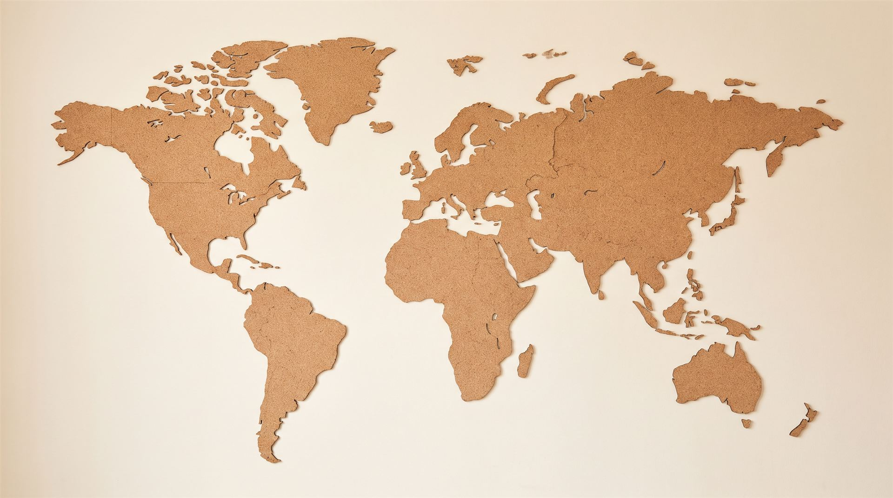
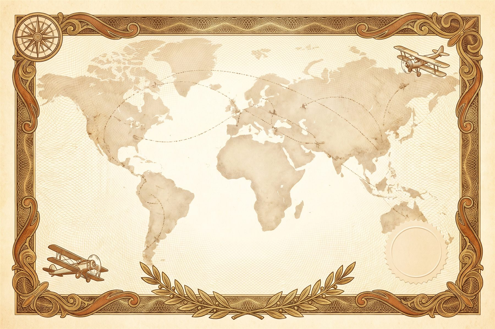

<!doctype html>
<html lang="fr">
<head>
<meta charset="utf-8">
<meta name="viewport" content="width=device-width,initial-scale=1,viewport-fit=cover">
<title>Le Passeport francophone</title>
<link rel="preconnect" href="https://fonts.googleapis.com">
<link rel="preconnect" href="https://fonts.gstatic.com" crossorigin>
<link rel="stylesheet" href="https://fonts.googleapis.com/css2?family=Fraunces:opsz,wght@9..144,500;9..144,700&family=Atkinson+Hyperlegible:ital,wght@0,400;0,700;1,400&family=IBM+Plex+Mono:wght@500;600&display=swap">
<style>
/* Direction visuelle : un passeport. Couverture bleu nuit et or, pages en papier de sécurité,
   une encre de tampon par escale. Une colonne de lecture (~68 caractères). */
:root {
  /* Palette chaude : cuir de passeport brun, or cuivré, papier crème */
  --nuit: #4a2417; --nuit-2: #5e3020; --or: #c07a1c; --or-clair: #f0c27a;
  --papier: #f7efe2; --papier-2: #efe1cb; --carte: #fffaf2;
  --encre: #2b1a12; --encre-douce: #6b5243; --trait: #e2cfb3;
  --mix-titre: 72%;
  --ok: #2e7a3a; --ok-fond: #e3f1dc; --erreur: #b3261e; --erreur-fond: #fbe2dc; --surligne: #ffe28a;
  --mer: #dfe9ef; --mer-trait: #bfd0db;
  /* Carte ancienne : même parchemin dans les deux thèmes, par choix */
  --parch: #f1e7d2; --terre: #d8c4a0; --sepia: #8a6f4e; --sepia-fonce: #4a3a28; --x: #d42a22;
  --f-titre: "Fraunces", Georgia, "Times New Roman", serif;
  --f-texte: "Atkinson Hyperlegible", "Segoe UI", system-ui, sans-serif;
  --f-code: "IBM Plex Mono", ui-monospace, "Courier New", monospace;
}
@media (prefers-color-scheme: dark) {
  :root:not([data-theme="light"]) {
    --nuit: #2a140c; --nuit-2: #3a1d12; --or: #e3a04a; --or-clair: #f3cf92;
    --papier: #1c1410; --papier-2: #271c16; --carte: #2a1f18;
    --encre: #f4e9dc; --encre-douce: #c7b3a1; --trait: #4a382c; --mix-titre: 45%;
    --ok: #5fc792; --ok-fond: #15352a; --erreur: #f0837a; --erreur-fond: #3d1c1d; --surligne: #4a3f17;
    --mer: #142033; --mer-trait: #24344f;
    color-scheme: dark;
  }
}
:root[data-theme="dark"] {
  --nuit: #2a140c; --nuit-2: #3a1d12; --or: #e3a04a; --or-clair: #f3cf92;
  --papier: #1c1410; --papier-2: #271c16; --carte: #2a1f18;
  --encre: #f4e9dc; --encre-douce: #c7b3a1; --trait: #4a382c; --mix-titre: 45%;
  --ok: #5fc792; --ok-fond: #15352a; --erreur: #f0837a; --erreur-fond: #3d1c1d; --surligne: #4a3f17;
  --mer: #142033; --mer-trait: #24344f;
  color-scheme: dark;
}
* { box-sizing: border-box; }
html { -webkit-text-size-adjust: 100%; }
body {
  margin: 0; background: var(--papier);
  background-image:
    repeating-radial-gradient(circle at 20% 30%, transparent 0 14px, color-mix(in srgb, var(--trait) 35%, transparent) 14px 15px),
    repeating-radial-gradient(circle at 80% 70%, transparent 0 18px, color-mix(in srgb, var(--trait) 25%, transparent) 18px 19px);
  color: var(--encre); font-family: var(--f-texte); font-size: 1.05rem; line-height: 1.6; min-height: 100vh;
}
h1, h2, h3 { font-family: var(--f-titre); line-height: 1.15; text-wrap: balance; margin: 0; font-weight: 700; }
p { margin: 0; }
button { font: inherit; cursor: pointer; }
:focus-visible { outline: 3px solid var(--or); outline-offset: 2px; }

/* Barre */
body::before { content: ""; position: fixed; inset: 0 0 auto; height: env(safe-area-inset-top, 0px); z-index: 10; background: var(--nuit); }
.barre { position: sticky; top: env(safe-area-inset-top, 0px); z-index: 5; background: var(--nuit); color: #f3efe4; padding-block: 10px; padding-left: max(16px, env(safe-area-inset-left, 0px)); padding-right: max(16px, env(safe-area-inset-right, 0px)); border-bottom: 2px solid var(--or); }
.barre-in { max-width: 1040px; margin: 0 auto; display: flex; align-items: center; gap: 10px 16px; flex-wrap: wrap; }
.marque { font-family: var(--f-titre); font-size: 1.05rem; color: var(--or-clair); background: none; border: 0; padding: 0; }
.nav { display: flex; gap: 6px; flex-wrap: wrap; margin-left: auto; }
.nav button, .icone-btn { background: transparent; color: #f3efe4; border: 1px solid color-mix(in srgb, var(--or-clair) 45%, transparent); border-radius: 999px; padding: 4px 14px; font-size: .92rem; }
.nav button[aria-current="true"] { background: var(--or-clair); color: #15233f; border-color: var(--or-clair); }
.icone-btn { padding: 4px 10px; }
.chrono { font-family: var(--f-code); font-size: 1.05rem; font-variant-numeric: tabular-nums; padding: 3px 10px; border-radius: 6px; background: var(--nuit-2); color: #f3efe4; }
.chrono.urgent { background: var(--or); color: #2a160c; box-shadow: 0 0 0 1px var(--or-clair) inset; }
.chrono small { font-family: var(--f-texte); font-size: .75rem; opacity: .8; margin-right: 6px; }

main { max-width: 1040px; margin: 0 auto; padding-block: 28px 40px; padding-left: max(16px, env(safe-area-inset-left, 0px)); padding-right: max(16px, env(safe-area-inset-right, 0px)); display: grid; gap: 24px; }
.colonne { max-width: 720px; width: 100%; margin: 0 auto; display: grid; gap: 22px; }
main section, .lexique, .question { scroll-margin-top: 120px; }
@media print { .barre, footer, .btn, .nav { display: none !important; } body { background: #fff; } .page { break-inside: avoid; } }
.page { background: var(--carte); border: 1px solid var(--trait); border-radius: 10px; padding: clamp(18px, 4vw, 30px); display: grid; gap: 16px; min-width: 0; }
.etiquette { font-family: var(--f-code); font-size: .78rem; letter-spacing: .14em; text-transform: uppercase; color: var(--encre-douce); }
.doux { color: var(--encre-douce); }
.petit { font-size: .9rem; }

.btn { display: inline-flex; align-items: center; justify-content: center; gap: 8px; border: 2px solid var(--nuit); background: var(--nuit); color: #f6f2e6; padding: 10px 20px; border-radius: 8px; font-weight: 700; letter-spacing: .02em; }
.btn:hover:not(:disabled) { background: var(--nuit-2); }
.btn.second { background: transparent; color: var(--encre); border-color: var(--trait); }
.btn.second:hover:not(:disabled) { border-color: var(--encre-douce); background: var(--papier-2); }
.btn.or { background: var(--or); border-color: var(--or); color: #1a1408; }
.btn.or:hover:not(:disabled) { background: var(--or-clair); border-color: var(--or-clair); }
.btn:disabled { opacity: .45; cursor: not-allowed; }
.rangee { display: flex; gap: 10px; flex-wrap: wrap; align-items: center; }

/* Couverture */
.couverture { background: radial-gradient(120% 90% at 50% 0%, var(--nuit-2), var(--nuit)); color: #f3efe4; border-radius: 14px 28px 28px 14px; border-left: 14px solid color-mix(in srgb, var(--nuit) 70%, #000); padding: clamp(28px, 6vw, 56px) clamp(20px, 5vw, 48px); display: grid; justify-items: center; text-align: center; gap: 18px; box-shadow: 0 18px 40px -20px rgba(10,18,35,.55); max-width: 560px; width: 100%; margin: 0 auto; }
.couverture .pays { font-family: var(--f-code); letter-spacing: .32em; font-size: .8rem; color: var(--or-clair); }
.couverture h1 { font-size: clamp(2rem, 7vw, 3rem); color: var(--or-clair); letter-spacing: .03em; }
.couverture .sous { font-family: var(--f-titre); font-style: italic; color: #d9d3c1; }
.globe { width: 130px; height: 130px; }
.bienvenue { font-family: var(--f-code); letter-spacing: .12em; font-size: 1.15rem; color: var(--or); text-align: center; }

.message { border-left: 4px solid var(--or); padding: 4px 0 4px 18px; font-family: var(--f-titre); font-style: italic; font-size: 1.12rem; display: grid; gap: 10px; }
.regles { margin: 0; padding-left: 1.4em; display: grid; gap: 6px; }
.regles li::marker { font-family: var(--f-code); color: var(--or); font-weight: 600; }
.champ { display: grid; gap: 6px; }
.champ label { font-weight: 700; font-size: .95rem; }
input[type="text"], input[type="password"], textarea, select { font: inherit; color: var(--encre); background: var(--papier); border: 1.5px solid var(--trait); border-radius: 8px; padding: 10px 12px; width: 100%; min-width: 0; }
textarea { min-height: 80px; resize: vertical; }
input:focus, textarea:focus, select:focus { border-color: var(--or); outline: none; box-shadow: 0 0 0 3px color-mix(in srgb, var(--or) 30%, transparent); }
.voyageurs { display: grid; grid-template-columns: repeat(2, minmax(0, 1fr)); gap: 12px; }
.roles { display: grid; gap: 8px; margin: 0; padding: 0; list-style: none; }
.roles li { display: flex; gap: 10px; align-items: baseline; flex-wrap: wrap; padding: 10px 12px; background: var(--papier-2); border-radius: 8px; }
.roles strong { min-width: 7em; }
.role-tag { font-family: var(--f-code); font-size: .82rem; letter-spacing: .06em; text-transform: uppercase; color: var(--or); }

/* Compagnons (tirage du guide) */
.guides { display: grid; grid-template-columns: repeat(4, minmax(0, 1fr)); gap: 10px; }
/* Cartes de jeu : papier crème, liseré doré, médaillon et bordure à la couleur du guide */
.guide { --g: #555; position: relative; border: 2px solid color-mix(in srgb, var(--g) 55%, var(--or)); border-radius: 14px; padding: 16px 8px 12px; display: grid; justify-items: center; align-content: start; gap: 6px; text-align: center;
  background: linear-gradient(180deg, color-mix(in srgb, var(--g) 9%, var(--carte)), var(--carte) 55%);
  box-shadow: inset 0 0 0 4px var(--carte), inset 0 0 0 5px color-mix(in srgb, var(--or) 45%, transparent), 0 2px 6px rgba(74, 36, 23, .12);
  transition: transform .15s, box-shadow .15s, opacity .25s, filter .25s; }
.av { position: relative; overflow: hidden; }
.av img { position: absolute; inset: 0; width: 100%; height: 100%; object-fit: cover; object-position: 50% 40%; }
.guide .av { width: 84px; height: 84px; border-radius: 50%; background: var(--g); color: #fff; display: grid; place-items: center; font-family: var(--f-titre); font-size: 2rem;
  border: 3px solid var(--g); box-shadow: 0 0 0 2px var(--carte), 0 0 0 4px var(--or); }
.guide strong { font-family: var(--f-titre); font-size: 1.02rem; line-height: 1.2; margin-top: 4px; }
.guide span { font-size: .8rem; color: var(--encre-douce); line-height: 1.3; }
.ico-guide { width: 22px; height: 22px; fill: none; stroke: color-mix(in srgb, var(--g) var(--mix-titre), var(--encre)); stroke-width: 1.8; stroke-linecap: round; stroke-linejoin: round; opacity: .85; }
.guide.vise { transform: translateY(-4px) scale(1.04); box-shadow: inset 0 0 0 4px var(--carte), inset 0 0 0 5px var(--or), 0 0 0 3px var(--or-clair), 0 8px 18px rgba(192, 122, 28, .35); }
.guide.choisi { transform: translateY(-4px) scale(1.05); border-color: var(--or);
  box-shadow: inset 0 0 0 4px var(--carte), inset 0 0 0 5px var(--or), 0 0 0 4px color-mix(in srgb, var(--or-clair) 70%, transparent), 0 10px 26px rgba(192, 122, 28, .45); }
.guides.fini .guide:not(.choisi) { opacity: .5; filter: saturate(.5); transform: scale(.96); }
.tampon-choisi { position: absolute; top: 8px; right: 6px; transform: rotate(-9deg); padding: 3px 7px; border: 2px double var(--x); border-radius: 6px; color: var(--x) !important; font-family: var(--f-code); font-size: .68rem !important; font-weight: 600; letter-spacing: .06em; text-transform: uppercase; background: color-mix(in srgb, var(--carte) 85%, transparent); animation: tamponner .5s cubic-bezier(.2,1.4,.4,1) both; }
.bulle { --g: #555; display: grid; grid-template-columns: 48px minmax(0, 1fr); gap: 12px; align-items: start; background: color-mix(in srgb, var(--g) 10%, var(--carte)); border: 1px solid color-mix(in srgb, var(--g) 40%, var(--trait)); border-radius: 10px; padding: 12px 14px; }
.bulle .av { width: 48px; height: 48px; border-radius: 50%; background: var(--g); color: #fff; display: grid; place-items: center; font-family: var(--f-titre); font-size: 1.2rem; box-shadow: 0 0 0 2px var(--carte), 0 0 0 3px var(--or); }
.bulle p { font-style: italic; }

/* Carte de vol */
/* Carte façon Genially : parchemin, terres sépia, avions, croix rouges sur les escales visitées */
.titre-carte { font-family: var(--f-titre); font-weight: 500; text-align: center; letter-spacing: .06em; text-transform: uppercase; font-size: clamp(1.1rem, 3vw, 1.5rem); color: var(--sepia-fonce); }
.carte-vol { width: 100%; height: auto; display: block; border-radius: 10px; border: 2px dashed color-mix(in srgb, var(--sepia) 70%, transparent); background: var(--parch); }
.carte-cadre { overflow-x: auto; border-radius: 10px; -webkit-overflow-scrolling: touch; }
.carte-zone { position: relative; }
@media (max-width: 640px) { .carte-zone { min-width: 640px; } }
.carte-vol .parchemin { fill: var(--parch); }
/* Carte ancienne : côtes gravées, océans nommés, voilier, rose des vents, cartouche, cadre gradué */
.carte-vol .cote { fill: none; stroke: #8a6f4e; stroke-opacity: .28; stroke-width: 7; stroke-linejoin: round; }
.carte-vol .terres { fill: url(#terre-grad); }
.carte-vol .oceans text { font-family: var(--f-titre); font-style: italic; font-size: 15px; letter-spacing: .32em; text-transform: uppercase; fill: #8a6f4e; fill-opacity: .75; stroke: none; text-anchor: middle; }
.carte-vol .voilier path { fill: #6b4a2a; opacity: .7; }
.carte-vol .rose-vents circle { stroke: #6b4a2a; stroke-width: 1; opacity: .7; }
.carte-vol .rose-vents .branche { fill: #6b4a2a; opacity: .8; } .carte-vol .rose-vents .branche.petite { fill: #b0884f; }
.carte-vol .rose-vents text { font-size: 13px; fill: #6b4a2a; stroke: none; font-weight: 700; }
.carte-vol .cartouche rect { fill: #f6ecd3; stroke: #6b4a2a; stroke-width: 1.2; } .carte-vol .cartouche .filet-int { fill: none; stroke-width: .6; stroke-dasharray: 3 2; }
.carte-vol .cartouche text { font-size: 14px; font-style: italic; fill: #4a3a28; stroke: none; letter-spacing: .06em; }
.carte-vol .cadre-carte { fill: none; stroke: #6b4a2a; stroke-width: 1.4; opacity: .55; }
.carte-vol .graduations { stroke: #6b4a2a; stroke-width: 1.2; opacity: .55; }
/* Routes : prévues en pointillés, effectuées en rouge plein, celle de l'escale choisie qui s'anime */
.carte-vol .route.prevue { stroke: #6b4a2a; stroke-width: 1.2; stroke-dasharray: 3 6; opacity: .45; }
.carte-vol .route.faite { stroke: var(--or); stroke-width: 1.8; stroke-dasharray: none; opacity: .75; }
.carte-vol .route.sel { stroke: var(--or); stroke-width: 2.2; opacity: .9; stroke-dasharray: 6 6; animation: route-fil 1.2s linear infinite; }
@keyframes route-fil { to { stroke-dashoffset: -24; } }
/* Les noms des escales gardent une taille lisible quand on zoome */
.carte-vol .pt text { font-size: calc(18px * max(var(--z, 1), .5)); stroke-width: calc(4px * max(var(--z, 1), .5)); }
.carte-vol .oceans, .carte-vol .cartouche { transition: opacity .3s; }
/* Boutons de zoom */
.carte-wrap .zoom-carte { position: absolute; top: 10px; right: 10px; z-index: 4; display: flex; gap: 4px; }
.zoom-carte button { min-width: 34px; height: 34px; padding: 0 10px; border-radius: 8px; border: 1px solid #6b4a2a; background: rgba(246, 236, 211, .92); color: #4a3a28; font-family: var(--f-titre); font-weight: 700; font-size: 1.05rem; box-shadow: 0 2px 6px -2px rgba(0,0,0,.35); }
.zoom-carte button:hover { background: #fff6df; }
.fiche-carte.attend { opacity: 0; pointer-events: none; animation: none; }
/* Carte en liège : punaises rouges (vertes une fois l'escale visitée) et photo du pays au clic */
.carte-liege-wrap { position: relative; }
.carte-liege { position: relative; border-radius: 12px; overflow: visible; box-shadow: 0 14px 30px -18px rgba(60, 30, 10, .6); }
.plan-liege { position: relative; aspect-ratio: 1920 / 1072; max-width: 100%; }
.fond-liege { display: block; width: 100%; height: 100%; object-fit: cover; border-radius: 12px; }
.punaise-liege { position: absolute; z-index: 2; width: 0; height: 0; padding: 0; border: 0; background: none; cursor: pointer; }
/* La punaise : l'aiguille touche exactement le point de l'escale ; elle se plante à l'ouverture, se soulève au survol */
.punaise-liege .tete { position: absolute; left: 0; top: 0; width: clamp(26px, 3.2vw, 40px); height: auto; aspect-ratio: 40 / 60; overflow: visible;
  transform: translate(-50%, -96%) rotate(-8deg); transform-origin: 50% 96%; filter: drop-shadow(0 2px 2px rgba(60, 25, 5, .35)); transition: transform .18s cubic-bezier(.2, 1.4, .4, 1), filter .18s; }
.punaise-liege .ombre-pin { fill: rgba(40, 18, 4, .35); }
main.entree .punaise-liege .tete { animation: planter .55s cubic-bezier(.3, 1.5, .5, 1) both; animation-delay: calc(.3s + var(--k, 0) * .12s); }
@keyframes planter { from { opacity: 0; transform: translate(-50%, -150%) rotate(-25deg) scale(1.2); } to { opacity: 1; transform: translate(-50%, -96%) rotate(-8deg); } }
.punaise-liege:not(.visite):not(.sel) .tete { animation: respirer-pin 2.8s ease-in-out infinite; animation-delay: calc(var(--k, 0) * .4s); }
main.entree .punaise-liege:not(.visite):not(.sel) .tete { animation: planter .55s cubic-bezier(.3, 1.5, .5, 1) both, respirer-pin 2.8s ease-in-out 1.2s infinite; animation-delay: calc(.3s + var(--k, 0) * .12s), calc(1.2s + var(--k, 0) * .4s); }
@keyframes respirer-pin { 50% { transform: translate(-50%, -100%) rotate(-6deg); filter: drop-shadow(0 6px 4px rgba(60, 25, 5, .3)); } }
.punaise-liege:hover .tete, .punaise-liege.survol .tete, .punaise-liege:focus-visible .tete { transform: translate(-50%, -104%) rotate(-3deg) scale(1.15); filter: drop-shadow(0 8px 6px rgba(60, 25, 5, .35)); animation: none; }
.punaise-liege.sel .tete { transform: translate(-50%, -104%) rotate(0) scale(1.3); filter: drop-shadow(0 0 6px #f3d79a) drop-shadow(0 8px 6px rgba(60, 25, 5, .4)); animation: none; }
.punaise-liege:focus-visible { outline: none; }
.nom-punaise { position: absolute; left: 0; top: clamp(14px, 2vw, 24px); transform: translateX(-50%); white-space: nowrap; font-family: var(--f-titre); font-weight: 700; font-size: clamp(.7rem, 1.3vw, .95rem);
  color: #3b2416; background: rgba(255, 250, 240, .85); padding: 1px 8px; border-radius: 999px; box-shadow: 0 1px 3px rgba(0,0,0,.2); pointer-events: none; }
.fiche-pays { --c: #333; position: absolute; z-index: 5; width: min(320px, 70%); background: #fffdf8; border-radius: 6px; padding: 10px 10px 12px; display: grid; gap: 10px;
  box-shadow: 0 18px 34px -12px rgba(30, 15, 5, .6); animation: poser-fiche .35s cubic-bezier(.2, 1.3, .4, 1) both; color: #2b1a12; }
.fiche-pays.a-droite { margin-left: 30px; } .fiche-pays.a-gauche { transform: translateX(-100%); margin-left: -30px; }
.fiche-pays.en-bas { margin-top: -30px; } .fiche-pays.en-haut { translate: 0 -100%; margin-top: 30px; }
@keyframes poser-fiche { from { opacity: 0; scale: .85; rotate: -4deg; } to { opacity: 1; scale: 1; rotate: -1.5deg; } }
.fp-photo { position: relative; aspect-ratio: 16 / 10; border-radius: 3px; overflow: hidden; display: grid; place-items: center; background: color-mix(in srgb, var(--c) 14%, #efe6d4); }
.fp-photo .embleme { width: 40%; height: auto; animation: none; }
.fp-photo img { position: absolute; inset: 0; width: 100%; height: 100%; object-fit: cover; }
.fp-photo .bande-drapeau { position: absolute; inset: auto 0 0; height: 6px; }
.fp-texte { display: grid; gap: 4px; }
.fp-texte strong { font-family: var(--f-titre); font-size: 1.3rem; color: color-mix(in srgb, var(--c) 70%, #2b1a12); }
.fp-texte span { font-size: .8rem; color: #6b5243; }
.fp-texte p { font-family: var(--f-titre); font-style: italic; font-size: .92rem; line-height: 1.35; color: #4a3a28; }
.fiche-pays .fermer-fiche { top: 14px; right: 14px; z-index: 2; background: rgba(255, 250, 240, .9); }
@media (max-width: 640px) {
  .nom-punaise { display: none; }
  .fiche-pays, .fiche-pays.a-gauche, .fiche-pays.en-haut { position: relative; left: auto !important; top: auto !important; width: 100%; margin: 12px 0 0; transform: none; translate: none; }
  .carte-liege { display: grid; }
}
@media (max-width: 640px) { .carte-wrap .zoom-carte { top: 6px; right: 6px; } }
/* Carte interactive : escale sélectionnée ou survolée, punaise-drapeau, fiche de l'escale */
.carte-vol .pt.sel .halo, .carte-vol .pt.survol .halo { fill: color-mix(in srgb, var(--or) 35%, transparent); stroke: var(--or); stroke-width: 2.5; }
.carte-vol .pt.sel .picto { fill: var(--or); stroke: var(--nuit); stroke-width: .6; paint-order: stroke; }
.carte-vol .pt .picto, .carte-vol .pt .punaise { transform-box: fill-box; transform-origin: center; }
.carte-vol .pt.sel .punaise, .carte-vol .pt.survol .punaise { transform: scale(1.25); }
.carte-vol .pt .punaise { transition: transform .2s; }
.visa-vignette.survol { transform: translateY(-3px); box-shadow: 0 0 0 2px var(--or), 0 12px 22px -14px rgba(60, 20, 10, .5); }
.fiche-carte { --c: #333; position: absolute; z-index: 3; width: min(280px, 62%); padding: 16px 14px 12px; border-radius: 10px; overflow: hidden;
  background: var(--page); background-image: var(--guilloche); background-size: 300px 150px; border: 1px solid color-mix(in srgb, var(--c) 35%, var(--trait));
  box-shadow: 0 16px 30px -14px rgba(40, 15, 5, .55); display: grid; gap: 8px; animation: fiche .28s cubic-bezier(.2, 1.3, .4, 1) both; }
.fiche-carte.a-droite { margin-left: 26px; } .fiche-carte.a-gauche { transform: translateX(-100%); margin-left: -26px; }
.fiche-carte.en-bas { margin-top: -20px; } .fiche-carte.en-haut { translate: 0 -100%; margin-top: 20px; }
@keyframes fiche { from { opacity: 0; scale: .9; } to { opacity: 1; scale: 1; } }
.fiche-carte .bande-drapeau { height: 6px; }
.fermer-fiche { position: absolute; top: 8px; right: 6px; width: 28px; height: 28px; border: 0; background: transparent; color: var(--encre-douce); font-size: 1.3rem; line-height: 1; border-radius: 50%; }
.fermer-fiche:hover { background: var(--papier-2); }
.fc-tete { display: grid; grid-template-columns: 54px minmax(0, 1fr); gap: 10px; align-items: center; padding-right: 22px; }
.fc-tete strong { display: block; font-family: var(--f-titre); font-size: 1.2rem; color: color-mix(in srgb, var(--c) var(--mix-titre), var(--encre)); }
.fc-tete span { font-size: .8rem; color: var(--encre-douce); }
.fc-contact { font-size: .85rem; font-weight: 700; display: flex; align-items: center; gap: 8px; }
.photo-contact.mini { width: 34px; height: 34px; box-shadow: 0 0 0 2px var(--carte), 0 0 0 3px color-mix(in srgb, var(--c, var(--or)) 55%, transparent); }
.vv-contact, .fp-contact { display: flex; align-items: center; gap: 7px; margin-top: 3px; }
.fc-ambiance { font-family: var(--f-titre); font-style: italic; font-size: .92rem; line-height: 1.35; color: var(--encre-douce); }
.fc-pied { display: flex; justify-content: space-between; align-items: center; gap: 8px; flex-wrap: wrap; }
.fc-pied .vv-etat.ok { border-color: var(--ok); color: var(--ok); background: var(--ok-fond); }
.fc-pied .btn { padding: 8px 14px; }
.carte-wrap { position: relative; display: grid; }
.carte-wrap > .carte-cadre { order: 1; } .carte-wrap > .fiche-carte { order: 2; }
/* Sur téléphone, la carte défile : la fiche se place sous la carte au lieu de flotter dessus */
@media (max-width: 640px) {
  .fiche-carte, .fiche-carte.a-gauche, .fiche-carte.en-haut { position: relative; left: auto !important; top: auto !important; width: 100%; margin: 12px 0 0; transform: none; translate: none; }
}
.carte-vol .grille { stroke: color-mix(in srgb, var(--sepia) 22%, transparent); stroke-width: .8; fill: none; }
.carte-vol .terres { fill: var(--terre); stroke: var(--sepia); stroke-width: 1; stroke-linejoin: round; }
.carte-vol .route { fill: none; stroke: var(--x); stroke-width: 1.4; stroke-dasharray: 4 5; opacity: .55; }
.carte-vol text { font-family: var(--f-titre); font-size: 18px; fill: var(--sepia-fonce); font-weight: 500; paint-order: stroke; stroke: var(--parch); stroke-width: 4px; stroke-linejoin: round; }
.carte-vol .pt { cursor: pointer; outline: none; }
.carte-vol .pt .picto { fill: var(--nuit); transition: transform .15s; }
.carte-vol .pt .halo { fill: transparent; transition: fill .15s; }
.carte-vol .pt:hover .halo, .carte-vol .pt:focus-visible .halo { fill: color-mix(in srgb, var(--or) 30%, transparent); }
.carte-vol .pt:focus-visible .halo { stroke: var(--or); stroke-width: 2.5; }
.carte-vol .pt.visite text { opacity: .8; }
.carte-vol .croix path { stroke: var(--x); stroke-width: 5; stroke-linecap: round; fill: none; opacity: .92; }
.carte-vol .paris circle { fill: var(--nuit); }
.avion { transition: none; }

/* Pages du passeport */
.pages { display: grid; grid-template-columns: repeat(3, minmax(0, 1fr)); gap: 14px; }
.feuillet { --c: #333; text-align: left; background: var(--carte); border: 1px solid var(--trait); position: relative; overflow: hidden; border-radius: 8px; padding: 22px 14px 14px; display: grid; gap: 8px; align-content: start; color: var(--encre); min-width: 0; transition: transform .15s, border-color .15s; }
.feuillet:hover { transform: translateY(-2px); border-color: color-mix(in srgb, var(--c) 60%, var(--trait)); border-top-color: var(--c); }
.feuillet .num { font-family: var(--f-code); font-size: .75rem; color: var(--encre-douce); letter-spacing: .1em; }
.feuillet h3 { font-size: 1.15rem; color: color-mix(in srgb, var(--c) var(--mix-titre), var(--encre)); }
.feuillet .reg { font-size: .85rem; color: var(--encre-douce); }
.emplacement { width: 88px; height: 88px; justify-self: center; display: grid; place-items: center; border: 2px dashed var(--trait); border-radius: 50%; font-family: var(--f-code); font-size: 1.6rem; color: var(--encre-douce); }
.code-ligne { display: flex; gap: 10px; flex-wrap: wrap; align-items: center; }
.case { width: 48px; height: 58px; display: grid; place-items: center; border: 2px solid var(--trait); border-radius: 8px; font-family: var(--f-code); font-size: 1.6rem; font-weight: 600; background: var(--carte); }
.case.pleine { border-color: var(--or); }
.mrz { font-family: var(--f-code); font-size: .8rem; letter-spacing: .12em; color: var(--encre-douce); background: var(--papier-2); padding: 10px 12px; border-radius: 6px; overflow-x: auto; white-space: pre; }

/* Tampon */
.tampon { --c: #333; width: 96px; height: 96px; justify-self: center; border-radius: 50%; border: 3px double var(--c); display: grid; place-content: center; text-align: center; transform: rotate(-9deg); font-family: var(--f-code); line-height: 1.05; background: color-mix(in srgb, var(--c) 7%, transparent); color: color-mix(in srgb, var(--c) var(--mix-titre), var(--encre)); }
.tampon { position: relative; }
.tampon .t-fond { position: absolute; inset: 9%; border-radius: 50%; overflow: hidden; z-index: 0; opacity: .62; }
.tampon .t-drapeau { width: 100%; height: 100%; display: block; transform: rotate(4deg) scale(1.05); }
.tampon > :not(.t-fond) { position: relative; z-index: 1; text-shadow: 0 0 2px var(--carte), 0 0 4px var(--carte), 0 0 7px var(--carte); }
.tampon .t-chiffre { color: color-mix(in srgb, var(--c) 55%, var(--encre)); }
@media (prefers-color-scheme: dark) { :root:not([data-theme="light"]) .tampon .t-fond { opacity: .5; } }
:root[data-theme="dark"] .tampon .t-fond { opacity: .5; }
.tampon .t-code { font-size: .7rem; letter-spacing: .16em; }
.tampon .t-chiffre { font-size: 2.2rem; font-weight: 600; }
.tampon .t-nom { font-size: .6rem; letter-spacing: .06em; text-transform: uppercase; }
.tampon.grand { width: 150px; height: 150px; border-width: 5px; }
.tampon.grand .t-chiffre { font-size: 3.4rem; }
.tampon.grand .t-nom { font-size: .78rem; }
.tampon.anime { animation: tamponner .55s cubic-bezier(.2,1.4,.4,1) both; }
@keyframes tamponner { 0% { transform: scale(1.9) rotate(-2deg); opacity: 0; } 60% { opacity: 1; } 100% { transform: scale(1) rotate(-9deg); opacity: 1; } }

/* Transit (repris du Genially : « arrivée à destination… 00:03 ») */
.transit { display: grid; justify-items: center; gap: 18px; text-align: center; padding-block: 20px; }
.transit .compte { font-family: var(--f-code); font-size: 2.6rem; font-weight: 600; color: var(--or); font-variant-numeric: tabular-nums; }
.transit .ambiance { font-family: var(--f-titre); font-style: italic; font-size: 1.2rem; max-width: 34em; }

/* Escale */
.entete-escale { --c: #333; border-radius: 10px; padding: clamp(18px, 4vw, 28px); background: color-mix(in srgb, var(--c) 12%, var(--carte)); border: 1px solid color-mix(in srgb, var(--c) 35%, var(--trait)); display: grid; grid-template-columns: minmax(0, 1fr) auto; gap: 10px 18px; align-items: center; }
.entete-escale > div { display: grid; gap: 8px; }
/* Portrait du contact de l'escale (médaillon rond) */
.photo-contact { width: 64px; height: 64px; border-radius: 50%; object-fit: cover; flex: none; box-shadow: 0 0 0 3px var(--carte), 0 0 0 4px color-mix(in srgb, var(--c, var(--or)) 55%, transparent), 0 6px 14px -6px rgba(40, 14, 4, .45); }
.photo-contact.grande { width: 112px; height: 112px; justify-self: center; animation: pop-contact .6s cubic-bezier(.2, 1.5, .4, 1) both; }
@keyframes pop-contact { from { transform: scale(.4) rotate(-8deg); opacity: 0; } to { transform: none; opacity: 1; } }
.ligne-contact { display: flex; align-items: center; gap: 12px; margin: 0; }
.entete-escale { position: relative; overflow: hidden; padding-top: calc(clamp(18px, 4vw, 28px) + 8px); }
/* Bande aux couleurs du drapeau de l'escale */
.bande-drapeau { position: absolute; inset: 0 0 auto; height: 8px; display: flex; box-shadow: inset 0 -1px 0 rgba(0,0,0,.12); }
.bande-drapeau span { flex: 1; }
.drapeau-mini { display: inline-flex; width: 30px; height: 18px; border-radius: 3px; overflow: hidden; box-shadow: 0 0 0 1px rgba(0,0,0,.18); vertical-align: middle; }
.drapeau-mini span { flex: 1; }
.drapeau-mini svg { width: 100%; height: 100%; display: block; }
.entete-escale h2 { font-size: clamp(1.7rem, 5vw, 2.3rem); color: color-mix(in srgb, var(--c) var(--mix-titre), var(--encre)); }
.embleme { width: 92px; height: 92px; color: var(--c); }
.accroche { font-family: var(--f-titre); font-style: italic; font-size: 1.1rem; }
.etapes { display: flex; gap: 6px; flex-wrap: wrap; }
.etapes span { font-family: var(--f-code); font-size: .75rem; letter-spacing: .04em; padding: 3px 10px; border-radius: 999px; border: 1px solid var(--trait); background: var(--carte); color: var(--encre-douce); }
.etapes span.ok { border-color: var(--ok); background: var(--ok-fond); color: var(--encre); }
.document { display: grid; gap: 10px; }
.para { display: grid; grid-template-columns: 2.2em minmax(0, 1fr); gap: 8px; padding: 8px 10px; border-radius: 8px; transition: background .3s; }
.para .n { font-family: var(--f-code); font-weight: 600; color: color-mix(in srgb, var(--c, var(--or)) 75%, var(--encre)); }
.para.surligne { background: var(--surligne); }
.para.lu { background: color-mix(in srgb, var(--or) 12%, transparent); }
.question { display: grid; gap: 10px; padding-top: 14px; border-top: 1px solid var(--trait); }
.question:first-of-type { border-top: 0; padding-top: 0; }
.question h3 { font-family: var(--f-texte); font-size: 1.05rem; }
.options { display: grid; gap: 8px; }
.option { display: grid; grid-template-columns: 2em minmax(0, 1fr) auto; align-items: center; gap: 8px; text-align: left; background: var(--papier); color: var(--encre); border: 1.5px solid var(--trait); border-radius: 8px; padding: 10px 12px; }
.option:hover:not(:disabled) { border-color: var(--encre-douce); }
.option .l { font-family: var(--f-code); font-weight: 600; }
.option.juste { background: var(--ok-fond); border-color: var(--ok); }
.option.faux { background: var(--erreur-fond); border-color: var(--erreur); }
.option:disabled { cursor: default; }
.option .marque-etat { font-family: var(--f-code); font-size: .8rem; font-weight: 600; }
.option.juste .marque-etat { color: var(--ok); }
.option.faux .marque-etat { color: var(--erreur); }
.retour { font-size: .95rem; padding: 8px 12px; border-radius: 6px; }
.retour.faux { background: var(--erreur-fond); border-left: 4px solid var(--erreur); }
.retour.juste { background: var(--ok-fond); border-left: 4px solid var(--ok); }

/* Lexique : associer */
.lexique { display: grid; grid-template-columns: minmax(0, 2fr) minmax(0, 3fr); gap: 10px 14px; }
.lexique .col { display: grid; gap: 8px; align-content: start; }
.tuile { text-align: left; background: var(--papier); color: var(--encre); border: 1.5px solid var(--trait); border-radius: 8px; padding: 10px 12px; min-height: 48px; }
.tuile.mot { font-weight: 700; }
.tuile[aria-pressed="true"] { border-color: var(--or); background: color-mix(in srgb, var(--or) 16%, var(--carte)); }
.tuile.trouve { background: var(--ok-fond); border-color: var(--ok); cursor: default; }
.tuile.secoue { animation: secouer .35s; border-color: var(--erreur); background: var(--erreur-fond); }
@keyframes secouer { 25% { transform: translateX(-5px); } 75% { transform: translateX(5px); } }

.carnet-mini { display: grid; grid-template-columns: repeat(2, minmax(0, 1fr)); gap: 12px; }
details summary { cursor: pointer; font-weight: 700; }
details[open] summary { margin-bottom: 12px; }
.condition { display: flex; gap: 8px; align-items: center; font-size: .92rem; }
.condition .puce { width: 1.3em; height: 1.3em; border-radius: 50%; border: 2px solid var(--trait); display: inline-grid; place-items: center; font-size: .75rem; flex: none; }
.condition.ok .puce { background: var(--ok); border-color: var(--ok); color: #fff; }
.recompense { display: grid; justify-items: center; gap: 14px; text-align: center; }

/* Carnet */
.fiches { display: grid; gap: 16px; }
.fiche { --c: #333; border-left: 6px solid var(--c); }
.fiche h3 { color: color-mix(in srgb, var(--c) var(--mix-titre), var(--encre)); font-size: 1.25rem; }
.fiche-grille { display: grid; grid-template-columns: repeat(2, minmax(0, 1fr)); gap: 12px; }
.fiche-grille .large { grid-column: 1 / -1; }
.suggestions { display: flex; gap: 6px; flex-wrap: wrap; }
.suggestions button { font-size: .82rem; padding: 2px 10px; border-radius: 999px; border: 1px dashed var(--trait); background: transparent; color: var(--encre-douce); }

/* Coffre */
.coffre { display: grid; justify-items: center; gap: 18px; text-align: center; }
.cadran { display: flex; gap: 10px; flex-wrap: wrap; justify-content: center; }
.cadran label { display: grid; gap: 4px; justify-items: center; font-family: var(--f-code); font-size: .75rem; letter-spacing: .1em; color: var(--encre-douce); }
.cadran input { width: 56px; height: 68px; text-align: center; font-family: var(--f-code); font-size: 2rem; font-weight: 600; padding: 0; }
.serrure { width: 74px; height: 74px; }
.msg-coffre { padding: 10px 14px; border-radius: 8px; max-width: 520px; background: var(--erreur-fond); border-left: 4px solid var(--erreur); text-align: left; }
.fin { font-family: var(--f-titre); font-style: italic; font-size: 1.12rem; text-align: left; border-left: 4px solid var(--or); padding-left: 18px; }

/* Mission */
.sujets { display: grid; gap: 8px; }
.sujet { text-align: left; background: var(--papier); color: var(--encre); border: 1.5px solid var(--trait); border-radius: 8px; padding: 12px 14px; display: grid; grid-template-columns: 2em minmax(0, 1fr); gap: 8px; }
.sujet[aria-pressed="true"] { border-color: var(--or); background: color-mix(in srgb, var(--or) 14%, var(--carte)); }
.sujet .l { font-family: var(--f-code); font-weight: 600; color: var(--or); }
.choix-escale { display: flex; gap: 8px; flex-wrap: wrap; }
.choix-escale button { --c: #333; border: 1.5px solid var(--trait); border-radius: 999px; padding: 4px 14px; background: var(--papier); color: var(--encre); }
.choix-escale button[aria-pressed="true"] { border-color: var(--c); background: color-mix(in srgb, var(--c) 15%, var(--carte)); font-weight: 700; }
.face-a-face { display: grid; grid-template-columns: repeat(2, minmax(0, 1fr)); gap: 12px; }
.face-a-face > div { background: var(--papier-2); border-radius: 8px; padding: 12px 14px; display: grid; gap: 6px; align-content: start; font-size: .95rem; }
.face-a-face h3 { font-family: var(--f-texte); font-size: .95rem; }
.minuteurs { display: grid; grid-template-columns: repeat(2, minmax(0, 1fr)); gap: 14px; }
.minuteur { background: var(--nuit); color: #f3efe4; border-radius: 10px; padding: 16px; display: grid; gap: 10px; justify-items: center; text-align: center; }
.minuteur .temps { font-family: var(--f-code); font-size: clamp(2.2rem, 8vw, 3rem); font-variant-numeric: tabular-nums; font-weight: 600; color: var(--or-clair); }
.minuteur .temps.fini { color: #ff9b90; }
.minuteur .btn.second { color: #f3efe4; border-color: #47577a; }
.minuteur .btn.second:hover:not(:disabled) { background: var(--nuit-2); }
.minuteur .phase { font-size: .9rem; color: #cfd6e4; min-height: 1.4em; }
.tableau { overflow-x: auto; }
table { border-collapse: collapse; width: 100%; font-size: .95rem; }
th, td { text-align: left; padding: 8px 10px; border-bottom: 1px solid var(--trait); vertical-align: top; }
th { font-family: var(--f-code); font-size: .75rem; letter-spacing: .1em; text-transform: uppercase; color: var(--encre-douce); font-weight: 600; }
td.num { font-family: var(--f-code); font-variant-numeric: tabular-nums; white-space: nowrap; }
tr.actif td { background: color-mix(in srgb, var(--or) 16%, transparent); }
.outils { display: flex; flex-wrap: wrap; gap: 8px; }
.outils button { background: var(--papier-2); border: 1px solid var(--trait); border-radius: 999px; padding: 4px 12px; font-size: .95rem; color: var(--encre); }
.coches { display: grid; gap: 8px; }
.coches label { display: flex; gap: 10px; align-items: flex-start; }
.coches input { width: 1.2em; height: 1.2em; margin-top: .25em; accent-color: var(--or); flex: none; }
.avis { background: color-mix(in srgb, var(--or) 14%, var(--carte)); border: 1px solid color-mix(in srgb, var(--or) 45%, var(--trait)); border-radius: 8px; padding: 12px 14px; }

/* Préparation : fil d'étapes (briefing → équipage → guide) */
.fil { display: flex; gap: 6px; flex-wrap: wrap; margin: 0; }
.fil span { font-family: var(--f-code); font-size: .75rem; letter-spacing: .04em; padding: 3px 10px; border-radius: 999px; border: 1px solid var(--trait); background: var(--carte); color: var(--encre-douce); }
.fil span.ici { border-color: var(--or); color: var(--encre); font-weight: 600; }

/* Enregistrement de l'exposé */
.enreg-live { display: flex; align-items: center; gap: 12px; flex-wrap: wrap; padding: 12px 14px; border-radius: 8px; background: var(--erreur-fond); border: 1px solid var(--erreur); }
.point-rec { width: 14px; height: 14px; border-radius: 50%; background: #d7263d; box-shadow: 0 0 0 0 rgba(215, 38, 61, .6); animation: rec 1.2s ease-out infinite; }
@keyframes rec { 0% { box-shadow: 0 0 0 0 rgba(215, 38, 61, .6); } 100% { box-shadow: 0 0 0 12px rgba(215, 38, 61, 0); } }
.temps-rec { font-family: var(--f-code); font-size: 1.4rem; font-variant-numeric: tabular-nums; margin-left: auto; }
.lecteur-expose { width: 100%; }
.depot { display: flex; gap: 10px; align-items: center; flex-wrap: wrap; padding-top: 12px; border-top: 1px dashed var(--trait); }
.secours-enreg { display: grid; gap: 8px; justify-items: start; padding: 14px 16px; border-radius: 10px; background: var(--page-2); border: 1px solid var(--trait); }
.secours-enreg ol { margin: 0; padding-left: 1.3em; display: grid; gap: 4px; }
.secours-enreg ol li::marker { color: var(--or); font-weight: 700; }

/* Bilan */
.tampons-bilan { display: flex; flex-wrap: wrap; gap: 10px; justify-content: center; }
.stats { display: grid; grid-template-columns: repeat(3, minmax(0, 1fr)); gap: 12px; }
.stat { background: var(--papier-2); border-radius: 8px; padding: 12px 14px; display: grid; gap: 2px; align-content: start; }
.stat strong { font-family: var(--f-code); font-size: 1.6rem; font-variant-numeric: tabular-nums; color: var(--or); }
.stat span { font-size: .9rem; color: var(--encre-douce); }
@media (max-width: 640px) { .stats { grid-template-columns: repeat(2, minmax(0, 1fr)); } }

/* Enseignante */
.etat-pill { display: inline-block; font-family: var(--f-code); font-size: .78rem; padding: 2px 10px; border-radius: 999px; border: 1px solid var(--trait); }
.etat-pill.ok { background: var(--ok-fond); border-color: var(--ok); }
.etat-pill.faux { background: var(--erreur-fond); border-color: var(--erreur); }
.confirmer { background: var(--erreur-fond); border-left: 4px solid var(--erreur); padding: 12px 14px; border-radius: 6px; display: grid; gap: 10px; }
.copie-secours { min-height: 160px; font-family: var(--f-code); font-size: .82rem; }

footer { max-width: 1040px; margin: 0 auto; padding-block: 0 32px; padding-left: max(16px, env(safe-area-inset-left, 0px)); padding-right: max(16px, env(safe-area-inset-right, 0px)); display: flex; gap: 12px; flex-wrap: wrap; justify-content: space-between; color: var(--encre-douce); font-size: .88rem; }
.lien { background: none; border: 0; padding: 0; color: var(--encre-douce); text-decoration: underline; text-underline-offset: 3px; }
.sr { position: absolute; width: 1px; height: 1px; overflow: hidden; clip: rect(0 0 0 0); }

@media (max-width: 900px) {
  .pages { grid-template-columns: minmax(0, 1fr); }
  .feuillet { grid-template-columns: minmax(0, 1fr) auto; align-items: center; }
  .feuillet .emplacement, .feuillet .tampon { grid-row: 1 / span 4; grid-column: 2; width: 78px; height: 78px; }
  .feuillet .tampon .t-chiffre { font-size: 1.8rem; }
  .feuillet .tampon .t-nom { font-size: .5rem; letter-spacing: 0; }
  .guides { grid-template-columns: repeat(2, minmax(0, 1fr)); }
}
@media (max-width: 560px) {
  .voyageurs, .carnet-mini, .fiche-grille, .minuteurs, .lexique, .face-a-face { grid-template-columns: minmax(0, 1fr); }
  .entete-escale { grid-template-columns: minmax(0, 1fr); }
  .embleme { display: none; }
  .case { width: 42px; height: 52px; }
  .cadran input { width: 46px; height: 58px; }
}
/* =====================================================================
   ANIMATIONS ET MÉDIAS (Higgsfield)
   ===================================================================== */
/* Entrée d'écran : les blocs montent l'un après l'autre */
@keyframes monter { from { opacity: 0; transform: translateY(14px); } to { opacity: 1; transform: none; } }
main.entree > *, main.entree > .colonne > * { animation: monter .5s cubic-bezier(.2,.8,.3,1) both; }
main.entree > :nth-child(2), main.entree > .colonne > :nth-child(2) { animation-delay: .07s; }
main.entree > :nth-child(3), main.entree > .colonne > :nth-child(3) { animation-delay: .14s; }
main.entree > :nth-child(4), main.entree > .colonne > :nth-child(4) { animation-delay: .21s; }
main.entree > :nth-child(n+5), main.entree > .colonne > :nth-child(n+5) { animation-delay: .28s; }

/* Boutons : réponse au doigt, reflet sur les boutons dorés */
.btn { transition: transform .12s, background .15s, border-color .15s, box-shadow .2s; }
.btn:active:not(:disabled) { transform: scale(.97); }
.btn.or { position: relative; overflow: hidden; }
.btn.or:not(:disabled)::after { content: ""; position: absolute; inset: 0; background: linear-gradient(110deg, transparent 35%, rgba(255,255,255,.45) 50%, transparent 65%); transform: translateX(-120%); animation: reflet 3.6s ease-in-out infinite 1s; pointer-events: none; }
@keyframes reflet { 0%, 70% { transform: translateX(-120%); } 100% { transform: translateX(120%); } }
.couverture .btn.or { animation: respirer 2.4s ease-in-out infinite; }
@keyframes respirer { 50% { box-shadow: 0 0 0 8px color-mix(in srgb, var(--or) 25%, transparent); } }

/* Couverture : globe qui flotte, vidéo de fond si elle existe */
.couverture { position: relative; overflow: hidden; isolation: isolate; }
.couverture > :not(.fond-media):not(.couture):not(.dorure) { position: relative; z-index: 2; }
.couverture .globe { animation: flotter 5s ease-in-out infinite; }
@keyframes flotter { 50% { transform: translateY(-6px) rotate(3deg); } }
.fond-media { position: absolute; inset: 0; width: 100%; height: 100%; object-fit: cover; opacity: 0; transition: opacity 1s; z-index: 0; pointer-events: none; }
.couverture .fond-media.pret { opacity: .38; }
.couverture::after { content: ""; position: absolute; inset: 0; z-index: 0; background: radial-gradient(90% 70% at 50% 40%, transparent, color-mix(in srgb, var(--nuit) 80%, transparent)); pointer-events: none; }
/* En-tête d'escale : image ou vidéo fondue sur la droite, le texte reste lisible */
.entete-escale { isolation: isolate; }
.entete-escale > :not(.fond-media):not(.bande-drapeau) { position: relative; z-index: 1; }
.entete-escale > .bande-drapeau { z-index: 2; display: flex; gap: 0; }
.entete-escale .fond-media { -webkit-mask-image: linear-gradient(90deg, transparent 15%, #000 70%); mask-image: linear-gradient(90deg, transparent 15%, #000 70%); }
.entete-escale .fond-media.pret { opacity: .5; }
@media (max-width: 560px) { .entete-escale .fond-media.pret { opacity: .22; } }
.embleme { animation: flotter 6s ease-in-out infinite; }
/* Martinique : en-tête tropical (corail vers lagon) et hibiscus qui se balance dans la brise */
.entete-escale.tropical { background: linear-gradient(115deg, color-mix(in srgb, #e2344c 16%, var(--carte)) 0%, color-mix(in srgb, #ff9a7a 10%, var(--carte)) 55%, color-mix(in srgb, #14a39a 16%, var(--carte)) 100%); }
.entete-escale.tropical .embleme { width: 128px; height: 128px; transform-origin: 50% 75%; animation: balancer 5s ease-in-out infinite; filter: drop-shadow(0 8px 10px rgba(110, 10, 40, .28)); }
@keyframes balancer { 0%, 100% { transform: rotate(-5deg); } 50% { transform: rotate(4deg) translateY(-3px); } }
main.entree .embleme .hib-fleur { transform-origin: 50px 50px; animation: eclore 1.1s cubic-bezier(.2, 1.3, .4, 1) both; }
@keyframes eclore { from { transform: scale(.4) rotate(-40deg); opacity: 0; } to { transform: none; opacity: 1; } }

/* Transit : le hublot de l'avion, avec nuages (ou la vidéo de la destination) */
.hublot { --c: var(--or); position: relative; width: min(220px, 60vw); aspect-ratio: 4 / 5; border-radius: 46% / 40%; overflow: hidden;
  border: 12px solid color-mix(in srgb, var(--papier-2) 70%, #cfc6b8); box-shadow: inset 0 0 0 3px rgba(0,0,0,.12), inset 0 10px 30px rgba(0,0,0,.35), 0 10px 30px -12px rgba(0,0,0,.5);
  animation: tanguer 3s ease-in-out infinite; }
@keyframes tanguer { 0%, 100% { transform: rotate(-1.5deg); } 50% { transform: rotate(1.5deg) translateY(-3px); } }
.hublot-ciel { position: absolute; inset: 0; display: grid; place-items: center; background: linear-gradient(180deg, #7fb6e6, color-mix(in srgb, var(--c) 35%, #f6d9a8)); }
.hublot-ciel .embleme { width: 46%; height: auto; opacity: .9; filter: drop-shadow(0 4px 6px rgba(0,0,0,.25)); animation: none; }
.nuage { position: absolute; height: 26px; border-radius: 50px; background: #fff; filter: blur(3px); opacity: .9; animation: nuage 2.2s linear infinite; }
.nuage.n1 { width: 90px; top: 18%; animation-duration: 2s; }
.nuage.n2 { width: 130px; top: 55%; animation-duration: 1.5s; animation-delay: -.6s; }
.nuage.n3 { width: 70px; top: 80%; animation-duration: 2.6s; animation-delay: -1.2s; }
@keyframes nuage { from { left: 110%; } to { left: -70%; } }
.hublot-media { position: absolute; inset: 0; width: 100%; height: 100%; object-fit: cover; opacity: 0; transition: opacity .6s; }
.hublot-media.pret { opacity: 1; }
.hublot::after { content: ""; position: absolute; inset: 0; background: linear-gradient(135deg, rgba(255,255,255,.35), transparent 40%); pointer-events: none; }
.transit .compte { animation: battre 1s ease-in-out infinite; }
@keyframes battre { 50% { transform: scale(1.08); } }

/* Carte : les escales à visiter appellent doucement */
.carte-vol .pulse { fill: none; stroke: var(--or); stroke-width: 2; opacity: 0; animation: appel 2.8s ease-out infinite; pointer-events: none; }
@keyframes appel { 0% { r: 10px; opacity: .9; } 100% { r: 30px; opacity: 0; } }
.feuillet { transition: transform .2s, border-color .15s, box-shadow .2s; }
.feuillet:hover { box-shadow: 0 10px 22px -14px rgba(74, 36, 23, .5); }

/* Quiz, lexique, tampon : réactions immédiates */
.option.vient.juste { animation: pop .4s cubic-bezier(.2,1.6,.4,1); }
@keyframes pop { 40% { transform: scale(1.04); } }
.option.vient.faux { animation: secouer .35s; }
.question.vient .retour { animation: monter .3s ease-out both; }
.tuile.trouve.vient { animation: trouve .6s ease-out; }
@keyframes trouve { 0% { box-shadow: 0 0 0 0 color-mix(in srgb, var(--ok) 60%, transparent); } 100% { box-shadow: 0 0 0 12px transparent; } }
.tampon.anime { position: relative; }
.tampon.anime::after { content: ""; position: absolute; inset: -6px; border-radius: 50%; border: 3px solid var(--c); opacity: 0; animation: encre .8s .25s ease-out both; }
@keyframes encre { 0% { transform: scale(.8); opacity: .7; } 100% { transform: scale(1.6); opacity: 0; } }
.chrono.urgent { animation: urgence 1s ease-in-out infinite; }
@keyframes urgence { 50% { box-shadow: 0 0 0 4px rgba(179, 38, 30, .35); } }
.guide.vise .av { animation: pop .2s; }

/* Coffre : la serrure tremble, puis s'ouvre ; vidéo d'ouverture si elle existe */
.coffre-scene { display: grid; justify-items: center; gap: 14px; width: 100%; }
.coffre-media { width: 100%; max-width: 520px; aspect-ratio: 16 / 9; object-fit: cover; border-radius: 10px; opacity: 0; transition: opacity .6s; box-shadow: 0 12px 30px -16px rgba(0,0,0,.6); }
.coffre-media.pret { opacity: 1; }
.coffre-scene.ouvre .serrure { animation: deverrouiller 1s cubic-bezier(.3,1.4,.5,1) both; }
@keyframes deverrouiller { 0% { transform: rotate(0); } 15% { transform: rotate(-8deg); } 30% { transform: rotate(8deg); } 45% { transform: rotate(-5deg); } 60% { transform: scale(1.25); } 100% { transform: scale(1); } }
.coffre-scene.ouvre + h2, .coffre-scene.ouvre ~ .fin { animation: monter .6s .5s both; }

/* Bilan : les tampons tombent un à un */
.tampons-bilan .tampon { animation: tamponner .5s cubic-bezier(.2,1.4,.4,1) both; }
.tampons-bilan .tampon:nth-child(2) { animation-delay: .15s; } .tampons-bilan .tampon:nth-child(3) { animation-delay: .3s; }
.tampons-bilan .tampon:nth-child(4) { animation-delay: .45s; } .tampons-bilan .tampon:nth-child(5) { animation-delay: .6s; }
.tampons-bilan .tampon:nth-child(6) { animation-delay: .75s; } .tampons-bilan .tampon:nth-child(7) { animation-delay: .9s; }
.stat strong { animation: monter .5s both; }

/* =====================================================================
   LE LIVRET : le jeu est un vrai passeport (couverture en cuir, pages de sécurité, pages qui tournent)
   ===================================================================== */
:root { --cuir: #4a2c1a; --cuir-2: #6a4128; --cuir-ombre: #2a160c; --page: #fffaf0; --page-2: #f6ecd9; --lisere: #c9a25a; }
@media (prefers-color-scheme: dark) { :root:not([data-theme="light"]) { --cuir: #3a2214; --cuir-2: #53331f; --cuir-ombre: #1e0f07; --page: #2a1f18; --page-2: #33261d; --lisere: #a8813c; } }
:root[data-theme="dark"] { --cuir: #3a2214; --cuir-2: #53331f; --cuir-ombre: #1e0f07; --page: #2a1f18; --page-2: #33261d; --lisere: #a8813c; }

/* La barre du haut prend le cuir de la couverture */
.barre { background: linear-gradient(180deg, var(--cuir-2), var(--cuir)); border-bottom-color: var(--lisere); box-shadow: 0 2px 10px -4px rgba(40, 8, 12, .5); }
body::before { background: var(--cuir-2); }
.marque { color: #e9c77e; }

/* La page ouverte du passeport */
main.livret { position: relative; width: calc(100% - 32px); max-width: 1000px; margin: 22px auto 44px; padding: 54px clamp(16px, 4vw, 44px) 56px calc(clamp(16px, 4vw, 44px) + 22px);
  background-color: var(--page); background-image: var(--guilloche), linear-gradient(90deg, rgba(0,0,0,.07), transparent 40px);
  background-size: 420px 210px, auto; border-radius: 6px 16px 16px 6px; border: 1px solid var(--trait);
  box-shadow: 2px 2px 0 -1px var(--page-2), 2px 2px 0 0 var(--trait), 5px 5px 0 -1px var(--page-2), 5px 5px 0 0 var(--trait), 8px 8px 0 -1px var(--page-2), 8px 8px 0 0 var(--trait), 0 26px 50px -26px rgba(60, 20, 10, .45);
  transform-origin: left center; }
/* Page d'un pays : fond aux couleurs du drapeau, et la tranche des pages rayée de ses couleurs */
main.livret.pays { background-image: var(--guilloche), linear-gradient(90deg, rgba(0,0,0,.07), transparent 40px), var(--fond-pays); background-size: 420px 210px, auto, auto; transition: background-color .4s; }
main.livret.pays .pied-page .folio { border-color: transparent; background: var(--page); box-shadow: 0 0 0 2px var(--c, var(--lisere)); }
main.livret.pays .page { background: color-mix(in srgb, var(--carte) 82%, transparent); }
/* Reliure : couture dorée et ombre du pli */
main.livret::before { content: ""; position: absolute; inset: 0 auto 0 0; width: 22px; border-radius: 6px 0 0 6px;
  background: linear-gradient(90deg, var(--cuir-ombre), var(--cuir) 60%, var(--cuir-2)); box-shadow: inset -2px 0 3px rgba(0,0,0,.35); }
main.livret::after { content: ""; position: absolute; top: 14px; bottom: 14px; left: 10px; border-left: 2px dashed color-mix(in srgb, var(--lisere) 75%, transparent); pointer-events: none; }
main.livret .page, main.livret .entete-escale { box-shadow: 0 1px 0 rgba(255,255,255,.5) inset, 0 6px 14px -12px rgba(60, 20, 10, .4); }
main.livret .page { background: color-mix(in srgb, var(--carte) 88%, transparent); }
/* Titre courant et folio, comme dans un vrai passeport */
.tete-page, .pied-page { position: absolute; left: 22px; right: 0; display: flex; align-items: center; gap: 12px; padding: 0 clamp(16px, 4vw, 44px); font-family: var(--f-code); font-size: .7rem; letter-spacing: .22em; text-transform: uppercase; color: var(--encre-douce); pointer-events: none; }
.tete-page { top: 18px; }
.tete-page::after, .pied-page::before { content: ""; flex: 1; height: 1px; background: linear-gradient(90deg, color-mix(in srgb, var(--c, var(--lisere)) 70%, transparent), transparent); }
.pied-page { bottom: 18px; justify-content: space-between; }
.pied-page::before { order: 1; background: linear-gradient(90deg, transparent, color-mix(in srgb, var(--lisere) 60%, transparent), transparent); }
.pied-page .folio { order: 2; font-size: .9rem; letter-spacing: .1em; color: var(--encre); border: 1px solid var(--lisere); border-radius: 999px; padding: 2px 12px; background: var(--page); }
.pied-page .serie { order: 0; } .pied-page .serie-2 { order: 3; }
.pied-page .pastille { width: 10px; height: 10px; border-radius: 50%; background: var(--c, var(--lisere)); display: inline-block; margin-right: 8px; vertical-align: middle; }
/* Filigrane : le globe, très pâle, au centre de chaque page */
.filigrane { position: absolute; inset: 0; display: grid; place-items: center; pointer-events: none; z-index: 0; overflow: hidden; border-radius: inherit; }
.filigrane svg { width: min(60%, 420px); height: auto; color: var(--lisere); opacity: .09; }
main.livret > :not(.filigrane):not(.tete-page):not(.pied-page) { position: relative; z-index: 1; }
/* Écran d'accueil : le passeport est fermé, on ne voit que la couverture */
main.ferme { padding-top: 34px; }

/* La page qui tourne quand on change d'écran (en avant : depuis la droite ; en arrière : depuis la gauche) */
@keyframes tourner-avant { 0% { transform: perspective(2200px) rotateY(-28deg) translateX(10px); opacity: .25; filter: brightness(.9); } 100% { transform: none; opacity: 1; filter: none; } }
@keyframes tourner-arriere { 0% { transform: perspective(2200px) rotateY(22deg) translateX(-10px); opacity: .25; filter: brightness(.9); } 100% { transform: none; opacity: 1; filter: none; } }
main.livret.tourne-avant { animation: tourner-avant .65s cubic-bezier(.2, .75, .25, 1) both; }
main.livret.tourne-arriere { transform-origin: right center; animation: tourner-arriere .65s cubic-bezier(.2, .75, .25, 1) both; }

/* Couverture en cuir : grain, couture, dorure à chaud */
.couverture { background: radial-gradient(120% 90% at 30% 0%, var(--cuir-2), var(--cuir) 55%, var(--cuir-ombre)); border-left: 16px solid var(--cuir-ombre);
  box-shadow: inset 0 0 0 1px rgba(255,255,255,.06), inset 0 0 60px rgba(0,0,0,.35), 0 3px 0 -1px #e9dcc4, 0 3px 0 0 #cdb894, 0 6px 0 -1px #e9dcc4, 0 6px 0 0 #cdb894, 0 30px 50px -24px rgba(40, 8, 12, .7);
  transform-origin: left center; }
.couverture::before { content: ""; position: absolute; inset: 0; z-index: 0; pointer-events: none; opacity: .5; mix-blend-mode: overlay; background-image: var(--grain); }
.couverture .couture { position: absolute; inset: 12px; border: 2px dashed color-mix(in srgb, var(--lisere) 70%, transparent); border-radius: 8px 20px 20px 8px; z-index: 1; pointer-events: none; }
.couverture .dorure { position: absolute; inset: 22px; border: 1px solid color-mix(in srgb, var(--lisere) 60%, transparent); outline: 1px solid color-mix(in srgb, var(--lisere) 35%, transparent); outline-offset: 4px; border-radius: 4px 14px 14px 4px; z-index: 1; pointer-events: none; }
.couverture h1 { background: linear-gradient(100deg, #b8862f 0%, #f7dd9a 30%, #c8953a 50%, #fbe7b0 70%, #b8862f 100%); background-size: 220% 100%; -webkit-background-clip: text; background-clip: text; color: transparent; filter: drop-shadow(0 1px 0 rgba(0,0,0,.5)); animation: dorure 6s ease-in-out infinite; }
@keyframes dorure { 0%, 100% { background-position: 0% 50%; } 50% { background-position: 100% 50%; } }
.couverture .globe { color: #e9c77e !important; filter: drop-shadow(0 1px 0 rgba(0,0,0,.6)); }
.couverture .pays { color: #e9c77e; }
.puce-bio { width: 46px; height: 30px; color: #e9c77e; opacity: .9; }
/* Ouverture de la couverture au moment d'embarquer */
@keyframes ouvrir-couverture { 0% { transform: perspective(1800px) rotateY(0); } 100% { transform: perspective(1800px) rotateY(-112deg); opacity: .4; } }
.couverture.ouvre { animation: ouvrir-couverture .85s cubic-bezier(.55, .05, .6, .4) forwards; }
.couverture.ouvre + .page { animation: monter .6s .3s both; }

/* Album photo du pays (entre le vol et l'atterrissage) : des polaroïds scotchés sur la page */
.album h2 { display: flex; align-items: center; gap: 10px; color: color-mix(in srgb, var(--c) var(--mix-titre), var(--encre)); }
.polaroids { display: grid; grid-template-columns: repeat(2, minmax(0, 1fr)); gap: clamp(16px, 3vw, 28px); padding: 10px 4px 6px; }
.polaroid { --r: calc((var(--i) - 1.5) * 2.4deg); margin: 0; background: #fffdf8; padding: 10px 10px 0; border-radius: 3px; position: relative;
  box-shadow: 0 1px 2px rgba(0,0,0,.12), 0 12px 22px -14px rgba(60, 20, 10, .55); transform: rotate(var(--r));
  animation: poser .55s cubic-bezier(.2, 1.3, .4, 1) backwards; animation-delay: calc(.25s + var(--i) * .32s); }
.polaroid:nth-child(even) { --r: calc((1.5 - var(--i)) * 2.1deg + 1deg); }
.polaroid::before { content: ""; position: absolute; top: -10px; left: 50%; width: 74px; height: 22px; transform: translateX(-50%) rotate(-3deg);
  background: color-mix(in srgb, var(--c) 22%, rgba(255, 244, 214, .85)); box-shadow: 0 1px 2px rgba(0,0,0,.1); }
.polaroid .cliche { position: relative; aspect-ratio: 4 / 3; overflow: hidden; background: color-mix(in srgb, var(--c) 10%, #efe6d4); display: grid; place-items: center; }
.polaroid .cliche .embleme { width: 42%; height: auto; opacity: .55; animation: none; }
.cliche-media { position: absolute; inset: 0; width: 100%; height: 100%; object-fit: cover; opacity: 0; transition: opacity .6s; }
.cliche-media.pret { opacity: 1; }
.polaroid figcaption { font-family: var(--f-titre); font-style: italic; font-size: clamp(.92rem, 2.4vw, 1.08rem); color: #3a2a1e; text-align: center; padding: 10px 6px 14px; line-height: 1.25; }
.polaroid:hover { transform: rotate(0) scale(1.03); z-index: 2; transition: transform .25s; }
@keyframes poser { from { opacity: 0; transform: translateY(-26px) rotate(calc(var(--r) - 8deg)) scale(1.08); } to { opacity: 1; transform: rotate(var(--r)); } }
@media (max-width: 420px) { .polaroids { gap: 14px; } .polaroid { padding: 7px 7px 0; } .polaroid figcaption { padding: 7px 4px 10px; } }

/* Page d'identité (écran de l'équipage) */
.identite { display: grid; grid-template-columns: 120px minmax(0, 1fr); gap: 14px 20px; padding: 18px; border-radius: 10px; background: linear-gradient(135deg, color-mix(in srgb, #2a8a8a 9%, var(--page)), color-mix(in srgb, #c0506a 8%, var(--page))); border: 1px solid var(--trait); position: relative; overflow: hidden; }
.identite::before { content: ""; position: absolute; inset: 0; background-image: var(--guilloche); background-size: 300px 150px; opacity: .9; pointer-events: none; }
.identite > * { position: relative; }
.identite .photo { width: 120px; aspect-ratio: 4 / 5; border-radius: 6px; background: color-mix(in srgb, var(--encre) 8%, var(--page)); border: 1px solid var(--trait); display: grid; place-items: center; overflow: hidden; }
.identite .photo svg { width: 70%; color: color-mix(in srgb, var(--encre) 35%, transparent); }
.identite dl { margin: 0; display: grid; grid-template-columns: repeat(2, minmax(0, 1fr)); gap: 10px 16px; }
.identite dt { font-family: var(--f-code); font-size: .64rem; letter-spacing: .14em; text-transform: uppercase; color: var(--encre-douce); }
.identite dd { margin: 2px 0 0; font-family: var(--f-code); font-weight: 600; text-transform: uppercase; overflow-wrap: anywhere; }
.identite .large { grid-column: 1 / -1; }
.identite .mrz { grid-column: 1 / -1; margin: 0; background: color-mix(in srgb, var(--page) 70%, transparent); }
.identite .hologramme { position: absolute; right: 14px; top: 14px; width: 54px; height: 54px; border-radius: 50%; background: conic-gradient(from 0deg, #ffd6e0, #d6f5ff, #e6ffd6, #fff1c2, #ffd6e0); opacity: .55; mix-blend-mode: multiply; animation: holo 8s linear infinite; }
@keyframes holo { to { transform: rotate(360deg); } }
/* Vidéo d'introduction : écran de cinéma sur la couverture, sous-titres et bouton « Passer » */
.intro { position: relative; aspect-ratio: 16 / 9; width: 100%; max-width: 900px; margin: 0 auto; border-radius: 14px; overflow: hidden; background: #0c0705;
  box-shadow: 0 0 0 6px var(--cuir), 0 0 0 7px var(--lisere), 0 30px 50px -24px rgba(40, 8, 12, .7); }
.intro-video { position: absolute; inset: 0; width: 100%; height: 100%; object-fit: cover; }
.intro::after { content: ""; position: absolute; inset: 0; pointer-events: none; background: linear-gradient(180deg, rgba(0,0,0,.35), transparent 22%, transparent 62%, rgba(0,0,0,.7)); }
.intro-st { position: absolute; left: 50%; transform: translateX(-50%); width: max-content; max-width: 88%; bottom: 8%; z-index: 1; margin: 0; text-align: center; color: #fff6e2; font-family: var(--f-titre); font-style: italic;
  font-size: clamp(1rem, 2.6vw, 1.45rem); line-height: 1.3; text-shadow: 0 1px 3px rgba(0,0,0,.8); background: rgba(20, 8, 4, .62); padding: .35em .8em; border-radius: 8px; }
.intro-st.apparait { animation: st-apparait .45s ease-out both; }
@keyframes st-apparait { from { opacity: 0; transform: translate(-50%, 8px); } to { opacity: 1; transform: translate(-50%, 0); } }
.intro-barre { position: absolute; left: 0; right: 0; bottom: 0; height: 4px; background: rgba(255,255,255,.15); z-index: 1; }
.intro-barre span { display: block; height: 100%; width: 0; background: var(--or-clair); transition: width .25s linear; }
.intro .intro-passer { position: absolute; top: 12px; right: 12px; z-index: 2; color: #fff6e2; border-color: rgba(255, 246, 226, .6); background: rgba(20, 8, 4, .6); padding: 6px 14px; }
.intro .intro-passer:hover:not(:disabled) { background: rgba(20, 8, 4, .8); color: #fff; }
.revoir-intro { color: #e9c77e !important; font-size: .9rem; }
/* Affiche des consignes de vol : elle descend, se déroule entre deux baguettes, puis on la lit */
.affiche-zone { display: grid; justify-items: center; gap: 14px; padding-top: 22px; }
.affiche { position: relative; width: min(720px, 100%); display: grid; animation: affiche-tombe .8s cubic-bezier(.3, 1.4, .5, 1) both; transform-origin: 50% 0; }
@keyframes affiche-tombe { from { transform: translateY(-60px) rotate(-3deg); opacity: 0; } to { transform: none; opacity: 1; } }
.affiche-baguette { position: relative; z-index: 2; height: 22px; margin: 0 -14px; border-radius: 11px; background: linear-gradient(180deg, #8a5a2b, #5b3416 55%, #3e2210); box-shadow: 0 6px 12px -6px rgba(0,0,0,.6), inset 0 2px 0 rgba(255,255,255,.18); }
.affiche-baguette::before, .affiche-baguette::after { content: ""; position: absolute; top: 50%; width: 26px; height: 26px; border-radius: 50%; transform: translateY(-50%); background: radial-gradient(circle at 35% 35%, #f3d79a, #b8863b 60%, #7a5216); }
.affiche-baguette::before { left: -10px; } .affiche-baguette::after { right: -10px; }
.affiche-ruban { margin: -4px auto; z-index: 1; display: grid; gap: 4px; justify-items: center; padding: 18px 26px; width: 100%; border: 0; cursor: pointer;
  background: linear-gradient(180deg, #e9d6ae, #f6ead0 40%, #e2cb9a); color: #3b2414; font-family: var(--f-titre); box-shadow: inset 0 0 0 2px rgba(138, 90, 31, .35); }
.affiche-ruban span { font-size: clamp(1.4rem, 4vw, 2rem); font-weight: 700; letter-spacing: .08em; text-transform: uppercase; }
.affiche-ruban small { font-family: var(--f-texte, inherit); font-size: .95rem; color: #8a5a1f; animation: respirer 2.4s ease-in-out infinite; }
.affiche-ruban:hover { filter: brightness(1.05); } .affiche-ruban:focus-visible { outline: 3px solid var(--or); outline-offset: 3px; }
.affiche-corps { display: grid; grid-template-rows: 1fr; margin: -4px 0; animation: affiche-deroule 1.2s cubic-bezier(.45, 0, .2, 1) both; }
@keyframes affiche-deroule { from { grid-template-rows: 0fr; } to { grid-template-rows: 1fr; } }
.affiche-feuille { overflow: hidden; min-height: 0; padding: clamp(22px, 4vw, 38px) clamp(18px, 5vw, 48px); display: grid; gap: 10px; text-align: center; color: #3b2414;
  background: radial-gradient(ellipse at 50% 0%, rgba(255,255,255,.55), transparent 60%), linear-gradient(180deg, #f6ead0, #efdcb4); box-shadow: inset 0 0 0 2px rgba(138, 90, 31, .3), inset 0 0 40px rgba(138, 90, 31, .18); }
.affiche-sur { margin: 0; font-size: .8rem; letter-spacing: .3em; text-transform: uppercase; color: #8a5a1f; font-weight: 700; }
.affiche-titre { margin: 0; font-family: var(--f-titre); font-size: clamp(2rem, 6vw, 3rem); line-height: 1; color: #7a3b1c; }
.affiche-sous { margin: 0 0 6px; font-style: italic; color: #8a5a1f; }
.affiche-liste { list-style: none; margin: 0; padding: 0; display: grid; grid-template-columns: repeat(2, minmax(0, 1fr)); gap: 12px 22px; text-align: left; }
.affiche-liste li { display: flex; gap: 12px; align-items: flex-start; animation: consigne-apparait .5s ease-out both; animation-delay: calc(1s + var(--i) * .15s); }
@keyframes consigne-apparait { from { opacity: 0; transform: translateY(8px); } to { opacity: 1; transform: none; } }
.affiche-num { flex: none; width: 34px; height: 34px; border-radius: 50%; display: grid; place-items: center; font-family: var(--f-titre); font-weight: 700; color: #fff6e2; background: radial-gradient(circle at 35% 35%, #c98a3a, #7a3b1c); box-shadow: 0 0 0 2px #f6ead0, 0 0 0 3px #b8863b; }
.affiche-liste strong { font-family: var(--f-titre); font-size: 1.1rem; color: #7a3b1c; }
.affiche-liste p { margin: 2px 0 0; line-height: 1.4; }
.affiche-pied { display: grid; gap: 10px; justify-items: center; margin-top: 10px; padding-top: 14px; border-top: 2px dashed rgba(138, 90, 31, .35); animation: consigne-apparait .5s ease-out 2s both; }
.affiche-pied p { margin: 0; font-weight: 700; }
.affiche-passer { color: var(--encre-douce) !important; font-size: .9rem; }
@media (max-width: 620px) { .affiche-liste { grid-template-columns: minmax(0, 1fr); } }
/* Annonce de la vidéo, avec compte à rebours */
.annonce-video { position: absolute; inset: 0; z-index: 2; display: grid; place-content: center; justify-items: center; gap: 10px; padding: 20px; text-align: center; color: #fff6e2;
  background: linear-gradient(160deg, rgba(122, 59, 28, .8), rgba(201, 138, 58, .62)); backdrop-filter: blur(2px); text-shadow: 0 1px 3px rgba(60, 20, 6, .55); animation: fondu .4s ease both; }
.annonce-video .etiquette { color: #f3d79a; }
.annonce-video strong { font-family: var(--f-titre); font-size: clamp(1.2rem, 3.4vw, 2rem); max-width: 26ch; line-height: 1.2; }
.annonce-son { font-size: .95rem; opacity: .9; }
.annonce-decompte { margin-top: 6px; width: 82px; height: 82px; border-radius: 50%; display: grid; place-items: center; font-family: var(--f-titre); font-size: 2.6rem; font-weight: 700; color: #3b2414;
  background: radial-gradient(circle at 35% 35%, #f3d79a, #c98a3a); box-shadow: 0 0 0 4px rgba(243, 215, 154, .35), 0 0 0 10px rgba(243, 215, 154, .12); }
.annonce-decompte.bat { animation: decompte-bat .5s cubic-bezier(.2, 1.6, .4, 1); }
@keyframes decompte-bat { from { transform: scale(1.35); } to { transform: none; } }
@media (prefers-reduced-motion: reduce) { .affiche, .affiche-corps, .affiche-liste li, .affiche-pied, .annonce-decompte.bat { animation: none !important; } }
/* L'hôtesse sur la page du briefing */
.portrait-capitaine { position: relative; margin: 0; border-radius: 14px; overflow: hidden; }
.portrait-capitaine img { display: block; width: 100%; height: auto; }
.portrait-capitaine .revoir-capitaine { position: absolute; left: 50%; bottom: 6%; transform: translateX(-50%); font-size: clamp(.95rem, 2.2vw, 1.2rem); padding: 8px 22px; white-space: nowrap; }
.portrait-capitaine .revoir-capitaine:active:not(:disabled) { transform: translateX(-50%) scale(.97); }
.intro img.intro-video { object-fit: cover; }
.intro-video.fondu { animation: fondu-intro .7s ease-out both; }
@keyframes fondu-intro { from { opacity: 0; filter: brightness(1.4) sepia(.4); } to { opacity: 1; filter: none; } }
.intro-depart { position: absolute; inset: auto 0 0; z-index: 2; display: grid; justify-items: center; gap: 8px; padding: 40px 16px 22px; text-align: center;
  background: linear-gradient(180deg, transparent, rgba(20, 8, 4, .75)); color: #fff6e2; font-size: .95rem; }
.intro-jouer { font-size: clamp(1rem, 2.4vw, 1.25rem); padding: 12px 26px; animation: respirer 2.4s ease-in-out infinite; }

/* Page 5 (option A) : la double page des visas et la serrure du code */
.visas { display: grid; grid-template-columns: repeat(3, minmax(0, 1fr)); gap: clamp(12px, 2vw, 18px); }
.visa-vignette { --c: #333; position: relative; overflow: hidden; text-align: left; display: grid; gap: 10px; padding: 18px 14px 12px; border-radius: 8px; color: var(--encre);
  border: 1px solid color-mix(in srgb, var(--c) 30%, var(--trait)); background-color: color-mix(in srgb, var(--c) 5%, var(--page));
  background-image: var(--guilloche); background-size: 300px 150px; transition: transform .15s, box-shadow .2s; }
.visa-vignette:hover { transform: translateY(-3px) rotate(-.4deg); box-shadow: 0 12px 22px -14px rgba(60, 20, 10, .5); }
.visa-vignette .bande-drapeau { height: 6px; }
.vv-tete { display: flex; justify-content: space-between; gap: 8px; font-family: var(--f-code); font-size: .66rem; letter-spacing: .14em; text-transform: uppercase; color: var(--encre-douce); }
.vv-code { color: color-mix(in srgb, var(--c) 70%, var(--encre)); font-weight: 600; }
.vv-corps { display: grid; grid-template-columns: 54px minmax(0, 1fr); gap: 10px; align-items: start; }
.vv-drapeau { width: 54px; aspect-ratio: 3 / 2; border-radius: 3px; overflow: hidden; box-shadow: 0 0 0 1px rgba(0,0,0,.15); display: block; }
.vv-drapeau svg { width: 100%; height: 100%; display: block; }
.visa-vignette:not(.valide) .vv-drapeau { filter: grayscale(.55) opacity(.75); }
.vv-infos { display: grid; gap: 1px; font-size: .8rem; color: var(--encre-douce); line-height: 1.3; }
.vv-infos strong { font-family: var(--f-titre); font-size: 1.15rem; color: color-mix(in srgb, var(--c) var(--mix-titre), var(--encre)); }
.vv-pied { display: flex; justify-content: space-between; align-items: center; min-height: 74px; }
.vv-etat { font-family: var(--f-code); font-size: .66rem; letter-spacing: .12em; text-transform: uppercase; padding: 2px 8px; border-radius: 999px; border: 1px solid var(--trait); }
.visa-vignette.valide .vv-etat { border-color: var(--ok); color: var(--ok); background: var(--ok-fond); }
.vv-emplacement { width: 70px; height: 70px; border-radius: 50%; border: 2px dashed color-mix(in srgb, var(--c) 45%, var(--trait)); display: grid; place-items: center; font-family: var(--f-code); font-size: .6rem; letter-spacing: .12em; text-transform: uppercase; color: var(--encre-douce); animation: attendre 2.6s ease-in-out infinite; }
@keyframes attendre { 50% { border-color: var(--c); transform: scale(1.04); } }
.vv-pied .tampon { width: 78px; height: 78px; margin: -6px -4px -6px 0; }
.vv-pied .tampon .t-chiffre { font-size: 1.8rem; }
/* La serrure du code : une plaque de laiton à 6 crans */
.serrure-code .plaque { display: flex; align-items: center; justify-content: center; gap: clamp(10px, 2vw, 18px); padding: 16px clamp(10px, 3vw, 22px); border-radius: 12px;
  background: linear-gradient(160deg, #e8c77f, #c39443 45%, #a87a32); box-shadow: inset 0 2px 0 rgba(255,255,255,.45), inset 0 -3px 6px rgba(0,0,0,.25), 0 8px 18px -10px rgba(60, 30, 5, .6); }
.crans { display: flex; gap: clamp(6px, 1.6vw, 12px); flex-wrap: wrap; justify-content: center; }
.cran { --c: #333; width: clamp(40px, 9vw, 56px); height: clamp(54px, 12vw, 72px); border-radius: 8px; display: grid; grid-template-rows: auto 1fr; justify-items: center; align-items: center; padding-top: 4px;
  background: #2a1a10; box-shadow: inset 0 3px 6px rgba(0,0,0,.6), 0 1px 0 rgba(255,255,255,.35); color: #f3e3c0; }
.cran small { font-family: var(--f-code); font-size: .58rem; letter-spacing: .12em; color: #b9a27a; }
.cran b { font-family: var(--f-code); font-size: clamp(1.4rem, 4vw, 2rem); font-weight: 600; }
.cran.plein { background: linear-gradient(180deg, #fff6df, #f1dfb6); color: #2b1a12; box-shadow: inset 0 0 0 2px var(--c), 0 2px 0 rgba(0,0,0,.2); }
.cran.plein small { color: color-mix(in srgb, var(--c) 70%, #2b1a12); }
.cran.enclenche { animation: enclencher .5s cubic-bezier(.2, 1.6, .4, 1) both; animation-delay: calc(.5s + var(--d)); }
@keyframes enclencher { 0% { transform: translateY(-14px) scale(1.15); opacity: .3; } 70% { transform: translateY(2px); } 100% { transform: none; opacity: 1; } }
.trou { width: 30px; height: 42px; fill: #2a1a10; flex: none; filter: drop-shadow(0 1px 0 rgba(255,255,255,.4)); }
.serrure-code.complete .plaque { animation: briller 2.4s ease-in-out infinite; }
@keyframes briller { 50% { box-shadow: inset 0 2px 0 rgba(255,255,255,.45), inset 0 -3px 6px rgba(0,0,0,.25), 0 0 0 4px rgba(240, 194, 122, .55), 0 0 30px rgba(240, 194, 122, .6); } }
@media (max-width: 760px) { .visas { grid-template-columns: repeat(2, minmax(0, 1fr)); } }
@media (max-width: 440px) {
  .visas { grid-template-columns: minmax(0, 1fr); } .trou { display: none; }
  .serrure-code .plaque { padding: 12px 8px; }
  .crans { flex-wrap: nowrap; gap: 5px; }
  .cran { width: 36px; height: 52px; } .cran b { font-size: 1.3rem; } .cran small { font-size: .52rem; letter-spacing: .06em; }
}

/* Page 4 (option A) : « Chez nous », notre album à nous, à légender */
.album-cn .polaroid { animation: none; }
main.entree .album-cn .polaroid { animation: poser .55s cubic-bezier(.2, 1.3, .4, 1) backwards; animation-delay: calc(.25s + var(--i) * .32s); }
.album-cn .cliche { --cn-a: #b9b1a3; --cn-b: #9d9486; --cn-c: #cfc7b8; background: linear-gradient(160deg, #ded8cc, #cbc3b4); filter: grayscale(1) contrast(.9); transition: filter 1.4s ease, background 1.4s ease; }
.album-cn .cliche svg { width: 58%; height: auto; }
.album-cn .polaroid.developpe .cliche { --cn-a: #e2344c; --cn-b: #d99a2b; --cn-c: #14a39a; background: linear-gradient(160deg, #fff1d6, #ffd9c2 55%, #d6f1ec); filter: none; }
.album-cn .polaroid:hover { transform: rotate(var(--r)); }
.album-cn .polaroid figcaption { display: grid; gap: 4px; text-align: left; padding: 8px 4px 10px; }
.q-cn { font-family: var(--f-texte); font-style: normal; font-size: .74rem; line-height: 1.3; color: #6b5243; }
.legende { font-family: var(--f-titre) !important; font-style: italic; font-size: 1rem !important; line-height: 24px; color: #2b1a12 !important; min-height: 74px;
  background: repeating-linear-gradient(transparent 0 23px, rgba(107, 82, 67, .28) 23px 24px) !important; border: 0 !important; border-radius: 0 !important; padding: 0 2px !important; resize: vertical; box-shadow: none !important; }
.legende::placeholder { color: rgba(107, 82, 67, .55); }
.legende:focus { background-color: rgba(217, 154, 43, .08) !important; }
.album-cn .recompense { display: grid; justify-items: center; gap: 12px; text-align: center; padding-top: 6px; }
@media (max-width: 480px) { .album-cn .polaroids { grid-template-columns: minmax(0, 1fr); max-width: 320px; margin: 0 auto; width: 100%; } }

/* Page 3 : « Choisis ton guide », fidèle à la maquette (bureau, bandeau de cuir, cartes à médaillon, bouton de cuir) */
.salle-guides { position: relative; display: grid; gap: 18px; padding: 0 clamp(12px, 3vw, 28px) 26px; border-radius: 14px; overflow: hidden;
  background: linear-gradient(rgba(42, 24, 12, .55), rgba(42, 24, 12, .72)), url("images/couverture.jpg") center / cover, var(--cuir);
  box-shadow: 0 18px 36px -20px rgba(40, 18, 6, .7); }
.bandeau-cuir { margin: 0 calc(-1 * clamp(12px, 3vw, 28px)); padding: 16px 16px 18px; text-align: center; font-family: var(--f-titre); font-weight: 700;
  font-size: clamp(1.7rem, 4.4vw, 2.8rem); color: #f3d79a; text-shadow: 0 2px 0 rgba(0,0,0,.45); background: linear-gradient(180deg, var(--cuir-2), var(--cuir));
  box-shadow: inset 0 -1px 0 rgba(255,255,255,.08), 0 6px 14px -6px rgba(0,0,0,.6); position: relative; }
.bandeau-cuir::before, .bandeau-cuir::after { content: ""; position: absolute; left: 10px; right: 10px; border-top: 2px dashed rgba(233, 199, 126, .45); }
.bandeau-cuir::before { top: 6px; } .bandeau-cuir::after { bottom: 6px; }
.salle-texte { color: #f6ead2; text-align: center; max-width: 62ch; margin: 0 auto; font-size: .98rem; text-shadow: 0 1px 2px rgba(0,0,0,.6); }
.cartes-guides { display: grid; grid-template-columns: repeat(5, minmax(0, 1fr)); gap: clamp(8px, 1.6vw, 18px); }
.carte-guide { --g: #555; position: relative; display: grid; justify-items: center; align-content: start; gap: 4px; text-align: center; padding: 20px 8px 14px; border-radius: 14px; container-type: inline-size; /* dix guides : le texte suit la largeur de la carte */
  background: #fbf4e6; color: #2b1a12;
  background-image: radial-gradient(circle at 14px 14px, #c9a25a 2.5px, transparent 3px), radial-gradient(circle at calc(100% - 14px) 14px, #c9a25a 2.5px, transparent 3px),
    radial-gradient(circle at 14px calc(100% - 14px), #c9a25a 2.5px, transparent 3px), radial-gradient(circle at calc(100% - 14px) calc(100% - 14px), #c9a25a 2.5px, transparent 3px);
  box-shadow: inset 0 0 0 7px #fbf4e6, inset 0 0 0 9px var(--g), inset 0 0 0 12px #fbf4e6, inset 0 0 0 13px rgba(201, 162, 90, .8), 0 10px 22px -12px rgba(0,0,0,.6);
  transition: transform .15s, box-shadow .2s, filter .4s, opacity .4s; }
.medaillon { position: relative; width: min(150px, 82%); aspect-ratio: 1; border-radius: 50%; overflow: hidden; display: grid; place-items: center; margin-bottom: 8px;
  background: var(--g); color: #fff; font-family: var(--f-titre); font-size: 3rem; font-weight: 700;
  box-shadow: 0 0 0 4px var(--g), 0 0 0 7px #fbf4e6, 0 0 0 8.5px #c9a25a; }
.medaillon img { position: absolute; inset: 0; width: 100%; height: 100%; object-fit: cover; object-position: 50% 30%; }
.carte-guide strong { font-family: var(--f-titre); font-weight: 700; font-size: clamp(.85rem, 12cqi, 1.45rem); letter-spacing: .02em; text-transform: uppercase; line-height: 1.1; overflow-wrap: anywhere; }
.carte-guide .metier { font-family: var(--f-titre); font-size: clamp(.6rem, 8cqi, .9rem); text-transform: uppercase; letter-spacing: 0; hyphens: auto; color: #3b2a1e; }
.carte-guide .filet { display: flex; align-items: center; gap: 8px; width: 100%; margin-top: 6px; color: #8a5a1f; }
.carte-guide .filet::before, .carte-guide .filet::after { content: ""; flex: 1; height: 2px; background: linear-gradient(90deg, transparent, var(--g)); opacity: .7; }
.carte-guide .filet::after { background: linear-gradient(90deg, var(--g), transparent); }
.carte-guide .filet .ico-guide { width: clamp(22px, 22cqi, 34px); height: clamp(22px, 22cqi, 34px); flex: none; }
.carte-guide.vise { transform: translateY(-6px) scale(1.04); box-shadow: inset 0 0 0 7px #fbf4e6, inset 0 0 0 9px var(--g), inset 0 0 0 12px #fbf4e6, inset 0 0 0 13px #c9a25a, 0 0 0 4px #f3d79a, 0 16px 30px -10px rgba(240, 194, 122, .6); }
.carte-guide.choisi { transform: translateY(-4px); box-shadow: inset 0 0 0 7px #fbf4e6, inset 0 0 0 9px var(--g), inset 0 0 0 12px #fbf4e6, inset 0 0 0 13px #c9a25a, 0 0 0 4px var(--g), 0 18px 34px -12px rgba(0,0,0,.7); }
.carte-guide.ecarte { filter: grayscale(.75); opacity: .6; }
.salle-bouton { display: flex; justify-content: center; }
.btn-cuir { font-family: var(--f-titre); font-weight: 700; font-size: clamp(1.15rem, 2.6vw, 1.6rem); color: #f3d79a; padding: 12px 38px; border-radius: 999px;
  border: 2px solid var(--cuir-ombre); background: linear-gradient(180deg, var(--cuir-2), var(--cuir)); outline: 1.5px dashed rgba(233, 199, 126, .6); outline-offset: -8px;
  box-shadow: 0 8px 18px -8px rgba(0,0,0,.7), inset 0 1px 0 rgba(255,255,255,.12); text-shadow: 0 1px 0 rgba(0,0,0,.5); transition: transform .12s, filter .15s; }
.btn-cuir span { color: #ffd76a; }
.btn-cuir:hover:not(:disabled) { filter: brightness(1.12); }
.btn-cuir:active:not(:disabled) { transform: scale(.97); }
.btn-cuir:disabled { opacity: .75; cursor: progress; }
@media (max-width: 760px) { .cartes-guides { grid-template-columns: repeat(2, minmax(0, 1fr)); } }

/* Page 3 (suite) : le visa du compagnon de voyage, qui apparaît une fois le guide tiré */
.identite.visa-compagnon, .identite.saisie { grid-template-columns: minmax(0, 1fr); gap: 16px; padding: clamp(16px, 3vw, 24px); }
.planche { display: grid; grid-template-columns: repeat(4, minmax(0, 1fr)); gap: clamp(8px, 2vw, 16px); }
.pp-guide { --g: #555; display: grid; gap: 4px; justify-items: center; text-align: center; padding: 8px 6px 10px; border-radius: 8px; border: 1px solid var(--trait);
  background: color-mix(in srgb, var(--g) 6%, var(--page)); transition: transform .12s, box-shadow .12s, opacity .4s, filter .4s; }
.pp-guide strong { font-family: var(--f-code); font-size: .85rem; letter-spacing: .06em; text-transform: uppercase; }
.pp-guide span:not(.pp-portrait) { font-size: .78rem; color: var(--encre-douce); }
.pp-portrait { --g: #555; position: relative; width: 100%; max-width: 92px; aspect-ratio: 4 / 5; border-radius: 5px; overflow: hidden; display: grid; place-items: center;
  background: color-mix(in srgb, var(--g) 22%, var(--page)); color: var(--g); font-family: var(--f-titre); font-weight: 700; font-size: 2rem; box-shadow: inset 0 0 0 1px rgba(0,0,0,.08); }
.pp-portrait img { position: absolute; inset: 0; width: 100%; height: 100%; object-fit: cover; object-position: 50% 35%; }
.pp-guide.vise { transform: translateY(-4px) scale(1.05); box-shadow: 0 0 0 3px var(--or-clair), 0 8px 18px -8px rgba(192, 122, 28, .5); }
.pp-guide.choisi { box-shadow: 0 0 0 3px var(--g); }
.pp-guide.ecarte { opacity: .45; filter: grayscale(.8); }
.visa-zone { position: relative; display: grid; grid-template-columns: 140px minmax(0, 1fr); gap: 18px; align-items: start; padding: 16px; border-radius: 10px;
  border: 1.5px dashed color-mix(in srgb, var(--encre-douce) 50%, transparent); background: color-mix(in srgb, var(--page) 70%, transparent); min-height: 150px; }
.visa-zone.accorde { border-style: solid; border-color: var(--trait); }
.visa-photo { position: relative; width: 140px; }
.visa-photo .pp-portrait { max-width: none; width: 140px; font-size: 3rem; box-shadow: 0 6px 14px -8px rgba(0,0,0,.5), inset 0 0 0 1px rgba(0,0,0,.08); transform: rotate(-2deg); }
.visa-photo.vide { aspect-ratio: 4 / 5; border-radius: 6px; border: 1.5px dashed color-mix(in srgb, var(--encre-douce) 55%, transparent); display: grid; place-items: center; color: color-mix(in srgb, var(--encre) 25%, transparent); }
.visa-photo.vide .silhouette { width: 55%; }
.agrafe { position: absolute; top: -6px; left: 50%; width: 46px; height: 12px; transform: translateX(-50%) rotate(-4deg); z-index: 2;
  border: 3px solid #9aa3ad; border-bottom: 0; border-radius: 3px 3px 0 0; box-shadow: 0 1px 0 rgba(0,0,0,.25); }
.visa-champs { display: grid; grid-template-columns: repeat(2, minmax(0, 1fr)); gap: 10px 18px; align-content: start; }
.visa-champs > div { display: grid; gap: 3px; }
.visa-champs .dd { display: flex; align-items: center; gap: 6px; }
.visa-champs .dd .ico-guide { width: 18px; height: 18px; }
.devise-visa { grid-column: 1 / -1; margin: 4px 0 0; font-family: var(--f-titre); font-style: italic; font-size: 1.05rem; border-left: 3px solid var(--or); padding-left: 12px; padding-right: 170px; }
@media (max-width: 640px) { .devise-visa { padding-right: 0; } }
.tampon-visa { position: absolute; right: 18px; bottom: 14px; display: grid; justify-items: center; gap: 2px; padding: 6px 12px; border: 3px double var(--ok); border-radius: 10px; color: var(--ok);
  font-family: var(--f-code); font-weight: 600; font-size: .9rem; letter-spacing: .12em; text-transform: uppercase; transform: rotate(-12deg); background: color-mix(in srgb, var(--page) 70%, transparent); }
.tampon-visa small { font-size: .65rem; letter-spacing: .1em; }
/* L'animation : la photo glisse et s'agrafe, puis le tampon s'abat */
.visa-zone.anime .visa-photo { animation: agrafer .5s cubic-bezier(.2, 1.3, .4, 1) both; }
.visa-zone.anime .agrafe { animation: monter .2s .35s both; }
.visa-zone.anime .visa-champs { animation: monter .4s .45s both; }
.visa-zone.anime .tampon-visa { animation: tamponner .5s .85s cubic-bezier(.2, 1.4, .4, 1) both; }
@keyframes agrafer { from { opacity: 0; transform: translate(-30px, -30px) rotate(-14deg) scale(1.1); } to { opacity: 1; transform: none; } }
@media (max-width: 640px) {
  .planche { grid-template-columns: repeat(2, minmax(0, 1fr)); }
  .visa-zone { grid-template-columns: 96px minmax(0, 1fr); gap: 12px; padding: 12px 12px 64px; }
  .visa-photo, .visa-photo .pp-portrait { width: 96px; font-size: 2.2rem; }
  .visa-champs { grid-template-columns: minmax(0, 1fr); }
}

/* Page d'identité à remplir (option A) : on écrit dans le passeport */
.identite.saisie { grid-template-columns: minmax(0, 1fr); gap: 16px; padding: clamp(16px, 3vw, 24px); }
.identite .dt { font-family: var(--f-code); font-size: .66rem; letter-spacing: .14em; text-transform: uppercase; color: var(--encre-douce); font-weight: 400; }
.identite .dd { font-family: var(--f-code); font-weight: 600; text-transform: uppercase; }
.ligne-pp { display: grid; gap: 4px; padding-right: 70px; }
.pp-input { font-family: var(--f-code); font-weight: 600; font-size: 1.15rem; letter-spacing: .06em; text-transform: uppercase; color: var(--encre);
  background: transparent !important; border: 0 !important; border-bottom: 1.5px dashed color-mix(in srgb, var(--encre-douce) 70%, transparent) !important; border-radius: 0 !important;
  padding: 4px 2px !important; box-shadow: none !important; caret-color: var(--or); width: 100%; }
.pp-input:focus { border-bottom: 2px solid var(--or) !important; background: color-mix(in srgb, var(--or) 7%, transparent) !important; }
.pp-input::placeholder { text-transform: none; letter-spacing: 0; font-weight: 400; color: color-mix(in srgb, var(--encre-douce) 60%, transparent); font-family: var(--f-texte); }
.pp-nom { font-size: clamp(1.2rem, 3.4vw, 1.6rem); }
.voyageurs-pp { display: grid; grid-template-columns: repeat(4, minmax(0, 1fr)); gap: clamp(10px, 2.4vw, 20px); }
.voy { display: grid; gap: 6px; align-content: start; }
.photo-pp { position: relative; width: 100%; max-width: 110px; aspect-ratio: 4 / 5; border-radius: 6px; display: grid; place-items: center; overflow: visible;
  background: color-mix(in srgb, var(--encre) 6%, var(--page)); border: 1.5px dashed color-mix(in srgb, var(--encre-douce) 55%, transparent); color: color-mix(in srgb, var(--encre) 28%, transparent); transition: background .25s, border-color .25s; }
.photo-pp .silhouette { width: 60%; grid-area: 1 / 1; transition: opacity .25s; }
.photo-pp .initiale { grid-area: 1 / 1; font-family: var(--f-titre); font-size: clamp(2rem, 6vw, 2.8rem); font-weight: 700; color: var(--cuir-2); opacity: 0; transform: scale(.6); transition: opacity .25s, transform .3s cubic-bezier(.2, 1.4, .4, 1); position: relative; z-index: 1; }
.photo-pp.remplie { border-style: solid; border-color: var(--trait); background: linear-gradient(160deg, color-mix(in srgb, #2a8a8a 12%, var(--page)), color-mix(in srgb, #c0506a 10%, var(--page))); }
.photo-pp.remplie .initiale { opacity: 1; transform: none; }
.photo-pp.remplie .silhouette { opacity: .25; }
@media (prefers-color-scheme: dark) { :root:not([data-theme="light"]) .photo-pp .initiale { color: var(--or-clair); } }
:root[data-theme="dark"] .photo-pp .initiale { color: var(--or-clair); }
.tampons-voy { position: absolute; right: -12px; bottom: 6px; display: grid; gap: 4px; justify-items: end; z-index: 2; }
.tampon-role { font-family: var(--f-code); font-size: .62rem; font-weight: 600; letter-spacing: .08em; text-transform: uppercase; color: var(--x); background: color-mix(in srgb, var(--page) 88%, transparent);
  border: 2px double var(--x); border-radius: 6px; padding: 2px 6px; transform: rotate(-10deg); white-space: nowrap; box-shadow: 0 1px 0 rgba(0,0,0,.05); }
.tampon-role.anime { animation: tamponner .5s cubic-bezier(.2, 1.4, .4, 1) both; animation-delay: calc(.12s + var(--d)); }
.tache-voy { font-size: .8rem; color: var(--encre-douce); line-height: 1.35; }
.dates-pp { display: grid; grid-template-columns: auto auto minmax(0, 1fr); gap: 10px 26px; align-items: end; }
.dates-pp > div { display: grid; gap: 4px; }
.signature { justify-items: start; border-left: 1px dashed var(--trait); padding-left: 20px; }
@media (max-width: 640px) {
  .voyageurs-pp { grid-template-columns: repeat(2, minmax(0, 1fr)); }
  .dates-pp { grid-template-columns: auto auto; }
  .signature { grid-column: 1 / -1; border-left: 0; padding-left: 0; border-top: 1px dashed var(--trait); padding-top: 12px; }
  .ligne-pp { padding-right: 56px; }
}
@media (max-width: 560px) {
  main.livret { width: calc(100% - 20px); padding: 46px 14px 52px 30px; margin-top: 14px; }
  main.livret::before { width: 16px; } main.livret::after { left: 7px; }
  .tete-page, .pied-page { left: 16px; padding: 0 14px; font-size: .62rem; letter-spacing: .14em; }
  .pied-page .serie, .pied-page .serie-2 { display: none; }
  .identite { grid-template-columns: 84px minmax(0, 1fr); padding: 14px; }
  .identite .photo { width: 84px; }
  .identite dl { grid-template-columns: minmax(0, 1fr); }
}
@media print { main.livret { box-shadow: none; } main.livret::before, main.livret::after, .tete-page, .pied-page, .filigrane { display: none; } }
/* Adapté à l'écran : sur un grand écran ou un vidéoprojecteur, le passeport s'agrandit avec l'écran
   (texte, cartes et images grandissent ensemble) au lieu de rester une colonne étroite au milieu */
@media (min-width: 1200px) {
  html { font-size: clamp(16px, calc(9px + .58vw), 22px); }
  main.livret { max-width: min(1500px, 92vw); }
  .colonne { max-width: min(1080px, 100%); }
  .barre-in { max-width: min(1500px, 92vw); }
  footer { max-width: min(1500px, 92vw); }
  .intro { max-width: min(1200px, 100%); }
  .couverture { max-width: min(680px, 100%); }
  .visa-photo, .visa-photo .pp-portrait { width: 170px; }
  .visa-zone { grid-template-columns: 170px minmax(0, 1fr); }
  .photo-pp { max-width: 130px; }
  .pp-portrait { max-width: 110px; }
}
/* Écran bas (portable en paysage, projecteur 16:9) : on resserre les marges verticales pour que la page tienne mieux */
@media (min-width: 900px) and (max-height: 760px) {
  main.livret { margin-block: 12px 24px; padding-top: 44px; padding-bottom: 46px; }
  /* Largeur explicite : avec width:auto, la vidéo (en position absolue) s'écrasait à 0 et l'écran paraissait vide */
  .intro { width: min(100%, calc((100vh - 160px) * 16 / 9)); max-height: none; aspect-ratio: 16 / 9; }
}

/* Confettis */
canvas.confettis { position: fixed; inset: 0; width: 100%; height: 100%; pointer-events: none; z-index: 50; }

@media (prefers-reduced-motion: reduce) {
  *, *::before, *::after { animation: none !important; transition: none !important; }
}
/* ===== Miles de voyage (barre) ===== */
.picto-avion { width: 1em; height: 1em; fill: currentColor; flex: none; }
.miles { display: inline-flex; align-items: center; gap: 5px; padding: 3px 10px; border-radius: 999px; background: var(--nuit-2); color: var(--or-clair);
  font-family: var(--f-code); font-size: .95rem; font-variant-numeric: tabular-nums; box-shadow: 0 0 0 1px color-mix(in srgb, var(--or) 45%, transparent) inset; }
.miles small { font-family: var(--f-texte); font-size: .7rem; opacity: .8; }
.miles .picto-avion { transform: rotate(45deg); }
.miles.gagne { animation: miles-gagne .7s cubic-bezier(.3, 1.6, .5, 1); }
@keyframes miles-gagne { 0% { transform: scale(1); } 40% { transform: scale(1.28); background: var(--or); color: #2a160c; } 100% { transform: scale(1); } }
/* Barre du temps restant sous le chrono */
.chrono { position: relative; overflow: hidden; }
.chrono::after { content: ""; position: absolute; left: 0; bottom: 0; height: 3px; width: calc(var(--reste, 1) * 100%); background: var(--or-clair); transition: width 1s linear; }
.chrono.urgent::after { background: #2a160c; }

/* ===== Pop-ups animés ===== */
#popups { position: fixed; z-index: 60; top: calc(70px + env(safe-area-inset-top, 0px)); left: 50%; transform: translateX(-50%); display: grid; gap: 10px; width: min(440px, calc(100vw - 32px)); pointer-events: none; }
.popup { pointer-events: auto; display: grid; grid-template-columns: auto 1fr auto; align-items: center; gap: 12px; padding: 12px 14px; border-radius: 14px;
  background: linear-gradient(135deg, var(--cuir-2), var(--cuir)); color: #fff6e2; box-shadow: 0 0 0 1px var(--lisere) inset, 0 18px 40px -18px rgba(30, 10, 4, .8);
  animation: popup-entre .55s cubic-bezier(.2, 1.5, .4, 1) both; }
.popup.sort { animation: popup-sort .4s ease-in both; }
.popup strong { display: block; font-family: var(--f-titre); font-size: 1.1rem; color: var(--or-clair); }
.popup span { font-size: .92rem; }
.popup-icone { display: grid; place-items: center; width: 44px; height: 44px; border-radius: 50%; background: rgba(255, 246, 226, .12); color: var(--or-clair); font-size: 1.5rem; animation: popup-icone 1.2s ease-in-out .3s 2; }
.popup-icone svg { width: 26px; height: 26px; }
.popup-icone .drapeau-mini { width: 30px; height: 20px; }
.popup-x { background: none; border: 0; color: inherit; font-size: 1.3rem; cursor: pointer; opacity: .7; padding: 4px 6px; }
.popup.ton-urgent { background: linear-gradient(135deg, var(--or), #a8651a); color: #2a160c; }
.popup.ton-urgent strong { color: #2a160c; }
.popup.ton-urgent .popup-icone { background: rgba(42, 22, 12, .14); color: #2a160c; animation: popup-icone .6s ease-in-out .2s 4; }
@keyframes popup-entre { from { opacity: 0; transform: translateY(-30px) scale(.85); } to { opacity: 1; transform: none; } }
@keyframes popup-sort { to { opacity: 0; transform: translateY(-20px) scale(.92); } }
@keyframes popup-icone { 50% { transform: rotate(-12deg) scale(1.15); } }

/* « +100 miles » qui s'envole */
.bulle-miles { position: fixed; z-index: 70; pointer-events: none; transform: translate(-50%, -50%); display: grid; justify-items: center; gap: 2px; animation: bulle-monte 1.6s cubic-bezier(.2, .8, .3, 1) both; }
.bulle-miles em { font-family: var(--f-titre); font-style: normal; font-weight: 700; font-size: 1.35rem; color: var(--cuir); text-shadow: 0 1px 0 #fff6e2, 0 0 12px rgba(255, 246, 226, .9); }
.bulle-miles span { display: inline-flex; align-items: center; gap: 4px; padding: 4px 12px; border-radius: 999px; background: var(--or); color: #2a160c; font-family: var(--f-code); font-weight: 600; box-shadow: 0 6px 16px -6px rgba(42, 22, 12, .6); }
.bulle-miles .picto-avion { transform: rotate(45deg); }
@keyframes bulle-monte { 0% { opacity: 0; transform: translate(-50%, -30%) scale(.6); } 18% { opacity: 1; transform: translate(-50%, -80%) scale(1.12); } 70% { opacity: 1; transform: translate(-50%, -150%) scale(1); } 100% { opacity: 0; transform: translate(-50%, -210%) scale(.9); } }

/* ===== Sablier flottant pendant les tâches ===== */
.sablier { position: fixed; z-index: 40; right: max(14px, env(safe-area-inset-right, 0px)); bottom: calc(14px + env(safe-area-inset-bottom, 0px)); display: flex; align-items: center; gap: 8px;
  padding: 8px 14px 8px 8px; border-radius: 999px; background: linear-gradient(135deg, var(--cuir-2), var(--cuir)); color: #fff6e2;
  box-shadow: 0 0 0 1px var(--lisere) inset, 0 12px 28px -12px rgba(30, 10, 4, .8); animation: popup-entre .6s cubic-bezier(.2, 1.5, .4, 1) both; }
.sablier > svg:first-child { width: 30px; height: 42px; position: relative; z-index: 1; margin-left: 9px; }
.sablier .verre { fill: none; stroke: var(--or-clair); stroke-width: 2.4; stroke-linecap: round; }
.sablier rect { fill: var(--or); transition: y 1s linear, height 1s linear; }
.sablier .filet { stroke: var(--or); stroke-width: 1.6; stroke-dasharray: 2 3; animation: sable-coule .5s linear infinite; }
.sablier.vide .filet { display: none; }
@keyframes sable-coule { to { stroke-dashoffset: -5; } }
.sablier .anneau { position: absolute; left: 4px; top: 50%; width: 48px; height: 48px; transform: translateY(-50%) rotate(-90deg); }
.sablier .anneau circle { fill: none; stroke-width: 3; }
.sablier .anneau circle:first-child { stroke: rgba(255, 246, 226, .15); }
.sablier .anneau circle + circle { stroke: var(--or-clair); stroke-linecap: round; transition: stroke-dashoffset 1s linear; }
.sablier-txt { display: grid; line-height: 1.1; }
.sablier-txt b { font-family: var(--f-code); font-size: 1.1rem; font-variant-numeric: tabular-nums; }
.sablier-txt small { font-size: .68rem; opacity: .8; }
.sablier.tourne > svg:first-child { animation: sablier-tourne 1s cubic-bezier(.5, 0, .3, 1.3); }
@keyframes sablier-tourne { 0% { transform: rotate(0); } 60% { transform: rotate(190deg); } 100% { transform: rotate(180deg) rotate(180deg); } }
.sablier.urgent { background: linear-gradient(135deg, var(--or), #a8651a); color: #2a160c; animation: sablier-pouls 1s ease-in-out infinite; }
.sablier.urgent .verre { stroke: #2a160c; }
.sablier.urgent rect, .sablier.urgent .filet { fill: #2a160c; stroke: #2a160c; }
.sablier.urgent .anneau circle + circle { stroke: #2a160c; }
@keyframes sablier-pouls { 50% { transform: scale(1.06); box-shadow: 0 0 0 1px var(--lisere) inset, 0 0 0 8px color-mix(in srgb, var(--or) 25%, transparent); } }
@media (max-width: 560px) { .sablier-txt small { display: none; } .sablier { padding-right: 12px; } }

/* « Vol suivant dans… » sous le temps global ; le sablier clignote doucement au dernier appel */
.sablier-vol { margin-top: 2px; padding: 1px 8px; border-radius: 999px; background: rgba(255, 246, 226, .14); font-weight: 700; opacity: 1 !important; display: block; }
.sablier.appel:not(.urgent) { box-shadow: 0 0 0 1px var(--lisere) inset, 0 0 0 4px color-mix(in srgb, var(--or) 55%, transparent), 0 12px 28px -12px rgba(30, 10, 4, .8); animation: sablier-pouls 1.4s ease-in-out infinite; }
.sablier.appel .sablier-vol { background: var(--or); color: #2a160c; }

/* ===== Carte d'embarquement (après chaque tampon) ===== */
.embarquement { position: fixed; inset: 0; z-index: 85; display: grid; place-items: center; padding: 16px; background: rgba(30, 14, 6, .5); backdrop-filter: blur(3px); animation: fondu .3s ease both; }
.embarquement.sort { animation: fondu .3s ease reverse both; }
.be-billet { position: relative; width: min(560px, 100%); border-radius: 18px; overflow: hidden; background: var(--page); color: var(--encre);
  box-shadow: 0 0 0 1px var(--lisere) inset, 0 30px 60px -20px rgba(20, 6, 2, .8); animation: billet-sort 0.75s cubic-bezier(.2, 1.3, .35, 1) both; }
@keyframes billet-sort { 0% { transform: translateY(70px) rotate(-4deg) scale(.85); opacity: 0; } 60% { transform: translateY(-8px) rotate(1deg); opacity: 1; } 100% { transform: none; } }
.be-tete { display: flex; justify-content: space-between; gap: 10px; padding: 10px 16px; background: linear-gradient(135deg, var(--cuir-2), var(--cuir)); color: var(--or-clair);
  font-family: var(--f-code); font-size: .78rem; letter-spacing: .14em; text-transform: uppercase; }
.be-tete span:first-child { display: inline-flex; align-items: center; gap: 6px; } .be-tete .picto-avion { transform: rotate(45deg); }
.be-corps { padding: 16px 18px 6px; display: grid; gap: 14px; border-bottom: 2px dashed var(--trait); }
.be-trajet { display: grid; grid-template-columns: 1fr auto 1fr; align-items: center; gap: 10px; }
.be-trajet > div:not(.be-avion) { display: grid; gap: 2px; }
.be-trajet > div:last-child { text-align: right; justify-items: end; }
.be-trajet small, .be-infos small { font-size: .7rem; letter-spacing: .14em; text-transform: uppercase; color: var(--encre-douce); }
.be-trajet b { font-family: var(--f-code); font-size: 2.3rem; line-height: 1; color: var(--cuir); }
.be-trajet span { display: inline-flex; align-items: center; gap: 6px; font-weight: 700; font-size: .9rem; }
.be-avion { position: relative; width: min(120px, 22vw); height: 30px; display: grid; place-items: center; color: var(--or); }
.be-avion i { position: absolute; left: 0; right: 0; top: 50%; border-top: 2px dashed var(--or); z-index: 0; }
.be-avion .picto-avion { position: relative; z-index: 1; width: 26px; height: 26px; transform: rotate(90deg); background: var(--page); border-radius: 50%; animation: be-vol 2.4s ease-in-out infinite; }
@keyframes be-vol { 0%, 100% { translate: -34px 0; } 50% { translate: 34px -4px; } }
.be-infos { display: grid; grid-template-columns: repeat(4, minmax(0, 1fr)); gap: 8px; }
.be-infos > div { display: grid; gap: 2px; min-width: 0; }
.be-infos b { font-family: var(--f-code); font-size: .95rem; overflow-wrap: anywhere; }
.be-texte { margin: 0; font-family: var(--f-titre); font-size: 1.05rem; }
.be-texte .photo-contact { float: left; width: 58px; height: 58px; margin: 0 12px 4px 0; }
.be-talon { display: flex; align-items: end; gap: 3px; height: 34px; padding: 8px 18px 0; opacity: .55; }
.be-talon i { flex: 1; background: var(--encre); }
.be-actions { display: flex; flex-wrap: wrap; gap: 8px; padding: 12px 18px 4px; }
.be-actions .be-go { flex: 1 1 220px; justify-content: center; font-size: 1.05rem; animation: respirer 2.4s ease-in-out infinite; }
.be-heure { display: block; padding: 0 18px 14px; color: var(--encre-douce); }
@media (max-width: 480px) { .be-infos { grid-template-columns: repeat(2, minmax(0, 1fr)); } .be-trajet b { font-size: 1.8rem; } }
@media (prefers-reduced-motion: reduce) { .be-billet, .be-avion .picto-avion, .be-actions .be-go, .sablier.appel { animation: none !important; } }

/* ===== Rideau d'arrivée aux couleurs du drapeau ===== */
.rideau { position: fixed; inset: 0; z-index: 80; display: grid; place-items: center; pointer-events: none; overflow: hidden; }
.rideau i { position: absolute; inset: 0; transform: translateX(-102%); animation: rideau-entre .5s cubic-bezier(.7, 0, .3, 1) calc(var(--i) * .08s) forwards; }
.rideau-drapeau svg { width: 100%; height: 100%; display: block; }
/* Reflets d'un drapeau en tissu qui ondule */
.rideau-drapeau::after { content: ""; position: absolute; inset: -20%; background: repeating-linear-gradient(115deg, rgba(0,0,0,.22) 0, rgba(255,255,255,.14) 9%, rgba(0,0,0,.05) 15%, rgba(0,0,0,.24) 22%);
  animation: tissu 2.4s ease-in-out infinite alternate; }
@keyframes tissu { to { transform: translateX(8%); } }
.rideau-titre { position: relative; z-index: 1; display: grid; justify-items: center; gap: 6px; padding: 22px 36px; border-radius: 18px; background: rgba(42, 22, 12, .78);
  box-shadow: 0 0 0 2px var(--lisere) inset; color: #fff6e2; text-align: center; opacity: 0; animation: rideau-titre .6s cubic-bezier(.2, 1.4, .4, 1) .35s forwards; }
.rideau-titre span { font-family: var(--f-titre); font-weight: 700; font-size: clamp(1.8rem, 6vw, 3.4rem); color: var(--or-clair); }
.rideau-titre small { font-size: .95rem; letter-spacing: .08em; text-transform: uppercase; }
.rideau.sort i { animation: rideau-sort .6s cubic-bezier(.7, 0, .3, 1) calc(var(--i) * .07s) both; transform: none; }
.rideau.sort .rideau-titre { animation: popup-sort .4s ease-in both; opacity: 1; }
@keyframes rideau-entre { to { transform: none; } }
@keyframes rideau-sort { from { transform: none; } to { transform: translateX(102%); } }
@keyframes rideau-titre { from { opacity: 0; transform: scale(.7) rotate(-3deg); } to { opacity: 1; transform: none; } }

/* ===== Annonces de l'hôtesse en cabine ===== */
.capitaine-pop { position: fixed; inset: 0; z-index: 90; display: grid; place-items: end center; padding: 16px; padding-bottom: calc(24px + env(safe-area-inset-bottom, 0px));
  background: rgba(30, 14, 6, .45); backdrop-filter: blur(2px); animation: fondu .3s ease both; }
.capitaine-pop.sort { animation: fondu .35s ease reverse both; }
.cp-carte { width: min(620px, 100%); display: grid; gap: 14px; padding: 18px 20px; border-radius: 18px; background: var(--page); color: var(--encre);
  box-shadow: 0 0 0 1px var(--lisere) inset, 0 0 0 6px var(--cuir), 0 0 0 7px var(--lisere), 0 30px 60px -20px rgba(30, 10, 4, .8);
  animation: cp-monte .6s cubic-bezier(.2, 1.4, .4, 1) both; }
.capitaine-pop.sort .cp-carte { animation: popup-sort .35s ease-in both; }
@keyframes cp-monte { from { opacity: 0; transform: translateY(60px) scale(.9); } to { opacity: 1; transform: none; } }
@keyframes fondu { from { opacity: 0; } to { opacity: 1; } }
.cp-tete { display: flex; align-items: center; gap: 14px; }
.cp-tete strong { display: block; font-family: var(--f-titre); font-size: 1.35rem; color: var(--or); }
.cp-medaillon { position: relative; width: 74px; height: 74px; flex: none; }
.cp-medaillon img { width: 100%; height: 100%; object-fit: cover; object-position: 50% 30%; border-radius: 50%; box-shadow: 0 0 0 3px var(--or), 0 0 0 5px var(--cuir); position: relative; z-index: 1; }
.cp-medaillon i { position: absolute; inset: 0; border-radius: 50%; border: 2px solid var(--or); opacity: 0; }
.capitaine-pop.parle .cp-medaillon i { animation: onde-radio 1.6s ease-out infinite; }
.capitaine-pop.parle .cp-medaillon i:nth-child(3) { animation-delay: .5s; } .capitaine-pop.parle .cp-medaillon i:nth-child(4) { animation-delay: 1s; }
@keyframes onde-radio { from { opacity: .8; transform: scale(1); } to { opacity: 0; transform: scale(1.7); } }
.cp-texte { margin: 0; font-family: var(--f-titre); font-size: 1.15rem; line-height: 1.45; }
.cp-texte span { opacity: 0; animation: mot-apparait .3s ease forwards calc(.5s + var(--i) * .2s); }
@keyframes mot-apparait { from { opacity: 0; filter: blur(3px); } to { opacity: 1; filter: none; } }

/* ===== Brevet de Grand Voyageur ===== */
.brevet-zone { gap: 16px; }
.brevet-choix { display: flex; flex-wrap: wrap; gap: 8px; justify-content: center; }
.puce-choix { font: inherit; font-size: .95rem; padding: 7px 14px; border-radius: 999px; border: 1px solid var(--trait); background: var(--carte); color: var(--encre); cursor: pointer; }
.puce-choix[aria-pressed="true"] { background: var(--or); border-color: var(--or); color: #fff; font-weight: 700; }
.puce-choix:focus-visible { outline: 3px solid var(--or); outline-offset: 2px; }
.brevet { position: relative; width: 100%; aspect-ratio: 3 / 2; max-width: 100%; container-type: inline-size; border-radius: 6px; overflow: hidden;
  background: #f6ecd9; color: #3b2414; box-shadow: 0 24px 50px -24px rgba(40, 14, 4, .7), 0 0 0 1px rgba(138, 90, 31, .4); }
.brevet-fond { position: absolute; inset: 0; width: 100%; height: 100%; object-fit: cover; }
.brevet-texte { position: absolute; inset: 11% 17% 21% 17%; display: grid; align-content: start; justify-items: center; text-align: center; gap: .7cqw; }
.brevet-sur { margin: 0; font-size: 1.35cqw; letter-spacing: .3em; text-transform: uppercase; color: #8a5a1f; font-weight: 700; }
.brevet-titre { margin: 0; font-family: var(--f-titre); font-size: 3.7cqw; line-height: 1.05; color: #3b2414; }
.brevet-decerne { margin: .2cqw 0 0; font-style: italic; font-size: 1.7cqw; color: #8a5a1f; }
.brevet-equipe { margin: 0; font-family: var(--f-titre); font-weight: 700; font-size: 4.5cqw; line-height: 1.1; color: #7a3b1c; }
.brevet-membres { margin: 0; font-family: var(--f-titre); font-size: 1.8cqw; }
.brevet-motif { margin: .2cqw 0 0; font-size: 1.5cqw; line-height: 1.35; max-width: 56cqw; }
.brevet-tampons { display: flex; gap: 2cqw; justify-content: center; margin-top: .6cqw; }
.mini-tampon { display: grid; justify-items: center; gap: .3cqw; font-size: 1cqw; font-weight: 700; color: #3b2414; transform: rotate(calc((var(--i) - 2.5) * 4deg)); }
.mini-tampon .drapeau-mini { width: 4.4cqw; height: 4.4cqw; border-radius: 50%; box-shadow: 0 0 0 .35cqw var(--c), 0 0 0 .6cqw rgba(255, 255, 255, .6); }
.brevet-pied { width: 76%; margin-top: 1.2cqw; display: flex; justify-content: space-between; align-items: end; gap: 2cqw; font-size: 1.3cqw; text-align: left; }
.brevet-pied > div { display: grid; gap: .3cqw; }
.brevet-signature { justify-items: center; text-align: center; }
.brevet-signature .paraphe { font-family: var(--f-titre); font-style: italic; font-weight: 700; font-size: 2.6cqw; color: #7a3b1c; border-bottom: 1px solid #8a5a1f; padding: 0 2cqw .2cqw; min-width: 18cqw; }
.brevet-sceau { position: absolute; left: 84.4%; top: 76.6%; width: 13.5%; transform: translate(-50%, -50%) rotate(-10deg); }
.brevet-sceau .sceau { width: 100%; height: auto; display: block; filter: drop-shadow(0 .5cqw .6cqw rgba(40, 14, 4, .45)); }
.brevet.deroule { animation: brevet-deroule 1.3s cubic-bezier(.6, 0, .2, 1) both; }
.brevet.deroule::after { content: ""; position: absolute; inset: 0; background: linear-gradient(110deg, transparent 35%, rgba(255, 240, 200, .7) 50%, transparent 65%); transform: translateX(-100%); animation: brevet-reflet 1.4s ease 1.2s both; pointer-events: none; }
.brevet.deroule .brevet-sceau { animation: sceau-tombe .55s cubic-bezier(.5, 0, .4, 1.4) 1.5s both; }
.brevet.deroule .mini-tampon { animation: mini-tampon .4s cubic-bezier(.2, 1.6, .4, 1) both; animation-delay: calc(1.25s + var(--i) * .12s); }
@keyframes brevet-deroule { from { clip-path: inset(0 0 100% 0); transform: translateY(-14px); } to { clip-path: inset(0); transform: none; } }
@keyframes brevet-reflet { to { transform: translateX(100%); } }
@keyframes sceau-tombe { from { opacity: 0; transform: translate(-50%, -50%) rotate(-40deg) scale(2.4); } to { opacity: 1; transform: translate(-50%, -50%) rotate(-10deg) scale(1); } }
@keyframes mini-tampon { from { opacity: 0; transform: scale(2) rotate(-20deg); } }
@media (max-width: 560px) { .brevet-texte { inset: 11% 11% 11% 11%; } .brevet-motif { display: none; } }

/* ===== Carte d'exploration d'un pays (Maroc) ===== */
.rideau-drapeau img { position: absolute; inset: 0; width: 100%; height: 100%; object-fit: cover; }
.carte-pays-zone { gap: 14px; }
.cp-tete { display: flex; flex-wrap: wrap; align-items: center; justify-content: space-between; gap: 10px 20px; }
.cp-tete h2 { margin: 0; }
.cp-progression { display: grid; gap: 4px; font-size: .9rem; min-width: 180px; }
.cp-progression b { font-family: var(--f-code); }
.cp-barre { position: relative; height: 8px; border-radius: 999px; background: color-mix(in srgb, var(--or) 18%, transparent); overflow: visible; }
.cp-barre i { position: absolute; inset: 0 auto 0 0; border-radius: inherit; background: linear-gradient(90deg, #006233, #2f8a4f); transition: width .6s cubic-bezier(.3, 1.4, .5, 1); }
.cp-barre em { position: absolute; top: -4px; bottom: -4px; width: 2px; background: var(--cuir); }
.cp-grille { display: grid; grid-template-columns: minmax(0, 1.5fr) minmax(0, 1fr); gap: 18px; align-items: start; }
@media (max-width: 760px) { .cp-grille { grid-template-columns: minmax(0, 1fr); } }
.cp-plan { position: relative; width: 100%; max-width: 100%; border-radius: 12px; overflow: hidden; box-shadow: 0 0 0 1px var(--lisere), 0 18px 34px -20px rgba(40, 12, 4, .7); }
.carte-pays-svg { position: absolute; inset: 0; width: 100%; height: 100%; display: block; }
.carte-pays-svg text { font-family: var(--f-texte); }
.cp-mer { font-family: var(--f-titre) !important; font-style: italic; font-size: 40px; fill: #4d7489; letter-spacing: .08em; }
.cp-voisin { font-size: 30px; fill: #8a6f4e; letter-spacing: .25em; font-weight: 700; }
.cp-detroit { font-size: 22px; fill: #4d7489; font-style: italic; }
.cp-relief { font-size: 27px; font-style: italic; fill: #fff3e6; font-weight: 700; paint-order: stroke; stroke: rgba(90, 15, 18, .6); stroke-width: 4px; }
.cp-ville { fill: #fff6e2; stroke: #4a1012; stroke-width: 2.5; }
.cp-nom-ville { font-size: 27px; fill: #fff6e2; font-weight: 700; paint-order: stroke; stroke: rgba(70, 12, 14, .75); stroke-width: 5px; }
.cp-suite { font-size: 25px; fill: #8a5a1f; font-style: italic; }
.cp-rose text { font-size: 22px; font-weight: 700; fill: #6e1418; }
/* Punaises des lieux : pastille dorée qui pulse, verte une fois explorée */
.poi { position: absolute; transform: translate(-50%, -50%); background: none; border: 0; padding: 0; cursor: pointer; z-index: 2; display: grid; place-items: center; }
.poi-pastille { display: grid; place-items: center; width: clamp(26px, 4.2vw, 36px); height: clamp(26px, 4.2vw, 36px); border-radius: 50%; font-family: var(--f-code); font-weight: 700; font-size: clamp(.8rem, 1.6vw, 1rem);
  background: radial-gradient(circle at 35% 30%, #fbe3a8, var(--or) 60%, #8a5a1f); color: #2a160c; box-shadow: 0 0 0 2px #fff6e2, 0 4px 10px rgba(30, 6, 4, .55); transition: transform .2s; }
.poi::before { content: ""; position: absolute; width: 100%; height: 100%; border-radius: 50%; border: 2px solid #fbe3a8; animation: poi-pouls 2s ease-out infinite; animation-delay: calc(var(--i) * .3s); }
.poi.vu .poi-pastille { background: radial-gradient(circle at 35% 30%, #7fd09a, #006233 65%, #003d20); color: #fff; }
.poi.vu::before { display: none; }
.poi.sel .poi-pastille, .poi:hover .poi-pastille, .poi:focus-visible .poi-pastille { transform: scale(1.22); }
.poi:focus-visible { outline: none; } .poi:focus-visible .poi-pastille { box-shadow: 0 0 0 3px #fff6e2, 0 0 0 6px var(--cuir); }
.poi.vient .poi-pastille { animation: poi-tampon .6s cubic-bezier(.2, 1.6, .4, 1); }
.poi-bulle { position: absolute; bottom: calc(100% + 8px); left: 50%; transform: translate(-50%, 6px); white-space: nowrap; padding: 5px 10px; border-radius: 8px; background: rgba(42, 22, 12, .92); color: #fff6e2;
  font-family: var(--f-titre); font-weight: 700; font-size: .95rem; opacity: 0; pointer-events: none; transition: opacity .2s, transform .2s; display: grid; text-align: center; }
.poi-bulle small { font-family: var(--f-texte); font-weight: 400; font-size: .72rem; opacity: .85; }
.poi:hover .poi-bulle, .poi:focus-visible .poi-bulle, .poi.sel .poi-bulle { opacity: 1; transform: translate(-50%, 0); }
@keyframes poi-pouls { from { transform: scale(1); opacity: .9; } to { transform: scale(2.1); opacity: 0; } }
@keyframes poi-tampon { from { transform: scale(2); } }
/* Fiche du lieu */
.fiche-lieu { display: grid; gap: 10px; border-radius: 12px; overflow: hidden; background: var(--carte); box-shadow: 0 0 0 1px var(--trait), 0 0 0 4px color-mix(in srgb, #c1272d 14%, transparent); animation: popup-entre .45s cubic-bezier(.2, 1.4, .4, 1) both; }
.fiche-lieu.vide { padding: 18px; align-content: center; min-height: 160px; border-left: 5px solid #006233; }
.fiche-lieu.vide p { margin: 0; }
.fl-photo { position: relative; aspect-ratio: 4 / 3; max-width: 100%; background: linear-gradient(135deg, #c1272d, #8e1c21); }
.fl-photo img { width: 100%; height: 100%; object-fit: cover; display: block; }
.fl-photo .drapeau-mini { position: absolute; top: 10px; left: 10px; z-index: 1; width: 42px; height: 28px; box-shadow: 0 0 0 2px #fff6e2, 0 3px 8px rgba(0,0,0,.35); }
.fl-corps { display: grid; gap: 8px; padding: 4px 16px 16px; }
.fl-corps h3 { margin: 0; font-family: var(--f-titre); font-size: 1.45rem; }
.fl-corps p { margin: 0; }
.fl-mot { padding: 8px 12px; border-radius: 8px; background: color-mix(in srgb, #006233 10%, var(--carte)); border-left: 4px solid #006233; }
.fl-mot span { display: block; font-size: .72rem; letter-spacing: .12em; text-transform: uppercase; color: #006233; font-weight: 700; }
.fl-mot strong { font-family: var(--f-titre); font-size: 1.15rem; }
.fl-enigme { display: grid; gap: 8px; }
.fiche-lieu.explore { box-shadow: 0 0 0 1px var(--trait), 0 0 0 4px color-mix(in srgb, #006233 25%, transparent); }
.quiz-verrou { display: flex; flex-wrap: wrap; align-items: center; gap: 12px; padding: 16px; border-radius: 12px; border: 2px dashed color-mix(in srgb, #c1272d 45%, transparent); background: color-mix(in srgb, #c1272d 6%, transparent); }
.quiz-verrou span { font-size: 1.6rem; } .quiz-verrou p { margin: 0; flex: 1; min-width: 200px; }
/* --- Version moderne de la carte --- */
.cp-plan.moderne { border-radius: 16px; box-shadow: 0 0 0 1px rgba(255, 255, 255, .5) inset, 0 0 0 1px var(--lisere), 0 24px 44px -22px rgba(6, 28, 36, .8); }
.carte-pays-svg text { font-family: var(--f-texte); }
.cm-mer { font-family: var(--f-titre) !important; font-style: italic; font-size: 40px; fill: rgba(222, 242, 248, .62); letter-spacing: .06em; }
.cm-voisin { font-size: 26px; fill: #8a6f4e; letter-spacing: .32em; font-weight: 700; }
.cm-detroit { font-size: 21px; fill: rgba(222, 242, 248, .75); font-style: italic; }
.cm-relief { font-size: 20px; fill: rgba(255, 238, 230, .9); letter-spacing: .28em; font-weight: 700; paint-order: stroke; stroke: rgba(80, 6, 10, .45); stroke-width: 3px; }
.cm-ville { fill: #fff; stroke: #5a0f14; stroke-width: 2.5; }
.cm-nom-ville { font-size: 25px; fill: #fff; font-weight: 700; paint-order: stroke; stroke: rgba(60, 8, 12, .7); stroke-width: 5px; }
.cm-suite { font-size: 23px; fill: rgba(255, 255, 255, .78); font-style: italic; }
.cm-rose circle { fill: rgba(255, 255, 255, .12); stroke: rgba(255, 255, 255, .55); stroke-width: 1.5; }
.cm-rose-n { fill: rgba(255, 255, 255, .5); } .cm-rose-pointe { fill: #f0c27a; }
.cm-rose text, .cm-echelle text { font-size: 20px; font-weight: 700; fill: #fff; }
.cm-echelle path { stroke: #fff; stroke-width: 3; fill: none; stroke-linecap: round; }
.cm-route { fill: none; stroke: #f0c27a; stroke-width: 4.5; stroke-linecap: round; stroke-linejoin: round; stroke-dasharray: 2 14; filter: drop-shadow(0 0 6px rgba(240, 194, 122, .9)); animation: cm-route 1.2s linear infinite; }
@keyframes cm-route { to { stroke-dashoffset: -16; } }
/* Marqueurs en goutte, avec une icône par lieu */
.cp-plan.moderne .poi { transform: translate(-50%, -100%); padding-bottom: 6px; }
.cp-plan.moderne .poi::before { width: 22px; height: 10px; left: 50%; bottom: -1px; top: auto; margin-left: -11px; border-radius: 50%; border-color: #f0c27a; }
.poi-goutte { display: grid; place-items: center; width: clamp(28px, 4.4vw, 40px); height: clamp(28px, 4.4vw, 40px); border-radius: 50% 50% 50% 0; transform: rotate(-45deg);
  background: linear-gradient(135deg, #ffe7b0, var(--or) 55%, #9a5f16); box-shadow: 0 0 0 2.5px #fff, 0 8px 16px -4px rgba(4, 22, 29, .7); transition: transform .25s cubic-bezier(.3, 1.6, .5, 1); }
.poi-goutte svg { width: 58%; height: 58%; transform: rotate(45deg); fill: none; stroke: #3a1d0e; stroke-width: 2; stroke-linecap: round; stroke-linejoin: round; }
.poi-ombre { position: absolute; bottom: 0; left: 50%; width: 14px; height: 5px; margin-left: -7px; border-radius: 50%; background: rgba(4, 22, 29, .45); filter: blur(1px); }
.poi.vu .poi-goutte { background: linear-gradient(135deg, #8fe0ab, #00703a 60%, #00401f); }
.poi.vu .poi-goutte svg { stroke: #fff; stroke-width: 3; }
.poi.sel .poi-goutte, .poi:hover .poi-goutte, .poi:focus-visible .poi-goutte { transform: rotate(-45deg) scale(1.2); }
.poi:focus-visible .poi-goutte { box-shadow: 0 0 0 3px #fff, 0 0 0 6px var(--cuir); }
.poi.vient .poi-goutte { animation: poi-valide .7s cubic-bezier(.2, 1.6, .4, 1); }
@keyframes poi-valide { 0% { transform: rotate(-45deg) scale(1.9); } 100% { transform: rotate(-45deg) scale(1); } }
.cp-plan.tombe .poi { animation: poi-tombe .65s cubic-bezier(.3, 1.45, .5, 1) both; animation-delay: calc(.25s + var(--i) * .13s); }
.poi.bord-g .poi-bulle { left: -6px; transform: translate(0, 6px); } .poi.bord-g:hover .poi-bulle, .poi.bord-g.sel .poi-bulle, .poi.bord-g:focus-visible .poi-bulle { transform: translate(0, 0); }
.poi.bord-d .poi-bulle { left: auto; right: -6px; transform: translate(0, 6px); } .poi.bord-d:hover .poi-bulle, .poi.bord-d.sel .poi-bulle, .poi.bord-d:focus-visible .poi-bulle { transform: translate(0, 0); }
@keyframes poi-tombe { from { opacity: 0; transform: translate(-50%, -260%); } to { opacity: 1; transform: translate(-50%, -100%); } }
.cm-legende { display: flex; flex-wrap: wrap; gap: 6px 16px; margin-top: 8px; font-size: .82rem; color: var(--encre-douce); }
.cm-legende span { display: inline-flex; align-items: center; gap: 6px; }
.cm-legende i { width: 12px; height: 12px; border-radius: 50% 50% 50% 0; transform: rotate(-45deg); }
.cm-legende .l-a { background: var(--or); } .cm-legende .l-v { background: #00703a; }
.cm-legende .l-r { width: 22px; height: 0; border-radius: 0; transform: none; border-top: 3px dotted #c98a2b; }
/* Bouton vers la grande carte réelle du pays (page séparée) */
.btn-grand-carte { display: flex; align-items: center; gap: 12px; margin-top: 12px; padding: 10px 14px; border-radius: 14px; text-decoration: none; color: #fff;
  background: linear-gradient(135deg, #0a2463, #0038A8 60%, #1f56c9); box-shadow: 0 0 0 2px #f0c27a inset, 0 12px 24px -14px rgba(10, 36, 99, .9); transition: transform .2s; }
.btn-grand-carte:hover { transform: translateY(-2px); }
.btn-grand-carte svg { width: 26px; height: 26px; flex: none; fill: none; stroke: #f0c27a; stroke-width: 2; stroke-linejoin: round; }
.btn-grand-carte span:nth-of-type(1) { display: grid; flex: 1; min-width: 0; }
.btn-grand-carte b { font-family: var(--f-titre); font-size: 1.05rem; }
.btn-grand-carte small { font-size: .8rem; opacity: .85; }
.btn-grand-carte > span:last-child { font-size: 1.3rem; color: #f0c27a; }
/* Fiche : la voix de l'habitante et l'ambiance musicale */
.fl-voix { margin: 0; padding: 12px 14px; border-left: 4px solid #c1272d; border-radius: 0 10px 10px 0; background: color-mix(in srgb, #c1272d 7%, var(--carte)); }
.fl-voix p { margin: 0; font-family: var(--f-titre); font-style: italic; line-height: 1.5; }
.fl-voix p::before { content: "« "; } .fl-voix p::after { content: " »"; }
.fl-voix footer { display: block; max-width: none; margin: 6px 0 0; padding: 0; font-size: .85rem; color: #8e1c21; font-weight: 700; }
/* Sur grand écran, la carte reste visible pendant la lecture de la fiche */
@media (min-width: 761px) { .cp-grille > div:first-child { position: sticky; top: 76px; } }
.fl-ambiance { display: inline-flex; align-items: center; gap: 8px; margin: 0; padding: 4px 10px; border-radius: 999px; width: fit-content; max-width: 100%;
  font-size: .82rem; background: color-mix(in srgb, #00703a 10%, var(--carte)); color: #00582e; }
.egaliseur { display: inline-flex; align-items: end; gap: 2px; height: 14px; }
.egaliseur i { width: 3px; height: 30%; background: currentColor; border-radius: 2px; }
.fl-ambiance.joue .egaliseur i { animation: egaliseur .9s ease-in-out infinite alternate; }
.fl-ambiance.joue .egaliseur i:nth-child(2) { animation-delay: .2s; } .fl-ambiance.joue .egaliseur i:nth-child(3) { animation-delay: .4s; } .fl-ambiance.joue .egaliseur i:nth-child(4) { animation-delay: .1s; }
@keyframes egaliseur { from { height: 20%; } to { height: 100%; } }
@media (prefers-reduced-motion: reduce) { .poi::before, .fiche-lieu, .cm-route, .cp-plan.tombe .poi, .egaliseur i { animation: none !important; } }

/* ===== Tableau des équipes ===== */
.table-classe td { vertical-align: middle; }
.table-classe tr.ici { background: color-mix(in srgb, var(--or) 12%, transparent); }
.drapeaux-ligne { display: inline-flex; gap: 3px; vertical-align: middle; }
.drapeaux-ligne .drapeau-mini { width: 18px; height: 12px; }
.drapeaux-ligne .non { opacity: .22; filter: grayscale(1); }

@media (prefers-reduced-motion: reduce) {
  .popup, .bulle-miles, .sablier, .cp-carte, .capitaine-pop, .brevet.deroule, .brevet.deroule .brevet-sceau, .brevet.deroule .mini-tampon, .cp-texte span, .sablier.urgent { animation: none !important; opacity: 1; }
}
/* Impression du brevet seul, en paysage */
@media print {
  body.imprime-brevet * { visibility: hidden !important; }
  body.imprime-brevet #brevet, body.imprime-brevet #brevet * { visibility: visible !important; }
  body.imprime-brevet #brevet { position: fixed; inset: 0; width: 100vw; height: auto; box-shadow: none; animation: none; }
  body.imprime-brevet #sablier, body.imprime-brevet #popups { display: none !important; }
}
</style>
</head>
<body>
<header class="barre"><div class="barre-in" id="barre"></div></header>
<main id="app"></main>
<div id="annonce" class="sr" aria-live="polite"></div>
<footer id="pied"></footer>

<script>
/* =====================================================================
   RÉGLAGES · à modifier ici seulement
   ===================================================================== */
const REGLAGES = {
  // Laisser vide pour jouer sans envoi en ligne (sauvegarde dans le navigateur seulement).
  SUPABASE_URL: "https://prffovnmuzybksnaqvdt.supabase.co", // projet Supabase « passeport-francophone »
  SUPABASE_CLE: "sb_publishable_NQopBI2H0Yp0twirEaJ6oQ_bZsqxjJp", // clé publique « publishable », JAMAIS la clé secrète
  CODE_ENSEIGNANTE: "classedefle2026", // code de l'espace enseignante
  DUREE_JEU_MIN: 45,
  PREPARATION_MIN: 4,
  PRESENTATION_MIN: 2,
  // Dernière mission : adresse où les élèves déposent leur enregistrement (dossier Google Drive, Padlet, Moodle, formulaire…).
  // Laisser vide pour cacher le bouton « Déposer ».
  LIEN_DEPOT: "https://digipad.app/p/1969325/81d79e72d91fd8",
  NOM_DEPOT: "le Digipad", // affiché sur le bouton : « Déposer l'enregistrement sur le Digipad »
  // Secours quand le jeu ne peut pas utiliser le micro : enregistrement en ligne, sans compte (laisser vide pour le cacher)
  LIEN_SECOURS: "https://vocaroo.com",
};

/* =====================================================================
   CONTENU PÉDAGOGIQUE · repris du prototype Word (à faire valider)
   ===================================================================== */
const ROLES = [
  { id: "lecteur", nom: "Lecteur", tache: "lit le document à voix haute à l'équipe" },
  { id: "navigateur", nom: "Navigateur", tache: "manipule l'écran et clique sur les réponses choisies ensemble" },
  { id: "gardien", nom: "Gardien du temps", tache: "surveille le chronomètre et fait avancer l'équipe" },
  { id: "secretaire", nom: "Secrétaire", tache: "remplit le carnet de voyage" },
];

// Compagnons de voyage : le « Companion Randomizer » du modèle Genially, adapté.
// Le guide tiré au sort donne l'indice de chaque escale, avec sa propre voix.
// Portraits : déposez les photos dans images/guides/ (awa.jpg, leon.jpg, mireille.jpg, teva.jpg).
// Tant qu'une photo manque, la carte affiche l'initiale du guide.
const DOSSIER_PORTRAITS = "images/guides/";
// Le contact de chaque escale (celui qui garde le chiffre) : portrait dans images/contacts/
const PHOTOS_CONTACTS = { quebec: "elodie", senegal: "moussa", maroc: "yasmine", martinique: "botaniste", madagascar: "hery", reunion: "gardien" };
function photoContact(e, cls = "") {
  const f = PHOTOS_CONTACTS[e.id]; if (!f) return "";
  return ``;
}
const ICONES_GUIDES = {
  boussole: '<circle cx="12" cy="12" r="9"/><path d="M15.5 8.5 13 13l-4.5 2.5L11 11z"/>',
  carnet: '<rect x="5" y="3" width="14" height="18" rx="2"/><path d="M9 8h6M9 12h6M9 16h4"/>',
  livre: '<path d="M3 5.5C5.5 4.5 9 4.5 12 6.5c3-2 6.5-2 9-1V19c-2.5-1-6-1-9 1-3-2-6.5-2-9-1z"/><path d="M12 6.5V20"/>',
  sac: '<path d="M8 6V5a4 4 0 0 1 8 0v1"/><rect x="5" y="6" width="14" height="15" rx="3"/><path d="M9 13h6v4H9z"/>',
  plan: '<path d="M3 6l6-2 6 2 6-2v14l-6 2-6-2-6 2z"/><path d="M9 4v14M15 6v14"/>',
  filet: '<path d="M3 5h18M5 5l3 15M19 5l-3 15M8 20h8"/><path d="M4.5 10h15M6 15h12M10 5l-1 15M14 5l1 15"/>',
  the: '<path d="M7 8h10l-1.5 12h-7z"/><path d="M9 4c0 1.5 2 1.5 2 3M13 4c0 1.5 2 1.5 2 3"/><path d="M9.5 13h5"/>',
  fleur: '<path d="M12 21v-8"/><path d="M12 13c-4 0-6-3-6-7 3 0 5 1.5 6 4 1-2.5 3-4 6-4 0 4-2 7-6 7z"/><path d="M12 17c-2-2-4-2-5-1M12 18c2-2 4-2 5-1"/>',
  volcan: '<path d="M3 20l6-10h6l6 10z"/><path d="M9 10l1.5-2h3L15 10"/><path d="M11 6c-1-1.5 0-3 1-4M13 6c1-1 1-2.5 2.5-3"/>',
};
const GUIDES = [
  { id: "aminata", nom: "Awa", metier: "la cartographe", couleur: "#00785a", initiale: "A",
    photo: "awa.jpg", icone: "boussole",
    devise: "Un bon voyageur lit la carte… et le texte, paragraphe par paragraphe.",
    intro: "Awa déplie sa carte et pose le doigt sur le document :" },
  { id: "leon", nom: "Léon", metier: "le rapporteur", couleur: "#9c4a12", initiale: "L",
    photo: "leon.jpg", icone: "carnet",
    devise: "Qui ? Quoi ? Quand ? Un bon rapporteur note toujours les mots-clés.",
    intro: "Léon ouvre son carnet de rapporteur :" },
  { id: "mireille", nom: "Mireille", metier: "la conteuse", couleur: "#7a3e9d", initiale: "M",
    photo: "mireille.jpg", icone: "livre",
    devise: "Chaque histoire a un début, un milieu et une fin : écoutez-la bien.",
    intro: "Mireille baisse la voix, comme pour raconter un secret :" },
  { id: "tahina", nom: "Teva", metier: "l'explorateur", couleur: "#1f5fa8", initiale: "T",
    photo: "teva.jpg", icone: "sac",
    devise: "Prenez votre temps, observez, et la piste apparaîtra.",
    intro: "Teva pointe sa boussole vers le texte :" },
  // Les contacts des six escales peuvent aussi être tirés comme compagnon de voyage (portraits dans images/contacts/)
  { id: "elodie", nom: "Élodie", metier: "la guide de Montréal", couleur: "#b3202a", initiale: "É",
    photo: "../contacts/elodie.jpg", icone: "plan",
    devise: "Prends ton temps : relis le paragraphe avant de répondre.",
    intro: "Élodie déplie son plan de Montréal et pointe le texte :" },
  { id: "moussa", nom: "Moussa", metier: "le pêcheur de Saint-Louis", couleur: "#0f7d86", initiale: "M",
    photo: "../contacts/moussa.jpg", icone: "filet",
    devise: "Comme au filet, on attrape les bonnes réponses une à une, sans se presser.",
    intro: "Moussa remonte doucement son filet :" },
  { id: "yasmine", nom: "Yasmine", metier: "la guide de Fès", couleur: "#1d6b3a", initiale: "Y",
    photo: "../contacts/yasmine.jpg", icone: "the",
    devise: "Dans la médina comme dans un texte, suivez les indices et vous ne vous perdrez pas.",
    intro: "Yasmine pose son verre de thé et vous montre le chemin :" },
  { id: "botaniste", nom: "Le Botaniste", metier: "le botaniste des Tropiques", couleur: "#5a7d1a", initiale: "B",
    photo: "../contacts/botaniste.jpg", icone: "fleur",
    devise: "Observez chaque détail du texte, comme on observe une fleur rare.",
    intro: "Le Botaniste ajuste ses lunettes et observe le texte :" },
  { id: "hery", nom: "Hery", metier: "le guide d'Antananarivo", couleur: "#c4661f", initiale: "H",
    photo: "../contacts/hery.jpg", icone: "carnet",
    devise: "Mora mora : doucement, mais sûrement, on trouve la réponse.",
    intro: "Hery ouvre son carnet et sourit :" },
  { id: "gardien", nom: "Le Gardien", metier: "le gardien du Volcan", couleur: "#8c1d18", initiale: "G",
    photo: "../contacts/gardien.jpg", icone: "volcan",
    devise: "La réponse dort sous la surface : creusez le texte.",
    intro: "Le Gardien du Volcan plante son bâton près du texte :" },
];

const REGLES = [
  "Jouez en équipe de 3 ou 4, avec un rôle chacun : lecteur, navigateur, gardien du temps, secrétaire.",
  "Le français est la seule langue du passeport.",
  "Lisez le document, discutez, puis répondez ensemble.",
  "Une réponse fausse ? Relisez et réessayez : il n'y a aucune pénalité.",
  "Vous avez droit à un indice par escale : votre guide vous le donne. Il vous aide à répondre aux questions du quiz ; il ne contient pas le chiffre du code, qui se gagne en réussissant l'escale.",
  "Avant de quitter une escale, répondez à la question « Et chez toi ? » dans le carnet.",
];

// Escale 0 : « votre culture est votre première escale » (écran d'accueil du prototype)
const CHEZ_NOUS = [
  { id: "fete", q: "Une fête ou un moment de l'année qui rassemble les gens chez vous" },
  { id: "plat", q: "Un plat important pour votre communauté, et quand on le mange" },
  { id: "accueil", q: "Comment on accueille un invité chez vous" },
  { id: "famille", q: "La place de la famille, des grands-parents ou des ancêtres" },
];

const EMBLEMES = {
  quebec: `<path d="M50 8 56 26 66 20 63 40 78 32 74 46 90 48 76 60 80 70 56 64 54 92H46L44 64 20 70 24 60 10 48 26 46 22 32 37 40 34 20 44 26Z" fill="currentColor" opacity=".9"/>`,
  senegal: `<path d="M10 60h80l-10 14H22Z" fill="currentColor"/><path d="M50 58V18l24 34Z" fill="currentColor" opacity=".55"/><path d="M50 22 30 52h20" fill="currentColor" opacity=".35"/><path d="M8 84q10-6 20 0t20 0 20 0 20 0" stroke="currentColor" stroke-width="3" fill="none"/>`,
  // Hibiscus : ses propres couleurs (rouge corail, cœur pourpre, pistil doré), indépendantes de la couleur de l'escale
  martinique: `<defs>
      <radialGradient id="hib-petale" cx="50" cy="50" r="44" gradientUnits="userSpaceOnUse">
        <stop offset="0" stop-color="#5c0620"/><stop offset=".2" stop-color="#9e0f35"/><stop offset=".55" stop-color="#e2344c"/><stop offset=".85" stop-color="#ff6f6f"/><stop offset="1" stop-color="#ffa48f"/></radialGradient>
      <linearGradient id="hib-feuille" x1="0" y1="0" x2="1" y2="1"><stop offset="0" stop-color="#3f9b4f"/><stop offset="1" stop-color="#1c5e2e"/></linearGradient>
    </defs>
    <g class="hib-feuilles">
      <path d="M44 62C30 66 14 78 8 94 24 92 40 82 48 66Z" fill="url(#hib-feuille)"/><path d="M46 64 14 90" stroke="#a8d8a0" stroke-width="1" opacity=".6" fill="none"/>
      <path d="M58 60C72 60 88 68 96 84 80 86 64 78 54 66Z" fill="url(#hib-feuille)"/><path d="M56 63 90 82" stroke="#a8d8a0" stroke-width="1" opacity=".6" fill="none"/>
    </g>
    <g class="hib-fleur">${[0, 72, 144, 216, 288].map((a) => `<g transform="rotate(${a} 50 50)">
      <path d="M50 50C40 44 25 33 28 19 30 9 39 6 44 11 46 5 54 5 56 10 60 5 70 8 72 18 75 33 60 44 50 50Z" fill="url(#hib-petale)" stroke="#7a0a2a" stroke-width=".8" stroke-linejoin="round"/>
      <path d="M50 49 50 13M50 49C45 38 40 26 35 17M50 49C55 38 60 26 65 17" stroke="#ffd0c8" stroke-width=".9" opacity=".5" fill="none" stroke-linecap="round"/></g>`).join("")}
      <circle cx="50" cy="50" r="9" fill="#5c0620" opacity=".85"/>
      <path d="M50 50Q61 41 69 25" stroke="#ffb9b0" stroke-width="3.2" fill="none" stroke-linecap="round"/>
      <g fill="#ffd34d">${[[60, 39], [63, 35], [58, 36], [65, 31], [61, 32], [66, 28]].map(([x, y]) => `<circle cx="${x}" cy="${y}" r="1.7"/>`).join("")}</g>
      <g fill="#c8102e">${[[69, 21], [72, 23], [66, 21], [70, 18], [73, 20]].map(([x, y]) => `<circle cx="${x}" cy="${y}" r="1.9"/>`).join("")}</g>
    </g>`,
  maroc: `<ellipse cx="50" cy="80" rx="40" ry="8" fill="currentColor"/><path d="M18 76Q22 50 46 22h8Q78 50 82 76Z" fill="currentColor" opacity=".75"/><circle cx="50" cy="18" r="6" fill="currentColor"/><path d="M30 60h40" stroke="var(--carte)" stroke-width="3" opacity=".6"/>`,
  madagascar: `<path d="M44 92V48h12v44Z" fill="currentColor"/><path d="M44 50 30 30M56 50 70 30M50 48V26" stroke="currentColor" stroke-width="5" stroke-linecap="round"/><ellipse cx="50" cy="22" rx="30" ry="11" fill="currentColor" opacity=".6"/>`,
  reunion: `<path d="M6 90 38 34h24l32 56Z" fill="currentColor" opacity=".85"/><path d="M40 34q4-14 10-6 4-16 12-2" stroke="currentColor" stroke-width="4" fill="none" opacity=".6"/><path d="M44 34l-8 20 10-6 4 14" stroke="#f08a3c" stroke-width="4" fill="none"/>`,
  moi: `<path d="M50 14 86 44v42H14V44Z" fill="currentColor" opacity=".85"/><rect x="42" y="60" width="16" height="26" fill="var(--carte)"/>`,
};

const ESCALES = [
  {
    id: "quebec", code: "QC", nom: "Québec", region: "Canada", couleur: "#0b4ea2", drapeau: ["#0b4ea2", "#ffffff", "#0b4ea2"], voix: "fr-CA",
    lon: -71.2, lat: 46.8, contact: "Élodie, guide à Montréal", chiffre: 2,
    ambiance: "La neige fond, les érables coulent, et une odeur de sirop flotte dans l'air…",
    accroche: "« Bienvenue ! Ici, on parle français depuis plus de quatre siècles. Lisez bien : mon chiffre se mérite. »",
    document: [
      "Au Québec, le français est la langue officielle de la province, alors que le Canada a deux langues officielles : le français et l'anglais.",
      "Au printemps, quand la neige fond, c'est le « temps des sucres » : on récolte la sève des érables pour fabriquer le sirop d'érable. Les familles et les amis se retrouvent alors à la cabane à sucre pour partager un repas copieux, avec des œufs, des fèves au lard et de la tire d'érable versée sur la neige.",
      "En hiver, le Carnaval de Québec anime la ville avec son personnage célèbre, Bonhomme. Le 24 juin, la Fête nationale du Québec réunit les Québécois autour de feux, de spectacles et de chansons.",
    ],
    questions: [
      { q: "Quand va-t-on à la cabane à sucre ?", options: ["Au printemps", "En hiver", "En été"], correcte: 0, paragraphe: 2 },
      { q: "Qu'est-ce que le « temps des sucres » ?", options: ["La fête nationale", "La récolte de la sève des érables", "Un dessert au sirop"], correcte: 1, paragraphe: 2 },
      { q: "Que célèbre-t-on le 24 juin ?", options: ["Le Carnaval de Québec", "La fin de l'hiver", "La Fête nationale du Québec"], correcte: 2, paragraphe: 3 },
    ],
    lexique: [
      ["la cabane à sucre", "le lieu où l'on partage un repas copieux au temps des sucres"],
      ["la tire d'érable", "du sirop d'érable versé sur la neige"],
      ["Bonhomme", "le personnage célèbre du Carnaval de Québec"],
    ],
    indice: "Les réponses se trouvent dans les deuxième et troisième paragraphes.",
    chezToi: "Quelle fête ou quel moment de l'année rassemble ta famille autour d'un repas ?",
  },
  {
    id: "senegal", code: "SN", nom: "Sénégal", region: "Afrique de l'Ouest", couleur: "#00853f", drapeau: ["#00853f", "#fdef42", "#e31b23"], voix: "fr-FR",
    lon: -16.5, lat: 16.0, contact: "Moussa, pêcheur à Saint-Louis", chiffre: 9,
    ambiance: "Les pirogues colorées rentrent au port de Saint-Louis, et quelqu'un vous fait signe de venir manger…",
    accroche: "« Nanga def ? Chez nous, l'invité est roi. Comprenez ce mot wolof et je vous donne mon chiffre. »",
    document: [
      "Au Sénégal, le français est la langue officielle, mais le wolof est la langue la plus parlée au quotidien, à côté du pulaar, du sérère, du diola et d'autres langues nationales.",
      "Les Sénégalais sont fiers de la teranga, un mot wolof qui désigne l'hospitalité : on accueille l'invité, on partage le repas avec lui et on lui offre le meilleur. Le plat national est le thiéboudiène, du riz cuit avec du poisson et des légumes, souvent mangé autour d'un grand plat commun.",
      "La Tabaski, nom donné à l'Aïd el-Kébir, est l'une des fêtes les plus importantes : les familles se réunissent, portent de nouveaux habits et partagent la viande du mouton.",
    ],
    questions: [
      { q: "Que signifie le mot « teranga » ?", options: ["La fête", "L'hospitalité", "La pêche"], correcte: 1, paragraphe: 2 },
      { q: "Comment mange-t-on souvent le thiéboudiène ?", options: ["Autour d'un grand plat commun", "Seul, à table", "Debout, dans la rue"], correcte: 0, paragraphe: 2 },
      { q: "À quelle fête correspond la Tabaski ?", options: ["La fête de l'indépendance", "Le Nouvel An", "L'Aïd el-Kébir"], correcte: 2, paragraphe: 3 },
    ],
    lexique: [
      ["le wolof", "la langue la plus parlée au quotidien"],
      ["le thiéboudiène", "du riz cuit avec du poisson et des légumes"],
      ["la teranga", "l'hospitalité : on offre le meilleur à l'invité"],
    ],
    indice: "Cherchez dans le deuxième paragraphe, puis dans le dernier.",
    chezToi: "Comment accueille-t-on un invité dans ta communauté ? Que lui sert-on ?",
  },
  {
    // Escale reprise du Genially (Yasmine, guide à Fès) : contenu validé par l'enseignante (novembre 2026), carte de Yasmine comprise
    id: "maroc", code: "MA", nom: "Maroc", region: "Afrique du Nord", couleur: "#c1272d", drapeau: ["#c1272d", "#006233", "#c1272d"], voix: "fr-FR",
    lon: -5.0, lat: 34.03, contact: "Yasmine, guide à Fès", chiffre: 5,
    ambiance: "Les ruelles de la médina sentent les épices et la menthe fraîche. Quelqu'un vous fait signe d'entrer…",
    accroche: "« Marhaba ! Asseyez-vous, le thé est prêt. Lisez bien mon histoire, et mon chiffre sera à vous. »",
    document: [
      "Au Maroc, les langues officielles sont l'arabe et l'amazighe, la langue des Berbères. Au quotidien, la plupart des Marocains parlent la darija, l'arabe marocain. Le français n'est pas une langue officielle, mais il est très présent à l'école, dans les affaires et dans les médias.",
      "On accueille l'invité avec un thé à la menthe, servi très sucré dans de petits verres. Le vendredi, les familles se réunissent souvent autour d'un grand plat de couscous partagé.",
      "Dans la médina, la vieille ville, les souks sont des marchés où l'on trouve des épices, des tapis et des babouches. Le tajine, un plat mijoté dans un récipient en terre au couvercle pointu, porte le nom de ce récipient.",
    ],
    questions: [
      { q: "Quelles sont les langues officielles du Maroc ?", options: ["L'arabe et l'amazighe", "L'arabe et le français", "La darija et le français"], correcte: 0, paragraphe: 1 },
      { q: "Que sert-on à l'invité pour l'accueillir ?", options: ["Un jus d'orange", "Un thé à la menthe", "Un café au lait"], correcte: 1, paragraphe: 2 },
      { q: "Quel jour mange-t-on souvent le couscous en famille ?", options: ["Le lundi", "Le samedi", "Le vendredi"], correcte: 2, paragraphe: 2 },
    ],
    lexique: [
      ["la darija", "l'arabe marocain, parlé au quotidien"],
      ["les souks", "des marchés de la médina : épices, tapis, babouches"],
      ["le tajine", "un plat mijoté dans un récipient en terre au couvercle pointu"],
    ],
    indice: "La langue est dans le premier paragraphe, l'accueil et le couscous dans le deuxième.",
    chezToi: "Quel lieu de ta ville ou de ta région est important pour faire les courses ou se retrouver ?",
  },
  {
    id: "martinique", code: "MQ", nom: "Martinique", region: "Caraïbes", couleur: "#1e1e1e", teinte: "#c8233f", drapeau: ["#e4002b", "#00a651", "#1e1e1e"], voix: "fr-FR",
    lon: -61.0, lat: 14.6, contact: "Le Botaniste des Tropiques", chiffre: 4,
    ambiance: "Des tambours au loin, des costumes partout dans les rues : le carnaval commence…",
    accroche: "« Entre deux fleurs d'hibiscus, je garde un chiffre. Suivez-moi au carnaval ! »",
    document: [
      "En Martinique, île française des Caraïbes, on parle le français et le créole martiniquais. La culture martiniquaise est née du métissage d'héritages africains, européens, indiens et caribéens.",
      "Le carnaval est la grande fête de l'année : pendant plusieurs jours, les rues s'animent de défilés, de costumes et de musique. Le mercredi des Cendres, on brûle Vaval, le roi du carnaval, et les participants s'habillent en noir et blanc.",
      "En cuisine, le colombo, un plat épicé venu de l'héritage indien, et les accras, de petits beignets salés, sont très appréciés. Le madras, un tissu à carreaux colorés, fait partie du costume traditionnel.",
    ],
    questions: [
      { q: "Que fait-on le mercredi des Cendres ?", options: ["On mange des accras", "On brûle Vaval", "On plante des fleurs"], correcte: 1, paragraphe: 2 },
      { q: "D'où vient le colombo ?", options: ["De l'héritage indien", "De la cuisine française", "De la cuisine caribéenne"], correcte: 0, paragraphe: 3 },
      { q: "Qu'est-ce que le madras ?", options: ["Une danse", "Un plat épicé", "Un tissu à carreaux colorés"], correcte: 2, paragraphe: 3 },
    ],
    lexique: [
      ["Vaval", "le roi du carnaval, brûlé le mercredi des Cendres"],
      ["les accras", "de petits beignets salés"],
      ["le créole martiniquais", "la langue parlée avec le français sur l'île"],
    ],
    indice: "Le carnaval est dans le deuxième paragraphe, la cuisine et le costume dans le troisième.",
    chezToi: "Quelle fête de ta communauté se vit dans la rue, avec de la musique et des costumes ?",
  },
  {
    id: "madagascar", code: "MG", nom: "Madagascar", region: "Océan Indien", couleur: "#e2352b", drapeau: ["#ffffff", "#fc3d32", "#007e3a"], voix: "fr-FR",
    lon: 47.5, lat: -18.9, contact: "Hery, guide à Antananarivo", chiffre: 7,
    ambiance: "Des rizières en terrasses, des baobabs à l'horizon… ici, rien ne presse.",
    accroche: "« Mora mora… Prenez votre temps, lisez doucement, et le chiffre viendra. »",
    document: [
      "Madagascar est une grande île de l'océan Indien. Les langues officielles sont le malgache et le français. L'expression « mora mora », qui signifie « doucement, doucement », résume une manière de vivre : on prend le temps.",
      "La famille et le respect des ancêtres occupent une place centrale. Sur les Hautes Terres, le famadihana, ou « retournement des morts », est une cérémonie familiale : on ouvre le tombeau des ancêtres, on change leur linceul, puis on danse et on partage un repas.",
      "Le riz est au cœur de chaque repas. Le romazava, un bouillon de viande et de brèdes (des feuilles vertes), est souvent présenté comme le plat national.",
    ],
    questions: [
      { q: "Que signifie « mora mora » ?", options: ["Doucement, doucement", "Bonjour à tous", "Merci beaucoup"], correcte: 0, paragraphe: 1 },
      { q: "Qu'est-ce que le famadihana ?", options: ["Un marché du dimanche", "Une danse de mariage", "Une cérémonie familiale en l'honneur des ancêtres"], correcte: 2, paragraphe: 2 },
      { q: "Quel aliment est au cœur de chaque repas ?", options: ["Le pain", "Le riz", "La semoule"], correcte: 1, paragraphe: 3 },
    ],
    lexique: [
      ["le romazava", "un bouillon de viande et de brèdes"],
      ["les brèdes", "des feuilles vertes"],
      ["le malgache", "une langue officielle, avec le français"],
    ],
    indice: "Chaque réponse se trouve dans un paragraphe différent, dans l'ordre.",
    chezToi: "Quelle place les grands-parents et les ancêtres occupent-ils dans ta communauté ?",
  },
  {
    id: "reunion", code: "RE", nom: "La Réunion", region: "Océan Indien", couleur: "#b06f00", drapeau: ["#003f87", "#ffd100", "#e4002b"], voix: "fr-FR",
    lon: 55.5, lat: -21.1, contact: "Le Gardien du Volcan", chiffre: 1,
    ambiance: "Le sol tremble un peu sous vos pieds : le Piton de la Fournaise veille sur l'île…",
    accroche: "« Du haut du Piton de la Fournaise, je surveille le dernier chiffre. Écoutez l'histoire de mon île. »",
    document: [
      "La Réunion est une île française de l'océan Indien, connue pour son volcan, le Piton de la Fournaise. On y parle le français et le créole réunionnais. La société réunionnaise réunit des populations d'origine africaine, malgache, européenne, indienne et chinoise.",
      "Le 20 décembre, on célèbre la fête de l'abolition de l'esclavage, la « Fèt Kaf », avec des concerts et des défilés. Le maloya, une musique et une danse héritées des esclaves, est inscrit au patrimoine culturel immatériel de l'UNESCO.",
      "Le plat le plus courant est le cari : de la viande ou du poisson cuits avec des épices, servis avec du riz et des légumineuses, comme des haricots ou des lentilles (à La Réunion, on les appelle les « grains »).",
    ],
    questions: [
      { q: "Que célèbre-t-on le 20 décembre ?", options: ["La fête du volcan", "L'abolition de l'esclavage", "Le Nouvel An créole"], correcte: 1, paragraphe: 2 },
      { q: "Qu'est-ce que le maloya ?", options: ["Une musique et une danse", "Un plat épicé", "Un sommet du volcan"], correcte: 0, paragraphe: 2 },
      { q: "Avec quoi sert-on le cari ?", options: ["Avec du pain", "Avec des frites", "Avec du riz et des légumineuses (haricots, lentilles)"], correcte: 2, paragraphe: 3 },
    ],
    lexique: [
      ["le Piton de la Fournaise", "le volcan de l'île"],
      ["la Fèt Kaf", "la fête de l'abolition de l'esclavage, le 20 décembre"],
      ["le cari", "de la viande ou du poisson cuits avec des épices"],
    ],
    indice: "La fête et la musique sont dans le deuxième paragraphe, le cari dans le dernier.",
    chezToi: "Quelle musique traditionnelle de ta communauté raconte son histoire ?",
  },
];
const CODE_COFFRE = ESCALES.map((e) => e.chiffre).join("");
const NB = ESCALES.length;
const NB_LETTRES = ["zéro", "un", "deux", "trois", "quatre", "cinq", "six", "sept", "huit"][NB];
const LISTE_ESCALES = ESCALES.map((e) => e.nom).join(", ");
const PARIS = { lon: 2.35, lat: 48.85 };

const COLONNES_CARNET = [
  { id: "fete", nom: "Une fête ou une tradition" },
  { id: "plat", nom: "Un plat ou une habitude alimentaire" },
  { id: "pratique", nom: "Un lieu ou une pratique quotidienne" },
  { id: "mots", nom: "Trois mots nouveaux" },
  { id: "chezMoi", nom: "Et chez moi ?" },
];

const SUJETS = [
  "Quelles traditions ou fêtes rassemblent les gens dans une communauté francophone découverte pendant le voyage et dans la vôtre ?",
  "Quel rôle la gastronomie joue-t-elle dans l'identité d'une communauté francophone découverte pendant le voyage et de la vôtre ?",
  "Comment accueille-t-on un invité dans une communauté francophone découverte pendant le voyage et dans la vôtre ?",
  "Quelle place la famille et les ancêtres occupent-ils dans une communauté francophone découverte pendant le voyage et dans la vôtre ?",
];
const SUJET_VERS_CHEZ_NOUS = ["fete", "plat", "accueil", "famille"];

const CANEVAS = [
  ["Introduction", "15 s", "Le sujet et les deux communautés comparées", 15],
  ["La communauté francophone", "35 s", "Une pratique précise découverte pendant le voyage", 35],
  ["Ma communauté", "35 s", "Une pratique comparable", 35],
  ["Comparaison", "25 s", "Une ressemblance, une différence, et ce qui les explique", 25],
  ["Conclusion", "10 s", "Ce que cette comparaison m'a appris", 10],
];

const OUTILS = ["comme…", "de même que…", "tout comme…", "alors que…", "tandis que…", "contrairement à…", "à la différence de…", "plus / moins / aussi… que…", "en revanche…", "cela s'explique par…", "ce qui m'a surpris(e), c'est que…"];

const AUTO_EVAL = [
  "J'ai présenté le sujet et les deux communautés dans l'introduction.",
  "J'ai décrit une pratique précise de la communauté francophone.",
  "J'ai décrit une pratique comparable de ma communauté.",
  "J'ai donné une ressemblance ET une différence, avec une explication.",
  "J'ai utilisé au moins trois expressions de la boîte à outils.",
  "J'ai tenu dans les 2 minutes et j'ai conclu.",
];

const TEXTE_FIN = "À l'intérieur, une clé USB. Grâce aux informations qu'elle contient, la police retrouve Raoul, sain et sauf, à l'aéroport de Dakar. Il vous remercie : « Vous avez voyagé dans six communautés francophones. Il vous reste une dernière mission : raconter ce que vous avez découvert, et le comparer avec votre propre communauté. »";

/* =====================================================================
   ÉTAT ET SAUVEGARDE (compatible avec schema.sql de la version en ligne)
   ===================================================================== */
const CLE_SAUVEGARDE = "passeport-francophone-v3";

function nouvelId() {
  try { if (crypto.randomUUID) return crypto.randomUUID(); } catch (e) {}
  const o = crypto.getRandomValues(new Uint8Array(16));
  o[6] = (o[6] & 0x0f) | 0x40; o[8] = (o[8] & 0x3f) | 0x80;
  const h = [...o].map((b) => b.toString(16).padStart(2, "0")).join("");
  return `${h.slice(0, 8)}-${h.slice(8, 12)}-${h.slice(12, 16)}-${h.slice(16, 20)}-${h.slice(20)}`;
}
function classeDepuisUrl() {
  try { return new URLSearchParams(location.search).get("classe") || null; } catch (e) { return null; }
}
function etatInitial() {
  return {
    partieId: nouvelId(), classe: classeDepuisUrl(), ecran: "accueil", escaleActive: null,
    equipe: { nom: "", membres: ["", "", "", ""], roles: {} },
    guide: null,
    chezNous: { fete: "", plat: "", accueil: "", famille: "", tamponne: false },
    debutJeu: null,
    escales: Object.fromEntries(ESCALES.map((e) => [e.id, { reponses: [null, null, null], essais: [0, 0, 0], indiceVu: false, lexique: [], lexiqueEssais: 0, ecoute: 0, tamponne: false, debut: null, fin: null, lieux: [], lieuxEssais: 0 }])),
    carnet: Object.fromEntries(ESCALES.map((e) => [e.id, { fete: "", plat: "", pratique: "", mots: "", chezMoi: "" }])),
    coffreOuvert: false, coffreEssais: 0,
    sujetTire: null,
    preparation: { escale: null, ressemblance: "", difference: "", explication: "" },
    autoEval: [],
    expose: { enregistre: false, duree: 0, nb: 0 }, // l'exposé enregistré dans le jeu (le son lui-même n'est pas sauvegardé)
    introVue: false,       // la vidéo d'introduction a déjà été vue sur ce poste
    finJeu: null,          // heure de fin du voyage (premier passage au bilan)
    son: true,
    musique: true,         // musique d'ambiance de chaque pays (le bouton de la barre la coupe)
    miles: 0,              // récompense : miles de voyage gagnés à chaque réussite
    alertes: [],           // alertes du temps déjà montrées (15, 10, 5, 1 min)
    capitaine: [],         // annonces de l'hôtesse déjà entendues
  };
}
function charger() {
  try {
    const brut = localStorage.getItem(CLE_SAUVEGARDE);
    if (!brut) return null;
    const lu = JSON.parse(brut);
    const base = etatInitial();
    const escales = { ...base.escales };
    for (const k of Object.keys(escales)) escales[k] = { ...escales[k], ...(lu.escales || {})[k] };
    return { ...base, ...lu, equipe: { ...base.equipe, ...lu.equipe }, chezNous: { ...base.chezNous, ...lu.chezNous }, escales, carnet: { ...base.carnet, ...lu.carnet }, preparation: { ...base.preparation, ...lu.preparation } };
  } catch (e) { return null; }
}
let etat = charger() || etatInitial();
const sauvegardeTrouvee = Boolean(etat.debutJeu);

function sauver() {
  try { localStorage.setItem(CLE_SAUVEGARDE, JSON.stringify(etat)); } catch (e) {}
  majRegistre();
  programmerEnvoi();
}
function maj(modif, { rendu = true } = {}) {
  etat = { ...etat, ...modif };
  sauver();
  if (rendu) afficher();
}
function majEscale(id, modif, opts) { maj({ escales: { ...etat.escales, [id]: { ...etat.escales[id], ...modif } } }, opts); }

const ui = {
  erreurs: {}, tamponAnime: null, coffreMsg: null, coffreAnime: false, dernierEcran: null,
  mediaAbsent: new Set(), // médias Higgsfield introuvables (on ne les redemande pas à chaque affichage)
  enseignanteOk: false, enseignanteErreur: false, corrigeVisible: false, confirmerReset: false,
  copieSecours: null, messageCopie: null,
  envoi: { statut: "inactif", dernier: null },
  tirage: null,          // animation du tirage du guide
  transit: null,         // { vers, depuis, debut }
  lexSel: null,          // index du mot sélectionné
  lexOrdre: {},          // ordre mélangé des définitions par escale
  lexSecoue: null,
  lecture: null,         // { escale, para }
  minuteurs: {
    prep: { duree: REGLAGES.PREPARATION_MIN * 60, debut: null, ecoule: 0 },
    pres: { duree: REGLAGES.PRESENTATION_MIN * 60, debut: null, ecoule: 0 },
  },
};

/* =====================================================================
   ENVOI SUPABASE (optionnel, identique à la version en ligne)
   ===================================================================== */
const supabaseActif = Boolean(REGLAGES.SUPABASE_URL && REGLAGES.SUPABASE_CLE);
if (supabaseActif) ui.envoi.statut = "en attente";
let minuteurEnvoi = null, dernierEnvoye = "";
function donneesAEnvoyer() { const { ecran, escaleActive, son, ...d } = etat; return d; }
async function envoyer({ keepalive = false } = {}) {
  if (!supabaseActif || !etat.debutJeu) return;
  const donnees = donneesAEnvoyer();
  const texte = JSON.stringify(donnees);
  if (texte === dernierEnvoye) return;
  const entetes = { "Content-Type": "application/json", apikey: REGLAGES.SUPABASE_CLE };
  if (REGLAGES.SUPABASE_CLE.startsWith("eyJ")) entetes.Authorization = "Bearer " + REGLAGES.SUPABASE_CLE;
  try {
    const rep = await fetch(REGLAGES.SUPABASE_URL.replace(/\/$/, "") + "/rest/v1/rpc/enregistrer_partie", {
      method: "POST", headers: entetes, keepalive, body: JSON.stringify({ p_id: etat.partieId, p_etat: donnees }),
    });
    if (rep.ok) { dernierEnvoye = texte; ui.envoi = { statut: "envoye", dernier: new Date() }; }
    else ui.envoi = { ...ui.envoi, statut: "erreur" };
  } catch (e) { ui.envoi = { ...ui.envoi, statut: "erreur" }; }
  const zone = document.getElementById("statut-envoi");
  if (zone) zone.innerHTML = texteStatutEnvoi();
}
function programmerEnvoi() {
  if (!supabaseActif || !etat.debutJeu) return;
  clearTimeout(minuteurEnvoi);
  minuteurEnvoi = setTimeout(() => envoyer(), 3000);
}
document.addEventListener("visibilitychange", () => { if (document.visibilityState === "hidden") envoyer({ keepalive: true }); });
window.addEventListener("pagehide", () => envoyer({ keepalive: true }));
window.addEventListener("online", () => envoyer());

/* =====================================================================
   SONS (générés, aucun fichier externe) ET LECTURE À VOIX HAUTE
   ===================================================================== */
let ctxAudio = null, busSfx = null, busMusique = null;
// Contexte audio unique : effets et musique passent par deux bus séparés, puis un compresseur.
function audio() {
  try {
    if (!ctxAudio) {
      ctxAudio = new (window.AudioContext || window.webkitAudioContext)();
      const comp = ctxAudio.createDynamicsCompressor();
      comp.threshold.value = -18; comp.ratio.value = 4;
      comp.connect(ctxAudio.destination);
      busSfx = ctxAudio.createGain(); busSfx.gain.value = 1; busSfx.connect(comp);
      busMusique = ctxAudio.createGain(); busMusique.gain.value = 0; busMusique.connect(comp);
    }
    if (ctxAudio.state === "suspended") ctxAudio.resume();
    return ctxAudio;
  } catch (e) { return null; }
}
const mtof = (m) => 440 * Math.pow(2, (m - 69) / 12);
let bruitBuffer = null;
function bruit(ac) {
  if (bruitBuffer) return bruitBuffer;
  bruitBuffer = ac.createBuffer(1, ac.sampleRate, ac.sampleRate);
  const d = bruitBuffer.getChannelData(0);
  for (let i = 0; i < d.length; i++) d[i] = Math.random() * 2 - 1;
  return bruitBuffer;
}
// Instruments de synthèse (aucun fichier son)
const instr = {
  // Corde pincée : kora, oud, valiha, guitare… (forme d'onde + filtre qui se referme)
  pince(ac, out, t, f, { dur = .5, vol = .2, onde = "triangle", brillance = 3000 } = {}) {
    const o = ac.createOscillator(), o2 = ac.createOscillator(), filt = ac.createBiquadFilter(), g = ac.createGain();
    o.type = onde; o.frequency.value = f; o2.type = "sine"; o2.frequency.value = f * 2.003;
    filt.type = "lowpass"; filt.frequency.setValueAtTime(brillance, t); filt.frequency.exponentialRampToValueAtTime(Math.max(200, f * 1.5), t + dur);
    g.gain.setValueAtTime(0.0001, t); g.gain.linearRampToValueAtTime(vol, t + .006); g.gain.exponentialRampToValueAtTime(0.0001, t + dur);
    const g2 = ac.createGain(); g2.gain.value = .25;
    o.connect(filt); o2.connect(g2).connect(filt); filt.connect(g).connect(out);
    o.start(t); o2.start(t); o.stop(t + dur + .05); o2.stop(t + dur + .05);
  },
  // Nappe douce (accords tenus)
  nappe(ac, out, t, f, { dur = 2, vol = .05 } = {}) {
    for (const det of [-6, 6]) {
      const o = ac.createOscillator(), g = ac.createGain(), filt = ac.createBiquadFilter();
      o.type = "sawtooth"; o.frequency.value = f; o.detune.value = det;
      filt.type = "lowpass"; filt.frequency.value = 900;
      g.gain.setValueAtTime(0.0001, t); g.gain.linearRampToValueAtTime(vol, t + dur * .35); g.gain.linearRampToValueAtTime(0.0001, t + dur);
      o.connect(filt).connect(g).connect(out); o.start(t); o.stop(t + dur + .05);
    }
  },
  // Cloche / marimba
  cloche(ac, out, t, f, { dur = .8, vol = .12 } = {}) {
    for (const [k, v] of [[1, 1], [2.76, .35], [5.4, .12]]) {
      const o = ac.createOscillator(), g = ac.createGain();
      o.type = "sine"; o.frequency.value = f * k;
      g.gain.setValueAtTime(0.0001, t); g.gain.linearRampToValueAtTime(vol * v, t + .004); g.gain.exponentialRampToValueAtTime(0.0001, t + dur / k);
      o.connect(g).connect(out); o.start(t); o.stop(t + dur + .05);
    }
  },
  basse(ac, out, t, f, { dur = .4, vol = .22 } = {}) {
    const o = ac.createOscillator(), g = ac.createGain(), filt = ac.createBiquadFilter();
    o.type = "triangle"; o.frequency.value = f; filt.type = "lowpass"; filt.frequency.value = 500;
    g.gain.setValueAtTime(0.0001, t); g.gain.linearRampToValueAtTime(vol, t + .01); g.gain.exponentialRampToValueAtTime(0.0001, t + dur);
    o.connect(filt).connect(g).connect(out); o.start(t); o.stop(t + dur + .05);
  },
  // Percussions : grosse caisse / pied, peau (djembé, darbouka), bruit filtré (shaker, kayamb), claquement
  peau(ac, out, t, { f0 = 160, f1 = 60, dur = .25, vol = .4 } = {}) {
    const o = ac.createOscillator(), g = ac.createGain();
    o.type = "sine"; o.frequency.setValueAtTime(f0, t); o.frequency.exponentialRampToValueAtTime(f1, t + dur);
    g.gain.setValueAtTime(vol, t); g.gain.exponentialRampToValueAtTime(0.0001, t + dur);
    o.connect(g).connect(out); o.start(t); o.stop(t + dur + .05);
  },
  souffle(ac, out, t, { dur = .06, vol = .08, freq = 7000, type = "highpass", q = .8 } = {}) {
    const s = ac.createBufferSource(), filt = ac.createBiquadFilter(), g = ac.createGain();
    s.buffer = bruit(ac); filt.type = type; filt.frequency.value = freq; filt.Q.value = q;
    g.gain.setValueAtTime(vol, t); g.gain.exponentialRampToValueAtTime(0.0001, t + dur);
    s.connect(filt).connect(g).connect(out); s.start(t, Math.random() * .5); s.stop(t + dur + .02);
  },
};

/* ---------- Effets sonores ---------- */
function sfx(fn) { if (!etat.son) return; const ac = audio(); if (!ac) return; try { fn(ac, busSfx, ac.currentTime + .01); } catch (e) {} }
const son = {
  juste: () => sfx((ac, o, t) => { instr.cloche(ac, o, t, mtof(84), { vol: .14 }); instr.cloche(ac, o, t + .09, mtof(91), { vol: .12, dur: 1 }); }),
  faux: () => sfx((ac, o, t) => { instr.pince(ac, o, t, mtof(50), { vol: .18, dur: .35, onde: "square", brillance: 900 }); instr.pince(ac, o, t + .12, mtof(47), { vol: .15, dur: .4, onde: "square", brillance: 700 }); }),
  tampon: () => sfx((ac, o, t) => { instr.peau(ac, o, t, { f0: 140, f1: 45, dur: .3, vol: .6 }); instr.souffle(ac, o, t, { dur: .12, vol: .25, freq: 1800, type: "bandpass" }); instr.cloche(ac, o, t + .18, mtof(79), { vol: .06 }); }),
  clic: () => sfx((ac, o, t) => instr.souffle(ac, o, t, { dur: .025, vol: .12, freq: 3500, type: "bandpass", q: 3 })),
  page: () => sfx((ac, o, t) => {
    const s = ac.createBufferSource(), filt = ac.createBiquadFilter(), g = ac.createGain();
    s.buffer = bruit(ac); filt.type = "bandpass"; filt.Q.value = 1.2;
    filt.frequency.setValueAtTime(900, t); filt.frequency.exponentialRampToValueAtTime(4200, t + .22);
    g.gain.setValueAtTime(0.0001, t); g.gain.linearRampToValueAtTime(.07, t + .05); g.gain.exponentialRampToValueAtTime(0.0001, t + .26);
    s.connect(filt).connect(g).connect(o); s.start(t); s.stop(t + .3);
  }),
  // Déclencheur d'appareil photo : deux claquements rapides et un petit souffle
  photo: () => sfx((ac, o, t) => { instr.souffle(ac, o, t, { dur: .025, vol: .22, freq: 3200, type: "bandpass", q: 4 }); instr.souffle(ac, o, t + .07, { dur: .04, vol: .16, freq: 2200, type: "bandpass", q: 3 }); instr.souffle(ac, o, t + .09, { dur: .18, vol: .04, freq: 6000 }); }),
  cadran: () => sfx((ac, o, t) => { instr.souffle(ac, o, t, { dur: .03, vol: .2, freq: 2500, type: "bandpass", q: 6 }); instr.peau(ac, o, t, { f0: 900, f1: 500, dur: .04, vol: .08 }); }),
  coffre: () => sfx((ac, o, t) => {
    instr.souffle(ac, o, t, { dur: .08, vol: .3, freq: 1500, type: "bandpass", q: 4 });
    [72, 76, 79, 84, 88, 91].forEach((m, k) => instr.cloche(ac, o, t + .15 + k * .09, mtof(m), { vol: .11, dur: 1.4 }));
    instr.nappe(ac, o, t + .15, mtof(60), { dur: 2.4, vol: .05 }); instr.nappe(ac, o, t + .15, mtof(67), { dur: 2.4, vol: .04 });
  }),
  fanfare: () => sfx((ac, o, t) => {
    [[67, 0], [72, .16], [76, .32], [79, .48], [76, .72], [79, .88], [84, 1.04]].forEach(([m, d]) => instr.pince(ac, o, t + d, mtof(m), { vol: .16, dur: .5, onde: "sawtooth", brillance: 2600 }));
    [0, .48, 1.04].forEach((d) => instr.peau(ac, o, t + d, { f0: 120, f1: 50, dur: .3, vol: .4 }));
  }),
  // Alerte du temps : deux coups de cloche graves, comme une annonce en cabine
  alerte: () => sfx((ac, o, t) => { instr.cloche(ac, o, t, mtof(79), { vol: .13, dur: 1.2 }); instr.cloche(ac, o, t + .32, mtof(74), { vol: .13, dur: 1.4 }); }),
  // Arrivée : souffle du rideau et petit accord lumineux
  arrivee: () => sfx((ac, o, t) => { instr.souffle(ac, o, t, { dur: .5, vol: .08, freq: 900, type: "bandpass", q: .6 }); [72, 76, 79, 84].forEach((m, k) => instr.cloche(ac, o, t + .25 + k * .07, mtof(m), { vol: .06, dur: 1.2 })); }),
  // Radio du cockpit : grésillement bref et « bip »
  radio: () => sfx((ac, o, t) => { instr.souffle(ac, o, t, { dur: .22, vol: .07, freq: 2400, type: "bandpass", q: 1.5 }); instr.pince(ac, o, t + .2, mtof(93), { vol: .05, dur: .12, onde: "sine", brillance: 6000 }); }),
  etincelles: () => sfx((ac, o, t) => { for (let k = 0; k < 7; k++) instr.cloche(ac, o, t + k * .05 + Math.random() * .03, mtof(88 + [0, 3, 5, 7, 10, 12, 15][k]), { vol: .04, dur: .6 }); }),
  avion: () => sfx((ac, o, t) => {
    // Souffle qui monte puis passe : décollage et vol
    const s = ac.createBufferSource(), filt = ac.createBiquadFilter(), g = ac.createGain();
    s.buffer = bruit(ac); s.loop = true; filt.type = "bandpass"; filt.Q.value = .7;
    filt.frequency.setValueAtTime(300, t); filt.frequency.exponentialRampToValueAtTime(1800, t + 1.6); filt.frequency.exponentialRampToValueAtTime(500, t + 3);
    g.gain.setValueAtTime(0.0001, t); g.gain.linearRampToValueAtTime(.22, t + 1.2); g.gain.linearRampToValueAtTime(0.0001, t + 3.1);
    s.connect(filt).connect(g).connect(o); s.start(t); s.stop(t + 3.2);
    const m = ac.createOscillator(), gm = ac.createGain(); m.type = "sawtooth";
    m.frequency.setValueAtTime(70, t); m.frequency.linearRampToValueAtTime(110, t + 1.5); m.frequency.linearRampToValueAtTime(80, t + 3);
    gm.gain.setValueAtTime(0.0001, t); gm.gain.linearRampToValueAtTime(.025, t + 1); gm.gain.linearRampToValueAtTime(0.0001, t + 3);
    const fm = ac.createBiquadFilter(); fm.type = "lowpass"; fm.frequency.value = 300;
    m.connect(fm).connect(gm).connect(o); m.start(t); m.stop(t + 3.1);
    instr.cloche(ac, o, t + 2.6, mtof(76), { vol: .05 }); instr.cloche(ac, o, t + 2.8, mtof(72), { vol: .05 }); // « ding-dong » d'arrivée
  }),
};

/* ---------- Musique générée : un thème par escale ----------
   Chaque thème évoque une tradition musicale (sans la reproduire) : gamme, rythme, timbre.
   x = coup, X = coup accentué, . = silence. 16 pas par mesure (binaire) ou 12 (ternaire). */
const THEMES = {
  carte: { bpm: 84, pas: 16, racine: 62, gamme: [0, 2, 4, 7, 9], accords: [[0, 4, 7], [9, 12, 16], [5, 9, 12], [7, 11, 14]],
    lead: "x...x...x.x.....", leadInstr: "cloche", basse: "x.......x.......", nappe: true,
    perc: { souffle: "..x...x...x...x." } },
  cheznous: { bpm: 78, pas: 16, racine: 65, gamme: [0, 2, 4, 5, 7, 9, 11], accords: [[0, 4, 7], [5, 9, 12], [9, 12, 16], [7, 11, 14]],
    lead: "x.....x...x.....", leadInstr: "cloche", basse: "x.......x.......", nappe: true, perc: {} },
  // Québec : air de violon en croches, podorythmie (tapement de pieds)
  quebec: { bpm: 116, pas: 16, racine: 67, gamme: [0, 2, 4, 5, 7, 9, 11], accords: [[0, 4, 7], [0, 4, 7], [5, 9, 12], [7, 11, 14]],
    lead: "x.xxx.xxx.xxx.x.", leadInstr: "violon", basse: "x...x...x...x...",
    perc: { pied: "x...x...x...x...", talon: "..x...x...x...x." } },
  // Sénégal : arpèges de kora, djembé, ternaire
  senegal: { bpm: 92, pas: 12, racine: 65, gamme: [0, 2, 4, 7, 9], accords: [[0, 4, 7], [5, 9, 12], [0, 4, 7], [7, 11, 14]],
    lead: "x.xx.xx.x.x.", leadInstr: "kora", basse: "x.....x.....",
    perc: { djembe: "x..x.xx..x.x", souffle: "xxxxxxxxxxxx" } },
  // Maroc : luth sur un mode oriental, darbouka (dum / tek)
  maroc: { bpm: 88, pas: 16, racine: 62, gamme: [0, 1, 4, 5, 7, 8, 10], accords: [[0, 7, 12], [0, 7, 12], [5, 8, 12], [0, 7, 12]],
    lead: "x..x..x.x.x.x...", leadInstr: "oud", basse: "x.......x.......", bourdon: true,
    perc: { dum: "x......x..x.....", tek: "...x.x.....x.x.x" } },
  // Martinique : esprit biguine, basse syncopée, ti-bwa (baguettes)
  martinique: { bpm: 120, pas: 16, racine: 60, gamme: [0, 2, 4, 5, 7, 9, 11], accords: [[0, 4, 7], [9, 12, 16], [2, 5, 9], [7, 11, 14]],
    lead: "x.x..x.x.xx..x..", leadInstr: "clarinette", basse: "x..x..x.x..x..x.",
    perc: { tibwa: "x.xx.x.xx.x.xx.x", pied: "x.......x......." } },
  // Madagascar : cithare tubulaire (valiha), 6/8 tranquille
  madagascar: { bpm: 96, pas: 12, racine: 64, gamme: [0, 2, 4, 7, 9], accords: [[0, 4, 7], [7, 11, 14], [9, 12, 16], [5, 9, 12]],
    lead: "x.xx.xx.xx.x", leadInstr: "valiha", basse: "x.....x.....",
    perc: { souffle: "x..x..x..x..", pied: "x.....x....." } },
  // La Réunion : esprit maloya, kayamb (hochet plat) et roulèr (gros tambour), ternaire
  reunion: { bpm: 104, pas: 12, racine: 57, gamme: [0, 3, 5, 7, 10], accords: [[0, 3, 7], [0, 3, 7], [5, 8, 12], [7, 10, 14]],
    lead: "x...x.x...x.", leadInstr: "kora", basse: "x.....x..x..",
    perc: { kayamb: "XxxXxxXxxXxx", roul: "x.....x..x.." } },
  // Coffre : suspense, battement de cœur
  coffre: { bpm: 70, pas: 16, racine: 57, gamme: [0, 2, 3, 7, 8], accords: [[0, 3, 7], [0, 3, 7], [8, 12, 15], [7, 11, 14]],
    lead: "x.......x.......", leadInstr: "cloche", basse: "x.x.............", nappe: true, perc: {} },
  // Bilan : fête
  bilan: { bpm: 118, pas: 16, racine: 60, gamme: [0, 2, 4, 7, 9], accords: [[0, 4, 7], [5, 9, 12], [7, 11, 14], [0, 4, 7]],
    lead: "x.x.xx.x.x.xx.x.", leadInstr: "cloche", basse: "x...x...x...x...",
    perc: { pied: "x...x...x...x...", souffle: "..x...x...x...x.", tibwa: "x.x.x.x.x.x.x.x." } },
};
function graine(s) { let h = 2166136261; for (const c of s) h = Math.imul(h ^ c.charCodeAt(0), 16777619); return () => { h += 0x6D2B79F5; let t = h; t = Math.imul(t ^ (t >>> 15), t | 1); t ^= t + Math.imul(t ^ (t >>> 7), t | 61); return ((t ^ (t >>> 14)) >>> 0) / 4294967296; }; }
// Une phrase de 4 mesures, toujours la même pour un thème (marche aléatoire sur la gamme)
function phraseDe(id) {
  const th = THEMES[id], rnd = graine(id);
  const notes = []; for (let o = 0; o < 2; o++) for (const s of th.gamme) notes.push(o * 12 + s);
  let i = 2; const ph = [];
  for (let b = 0; b < 4; b++) for (let p = 0; p < th.pas; p++) {
    if (th.lead[p] === ".") { ph.push(null); continue; }
    if (p === 0) { const cible = th.accords[b][rnd() < .5 ? 0 : 1] % 12; i = notes.findIndex((n) => n % 12 === cible); if (i < 0) i = 0; }
    else i = Math.max(0, Math.min(notes.length - 1, i + [-2, -1, -1, 1, 1, 2, 0][Math.floor(rnd() * 7)]));
    ph.push(notes[i]);
  }
  return ph;
}
const LEADS = {
  cloche: (ac, o, t, f, d) => instr.cloche(ac, o, t, f, { vol: .07, dur: Math.min(1.6, d * 3) }),
  kora: (ac, o, t, f, d) => instr.pince(ac, o, t, f, { vol: .11, dur: Math.max(.5, d * 2), onde: "triangle", brillance: 4200 }),
  valiha: (ac, o, t, f, d) => { instr.pince(ac, o, t, f, { vol: .08, dur: Math.max(.6, d * 2), onde: "triangle", brillance: 5000 }); instr.cloche(ac, o, t, f * 2, { vol: .02, dur: .5 }); },
  oud: (ac, o, t, f, d) => instr.pince(ac, o, t, f / 2, { vol: .14, dur: Math.max(.35, d * 1.5), onde: "sawtooth", brillance: 2200 }),
  violon: (ac, o, t, f, d) => {
    const os = ac.createOscillator(), g = ac.createGain(), filt = ac.createBiquadFilter(), vib = ac.createOscillator(), vg = ac.createGain();
    os.type = "sawtooth"; os.frequency.value = f; vib.frequency.value = 5.5; vg.gain.value = f * .006; vib.connect(vg).connect(os.frequency);
    filt.type = "lowpass"; filt.frequency.value = 2400; const L = Math.max(.12, d * .9);
    g.gain.setValueAtTime(0.0001, t); g.gain.linearRampToValueAtTime(.05, t + .03); g.gain.linearRampToValueAtTime(0.0001, t + L);
    os.connect(filt).connect(g).connect(o); os.start(t); vib.start(t); os.stop(t + L + .05); vib.stop(t + L + .05);
  },
  clarinette: (ac, o, t, f, d) => {
    const os = ac.createOscillator(), g = ac.createGain(), filt = ac.createBiquadFilter();
    os.type = "square"; os.frequency.value = f; filt.type = "lowpass"; filt.frequency.value = 1600; const L = Math.max(.15, d * .95);
    g.gain.setValueAtTime(0.0001, t); g.gain.linearRampToValueAtTime(.035, t + .04); g.gain.linearRampToValueAtTime(0.0001, t + L);
    os.connect(filt).connect(g).connect(o); os.start(t); os.stop(t + L + .05);
  },
};
const PERCS = {
  souffle: (ac, o, t, fort) => instr.souffle(ac, o, t, { vol: fort ? .05 : .025, dur: .05 }),
  kayamb: (ac, o, t, fort) => instr.souffle(ac, o, t, { vol: fort ? .09 : .035, dur: .08, freq: 5000, type: "bandpass", q: .6 }),
  pied: (ac, o, t) => instr.peau(ac, o, t, { f0: 110, f1: 45, dur: .22, vol: .35 }),
  talon: (ac, o, t) => instr.souffle(ac, o, t, { vol: .06, dur: .05, freq: 1200, type: "bandpass", q: 2 }),
  djembe: (ac, o, t, fort, p) => instr.peau(ac, o, t, p % 3 === 0 ? { f0: 120, f1: 60, dur: .25, vol: .3 } : { f0: 420, f1: 260, dur: .09, vol: .14 }),
  dum: (ac, o, t) => instr.peau(ac, o, t, { f0: 130, f1: 70, dur: .3, vol: .35 }),
  tek: (ac, o, t) => { instr.peau(ac, o, t, { f0: 800, f1: 500, dur: .05, vol: .08 }); instr.souffle(ac, o, t, { vol: .04, dur: .03, freq: 3000, type: "bandpass", q: 3 }); },
  tibwa: (ac, o, t) => instr.souffle(ac, o, t, { vol: .05, dur: .03, freq: 2500, type: "bandpass", q: 8 }),
  roul: (ac, o, t) => instr.peau(ac, o, t, { f0: 90, f1: 40, dur: .4, vol: .32 }),
};
const VOLUME_MUSIQUE = 0.16;
const musique = {
  theme: null, pasN: 0, prochain: 0, minuteur: null, phrase: null, attenue: false,
  // Appelée à chaque affichage : choisit le thème de l'écran, en fondu
  pour(id) {
    if (!etat.musique || !THEMES[id]) id = null;
    if (id === this.theme) return;
    const ac = id ? audio() : ctxAudio;
    if (!ac) return;
    const t = ac.currentTime;
    busMusique.gain.cancelScheduledValues(t); busMusique.gain.setValueAtTime(busMusique.gain.value, t);
    busMusique.gain.linearRampToValueAtTime(0, t + .5);
    clearInterval(this.minuteur); this.minuteur = null;
    this.theme = id;
    if (!id) return;
    setTimeout(() => {
      if (this.theme !== id) return;
      this.phrase = phraseDe(id); this.pasN = 0; this.prochain = ac.currentTime + .05;
      this.niveau();
      this.minuteur = setInterval(() => this.planifier(), 60);
    }, 520);
  },
  niveau() {
    if (!ctxAudio || !this.theme) return;
    const t = ctxAudio.currentTime, v = this.attenue ? VOLUME_MUSIQUE * .25 : VOLUME_MUSIQUE;
    busMusique.gain.cancelScheduledValues(t); busMusique.gain.setValueAtTime(busMusique.gain.value, t); busMusique.gain.linearRampToValueAtTime(v, t + .6);
  },
  // Pendant la lecture à voix haute, la musique se fait discrète
  attenuer(oui) { this.attenue = oui; this.niveau(); },
  planifier() {
    const ac = ctxAudio, th = THEMES[this.theme]; if (!ac || !th) return;
    const d = 60 / th.bpm / (th.pas / 4);
    while (this.prochain < ac.currentTime + .25) {
      const t = this.prochain, n = this.pasN, p = n % th.pas, b = Math.floor(n / th.pas) % 4, o = busMusique;
      const acc = th.accords[b];
      try {
        const note = this.phrase[n % this.phrase.length];
        if (note !== null) {
          let k = 1; while (k < 4 && this.phrase[(n + k) % this.phrase.length] === null) k++;
          LEADS[th.leadInstr](ac, o, t, mtof(th.racine + 12 + note), k * d);
        }
        if (th.basse[p] !== ".") { // fondamentale et quinte en alternance
          const rang = th.basse.slice(0, p).replace(/\./g, "").length;
          instr.basse(ac, o, t, mtof(th.racine - 24 + acc[rang % 2 ? 2 : 0]), { dur: d * 3 });
        }
        if (p === 0 && th.nappe) for (const s of acc) instr.nappe(ac, o, t, mtof(th.racine + s), { dur: d * th.pas, vol: .025 });
        if (p === 0 && th.bourdon) instr.nappe(ac, o, t, mtof(th.racine - 12), { dur: d * th.pas, vol: .03 });
        for (const [nom, motif] of Object.entries(th.perc)) if (motif[p] && motif[p] !== ".") PERCS[nom](ac, o, t, motif[p] === "X", p);
      } catch (e) {}
      this.prochain += d; this.pasN++;
    }
  },
};
// Quel thème pour quel écran ? Silence pendant la mission (préparation et enregistrement de l'exposé).
function themeEcran() {
  // Pendant le vol (et l'album feuilleté à bord) : la musique de voyage
  if (ui.transit) return !ui.mediaAbsent.has("musique-voyage") ? "voyage" : ui.transit.vers === "cheznous" ? "cheznous" : ui.transit.vers;
  const ec = etat.ecran;
  // Sur la carte d'un pays, la fiche ouverte joue la musique de son lieu (sinon celle du pays)
  if (ec === "escale" && ui.lieuSel && typeof CARTES_PAYS !== "undefined" && CARTES_PAYS[etat.escaleActive]?.lieux.some((l) => l.id === ui.lieuSel)) {
    const id = "lieux/" + etat.escaleActive + "-" + ui.lieuSel;
    if (!ui.mediaAbsent.has("musique-" + id)) return id;
  }
  if (ec === "escale") return etat.escaleActive;
  if (ec === "cheznous") return "cheznous";
  if (ec === "coffre") return etat.coffreOuvert ? "bilan" : "coffre";
  if (ec === "bilan") return "bilan";
  // Accueil, consignes et préparation de l'équipage : l'ambiance du salon d'embarquement
  if (["accueil", "capitaine", "equipage", "guide"].includes(ec)) return ui.mediaAbsent.has("musique-accueil") ? "carte" : "accueil";
  if (["carte", "carnet"].includes(ec)) return "carte";
  return null;
}

const ttsOk = "speechSynthesis" in window;
function voixPour(lang) {
  const v = speechSynthesis.getVoices();
  return v.find((x) => x.lang.replace("_", "-") === lang) || v.find((x) => x.lang.startsWith("fr"));
}
function lireDocument(e) {
  if (!ttsOk) return;
  speechSynthesis.cancel();
  if (ui.lecture && ui.lecture.escale === e.id) { ui.lecture = null; afficherLecture(); musique.attenuer(false); return; }
  ui.lecture = { escale: e.id, para: 0 };
  musique.attenuer(true);
  majEscale(e.id, { ecoute: (etat.escales[e.id].ecoute || 0) + 1 }, { rendu: false });
  e.document.forEach((p, k) => {
    const u = new SpeechSynthesisUtterance(p);
    u.lang = e.voix; const v = voixPour(e.voix); if (v) u.voice = v;
    u.rate = 0.9;
    u.onstart = () => { if (ui.lecture) { ui.lecture.para = k + 1; afficherLecture(); } };
    if (k === e.document.length - 1) u.onend = () => { ui.lecture = null; afficherLecture(); musique.attenuer(false); };
    speechSynthesis.speak(u);
  });
  afficherLecture();
}
function afficherLecture() {
  document.querySelectorAll(".para").forEach((p) => p.classList.toggle("lu", Boolean(ui.lecture && +p.dataset.n === ui.lecture.para)));
  const b = document.getElementById("btn-lire");
  if (b) b.textContent = ui.lecture ? "Arrêter la lecture" : "Écouter le document";
}
function arreterLecture() { if (ttsOk) speechSynthesis.cancel(); ui.lecture = null; if (musique.attenue) musique.attenuer(false); }
// Les navigateurs bloquent le son avant le premier geste : on réveille l'audio au premier clic ou à la première touche.
["pointerdown", "keydown"].forEach((ev) => document.addEventListener(ev, () => { if (ctxAudio && ctxAudio.state === "suspended") ctxAudio.resume(); }, { passive: true }));
// Le navigateur met les vidéos en pause quand la page est cachée : on relance les vidéos en boucle au retour.
document.addEventListener("visibilitychange", () => {
  if (document.visibilityState === "visible") document.querySelectorAll("video[data-media][loop]").forEach((v) => { if (v.paused) v.play().catch(() => {}); });
});

/* Confettis (couleurs de l'escale ou du drapeau), dessinés sur un canevas posé au-dessus de la page */
function confettis({ couleurs = ["#d99a2b", "#f0c35a", "#c1272d", "#00853f", "#0b4ea2"], nombre = 120, origine = null } = {}) {
  if (matchMedia("(prefers-reduced-motion: reduce)").matches) return;
  const cv = document.createElement("canvas"); cv.className = "confettis"; cv.setAttribute("aria-hidden", "true");
  document.body.appendChild(cv);
  const dpr = Math.min(2, window.devicePixelRatio || 1), W = innerWidth, H = innerHeight;
  cv.width = W * dpr; cv.height = H * dpr; const c = cv.getContext("2d"); c.scale(dpr, dpr);
  const ox = origine ? origine.x : W / 2, oy = origine ? origine.y : H * .35;
  const ps = Array.from({ length: nombre }, () => {
    const a = -Math.PI / 2 + (Math.random() - .5) * Math.PI * 1.1, v = 6 + Math.random() * 9;
    return { x: ox, y: oy, vx: Math.cos(a) * v, vy: Math.sin(a) * v, r: Math.random() * Math.PI, vr: (Math.random() - .5) * .3,
      w: 6 + Math.random() * 6, h: 3 + Math.random() * 5, col: couleurs[Math.floor(Math.random() * couleurs.length)], forme: Math.random() < .3 ? "rond" : "carre" };
  });
  const debut = performance.now();
  const pas = (now) => {
    const k = (now - debut) / 2600; c.clearRect(0, 0, W, H);
    for (const p of ps) {
      p.vy += .28; p.vx *= .985; p.vy *= .985; p.x += p.vx; p.y += p.vy; p.r += p.vr;
      c.save(); c.globalAlpha = Math.max(0, 1 - k * k); c.translate(p.x, p.y); c.rotate(p.r); c.fillStyle = p.col;
      if (p.forme === "rond") { c.beginPath(); c.arc(0, 0, p.h, 0, Math.PI * 2); c.fill(); } else c.fillRect(-p.w / 2, -p.h / 2, p.w, Math.abs(Math.cos(p.r * 3)) * p.h + 1);
      c.restore();
    }
    if (k < 1) requestAnimationFrame(pas); else cv.remove();
  };
  requestAnimationFrame(pas);
}
function centreDe(sel) { const el = document.querySelector(sel); if (!el) return null; const r = el.getBoundingClientRect(); return { x: r.left + r.width / 2, y: r.top + r.height / 2 }; }

/* =====================================================================
   OUTILS
   ===================================================================== */
const esc = (s) => String(s ?? "").replace(/[&<>"']/g, (c) => ({ "&": "&amp;", "<": "&lt;", ">": "&gt;", '"': "&quot;", "'": "&#39;" }[c]));
const lettre = (i) => "ABC"[i];
const escaleParId = (id) => ESCALES.find((e) => e.id === id);
const guideActuel = () => GUIDES.find((g) => g.id === etat.guide);
function annoncer(t) { const a = document.getElementById("annonce"); if (a) { a.textContent = ""; setTimeout(() => (a.textContent = t), 30); } }
function mmss(s) { s = Math.max(0, Math.ceil(s)); return String(Math.floor(s / 60)).padStart(2, "0") + ":" + String(s % 60).padStart(2, "0"); }
function resteJeu() { return etat.debutJeu ? REGLAGES.DUREE_JEU_MIN * 60 - ((etat.finJeu || Date.now()) - etat.debutJeu) / 1000 : REGLAGES.DUREE_JEU_MIN * 60; }
function questionJuste(e, i) { return etat.escales[e.id].reponses[i] === e.questions[i].correcte; }
function toutJuste(e) { return e.questions.every((_, i) => questionJuste(e, i)); }
function lexiqueFini(e) { return etat.escales[e.id].lexique.length === e.lexique.length; }
function chezToiRempli(e) { return (etat.carnet[e.id].chezMoi || "").trim().length > 0; }
function nbTampons() { return ESCALES.filter((e) => etat.escales[e.id].tamponne).length; }
function membresInscrits() { return etat.equipe.membres.map((m) => m.trim()).filter(Boolean); }
function rolesTires() { return Object.keys(etat.equipe.roles).length > 0; }
function rolesDuMembre(i) { return etat.equipe.roles[i] || []; }
function chezNousRemplis() { return CHEZ_NOUS.filter((c) => (etat.chezNous[c.id] || "").trim()).length; }
function melanger(t) { const a = [...t]; for (let i = a.length - 1; i > 0; i--) { const j = Math.floor(Math.random() * (i + 1)); [a[i], a[j]] = [a[j], a[i]]; } return a; }

function aller(ecran, extra = {}) {
  arreterLecture();
  ui.coffreMsg = null; ui.copieSecours = null; ui.messageCopie = null; ui.confirmerReset = false; ui.lexSel = null;
  if (ecran !== etat.ecran) son.page();
  maj({ ecran, ...extra });
  window.scrollTo({ top: 0 });
  const h = document.querySelector("main h1, main h2");
  if (h) { h.setAttribute("tabindex", "-1"); h.focus({ preventScroll: true }); }
}

function carnetEnTexte() {
  const l = [`# Carnet de voyage · ${etat.equipe.nom || "Équipe"}`, ""];
  if (membresInscrits().length) l.push("Voyageurs : " + membresInscrits().join(", "), "");
  l.push("## Chez nous (escale 0)");
  for (const c of CHEZ_NOUS) l.push(`- **${c.q}** : ${etat.chezNous[c.id] || "…"}`);
  l.push("");
  for (const e of ESCALES) {
    l.push(`## ${e.nom} (${e.region})`);
    for (const c of COLONNES_CARNET) l.push(`- **${c.nom}** : ${etat.carnet[e.id][c.id] || "…"}`);
    l.push("");
  }
  const p = etat.preparation;
  if (etat.sujetTire !== null) {
    l.push("## Préparation de l'exposé", `- **Sujet** : ${SUJETS[etat.sujetTire]}`);
    if (p.escale) l.push(`- **Communauté comparée** : ${escaleParId(p.escale).nom}`);
    l.push(`- **Ressemblance** : ${p.ressemblance || "…"}`, `- **Différence** : ${p.difference || "…"}`, `- **Explication** : ${p.explication || "…"}`);
  }
  return l.join("\n");
}
async function copier(texte, message) {
  try { await navigator.clipboard.writeText(texte); ui.messageCopie = message; ui.copieSecours = null; }
  catch (e) { ui.copieSecours = texte; ui.messageCopie = "La copie automatique est bloquée ici : sélectionnez le texte ci-dessous et copiez-le."; }
  afficher();
}
function blocCopie() {
  if (!ui.messageCopie) return "";
  return `<p class="doux petit" role="status">${esc(ui.messageCopie)}</p>
    ${ui.copieSecours ? `<textarea class="copie-secours" readonly>${esc(ui.copieSecours)}</textarea>` : ""}`;
}

/* =====================================================================
   GRAPHISMES
   ===================================================================== */
const GLOBE = `<svg class="globe" viewBox="0 0 120 120" fill="none" stroke="currentColor" stroke-width="2" aria-hidden="true" style="color: var(--or-clair)">
  <circle cx="60" cy="60" r="44"/><ellipse cx="60" cy="60" rx="20" ry="44"/><ellipse cx="60" cy="60" rx="36" ry="44" opacity=".55"/>
  <path d="M16 60h88M22 38h76M22 82h76"/><circle cx="60" cy="60" r="54" stroke-width="1" stroke-dasharray="2 5"/></svg>`;
// Liseré de couleur en haut des pages (le Maroc garde son rouge : son drapeau n'a pas de bandes)
const COULEURS_BANDE = { maroc: ["#c1272d"] };
const bandes = (e) => (COULEURS_BANDE[e.id] || e.drapeau || [e.couleur]).map((c) => `<span style="background:${c}"></span>`).join("");
const bandeDrapeau = (e) => `<div class="bande-drapeau" aria-hidden="true">${bandes(e)}</div>`;
// Le vrai drapeau dessiné (DRAPEAUX), recadré au centre ; à défaut, des bandes de couleur
const drapeauSVG = (e, cadrage = "xMidYMid slice") => (typeof DRAPEAUX !== "undefined" && DRAPEAUX[e.id]
  ? `<svg viewBox="0 0 60 40" preserveAspectRatio="${cadrage}" aria-hidden="true">${DRAPEAUX[e.id]}</svg>` : bandes(e));
const drapeauMini = (e) => `<span class="drapeau-mini" aria-hidden="true">${drapeauSVG(e)}</span>`;
const embleme = (id, couleur) => `<svg class="embleme" viewBox="0 0 100 100" style="--c:${couleur}; color:${couleur}" aria-hidden="true">${EMBLEMES[id]}</svg>`;
// Médias générés avec Higgsfield (facultatifs). Si le fichier est là, il s'affiche ; sinon le jeu garde ses dessins.
// Vidéo d'abord, puis image de secours, puis rien. Voir MEDIAS-HIGGSFIELD.md pour les noms de fichiers.
function media(cle, video, image, cls, { boucle = true } = {}) {
  if (ui.mediaAbsent.has(cle)) return "";
  const img = ``;
  if (!video || ui.mediaAbsent.has(cle + ":video") || matchMedia("(prefers-reduced-motion: reduce)").matches) return img;
  return `<video class="${cls}" data-media="${cle}" data-image="${image}" muted playsinline autoplay ${boucle ? "loop" : ""} preload="auto" aria-hidden="true" onloadeddata="this.classList.add('pret')"><source src="${video}" type="video/mp4" onerror="mediaSansVideo(this.parentNode)"></video>`;
}
function mediaAbsente(el) { ui.mediaAbsent.add(el.dataset.media); el.remove(); }
function mediaSansVideo(v) {
  if (!v || !v.dataset) return;
  ui.mediaAbsent.add(v.dataset.media + ":video");
  const i = new Image(); i.className = v.className; i.alt = ""; i.dataset.media = v.dataset.media;
  i.onload = () => i.classList.add("pret"); i.onerror = () => mediaAbsente(i); i.src = v.dataset.image; v.replaceWith(i);
}

// Projection équirectangulaire, recadrée sur l'Atlantique et l'océan Indien
const proj = ({ lon, lat }) => [(lon + 180) / 360 * 1000, (90 - lat) / 180 * 500];
function arc(a, b) {
  const [x1, y1] = proj(a), [x2, y2] = proj(b);
  const mx = (x1 + x2) / 2, my = (y1 + y2) / 2 - Math.hypot(x2 - x1, y2 - y1) * 0.22;
  return `M${x1.toFixed(1)} ${y1.toFixed(1)}Q${mx.toFixed(1)} ${my.toFixed(1)} ${x2.toFixed(1)} ${y2.toFixed(1)}`;
}
// Terres émergées, très simplifiées (longitude, latitude) : une carte ancienne, pas un atlas.
const TERRES = [
  // Amérique du Nord
  [-168,66,-162,70,-156,71.5,-140,70,-128,70,-115,68,-95,72,-85,70,-80,64,-95,60,-92,56,-82,55,-78,62,-70,60,-64,60,-56,52,-60,47,-66,44,-70,42,-74,40,-76,35,-81,31,-80,25,-83,29,-90,30,-97,27,-97,22,-92,18,-88,21,-87,16,-83,10,-79,9,-80,7,-85,10,-92,15,-105,20,-110,24,-112,30,-115,30,-110,23,-117,32,-121,35,-124,40,-124,48,-130,54,-137,58,-147,60,-153,58,-160,56,-165,60,-163,63],
  // Groenland, Islande
  [-73,78,-60,82,-30,83,-20,80,-20,72,-30,68,-42,60,-50,64,-55,70,-65,76],
  [-24,65.5,-22,66.4,-16,66.5,-13.5,65,-15,64.3,-18,63.4,-22,63.8],
  // Antilles
  [-85,22,-82,23.2,-77,22,-74.2,20.2,-77.5,19.9,-80,21.8],
  [-74.5,18.5,-72,19.9,-68.4,18.6,-71.3,17.6],
  // Amérique du Sud
  [-80,9,-75,11,-62,11,-52,5,-50,0,-44,-2,-35,-6,-38,-13,-40,-22,-48,-26,-53,-34,-58,-38,-63,-41,-65,-47,-69,-52,-74,-53,-73,-46,-73,-37,-71,-30,-70,-18,-76,-14,-81,-6,-80,-1,-77,4],
  // Eurasie
  [-10,36,-9,43,-2,43.5,-1.5,46.5,-4.5,48.5,1.5,50.5,4,52,8,54,8.5,57,10.5,57.5,10.5,54.5,14,54,19,54.5,21,57,24,59.5,29,60,23,60.5,21.5,63,25,65,22,65.8,17.5,62.5,18.5,60,16,56,12.5,56,11,59,7,58,5,59,5,62,10,64,14,67,18,70,25,71,31,70,41,67.5,44,68.5,54,68.5,60,69,68,72,80,73,90,75.5,105,78,113,74,130,72,140,72.5,150,71,160,70,170,70,180,68,180,65,172,64,163,60,156,58,156,51,160,54,163,58,155,60,143,59,137,54,141,50,140,46,135,43,130,42,129,36,127,35,126,38,122,40,121,37,119,35,122,31,121,28,117,24,110,21,108,21,106,18,109,13,109,11,105,9,103,10,100,13,99,8,100,6,103,2,104,1,101,3,98,8,98,12,97,16,94,16,94,20,92,22,90,22,87,21,85,19,80,15,80,10,77,8,74,13,73,17,72,21,69,22,67,25,62,25,57,26,56,27,52,28,49,30,48,29.5,50,26,51,24,55,25.5,56,24,59,22.5,58,20,55,17,52,16,45,13,43,13,43,17,39,22,35,28,34.5,29.5,32.5,30,34,31.5,35,33,36,36,30,36.5,27,37,26.5,40,29,41,28,42,28,44,30,45.5,33,44.5,36,45,38,47,39.5,46.5,37.5,44.5,41.5,41.5,36,41.5,31,41.2,29,41,26,40.8,23,40.5,24,38,22,36.5,21,38,19.5,40,19.5,42,16,43.5,13.5,45.5,12.5,44,14,42,16,40,16,38,15.6,38,15.8,40,13,41.5,10.5,43,8.5,44.4,6.5,43.1,3.5,43.3,3,42,0.5,40.5,-0.5,38,-2,36.7,-5.5,36,-9,37],
  // Îles britanniques
  [-5,50,1.5,51,1.7,52.7,0,53.5,-1.6,55.5,-2,57.5,-3,58.6,-5,58.6,-6,56.5,-5,55,-3,54.5,-4.5,53.3,-4.5,52,-5.5,51.5],
  [-6,52,-6,54,-8,55.2,-10,54,-10,51.6],
  // Afrique, Madagascar
  [-17,21,-16,24,-13,27.5,-10,29.5,-9.5,32,-6,35.8,-2,35,3,36.8,10,37.3,11,33.5,15,32.3,20,30.8,20,32.5,25,32,29,30.9,32.5,31.2,34,27.5,37,22,38.5,18,40,15.5,43,12.5,44.5,10.4,51,11.8,51,10.5,48,5,44,1,41,-2,39.5,-5,39,-8,40.5,-11,40.5,-15,35,-20,35.5,-24,33,-26,32.5,-29,28,-33,25,-34,20,-34.8,18.3,-34,17.5,-30,15,-26,14.5,-22,12,-18,12,-14,13.5,-11,12,-6,9,-1,9.5,3,8.5,4.5,5,6,1,6,-2,5,-7.5,4.4,-11,6.8,-13.5,9.5,-15,11,-16.8,13,-17.5,14.7,-16.5,16.5,-16.2,19.5],
  [49.3,-12,50.5,-15.5,49.5,-17,48,-23,47,-25,45,-25.4,43.6,-23,44,-20,44.4,-16.5,47,-15,48.5,-13.5],
  // Asie insulaire, Japon, Sri Lanka
  [80,10,81.8,7.5,80.5,6,79.7,8],
  [130,31,132,34,135,34,140,35,141,38,142,40,141,41.5,140,40,139,38,137,37,133,35.5,130,34],
  [120,18.5,122,18.5,122,14,124,12.5,126,7,125,6,122,7,123,10,120,14],
  [95,5.5,98,4,104,-1,106,-6,102,-4,100,-1,97,2],
  [106,-6,110,-7,114,-8.5,108,-8,105.5,-7],
  [109,1.5,110,-2,114,-4,116,-3,118,1,119,5,117,7,115,5,111,2],
  [131,-1,138,-1.5,145,-5,150,-10,146,-9,142,-9,138,-8,135,-4,132,-2.5],
  // Océanie
  [114,-22,114,-26,115,-34,118,-35,124,-33.5,129,-31.6,132,-31.8,135,-34.8,138,-35.5,140,-38,144,-38.5,147,-38.5,150,-37.5,153,-31,153,-25,150,-22,146,-19,145,-14.5,142.5,-10.7,141.5,-13,141.5,-17,139,-17,136,-15,136.5,-12,132,-11.5,130,-13,127,-14,125,-15,122,-17.5,121,-19.5,117,-20.7],
  [172.7,-34.5,178.5,-37.7,177,-39.5,175,-41.5,174.5,-41,173,-39,174,-37,172.5,-35],
  [173,-41,174,-41.7,171,-44,169,-46.6,166.5,-46,168,-44,171,-41.5],
];
const TERRES_D = TERRES.map((t) => {
  let d = "";
  for (let i = 0; i < t.length; i += 2) { const [x, y] = proj({ lon: t[i], lat: t[i + 1] }); d += (i ? "L" : "M") + x.toFixed(1) + " " + y.toFixed(1); }
  return d + "Z";
}).join("");
// Position des étiquettes : [décalage x, décalage y, ancrage]
const ETIQUETTES = { quebec: [16, 6, "start"], senegal: [-16, 6, "end"], maroc: [16, 4, "start"], martinique: [-16, 6, "end"], madagascar: [-18, 0, "end"], reunion: [16, 18, "start"] };
const AVION = "M0-9 1.6-3.5 9-0.5V1.8L1.6 0.6 1 6 3.4 8V9.6L0 8.6-3.4 9.6V8L-1 6-1.6 0.6-9 1.8V-0.5L-1.6-3.5Z";

function carteVol({ avion = null, interactive = false } = {}) {
  let grille = "";
  for (let lon = -150; lon <= 180; lon += 30) { const [x] = proj({ lon, lat: 0 }); grille += `M${x} 28V383`; }
  for (let lat = 60; lat >= -40; lat -= 20) { const [, y] = proj({ lon: 0, lat }); grille += `M0 ${y}H1000`; }
  const [px, py] = proj(PARIS);
  // Routes : en pointillés les vols à faire, en trait plein rouge les vols déjà effectués
  const routes = avion ? "" : ESCALES.map((e) => {
    const fait = etat.escales[e.id].tamponne, sel = interactive && ui.carteSel === e.id;
    return `<path class="route ${fait ? "faite" : "prevue"}${sel ? " sel" : ""}" d="${arc(PARIS, e)}"/>`;
  }).join("");
  const v = interactive && ui.carteVue ? ui.carteVue : VUE_MONDE;
  const points = ESCALES.map((e) => {
    const [x, y] = proj(e); const s = etat.escales[e.id];
    const [dx, dy, anchor] = ETIQUETTES[e.id] || [14, 5, "start"];
    // Carte interactive : un clic sélectionne l'escale (fiche), le bouton de la fiche fait décoller
    const sel = interactive && ui.carteSel === e.id;
    // Escale visitée : un petit drapeau rond, comme une punaise-tampon
    const drapeau = s.tamponne && DRAPEAUX[e.id] ? `<g class="punaise"><clipPath id="disc-${e.id}"><circle cx="${x + 13}" cy="${y - 13}" r="9"/></clipPath>
        <svg x="${x + 4}" y="${y - 22}" width="18" height="18" viewBox="0 0 60 40" preserveAspectRatio="xMidYMid slice" clip-path="url(#disc-${e.id})">${DRAPEAUX[e.id]}</svg>
        <circle cx="${x + 13}" cy="${y - 13}" r="9" fill="none" stroke="#fff" stroke-width="2"/><circle cx="${x + 13}" cy="${y - 13}" r="10.5" fill="none" stroke="var(--sepia-fonce)" stroke-width=".8"/></g>` : "";
    return `<g class="pt${s.tamponne ? " visite" : ""}${sel ? " sel" : ""}" data-action="${interactive ? "choisir-escale" : "ouvrir-escale"}" data-id="${e.id}" tabindex="0" role="button" aria-pressed="${sel}" aria-label="Escale ${esc(e.nom)}${s.tamponne ? ", déjà visitée, chiffre " + e.chiffre : ""}">
      <title>${esc(e.nom)} · ${esc(e.contact)}</title>
      <circle class="halo" cx="${x}" cy="${y}" r="20"/>${s.tamponne ? "" : `<circle class="pulse" cx="${x}" cy="${y}" r="12" style="animation-delay:${ESCALES.indexOf(e) * .35}s"/>`}
      <path class="picto" d="${AVION}" transform="translate(${x} ${y}) scale(1.25)"/>
      <text x="${x + dx}" y="${y + dy}" text-anchor="${anchor}">${esc(e.nom)}${s.tamponne ? " · " + e.chiffre : ""}</text>
      ${drapeau}</g>`;
  }).join("");
  const av = avion ? `<path id="trajet" d="${avion}" fill="none" stroke="var(--or)" stroke-width="2.4" stroke-dasharray="1 0"/>
    <g class="avion" id="avion"><path d="${AVION}" transform="scale(1.4)" fill="var(--or)" stroke="var(--nuit)" stroke-width=".6" paint-order="stroke"/></g>` : "";
  const zoom = interactive ? `<div class="zoom-carte" role="group" aria-label="Zoom de la carte">
      <button data-action="zoom-carte" data-z="plus" aria-label="Zoomer">+</button><button data-action="zoom-carte" data-z="moins" aria-label="Dézoomer">−</button>
      <button data-action="zoom-carte" data-z="monde" aria-label="Voir le monde entier">Monde</button></div>` : "";
  return `<div class="carte-wrap">${interactive ? ficheCarte() : ""}${zoom}<div class="carte-cadre${interactive ? " interactive" : ""}"><div class="carte-zone"><svg class="carte-vol" id="${interactive ? "carte-svg" : "carte-vol"}" viewBox="${v.x} ${v.y} ${v.w} ${v.h}" style="--z:${(v.w / 1000).toFixed(3)}" role="img" aria-label="Carte du monde : choisissez une des ${NB_LETTRES} escales au départ de Paris">
    <defs><filter id="grain" x="0" y="0" width="100%" height="100%"><feTurbulence type="fractalNoise" baseFrequency=".9" numOctaves="2" seed="4"/><feColorMatrix values="0 0 0 0 .35  0 0 0 0 .25  0 0 0 0 .12  0 0 0 .22 0"/><feComposite in2="SourceGraphic" operator="in"/></filter>
      <radialGradient id="vieilli" cx="50%" cy="50%" r="75%"><stop offset=".55" stop-color="#8a6f4e" stop-opacity="0"/><stop offset="1" stop-color="#6b4a2a" stop-opacity=".42"/></radialGradient>
      <pattern id="vagues" width="26" height="14" patternUnits="userSpaceOnUse"><path d="M2 9q4-4 8 0t8 0" fill="none" stroke="#8a6f4e" stroke-width=".7" opacity=".45"/></pattern>
      <linearGradient id="terre-grad" x1="0" y1="0" x2="0" y2="1"><stop offset="0" stop-color="#dcc79f"/><stop offset="1" stop-color="#cdb184"/></linearGradient></defs>
    <rect x="0" y="28" width="1000" height="355" class="parchemin"/>
    ${[[180, 90, 70], [620, 300, 90], [880, 120, 60], [420, 360, 50]].map(([cx, cy, r]) => `<circle cx="${cx}" cy="${cy}" r="${r}" fill="#a07a4a" opacity=".07"/>`).join("")}
    <rect x="0" y="28" width="1000" height="355" fill="url(#vagues)"/>
    <path class="grille" d="${grille}"/>
    <path class="cote" d="${TERRES_D}"/>
    <path class="terres" d="${TERRES_D}"/>
    <rect x="0" y="28" width="1000" height="355" filter="url(#grain)" fill="#000"/>
    <g class="oceans" aria-hidden="true"><text x="394" y="160">Océan Atlantique</text><text x="740" y="336">Océan Indien</text><text x="140" y="196">Océan Pacifique</text></g>
    <g class="voilier" aria-hidden="true" transform="translate(452 340)"><path d="M-9 4h18l-4 4H-5Z"/><path d="M0 3V-12l8 13Z" opacity=".85"/><path d="M-1 3V-9l-6 11Z" opacity=".6"/></g>
    <g class="rose-vents" aria-hidden="true" transform="translate(78 292)">
      <circle r="26" fill="none"/><circle r="19" fill="none" stroke-dasharray="2 3"/>
      ${[0, 90, 180, 270].map((a) => `<path d="M0-30 5-5 0 0-5-5Z" transform="rotate(${a})" class="branche"/>`).join("")}
      ${[45, 135, 225, 315].map((a) => `<path d="M0-18 3-3 0 0-3-3Z" transform="rotate(${a})" class="branche petite"/>`).join("")}
      <text y="-34" text-anchor="middle">N</text></g>
    <g class="cartouche" aria-hidden="true" transform="translate(30 348)"><rect width="200" height="28" rx="4"/><rect x="3" y="3" width="194" height="22" rx="2" class="filet-int"/>
      <text x="100" y="19" text-anchor="middle">Le monde francophone</text></g>
    <rect x="2" y="30" width="996" height="351" class="cadre-carte"/>
    <path class="graduations" d="${[...Array(13)].map((_, i) => { const x = i * 1000 / 12; return `M${x} 30v7M${x} 381v-7`; }).join("")}${[...Array(9)].map((_, i) => { const [, y] = proj({ lon: 0, lat: 80 - i * 20 }); return y > 30 && y < 381 ? `M2 ${y}h7M998 ${y}h-7` : ""; }).join("")}"/>
    <rect x="0" y="28" width="1000" height="355" fill="url(#vieilli)" pointer-events="none"/>
    ${routes}
    <g class="paris"><title>Paris · départ</title><circle cx="${px}" cy="${py}" r="9"/><path d="M${px} ${py + 4}l-4.2-4.2a2.4 2.4 0 0 1 4.2-2.6 2.4 2.4 0 0 1 4.2 2.6Z" fill="var(--parch)"/></g>
    ${points}${av}</svg></div></div></div>`;
}
// Fiche de l'escale sélectionnée sur la carte interactive, posée à côté de son avion
// Vue de la carte : le monde entier, ou un zoom (viewBox) sur une région
const VUE_MONDE = { x: 0, y: 28, w: 1000, h: 355 };
function vueCentree(cx, cy, w) {
  w = Math.max(260, Math.min(1000, w)); const h = w * 355 / 1000;
  return { x: Math.max(0, Math.min(1000 - w, cx - w / 2)), y: Math.max(28, Math.min(383 - h, cy - h / 2)), w, h };
}
// Glisse la carte de la vue précédente vers la nouvelle ; la fiche apparaît à l'arrivée
function animerVueCarte(de, vers) {
  const svg = document.getElementById("carte-svg"); if (!svg) return;
  const fiche = document.querySelector(".fiche-carte"); if (fiche) fiche.classList.add("attend");
  const reduit = matchMedia("(prefers-reduced-motion: reduce)").matches, t0 = performance.now(), D = reduit ? 0 : 550;
  if (D) { svg.setAttribute("viewBox", `${de.x} ${de.y} ${de.w} ${de.h}`); svg.style.setProperty("--z", (de.w / 1000).toFixed(3)); }
  const pas = (now) => {
    const k = D ? Math.max(0, Math.min(1, (now - t0) / D)) : 1, e = 1 - Math.pow(1 - k, 3);
    const v = { x: de.x + (vers.x - de.x) * e, y: de.y + (vers.y - de.y) * e, w: de.w + (vers.w - de.w) * e, h: de.h + (vers.h - de.h) * e };
    svg.setAttribute("viewBox", `${v.x} ${v.y} ${v.w} ${v.h}`); svg.style.setProperty("--z", (v.w / 1000).toFixed(3));
    if (k < 1) requestAnimationFrame(pas); else if (fiche) fiche.classList.remove("attend");
  };
  requestAnimationFrame(pas);
  // Sécurité : si l'onglet est caché, le navigateur suspend l'animation ; on pose la vue finale quand même
  setTimeout(() => { if (!svg.isConnected) return; svg.setAttribute("viewBox", `${vers.x} ${vers.y} ${vers.w} ${vers.h}`); svg.style.setProperty("--z", (vers.w / 1000).toFixed(3)); if (fiche) fiche.classList.remove("attend"); }, D + 120);
}
function ficheCarte() {
  const e = escaleParId(ui.carteSel); if (!e) return "";
  const [x, y] = proj(e); const s = etat.escales[e.id];
  const v = ui.carteVue || VUE_MONDE;
  const gauche = ((x - v.x) / v.w) * 100, haut = ((y - v.y) / v.h) * 100;
  const cote = gauche > 55 ? "a-gauche" : "a-droite", vert = haut > 55 ? "en-haut" : "en-bas";
  const [, a] = PREP[e.id] || ["", "à " + e.nom];
  return `<div class="fiche-carte ${cote} ${vert}" style="left:${gauche.toFixed(1)}%;top:${haut.toFixed(1)}%;--c:${e.teinte || e.couleur}" role="dialog" aria-label="Escale ${esc(e.nom)}">
      ${bandeDrapeau(e)}
      <button class="fermer-fiche" data-action="choisir-escale" data-id="" aria-label="Fermer la fiche">×</button>
      <div class="fc-tete"><span class="vv-drapeau" aria-hidden="true"><svg viewBox="0 0 60 40" preserveAspectRatio="xMidYMid slice">${DRAPEAUX[e.id] || ""}</svg></span>
        <div><strong>${esc(e.nom)}</strong><span>${esc(e.region)}</span></div></div>
      <p class="fc-contact">${photoContact(e, "mini")}<span>${esc(e.contact)}</span></p>
      <p class="fc-ambiance">${esc(e.ambiance)}</p>
      <div class="fc-pied"><span class="vv-etat${s.tamponne ? " ok" : ""}">${s.tamponne ? "Visité · chiffre " + e.chiffre : "À visiter"}</span>
        <button class="btn or" data-action="ouvrir-escale" data-id="${e.id}">${s.tamponne ? "Revoir l'escale" : "S'envoler " + esc(a)} ✈</button></div>
    </div>`;
}

/* Carte en liège (image Higgsfield) : une punaise par escale ; un clic affiche le pays en photo.
   Positions en % de l'image, placées à la main sur la carte générée (les petites îles sont approximatives). */
const PUNAISES = { quebec: [28.7, 38.2], martinique: [30.9, 53.9], senegal: [43.9, 50.7], maroc: [46.3, 42.9], madagascar: [58.7, 72.4], reunion: [61.8, 73.6] };
function carteLiege() {
  const sel = escaleParId(ui.carteSel);
  const punaises = ESCALES.map((e) => {
    const [x, y] = PUNAISES[e.id] || [50, 50], s = etat.escales[e.id];
    // Une vraie punaise : tête ronde brillante, collerette dorée, aiguille plantée dans le liège, ombre portée
    const k = ESCALES.indexOf(e), tete = s.tamponne ? ["#7fd18b", "#2e7a3a", "#174a20"] : ["#ff8a7a", "#d9363a", "#7a1216"];
    return `<button class="punaise-liege${s.tamponne ? " visite" : ""}${ui.carteSel === e.id ? " sel" : ""}" style="left:${x}%;top:${y}%;--c:${e.teinte || e.couleur};--k:${k}"
        data-action="choisir-escale" data-id="${e.id}" aria-pressed="${ui.carteSel === e.id}" aria-label="${esc(e.nom)}${s.tamponne ? ", déjà visitée, chiffre " + e.chiffre : ""}">
        <svg class="tete" viewBox="0 0 40 60" aria-hidden="true">
          <defs><radialGradient id="pg-${e.id}" cx="38%" cy="32%" r="70%"><stop offset="0" stop-color="${tete[0]}"/><stop offset=".55" stop-color="${tete[1]}"/><stop offset="1" stop-color="${tete[2]}"/></radialGradient>
            <linearGradient id="pa-${e.id}" x1="0" x2="1"><stop offset="0" stop-color="#8d939b"/><stop offset=".5" stop-color="#f1f3f5"/><stop offset="1" stop-color="#7b8188"/></linearGradient></defs>
          <ellipse class="ombre-pin" cx="27" cy="57" rx="9" ry="3"/>
          <path d="M19 32 20 58 21 32Z" fill="url(#pa-${e.id})"/>
          <rect x="14" y="27" width="12" height="6" rx="2" fill="#c9a25a" stroke="#8a6a2e" stroke-width=".8"/>
          <circle cx="20" cy="16" r="14" fill="url(#pg-${e.id})" stroke="rgba(0,0,0,.25)" stroke-width=".8"/>
          <ellipse cx="15" cy="10" rx="5" ry="3.2" fill="#fff" opacity=".7" transform="rotate(-30 15 10)"/>
          ${s.tamponne ? `<path d="M13.5 16.5 18 21 26.5 11.5" fill="none" stroke="#fff" stroke-width="3" stroke-linecap="round" stroke-linejoin="round"/>` : `<circle cx="20" cy="16" r="3.4" fill="#fff" opacity=".9"/>`}
        </svg><span class="nom-punaise">${esc(e.nom)}</span></button>`;
  }).join("");
  let fiche = "";
  if (sel) {
    const [x, y] = PUNAISES[sel.id], s = etat.escales[sel.id], [, a] = PREP[sel.id] || ["", "à " + sel.nom];
    const cote = x > 55 ? "a-gauche" : "a-droite", vert = y > 50 ? "en-haut" : "en-bas";
    fiche = `<div class="fiche-pays ${cote} ${vert}" style="left:${x}%;top:${y}%;--c:${sel.teinte || sel.couleur}" role="dialog" aria-label="${esc(sel.nom)} en photo">
        <button class="fermer-fiche" data-action="choisir-escale" data-id="${sel.id}" aria-label="Fermer la photo">×</button>
        <div class="fp-photo">${embleme(sel.id, sel.teinte || sel.couleur)}${bandeDrapeau(sel)}</div>
        <div class="fp-texte"><strong>${esc(sel.nom)}</strong><span class="fp-contact">${photoContact(sel, "mini")}<span>${esc(sel.region)} · ${esc(sel.contact)}</span></span>
          <p>${esc(sel.ambiance)}</p>
          <div class="fc-pied"><span class="vv-etat${s.tamponne ? " ok" : ""}">${s.tamponne ? "Visité · chiffre " + sel.chiffre : "À visiter"}</span>
            <button class="btn or" data-action="ouvrir-escale" data-id="${sel.id}">${s.tamponne ? "Revoir l'escale" : "S'envoler " + esc(a)} ✈</button></div></div>
      </div>`;
  }
  return `<div class="carte-liege-wrap"><div class="carte-liege">
      <div class="plan-liege">
      ${punaises}</div>${fiche}</div></div>`;
}

/* Drapeaux des escales, dessinés en SVG (60 × 40) pour l'empreinte des tampons.
   Martinique et La Réunion : drapeaux d'identité régionale (le drapeau officiel est le drapeau français). */
const LYS = `<path d="M0-4.2C1.6-2.4 1.6-.2 0 1.4-1.6-.2-1.6-2.4 0-4.2ZM-.6 1C-3.2-1.2-4.4 1-2.7 2.3L-1 1.9ZM.6 1C3.2-1.2 4.4 1 2.7 2.3L1 1.9ZM-2.4 2.2H2.4V3H-2.4ZM-.7 3H.7L0 4.4Z" fill="#fff"/>`;
const etoile = (cx, cy, r, pas) => Array.from({ length: 5 }, (_, k) => { const a = -Math.PI / 2 + k * pas * 2 * Math.PI / 5; return `${(cx + r * Math.cos(a)).toFixed(2)},${(cy + r * Math.sin(a)).toFixed(2)}`; }).join(" ");
const DRAPEAUX = {
  // Québec : le fleurdelisé (croix blanche, 4 fleurs de lys)
  quebec: `<rect width="60" height="40" fill="#0b4ea2"/><rect x="25" width="10" height="40" fill="#fff"/><rect y="15" width="60" height="10" fill="#fff"/>
    ${[[12.5, 7.5], [47.5, 7.5], [12.5, 32.5], [47.5, 32.5]].map(([x, y]) => `<g transform="translate(${x} ${y}) scale(1.15)">${LYS}</g>`).join("")}`,
  // Sénégal : vert, jaune, rouge, étoile verte
  senegal: `<rect width="20" height="40" fill="#00853f"/><rect x="20" width="20" height="40" fill="#fdef42"/><rect x="40" width="20" height="40" fill="#e31b23"/>
    <polygon points="${etoile(30, 21, 6.5, 2)}" fill="#00853f" fill-rule="nonzero"/>`,
  // Maroc : fond rouge, pentagramme vert en contour
  maroc: `<rect width="60" height="40" fill="#c1272d"/><polygon points="${etoile(30, 21.2, 12.5, 2)}" fill="none" stroke="#006233" stroke-width="2.3" stroke-linejoin="miter"/>`,
  // Martinique : drapeau d'identité rouge-vert-noir
  martinique: `<rect width="60" height="20" fill="#00a651"/><rect y="20" width="60" height="20" fill="#1e1e1e"/><polygon points="0,0 30,20 0,40" fill="#e4002b"/>`,
  // Madagascar : blanc côté mât, rouge en haut, vert en bas
  madagascar: `<rect width="20" height="40" fill="#fff"/><rect x="20" width="40" height="20" fill="#fc3d32"/><rect x="20" y="20" width="40" height="20" fill="#007e3a"/>`,
  // La Réunion : Lo Mahavéli (le volcan rouge et les rayons du soleil sur fond bleu)
  reunion: `<rect width="60" height="40" fill="#003f87"/>${[-58, -29, 0, 29, 58].map((a) => `<polygon points="30,23 ${(30 + 44 * Math.sin((a - 6) * Math.PI / 180)).toFixed(1)},${(23 - 44 * Math.cos((a - 6) * Math.PI / 180)).toFixed(1)} ${(30 + 44 * Math.sin((a + 6) * Math.PI / 180)).toFixed(1)},${(23 - 44 * Math.cos((a + 6) * Math.PI / 180)).toFixed(1)}" fill="#ffd100"/>`).join("")}<polygon points="14,40 30,23 46,40" fill="#e4002b"/>`,
};
// Empreinte d'encre : le drapeau, un peu effacé par un grain (comme un vrai coup de tampon)
function empreinteDrapeau(e) {
  if (!DRAPEAUX[e.id]) return "";
  const f = "encre-" + e.id;
  return `<svg class="t-drapeau" viewBox="0 0 60 40" preserveAspectRatio="xMidYMid slice" aria-hidden="true">
    <defs><filter id="${f}" x="0" y="0" width="100%" height="100%"><feTurbulence type="fractalNoise" baseFrequency="1.1" numOctaves="2" seed="${e.chiffre}" result="b"/>
      <feColorMatrix in="b" type="matrix" values="0 0 0 0 0  0 0 0 0 0  0 0 0 0 0  0 0 0 -2.2 2.05" result="m"/><feComposite in="SourceGraphic" in2="m" operator="in"/></filter></defs>
    <g filter="url(#${f})">${DRAPEAUX[e.id]}</g></svg>`;
}
function tamponHTML(e, { grand = false, anime = false } = {}) {
  return `<div class="tampon${grand ? " grand" : ""}${anime ? " anime" : ""}" style="--c:${e.couleur}" aria-label="Tampon ${esc(e.nom)} : chiffre ${e.chiffre}">
    <span class="t-fond" aria-hidden="true">${empreinteDrapeau(e)}</span>
    <span class="t-code">${e.code}</span><span class="t-chiffre">${e.chiffre}</span><span class="t-nom">${esc(e.nom)}</span></div>`;
}
const TAMPON_CHEZ_NOUS = (grand, anime) => `<div class="tampon${grand ? " grand" : ""}${anime ? " anime" : ""}" style="--c:var(--or)" aria-label="Tampon Chez nous">
  <span class="t-code">ESC 0</span><span class="t-chiffre">★</span><span class="t-nom">Chez nous</span></div>`;

function mrz() {
  const nom = (etat.equipe.nom || "EQUIPE").normalize("NFD").replace(/[̀-ͯ]/g, "").toUpperCase().replace(/[^A-Z0-9]+/g, "<");
  const code = ESCALES.map((e) => (etat.escales[e.id].tamponne ? e.chiffre : "<")).join("");
  const l1 = ("P<FRA<PASSEPORT<<FRANCOPHONE<<" + nom).padEnd(44, "<").slice(0, 44);
  const l2 = ("RAOUL<<" + code + "<<" + ESCALES.map((e) => e.code).join("") + "<<45MIN").padEnd(44, "<").slice(0, 44);
  return l1 + "\n" + l2;
}
// Médaillon du guide : la photo si elle existe, sinon l'initiale (l'image se retire si elle manque).
function avatarGuide(g) {
  return `<span class="av" aria-hidden="true">${g.initiale}</span>`;
}
function iconeGuide(g) {
  return `<svg class="ico-guide" viewBox="0 0 24 24" aria-hidden="true">${ICONES_GUIDES[g.icone] || ""}</svg>`;
}
function bulleGuide(texte, intro = true) {
  const g = guideActuel(); if (!g) return `<p class="indice">${esc(texte)}</p>`;
  return `<div class="bulle" style="--g:${g.couleur}">${avatarGuide(g)}
    <div><strong>${esc(g.nom)}, ${esc(g.metier)}</strong>${intro ? `<p class="doux petit">${esc(g.intro)}</p>` : ""}<p>« ${esc(texte)} »</p></div></div>`;
}

/* =====================================================================
   ÉCRANS
   ===================================================================== */
// Pictogramme de passeport électronique, doré au bas de la couverture
const PUCE_BIO = `<svg class="puce-bio" viewBox="0 0 46 30" fill="none" stroke="currentColor" stroke-width="2" aria-hidden="true"><rect x="2" y="2" width="42" height="26" rx="3"/><path d="M2 11h12M32 11h12M2 19h12M32 19h12"/><circle cx="23" cy="15" r="6"/></svg>`;

// Papier de sécurité : un guillochis (ondes entrelacées vert d'eau et rose), dessiné une fois au chargement
(function papierSecurite() {
  const W = 420, H = 210; let d = "";
  const onde = (y0, amp, per, phase) => { let p = `M0 ${y0}`; for (let x = 0; x <= W; x += 6) p += ` L${x} ${(y0 + amp * Math.sin((x / per) * 2 * Math.PI + phase)).toFixed(1)}`; return p; };
  for (let k = 0; k < 14; k++) d += `<path d="${onde(8 + k * 15, 7, 105, k * .45)}" stroke="#2a8a8a" stroke-opacity=".10"/>`;
  for (let k = 0; k < 14; k++) d += `<path d="${onde(15 + k * 15, 6, 140, -k * .6 + 1)}" stroke="#c0506a" stroke-opacity=".08"/>`;
  const svg = `<svg xmlns="http://www.w3.org/2000/svg" width="${W}" height="${H}" fill="none" stroke-width=".8">${d}</svg>`;
  const grain = `<svg xmlns="http://www.w3.org/2000/svg" width="160" height="160"><filter id="g"><feTurbulence type="fractalNoise" baseFrequency=".9" numOctaves="2" stitchTiles="stitch"/><feColorMatrix values="0 0 0 0 0 0 0 0 0 0 0 0 0 0 0 0 0 0 .55 0"/></filter><rect width="100%" height="100%" filter="url(#g)"/></svg>`;
  const r = document.documentElement.style;
  r.setProperty("--guilloche", `url("data:image/svg+xml,${encodeURIComponent(svg)}")`);
  r.setProperty("--grain", `url("data:image/svg+xml,${encodeURIComponent(grain)}")`);
})();

/* Le livret : chaque écran est une page numérotée du passeport */
function folioEcran() {
  const ec = ui.transit ? "transit" : etat.ecran;
  if (ec === "escale") { const e = escaleParId(etat.escaleActive); const i = ESCALES.indexOf(e); return e ? { n: 6 + i, titre: `Visa · ${e.nom}`, c: e.teinte || e.couleur } : { n: 5, titre: "Visas et escales" }; }
  if (ec === "transit") { const d = ui.transit.vers === "cheznous" ? null : escaleParId(ui.transit.vers); return { n: d ? 6 + ESCALES.indexOf(d) : 4, titre: d ? (ui.transit.album ? `Album · ${d.nom}` : `En vol vers ${d.nom}`) : "Décollage", c: d ? d.teinte || d.couleur : null }; }
  return ({
    capitaine: { n: 1, titre: "Message de l'hôtesse" }, equipage: { n: 2, titre: "Page d'identité" }, guide: { n: 3, titre: "Compagnon de voyage" },
    cheznous: { n: 4, titre: "Escale 0 · Chez nous" }, carte: { n: 5, titre: "Visas et escales" }, carnet: { n: 20, titre: "Carnet de voyage · notes" },
    coffre: { n: 12, titre: "Le coffre" }, mission: { n: 13, titre: "Dernière mission" }, bilan: { n: 14, titre: "Retour au pays" },
    enseignante: { n: 0, titre: "Espace enseignante" },
  })[ec] || { n: 0, titre: "" };
}
function decorLivret() {
  const f = folioEcran();
  const serie = "PF" + String(etat.partieId || "").replace(/[^0-9a-f]/gi, "").slice(0, 7).toUpperCase();
  return `<div class="filigrane" aria-hidden="true">${GLOBE}</div>
    <div class="tete-page" aria-hidden="true" style="${f.c ? `--c:${f.c}` : ""}"><span>Passeport francophone · ${esc(f.titre)}</span></div>
    <div class="pied-page" aria-hidden="true" style="${f.c ? `--c:${f.c}` : ""}"><span class="serie">N° ${serie}</span>${f.n ? `<span class="folio"><span class="pastille"></span>${f.n}</span>` : ""}<span class="serie-2">${f.c ? "Visa" : "Page"}</span></div>`;
}

/* Vidéo d'introduction (Higgsfield) : l'annonce de l'hôtesse avant le décollage, en deux séquences, avec le texte en sous-titres.
   Les navigateurs n'autorisent le son qu'après un clic : on commence donc par un bouton « Écouter l'annonce ».
   Si les vidéos de l'hôtesse manquent, on revient à l'ancienne introduction (le cockpit, sans son). */
// Répartit les phrases sur la durée d'une séquence, au prorata de leur longueur
const etaler = (phrases, duree, debut = 0) => {
  const total = phrases.reduce((n, p) => n + p.length, 0); let t = debut;
  return phrases.map((p) => { const d = t; t += (duree - debut) * p.length / total; return [d, p]; });
};
const INTRO_HOTESSE = {
  poster: "images/hotesse.jpg",
  clips: [
    { src: "videos/intro-hotesse-1.mp4", voix: "audio/intro-hotesse-1.wav", st: etaler(["Bienvenue !", "Attachez vos ceintures : le Passeport francophone est verrouillé, et l'avion décolle dans 45 minutes.",
      "Avant de partir, présentez-vous : votre culture est votre première escale.", "Ensuite, à chaque destination, lisez le document, discutez en équipe et répondez aux questions pour gagner un chiffre."], 21.5, .3) },
    { src: "videos/intro-hotesse-2.mp4", voix: "audio/intro-hotesse-2.wav", st: etaler(["Une erreur ? Pas de panique : le jeu vous dit pourquoi, et un indice vous aide à trouver les bonnes réponses.",
      "Réunissez les six chiffres pour ouvrir le coffre… et préparer votre dernière mission !"], 12.3, .2) },
  ],
};
// Ancienne introduction (cockpit), arrêtée à 6,6 s : la fin de la vidéo générée montrait des noms de lieux inventés
const INTRO_COCKPIT = { clips: [{ src: "videos/intro.mp4", fin: 6.6, st: [[0, "Paris, à l'aube. Raoul, l'agent du Passeport francophone, a disparu…"],
  [2.3, "Il a laissé un coffre verrouillé, et six chiffres cachés dans le monde francophone."], [4.6, "Votre mission : partir à leur recherche. L'avion décolle !"]] }] };
const introActuelle = () => (ui.mediaAbsent.has("intro-hotesse") ? INTRO_COCKPIT : INTRO_HOTESSE);
/* Au tout début : l'affiche des consignes de vol se déroule (le clic lance aussi la musique d'ambiance),
   on la lit, puis une annonce en cabine présente la vidéo de l'hôtesse, qui démarre après un compte à rebours. */
const CONSIGNES = [
  ["Votre mission", "Raoul a disparu. Retrouvez les 6 chiffres qui ouvrent son coffre, en 45 minutes."],
  ["L'équipage", "Jouez à 3 ou 4. Chacun reçoit un rôle : lecteur, navigateur, gardien du temps, secrétaire."],
  ["À chaque escale", "Lisez le document à voix haute, discutez en équipe, puis répondez ensemble aux questions."],
  ["Une erreur ?", "Aucune pénalité : relisez et réessayez. Votre guide vous offre un indice par escale."],
  ["Le carnet", "Notez vos découvertes et répondez à « Et chez toi ? » : elles vous serviront pour l'exposé final."],
  ["La langue du voyage", "Pendant tout le voyage, on parle français !"],
];
function afficheHTML() {
  const ouverte = ui.affiche === "ouverte";
  return `<div class="colonne"><section class="affiche-zone" aria-label="Consignes de vol">
      <div class="affiche${ouverte ? " ouverte" : ""}">
        <span class="affiche-baguette" aria-hidden="true"></span>
        ${ouverte ? `<div class="affiche-corps"><div class="affiche-feuille">
            <p class="affiche-sur">Compagnie du Passeport francophone</p>
            <h2 class="affiche-titre">Consignes de vol</h2>
            <p class="affiche-sous">À lire en équipe, avant d'embarquer</p>
            <ol class="affiche-liste">${CONSIGNES.map(([t, d], i) => `<li style="--i:${i}"><span class="affiche-num" aria-hidden="true">${i + 1}</span><div><strong>${esc(t)}</strong><p>${esc(d)}</p></div></li>`).join("")}</ol>
            <div class="affiche-pied">
              <p>Vous avez tout lu ? Montez le son : votre hôtesse va vous accueillir en vidéo.</p>
              <button class="btn or" data-action="lire-video">J'ai lu les consignes · place à la vidéo ▶</button>
            </div>
          </div></div>`
        : `<button class="affiche-ruban" data-action="ouvrir-affiche"><span>Consignes de vol</span><small>Touchez pour dérouler l'affiche</small></button>`}
        <span class="affiche-baguette bas" aria-hidden="true"></span>
      </div>
      <button class="lien affiche-passer" data-action="passer-intro">Passer l'introduction ▸</button>
    </section></div>`;
}
function introHTML() {
  const I = introActuelle(), hotesse = I === INTRO_HOTESSE, attente = hotesse && !ui.introEnCours;
  if (attente && !ui.afficheLue) return afficheHTML();
  return `<div class="colonne"><section class="intro${attente ? " attente" : ""}" aria-label="Introduction du jeu">
      ${attente ? `
        ${ui.annonceIntro ? `<div class="annonce-video" role="status">
            <span class="etiquette">Annonce en cabine</span>
            <strong>Mesdames et messieurs, la vidéo de bienvenue va commencer</strong>
            <span class="annonce-son">Montez le son et regardez l'écran</span>
            <span class="annonce-decompte" id="annonce-decompte">${ui.annonceIntro}</span>
          </div>`
        : `<div class="intro-depart"><button class="btn or intro-jouer" data-action="jouer-intro">▶ Écouter l'hôtesse</button>
          <span>Activez le son : votre hôtesse vous accueille avant le décollage.</span></div>`}`
      : `<video class="intro-video" id="intro-video" ${hotesse ? "" : "autoplay muted"} playsinline preload="auto" ontimeupdate="sousTitresIntro(this)" onended="clipSuivant()">
          <source src="${I.clips[ui.introClip || 0].src}" type="video/mp4" onerror="${hotesse ? "ui.mediaAbsent.add('intro-hotesse'); ui.introEnCours = false; afficher()" : "ui.mediaAbsent.add('intro'); finIntro()"}"></video>
        <p class="intro-st" id="intro-st" aria-live="polite"></p>
        <div class="intro-barre" aria-hidden="true"><span id="intro-progres"></span></div>`}
      <button class="btn second intro-passer" data-action="passer-intro">Passer ▸</button>
    </section></div>`;
}
function sousTitresIntro(v) {
  const I = introActuelle(), c = I.clips[ui.introClip || 0]; if (!c) return;
  const t = v.currentTime, st = document.getElementById("intro-st"), pr = document.getElementById("intro-progres");
  const ligne = [...c.st].reverse().find(([d]) => t >= d);
  if (st && ligne && st.textContent !== ligne[1]) { st.textContent = ligne[1]; st.classList.remove("apparait"); void st.offsetWidth; st.classList.add("apparait"); }
  // progression sur l'ensemble des séquences
  const n = I.clips.length, k = ui.introClip || 0, fin = c.fin || v.duration || 1;
  if (pr) pr.style.width = Math.min(100, 100 * (k + Math.min(1, t / fin)) / n).toFixed(1) + "%";
  if (c.fin && t >= c.fin) { v.pause(); clipSuivant(); }
  // La voix suit la vidéo (les vidéos générées sont muettes) : on corrige un éventuel décalage
  const a = ui.introVoix; if (a && c.voix && !a.paused && Math.abs(a.currentTime - t) > .25) a.currentTime = t;
}
// Lance la vidéo de la séquence en cours et, s'il y en a une, la voix qui va avec
function jouerSequence(v) {
  const c = introActuelle().clips[ui.introClip || 0]; if (!c || !v) return;
  if (ui.introVoix) { ui.introVoix.pause(); ui.introVoix = null; }
  if (c.voix) {
    const a = new Audio(c.voix); a.preload = "auto"; ui.introVoix = a;
    v.muted = true;
    const go = () => { a.currentTime = v.currentTime; a.play().catch(() => {}); };
    v.onplaying = go; v.onpause = () => { if (!v.ended) a.pause(); };
  }
  v.play().catch(() => {});
}
// Séquence suivante, sur le même lecteur (le son reste autorisé), ou fin de l'introduction
function clipSuivant() {
  const I = introActuelle(); ui.introClip = (ui.introClip || 0) + 1;
  const c = I.clips[ui.introClip], v = document.getElementById("intro-video");
  if (!c || !v) return finIntro();
  v.querySelector("source").src = c.src; v.load(); jouerSequence(v);
  // Fondu enchaîné : la 1re séquence finit en gros plan, la 2e repart en plan large
  v.classList.remove("fondu"); void v.offsetWidth; v.classList.add("fondu");
}
function finIntro() {
  if (!ui.intro) return;
  clearInterval(ui.annonceMinuteur); ui.annonceIntro = 0;
  if (ui.introVoix) { ui.introVoix.pause(); ui.introVoix = null; }
  ui.intro = false; ui.introEnCours = false; ui.introClip = 0; ui.dernierEcran = null;
  musique.attenuer(false);
  // Revenir là où l'on était (le briefing) si l'annonce a été relancée depuis le jeu
  const retour = ui.retourIntro; ui.retourIntro = null;
  maj(retour ? { introVue: true, ecran: retour } : { introVue: true });
}
function ecranAccueil() {
  if (ui.intro) return introHTML();
  return `<div class="colonne">
    <section class="couverture" aria-label="Couverture du passeport">
      ${media("couverture", "videos/couverture.mp4", "images/couverture.jpg", "fond-media")}
      <span class="couture" aria-hidden="true"></span><span class="dorure" aria-hidden="true"></span>
      <span class="pays">MONDE FRANCOPHONE</span>${GLOBE}
      <h1>PASSEPORT<br>FRANCOPHONE</h1>
      <p class="sous">${ESCALES.map((e) => esc(e.nom)).join(" · ")}</p>
      <button class="btn or" data-action="embarquer">${sauvegardeTrouvee || etat.debutJeu ? "REPRENDRE LE VOYAGE" : "ON EMBARQUE ?"}</button>
      ${ui.mediaAbsent.has("intro") ? "" : `<button class="lien revoir-intro" data-action="voir-intro">▶ Voir l'introduction</button>`}
      ${PUCE_BIO}
    </section>
    <section class="page">
      <p class="bienvenue">B I E N V E N U E !</p>
      <p>Attachez vos ceintures : le Passeport francophone est verrouillé, et l'avion décolle dans 45 minutes.</p>
      <p>Avant de partir, présentez-vous : votre culture est votre première escale. Ensuite, à chaque destination, lisez le document, discutez en équipe et répondez aux questions pour gagner un chiffre.</p>
      <p>Une erreur ? Pas de panique : le jeu vous dit pourquoi, et un indice vous aide à trouver les bonnes réponses. Réunissez les ${NB_LETTRES} chiffres pour ouvrir le coffre… et préparer votre dernière mission !</p>
    </section>
  </div>`;
}

// Avant le décollage : trois écrans successifs (briefing → équipage → guide)
function equipageComplet() { return membresInscrits().length >= 3 && rolesTires() && etat.equipe.nom.trim().length > 0; }
function filAriane(n) {
  return `<p class="fil" aria-label="Préparation du voyage">${["Briefing", "Équipage", "Guide"].map((t, i) => `<span class="${i < n ? "ok" : i === n ? "ici" : ""}"${i === n ? ' aria-current="step"' : ""}>${i < n ? "✓ " : ""}${t}</span>`).join("")}</p>`;
}
function ecranCapitaine() {
  return `<div class="colonne">
    ${filAriane(0)}
    <section class="page">
      <span class="etiquette">Message de votre hôtesse · à bord, départ de Paris</span>
      <figure class="portrait-capitaine">
        ${ui.mediaAbsent.has("intro-hotesse") ? "" : `<button class="btn-cuir revoir-capitaine" data-action="revoir-capitaine">▶ Écouter l'hôtesse</button>`}</figure>
      <div class="message">
        <p>Raoul, l'agent chargé du Passeport francophone, a disparu. Avant de partir, il a verrouillé le coffre qui contient la clé de son enquête. Pour l'ouvrir, il faut un code à ${NB} chiffres.</p>
        <p>Chaque chiffre est gardé par un contact, dans une communauté francophone : au Québec, au Sénégal, au Maroc, en Martinique, à Madagascar et à La Réunion. Pour l'obtenir, lisez le document de chaque escale et répondez à ses questions. Notez aussi ce que vous découvrez dans votre carnet de voyage : il vous servira pour votre dernière mission.</p>
        <p>L'avion décolle dans 45 minutes. Embarquez !</p>
      </div>
    </section>
    <section class="page"><h2>Règles du voyage</h2><ol class="regles">${REGLES.map((r) => `<li>${esc(r)}</li>`).join("")}</ol></section>
    <div class="rangee"><button class="btn or" data-action="aller" data-ecran="equipage">Former l'équipage</button></div>
  </div>`;
}
function ecranEquipage() {
  const m = etat.equipe.membres;
  const inscrits = membresInscrits().length;
  const tires = rolesTires();
  const ok = equipageComplet();
  let listeRoles = "";
  if (tires) {
    listeRoles = `<ul class="roles">${m.map((nom, i) => {
      if (!nom.trim()) return "";
      const r = rolesDuMembre(i).map((id) => ROLES.find((x) => x.id === id));
      return `<li><strong>${esc(nom)}</strong><span class="role-tag">${r.map((x) => x.nom).join(" + ")}</span><span class="doux petit">${r.map((x) => x.tache).join(" ; ")}</span></li>`;
    }).join("")}</ul>${inscrits === 3 ? `<p class="doux petit">Vous êtes trois : le navigateur surveille aussi le temps.</p>` : ""}`;
  }
  // Option A : on écrit directement dans la page d'identité du passeport
  const anime = ui.rolesAnime; ui.rolesAnime = false;
  const date = new Date().toLocaleDateString("fr-FR", { day: "2-digit", month: "short", year: "numeric" }).toUpperCase();
  const numero = "PF" + String(etat.partieId || "").replace(/[^0-9a-f]/gi, "").slice(0, 7).toUpperCase();
  let rang = 0;
  const voyageurs = m.map((nom, i) => {
    const r = tires ? rolesDuMembre(i).map((id) => ROLES.find((x) => x.id === id)) : [];
    const tampons = r.map((x) => `<span class="tampon-role${anime ? " anime" : ""}" style="--d:${(rang++) * .35}s">${esc(x.nom)}</span>`).join("");
    return `<div class="voy">
        <div class="photo-pp${nom.trim() ? " remplie" : ""}" id="photo-${i}" aria-hidden="true">
          <span class="initiale">${esc(nom.trim().charAt(0).toUpperCase())}</span>
          <svg class="silhouette" viewBox="0 0 60 70" fill="currentColor"><circle cx="30" cy="24" r="13"/><path d="M6 70c2-16 12-24 24-24s22 8 24 24Z"/></svg>
          <span class="tampons-voy">${tampons}</span>
        </div>
        <label class="dt" for="membre-${i}">Voyageur ${i + 1}${i === 3 ? " · facultatif" : ""}</label>
        <input class="pp-input" type="text" id="membre-${i}" data-membre="${i}" maxlength="40" value="${esc(nom)}" placeholder="Prénom" autocomplete="off" spellcheck="false">
        ${r.length ? `<span class="tache-voy">${r.map((x) => esc(x.tache)).join(" ; ")}</span>` : ""}
      </div>`;
  }).join("");
  return `<div class="colonne">
    ${filAriane(1)}
    <section class="identite saisie" aria-label="Page d'identité du passeport, à remplir">
      <span class="hologramme" aria-hidden="true"></span>
      <div class="ligne-pp"><span class="dt">Type / Code · Passeport n°</span><span class="dd">P · FR · ${numero}</span></div>
      <div class="ligne-pp">
        <label class="dt" for="equipe-nom">Nom de l'équipe</label>
        <input class="pp-input pp-nom" type="text" id="equipe-nom" data-equipe="nom" maxlength="60" value="${esc(etat.equipe.nom)}" placeholder="Les Baobabs, Les Érables…" autocomplete="off" spellcheck="false">
      </div>
      <div class="voyageurs-pp">${voyageurs}</div>
      <p class="doux petit">Prénoms seulement, pas de nom de famille. ${inscrits === 3 && tires ? "Vous êtes trois : le navigateur surveille aussi le temps." : ""}</p>
      <div class="dates-pp"><div><span class="dt">Délivré le</span><span class="dd">${date}</span></div><div><span class="dt">Valable</span><span class="dd">${REGLAGES.DUREE_JEU_MIN} minutes</span></div>
        <div class="signature"><span class="dt">Visa de l'équipage</span>
          <button class="btn ${tires ? "second" : "or"}" data-action="tirer-roles" id="btn-tirer" ${inscrits >= 3 ? "" : "disabled"}>${tires ? "Tirer à nouveau les rôles" : "Tirer les rôles au sort"}</button>
          <span class="doux petit" id="aide-tirage">${inscrits >= 3 ? "Chaque voyageur reçoit un rôle, tamponné sur sa photo." : "Inscrivez au moins 3 voyageurs."}</span></div>
      </div>
      <pre class="mrz" id="id-mrz" aria-hidden="true">${esc(mrz())}</pre>
      <div id="liste-roles" class="sr">${listeRoles}</div>
    </section>
    <div class="rangee">
      <button class="btn second" data-action="aller" data-ecran="capitaine">Retour au briefing</button>
      <button class="btn or" data-action="aller" data-ecran="guide" id="btn-equipage" ${ok ? "" : "disabled"}>Tirer notre guide</button>
      <span class="doux petit" id="aide-equipage">${ok ? "L'équipage est prêt." : "Il faut un nom d'équipe, au moins 3 voyageurs et les rôles."}</span>
    </div>
  </div>`;
}
function ecranGuide() {
  if (!equipageComplet()) return ecranEquipage();
  const t = ui.tirage;
  const g = guideActuel();
  const fini = g && !t;
  const anime = ui.guideAnime && fini; if (fini) ui.guideAnime = false;
  const portrait = (x) => `<span class="pp-portrait" style="--g:${x.couleur}" aria-hidden="true">${x.initiale}</span>`;
  const date = new Date().toLocaleDateString("fr-FR", { day: "2-digit", month: "short", year: "numeric" }).toUpperCase();
  const mrzGuide = fini ? ("V<FRA<COMPAGNON<<" + (g.nom + "<<" + g.metier).normalize("NFD").replace(/[̀-ͯ]/g, "").toUpperCase().replace(/[^A-Z]+/g, "<")).padEnd(44, "<").slice(0, 44) : "V<FRA<COMPAGNON<<".padEnd(44, "<");
  // Option A : la page de visa du compagnon de voyage
  return `<div class="colonne">
    ${filAriane(2)}
    <section class="salle-guides" aria-label="Choix du guide">
      <h2 class="bandeau-cuir">Choisis ton guide</h2>
      <p class="salle-texte">Votre guide vous accompagne pendant tout le voyage. À chaque escale, il ou elle peut vous donner un indice, un seul, pour vous aider à répondre aux questions.</p>
      <div class="cartes-guides" role="group" aria-label="Les guides possibles">
        ${GUIDES.map((x, i) => `<div class="carte-guide${t && t.vise === i ? " vise" : ""}${fini && g.id === x.id ? " choisi" : ""}${fini && g.id !== x.id ? " ecarte" : ""}" style="--g:${x.couleur}">
          <span class="medaillon" aria-hidden="true">${x.initiale}</span>
          <strong>${esc(x.nom)}</strong><span class="metier">${esc(x.metier)}</span>
          <span class="filet" aria-hidden="true">${iconeGuide(x)}</span>
          ${fini && g.id === x.id ? `<span class="tampon-choisi" aria-hidden="true">Choisi !</span>` : ""}
        </div>`).join("")}
      </div>
      <div class="salle-bouton"><button class="btn-cuir" data-action="tirer-guide" ${t ? "disabled" : ""}>${t ? "Tirage en cours…" : g ? "Tirer un autre guide" : "Tirer notre guide"} <span aria-hidden="true">✦</span></button></div>
    </section>
    ${fini ? `<section class="identite visa-compagnon" aria-label="Visa du compagnon de voyage">
      <span class="hologramme" aria-hidden="true"></span>
      <div class="ligne-pp"><span class="dt">Visa · Compagnon de voyage</span><span class="dd">Équipe ${esc(etat.equipe.nom || "")}</span></div>
      <div class="visa-zone${fini ? " accorde" : ""}${anime ? " anime" : ""}">
        ${fini ? `<div class="visa-photo" style="--g:${g.couleur}"><span class="agrafe" aria-hidden="true"></span>${portrait(g)}</div>
          <div class="visa-champs">
            <div><span class="dt">Nom</span><span class="dd">${esc(g.nom)}</span></div>
            <div><span class="dt">Fonction</span><span class="dd">${esc(g.metier)} ${iconeGuide(g)}</span></div>
            <div><span class="dt">Droit accordé</span><span class="dd">1 indice par escale</span></div>
            <div><span class="dt">Délivré le</span><span class="dd">${date}</span></div>
            <p class="devise-visa">« ${esc(g.devise)} »</p>
          </div>
          <span class="tampon-visa" aria-hidden="true">Visa accordé<small>${date}</small></span>`
        : `<div class="visa-photo vide" aria-hidden="true"><svg class="silhouette" viewBox="0 0 60 70" fill="currentColor"><circle cx="30" cy="24" r="13"/><path d="M6 70c2-16 12-24 24-24s22 8 24 24Z"/></svg></div>
          <div class="visa-champs"><p class="doux">${t ? "Tirage en cours…" : "La photo de votre guide sera agrafée ici, puis le visa sera tamponné."}</p></div>`}
      </div>
      <pre class="mrz" aria-hidden="true">${esc(mrzGuide)}</pre>
    </section>` : ""}
    <div class="rangee">
      <button class="btn second" data-action="aller" data-ecran="equipage">Retour à l'équipage</button>
      <button class="btn or" data-action="decoller" id="btn-decoller" ${g && !t ? "" : "disabled"}>Décoller</button>
      <span class="doux petit" id="aide-decoller">${g && !t ? `Le chronomètre de ${REGLAGES.DUREE_JEU_MIN} minutes démarre au décollage.` : "Tirez d'abord votre guide."}</span>
    </div>
  </div>`;
}

function ecranChezNous() {
  const n = chezNousRemplis();
  const t = etat.chezNous.tamponne;
  return `<div class="colonne">
    <section class="entete-escale" style="--c:var(--or)">
      <div><span class="etiquette">Escale 0 · votre communauté</span><h2>Chez nous</h2>
      <p class="accroche">« Votre culture est votre première escale. »</p></div>${embleme("moi", "var(--or)")}
    </section>
    ${bulleGuide("Avant de découvrir les autres, parlez de vous. Ces notes vous serviront pour l'exposé final.", false)}
    <section class="page album album-cn" style="--c:var(--or)">
      <span class="etiquette">Album · Souvenirs de chez nous · le secrétaire écrit</span>
      <h2>Notre album à nous</h2>
      <p class="doux">Les autres pays ont leur album : voici le vôtre. Discutez en équipe, puis écrivez la légende de chaque photo, en français, en une ou deux phrases. Deux photos légendées suffisent pour le tampon.</p>
      <div class="polaroids">${CHEZ_NOUS.map((c, i) => `<figure class="polaroid${(etat.chezNous[c.id] || "").trim() ? " developpe" : ""}" style="--i:${i}">
          <div class="cliche" aria-hidden="true">${ICONES_CN[c.id] || ""}</div>
          <figcaption><label class="q-cn" for="cn-${c.id}">${esc(c.q)}</label>
            <textarea class="legende" id="cn-${c.id}" data-cheznous="${c.id}" rows="3" placeholder="Chez nous, …">${esc(etat.chezNous[c.id])}</textarea></figcaption>
        </figure>`).join("")}</div>
      ${t ? `<div class="recompense">${TAMPON_CHEZ_NOUS(true, ui.tamponAnime === "moi")}
          <p>Votre premier tampon ! Gardez cet album en tête : à chaque escale, vous comparerez.</p>
          <button class="btn or" data-action="aller" data-ecran="carte">Ouvrir le passeport</button></div>`
        : `<div class="rangee"><div class="condition${n >= 2 ? " ok" : ""}" id="cond-cn"><span class="puce">${n >= 2 ? "✓" : ""}</span><span id="cond-cn-txt">${n} photo${n > 1 ? "s" : ""} légendée${n > 1 ? "s" : ""} sur 4</span></div>
          <button class="btn or" data-action="tamponner-cheznous" id="btn-cn" ${n >= 2 ? "" : "disabled"}>Obtenir le tampon</button></div>`}
    </section>
  </div>`;
}
// Les icônes des quatre polaroïds de « Chez nous » (elles se colorent quand la photo est légendée)
const ICONES_CN = {
  fete: `<svg viewBox="0 0 64 48"><path d="M10 40 24 12l16 16Z" fill="var(--cn-a)"/><path d="M24 12l16 16" stroke="var(--cn-b)" stroke-width="2"/><g fill="var(--cn-b)"><circle cx="44" cy="10" r="3"/><circle cx="52" cy="22" r="2.5"/><rect x="34" y="4" width="4" height="7" rx="1" transform="rotate(25 36 7)"/><rect x="48" y="32" width="4" height="7" rx="1" transform="rotate(-30 50 35)"/></g><g fill="var(--cn-c)"><circle cx="56" cy="12" r="2"/><circle cx="42" cy="36" r="2.4"/><rect x="28" y="2" width="3" height="6" rx="1" transform="rotate(-20 29 5)"/></g></svg>`,
  plat: `<svg viewBox="0 0 64 48"><path d="M18 8c0 4 4 4 4 8M30 6c0 4 4 4 4 8M42 8c0 4 4 4 4 8" stroke="var(--cn-c)" stroke-width="2" fill="none" stroke-linecap="round"/><path d="M8 24h48c0 12-10 18-24 18S8 36 8 24Z" fill="var(--cn-a)"/><path d="M8 24h48" stroke="var(--cn-b)" stroke-width="3" stroke-linecap="round"/></svg>`,
  accueil: `<svg viewBox="0 0 64 48"><rect x="20" y="6" width="24" height="38" rx="2" fill="var(--cn-a)"/><rect x="24" y="10" width="16" height="30" fill="var(--cn-b)" opacity=".5"/><circle cx="37" cy="26" r="2" fill="var(--cn-c)"/><path d="M8 44h48" stroke="var(--cn-b)" stroke-width="3" stroke-linecap="round"/><path d="M50 14c-3-4-8 0-4 4l4 4 4-4c4-4-1-8-4-4Z" fill="var(--cn-c)"/></svg>`,
  famille: `<svg viewBox="0 0 64 48"><g fill="var(--cn-a)"><circle cx="16" cy="14" r="6"/><path d="M6 44c0-10 4-16 10-16s10 6 10 16Z"/><circle cx="48" cy="14" r="6"/><path d="M38 44c0-10 4-16 10-16s10 6 10 16Z"/></g><g fill="var(--cn-b)"><circle cx="32" cy="22" r="5"/><path d="M24 44c0-8 3-13 8-13s8 5 8 13Z"/></g><path d="M29 6c-2-3-6 0-3 3l3 3 3-3c3-3-1-6-3-3Z" fill="var(--cn-c)"/></svg>`,
};

function ecranCarte() {
  const n = nbTampons();
  return `<section class="page">
      <div class="rangee" style="justify-content: space-between">
        <div style="display:grid; gap:4px"><span class="etiquette">Passeport de l'équipe</span><h2>${esc(etat.equipe.nom || "Votre équipe")}</h2></div>
        <span class="doux">${n} tampon${n > 1 ? "s" : ""} sur ${NB}</span>
      </div>
      <h3 class="titre-carte">Choisis ta destination</h3>
      ${ui.mediaAbsent.has("carte-liege") ? carteVol({ interactive: true }) : carteLiege()}
      <p class="doux">Cliquez sur une punaise pour voir le pays en photo, puis envolez-vous. Une punaise verte marque une escale déjà visitée. L'ordre de jeu est libre, mais le code du coffre suit l'ordre des visas.</p>
    </section>
    <div class="visas" role="list" aria-label="Les visas des six escales">
      ${ESCALES.map((e, i) => {
        const s = etat.escales[e.id];
        const c = e.teinte || e.couleur;
        return `<button class="visa-vignette${s.tamponne ? " valide" : ""}" role="listitem" style="--c:${c}" data-action="ouvrir-escale" data-id="${e.id}"
            aria-label="Visa ${esc(e.nom)}${s.tamponne ? ", tamponné, chiffre " + e.chiffre : ", à visiter"}">
          ${bandeDrapeau(e)}
          <span class="vv-tete"><span class="vv-code">Visa · ${e.code}</span><span class="vv-num">N° V-${e.code}-0${i + 1}</span></span>
          <span class="vv-corps">
            <span class="vv-drapeau" aria-hidden="true"><svg viewBox="0 0 60 40" preserveAspectRatio="xMidYMid slice">${DRAPEAUX[e.id] || ""}</svg></span>
            <span class="vv-infos"><strong>${esc(e.nom)}</strong><span>${esc(e.region)}</span><span class="vv-contact">${photoContact(e, "mini")}<span>${esc(e.contact)}</span></span></span>
          </span>
          <span class="vv-pied"><span class="vv-etat">${s.tamponne ? "Entrée validée" : "À visiter"}</span>
            ${s.tamponne ? tamponHTML(e) : `<span class="vv-emplacement" aria-hidden="true">Tampon</span>`}</span>
        </button>`;
      }).join("")}
    </div>
    ${serrureCode(n)}
    ${etat.chezNous.tamponne ? "" : `<p class="doux petit">Vous n'avez pas encore le tampon « Chez nous ». <button class="lien" data-action="aller" data-ecran="cheznous">Retourner à l'escale 0</button></p>`}`;
}
// Le code du coffre : une serrure à 6 crans. Un chiffre nouvellement gagné s'enclenche avec un « clic ».
function serrureCode(n) {
  const nouveaux = [];
  if (!ui.cransVus) ui.cransVus = new Set(ESCALES.filter((e) => etat.escales[e.id].tamponne).map((e) => e.id));
  const crans = ESCALES.map((e) => {
    const plein = etat.escales[e.id].tamponne;
    const neuf = plein && !ui.cransVus.has(e.id);
    if (neuf) { nouveaux.push(e.id); ui.cransVus.add(e.id); }
    return `<span class="cran${plein ? " plein" : ""}${neuf ? " enclenche" : ""}" style="--c:${e.teinte || e.couleur};--d:${nouveaux.length * .35}s" aria-label="${esc(e.nom)} : ${plein ? e.chiffre : "chiffre manquant"}">
      <small>${e.code}</small><b>${plein ? e.chiffre : ""}</b></span>`;
  }).join("");
  nouveaux.forEach((_, k) => setTimeout(() => son.cadran(), 600 + k * 350));
  const complet = n === NB;
  return `<section class="page serrure-code${complet ? " complete" : ""}">
      <div class="rangee" style="justify-content:space-between"><span class="etiquette">Code du coffre</span><span class="doux petit">${n} chiffre${n > 1 ? "s" : ""} sur ${NB}</span></div>
      <div class="plaque">
        <div class="crans">${crans}</div>
        <svg class="trou" viewBox="0 0 40 56" aria-hidden="true"><circle cx="20" cy="18" r="11"/><path d="M14 24h12l4 26H10Z"/></svg>
      </div>
      ${complet ? `<div class="rangee" style="justify-content:center"><button class="btn or" data-action="aller" data-ecran="coffre">Ouvrir le coffre</button></div>`
        : `<p class="doux petit">Chaque escale réussie ajoute son chiffre, dans l'ordre des visas.</p>`}
      <div class="mrz" aria-hidden="true">${esc(mrz())}</div>
    </section>`;
}

function ecranTransit() {
  const t = ui.transit;
  const dest = t.vers === "cheznous" ? null : escaleParId(t.vers);
  if (dest && t.album) return albumHTML(dest);
  const reste = Math.max(0, 3 - (Date.now() - t.debut) / 1000);
  return `<div class="colonne"><section class="page transit">
      <span class="etiquette">${dest ? "Arrivée à destination…" : "Embarquement…"}</span>
      <div class="hublot" aria-hidden="true" style="--c:${dest ? dest.couleur : "var(--or)"}">
        <div class="hublot-ciel">${dest ? embleme(dest.id, "#fff") : embleme("moi", "#fff")}<span class="nuage n1"></span><span class="nuage n2"></span><span class="nuage n3"></span></div>
        ${dest ? media("hublot-" + dest.id, `videos/escales/${dest.id}.mp4`, `images/escales/${dest.id}.jpg`, "hublot-media") : media("hublot-cheznous", "videos/cheznous.mp4", "images/cheznous.jpg", "hublot-media")}
      </div>
      ${dest ? carteVol({ avion: arc(t.depuis, dest) }) : ""}
      <p class="compte" id="compte">00:0${Math.ceil(reste)}</p>
      <p class="ambiance">${esc(dest ? dest.ambiance : "Les moteurs chauffent. Mais avant de partir, une première escale vous attend : chez vous.")}</p>
      <button class="btn second" data-action="${dest && ALBUMS[dest.id] ? "voir-album" : "fin-transit"}">Passer</button>
    </section></div>`;
}

/* Album photo de chaque pays : il s'ouvre pendant le vol, avant l'atterrissage.
   Les légendes reprennent uniquement le contenu des documents de l'escale. Images : images/album/<fichier>.jpg */
const ALBUMS = {
  quebec: [["escales/quebec", "La cabane à sucre, au temps des sucres"], ["album/quebec-tire", "La tire d'érable versée sur la neige"],
    ["album/quebec-carnaval", "Le Carnaval de Québec, en plein hiver"], ["album/quebec-feux", "Les feux de la Fête nationale, le 24 juin"]],
  senegal: [["escales/senegal", "Les pirogues colorées de Saint-Louis"], ["album/senegal-thieboudiene", "Le thiéboudiène, dans le grand plat commun"],
    ["album/senegal-teranga", "La teranga : on offre le meilleur à l'invité"], ["album/senegal-tabaski", "Les habits neufs de la Tabaski"]],
  maroc: [["escales/maroc", "Une ruelle de la médina de Fès"], ["album/maroc-the", "Le thé à la menthe, servi très sucré"],
    ["album/maroc-souk", "Le souk : épices, tapis et babouches"], ["album/maroc-tajine", "Le tajine et son couvercle pointu"]],
  martinique: [["album/martinique-carnaval", "Les défilés du carnaval"], ["album/martinique-vaval", "Vaval, le roi du carnaval"],
    ["album/martinique-accras", "Les accras et le colombo"], ["album/martinique-madras", "Le madras, un tissu à carreaux colorés"]],
  madagascar: [["escales/madagascar", "Les rizières des Hautes Terres"], ["album/madagascar-romazava", "Le romazava, servi avec du riz"],
    ["album/madagascar-bredes", "Les brèdes, des feuilles vertes, au marché"], ["album/madagascar-moramora", "« Mora mora » : on prend le temps"]],
  reunion: [["escales/reunion", "Le Piton de la Fournaise"], ["album/reunion-cari", "Le cari, avec du riz et des « grains »"],
    ["album/reunion-maloya", "Les instruments du maloya"], ["album/reunion-fetkaf", "La Fèt Kaf, le 20 décembre"]],
};
// Les bonnes prépositions : « souvenirs du Maroc », « atterrir en Martinique »…
const PREP = { quebec: ["du Québec", "au Québec"], senegal: ["du Sénégal", "au Sénégal"], maroc: ["du Maroc", "au Maroc"],
  martinique: ["de la Martinique", "en Martinique"], madagascar: ["de Madagascar", "à Madagascar"], reunion: ["de La Réunion", "à La Réunion"] };
function albumHTML(dest) {
  const photos = ALBUMS[dest.id] || [];
  const [de, a] = PREP[dest.id] || ["de " + dest.nom, "à " + dest.nom];
  return `<div class="colonne"><section class="page album" style="--c:${dest.teinte || dest.couleur}">
      <span class="etiquette">Album de voyage · ${esc(dest.region)}</span>
      <h2>${drapeauMini(dest)} Souvenirs ${esc(de)}</h2>
      <p class="doux">Pendant le vol, feuilletez l'album : chaque photo annonce ce que vous allez découvrir. Lisez les légendes à voix haute !</p>
      <div class="polaroids">${photos.map(([f, legende], i) => `<figure class="polaroid" style="--i:${i}">
          <div class="cliche">${embleme(dest.id, dest.teinte || dest.couleur)}${media("album-" + f, null, `images/${f}.jpg`, "cliche-media")}</div>
          <figcaption>${esc(legende)}</figcaption></figure>`).join("")}</div>
      <div class="rangee" style="justify-content:center"><button class="btn or" data-action="fin-transit">Atterrir ${esc(a)} →</button></div>
    </section></div>`;
}
// Après le vol : l'album s'ouvre s'il existe pour cette destination, sinon on atterrit directement
function apresVol(t) {
  if (!t || ui.transit !== t) return;
  if (!ALBUMS[t.vers] || !ALBUMS[t.vers].length) return finTransit();
  if (t.album) return;
  t.album = true; afficher(); window.scrollTo({ top: 0 });
  ALBUMS[t.vers].forEach((_, i) => setTimeout(() => { if (ui.transit === t) son.photo(); }, 250 + i * 320));
}

function ecranEscale() {
  const e = escaleParId(etat.escaleActive);
  if (!e) return ecranCarte();
  const s = etat.escales[e.id];
  const erreurs = ui.erreurs[e.id] || {};
  const parasSurlignes = new Set(Object.keys(erreurs).filter((i) => !questionJuste(e, +i)).map((i) => e.questions[+i].paragraphe));
  const index = ESCALES.indexOf(e);
  const pret = toutJuste(e) && lexiqueFini(e) && chezToiRempli(e);

  const carte = CARTES_PAYS[e.id];
  const etapes = [["Document", true], ...(carte ? [[`Carte ${lieuxExplores(e)}/${carte.lieux.length}`, carteDebloquee(e)]] : []), ["Quiz", toutJuste(e)], ["Lexique", lexiqueFini(e)], ["Et chez toi ?", chezToiRempli(e)], ["Tampon", s.tamponne]];

  const questions = e.questions.map((q, i) => {
    const juste = questionJuste(e, i);
    const faux = !juste && erreurs[i] !== undefined ? erreurs[i] : null;
    return `<div class="question">
      <h3>${i + 1}. ${esc(q.q)}</h3>
      <div class="options">
        ${q.options.map((o, j) => {
          const cls = juste && j === q.correcte ? " juste" : faux === j ? " faux" : "";
          const marque = juste && j === q.correcte ? "Juste" : faux === j ? "Pas encore" : "";
          return `<button class="option${cls}" data-action="repondre" data-q="${i}" data-o="${j}" ${juste ? "disabled" : ""}>
            <span class="l">${lettre(j)}.</span><span>${esc(o)}</span><span class="marque-etat">${marque}</span></button>`;
        }).join("")}
      </div>
      ${juste ? `<p class="retour juste">Bravo, c'est la bonne réponse.</p>`
        : faux !== null ? `<p class="retour faux">Ce n'est pas encore ça. Relisez le paragraphe ${q.paragraphe}, surligné dans le document, puis réessayez.</p>` : ""}
    </div>`;
  }).join("");

  if (!ui.lexOrdre[e.id]) ui.lexOrdre[e.id] = melanger(e.lexique.map((_, i) => i));
  const trouves = new Set(s.lexique);
  const lexique = `<div class="lexique">
      <div class="col" role="group" aria-label="Mots">${e.lexique.map(([mot], i) => `<button class="tuile mot${trouves.has(i) ? " trouve" : ""}" data-action="lex-mot" data-i="${i}" aria-pressed="${ui.lexSel === i}" ${trouves.has(i) ? "disabled" : ""}>${esc(mot)}</button>`).join("")}</div>
      <div class="col" role="group" aria-label="Définitions">${ui.lexOrdre[e.id].map((i) => `<button class="tuile def${trouves.has(i) ? " trouve" : ""}${ui.lexSecoue === i ? " secoue" : ""}" data-action="lex-def" data-i="${i}" ${trouves.has(i) ? "disabled" : ""}>${esc(e.lexique[i][1])}</button>`).join("")}</div>
    </div>
    <p class="doux petit" id="lex-aide">${lexiqueFini(e) ? "Lexique complet ! Les trois mots sont proposés dans votre carnet." : ui.lexSel !== null ? `Choisissez la définition de « ${esc(e.lexique[ui.lexSel][0])} ».` : "Cliquez sur un mot, puis sur sa définition."}</p>`;

  const recompense = s.tamponne ? `<section class="page recompense">
      ${photoContact(e, "grande")}
      <span class="etiquette">${esc(e.contact)} tamponne votre passeport</span>
      ${tamponHTML(e, { grand: true, anime: ui.tamponAnime === e.id })}
      <p>Chiffre gagné : <strong style="font-family: var(--f-code); font-size: 1.3rem">${e.chiffre}</strong></p>
      <div class="rangee" style="justify-content:center">${prochaineEscaleBouton(e)}</div>
    </section>` : `<section class="page">
      <h2>Le tampon</h2>
      ${[["Les trois réponses du quiz sont justes", toutJuste(e)], ["Le lexique est complet", lexiqueFini(e)], ["« Et chez toi ? » est rempli", chezToiRempli(e)]].map(([t, ok], k) =>
        `<div class="condition${ok ? " ok" : ""}" id="cond-${k}"><span class="puce">${ok ? "✓" : ""}</span>${t}</div>`).join("")}
      <div><button class="btn or" data-action="tamponner" id="btn-tampon" ${pret ? "" : "disabled"}>Obtenir le tampon</button></div>
    </section>`;

  return `<div class="colonne" style="--c:${e.couleur}">
    <section class="entete-escale${e.id === "martinique" ? " tropical" : ""}" style="--c:${e.teinte || e.couleur}">
      ${media("escale-" + e.id, `videos/escales/${e.id}.mp4`, `images/escales/${e.id}.jpg`, "fond-media")}
      ${bandeDrapeau(e)}
      <div><span class="etiquette">Escale ${index + 1} sur ${NB} · ${esc(e.region)}</span>
      <h2>${drapeauMini(e)} ${esc(e.nom)}</h2>
      <p class="ligne-contact">${photoContact(e)}<span><strong>Votre contact :</strong> ${esc(e.contact)}</span></p>
      <p class="accroche">${esc(e.accroche)}</p></div>
      ${embleme(e.id, e.couleur)}
    </section>
    <div class="etapes" aria-label="Progression de l'escale">${etapes.map(([t, ok]) => `<span class="${ok ? "ok" : ""}">${ok ? "✓ " : ""}${t}</span>`).join("")}</div>
    <section class="page">
      <div class="rangee" style="justify-content:space-between"><span class="etiquette">Le document · le lecteur lit à voix haute</span>
        ${ttsOk ? `<button class="btn second" data-action="lire" id="btn-lire">${ui.lecture ? "Arrêter la lecture" : "Écouter le document"}</button>` : ""}</div>
      <div class="document">
        ${e.document.map((p, k) => `<div class="para${parasSurlignes.has(k + 1) ? " surligne" : ""}" data-n="${k + 1}" id="para-${k + 1}"><span class="n">§${k + 1}</span><p>${esc(p)}</p></div>`).join("")}
      </div>
    </section>
    ${cartePaysHTML(e)}
    <section class="page">
      <span class="etiquette">Épreuve 1 · le quiz · discutez, puis répondez ensemble</span>
      ${carteDebloquee(e) ? questions : `<div class="quiz-verrou"><span aria-hidden="true">🔒</span><p><strong>Quiz verrouillé.</strong> Explorez encore ${carte.seuil - lieuxExplores(e)} lieu${carte.seuil - lieuxExplores(e) > 1 ? "x" : ""} sur la carte de Yasmine pour l'ouvrir.</p>
        <button class="btn second" data-action="voir-carte-pays">Aller à la carte</button></div>`}
      <div>${s.indiceVu ? `<p class="doux petit">Indice pour les questions du quiz : il vous dit où chercher dans le document. Le chiffre du code se gagne en réussissant l'escale.</p>${bulleGuide(e.indice)}` : `<button class="btn second" data-action="indice">Demander à ${esc(guideActuel()?.nom || "votre guide")} un indice pour les questions (un seul par escale)</button>`}</div>
    </section>
    <section class="page">
      <span class="etiquette">Épreuve 2 · le lexique du contact</span>
      <h2>Associez chaque mot à sa définition</h2>
      ${lexique}
    </section>
    <section class="page">
      <span class="etiquette">Épreuve 3 · interculturel</span>
      <h2>Et chez toi ?</h2>
      <div class="champ"><label for="cheztoi">${esc(e.chezToi)}</label>
        <textarea id="cheztoi" data-carnet="${e.id}" data-col="chezMoi" placeholder="Chez moi, … Comme au ${esc(e.nom)}, … / Alors qu'au ${esc(e.nom)}, …">${esc(etat.carnet[e.id].chezMoi)}</textarea></div>
      <details id="details-carnet" ${ui.detailsOuvert ? "open" : ""}>
        <summary>Le carnet de cette escale (secrétaire)</summary>
        <div class="carnet-mini">
          ${COLONNES_CARNET.filter((c) => c.id !== "chezMoi").map((c) => champCarnet(e, c, "mini")).join("")}
        </div>
      </details>
    </section>
    ${recompense}
    <div class="rangee"><button class="btn second" data-action="aller" data-ecran="carte">Retour au passeport</button></div>
  </div>`;
}
function champCarnet(e, c, prefixe) {
  const sugg = c.id === "mots" && lexiqueFini(e) && !etat.carnet[e.id].mots.trim()
    ? `<div class="suggestions"><button data-action="mots-lexique" data-id="${e.id}">+ ajouter les mots du lexique</button></div>` : "";
  return `<div class="champ${c.id === "chezMoi" ? " large" : ""}"><label for="${prefixe}-${e.id}-${c.id}">${esc(c.nom)}</label>
    <textarea id="${prefixe}-${e.id}-${c.id}" data-carnet="${e.id}" data-col="${c.id}">${esc(etat.carnet[e.id][c.id])}</textarea>${sugg}</div>`;
}
function prochaineEscaleBouton(e) {
  const i = ESCALES.indexOf(e);
  const suite = [...ESCALES.slice(i + 1), ...ESCALES.slice(0, i)].find((x) => !etat.escales[x.id].tamponne);
  // On propose d'embarquer directement pour l'escale suivante, ou de choisir sur la carte
  if (suite) return `<button class="btn or" data-action="embarquer-suite" data-id="${suite.id}">Embarquer ${esc((PREP[suite.id] || ["", "pour " + suite.nom])[1])} ✈</button>
    <button class="btn second" data-action="aller" data-ecran="carte">Choisir sur la carte</button>`;
  return `<button class="btn or" data-action="aller" data-ecran="coffre">Les ${NB_LETTRES} chiffres sont réunis : ouvrir le coffre</button>`;
}

function ecranCarnet() {
  return `<section class="page">
      <span class="etiquette">Carnet de voyage · ${esc(etat.equipe.nom || "Équipe")}</span>
      <h2>Ce que vous avez découvert</h2>
      <p class="doux">À remplir à chaque escale. Il vous servira à préparer l'exposé de la dernière mission.</p>
      <div class="rangee"><button class="btn second" data-action="copier-carnet">Copier le carnet</button>
        <button class="btn second" data-action="imprimer">Imprimer</button></div>
      ${blocCopie()}
    </section>
    <div class="fiches">
      <section class="page fiche" style="--c:var(--or)">
        <h3>Chez nous <span class="doux petit" style="font-family: var(--f-texte); font-weight: 400">escale 0</span></h3>
        <div class="fiche-grille">${CHEZ_NOUS.map((c) => `<div class="champ"><label for="f-cn-${c.id}">${esc(c.q)}</label>
          <textarea id="f-cn-${c.id}" data-cheznous="${c.id}">${esc(etat.chezNous[c.id])}</textarea></div>`).join("")}</div>
      </section>
      ${ESCALES.map((e) => `<section class="page fiche" style="--c:${e.couleur}">
        <h3>${esc(e.nom)} <span class="doux petit" style="font-family: var(--f-texte); font-weight: 400">${esc(e.region)}</span></h3>
        <div class="fiche-grille">${COLONNES_CARNET.map((c) => champCarnet(e, c, "c")).join("")}</div>
      </section>`).join("")}
    </div>`;
}

const SERRURE = (ouverte) => `<svg class="serrure" viewBox="0 0 80 80" fill="none" stroke="currentColor" stroke-width="4" aria-hidden="true" style="color: var(--or)">
  <path d="${ouverte ? "M26 36V24a14 14 0 0 1 27-5" : "M26 36V24a14 14 0 0 1 28 0v12"}" stroke-linecap="round"/>
  <rect x="16" y="36" width="48" height="34" rx="6" fill="color-mix(in srgb, currentColor 18%, transparent)"/>
  <circle cx="40" cy="50" r="5" fill="currentColor" stroke="none"/><path d="M40 54v8" stroke-linecap="round"/></svg>`;
function ecranCoffre() {
  if (etat.coffreOuvert) {
    const anime = ui.coffreAnime; ui.coffreAnime = false;
    return `<div class="colonne"><section class="page coffre">
      <div class="coffre-scene${anime ? " ouvre" : ""}">${media("coffre", "videos/coffre.mp4", "images/coffre.jpg", "coffre-media", { boucle: false })}${SERRURE(true)}</div>
      <h2>Le coffre est ouvert !</h2>
      <p class="fin">${esc(TEXTE_FIN)}</p>
      <button class="btn or" data-action="aller" data-ecran="mission">Découvrir la dernière mission</button>
    </section></div>`;
  }
  const n = nbTampons();
  if (n < NB) {
    return `<div class="colonne"><section class="page coffre">${SERRURE(false)}
      <h2>Le coffre du passeport</h2>
      <p>Le cadran reste bloqué tant que les ${NB_LETTRES} tampons ne sont pas dans le passeport.</p>
      <div class="code-ligne" style="justify-content:center">${ESCALES.map((e) => `<span class="case${etat.escales[e.id].tamponne ? " pleine" : ""}" aria-label="${esc(e.nom)}">${etat.escales[e.id].tamponne ? e.chiffre : ""}</span>`).join("")}</div>
      <p class="doux petit">${n} tampon${n > 1 ? "s" : ""} sur ${NB}. Il en manque ${NB - n}.</p>
      <button class="btn" data-action="aller" data-ecran="carte">Retour à la carte</button>
    </section></div>`;
  }
  return `<div class="colonne"><section class="page coffre">${SERRURE(false)}
      <h2>Le coffre du passeport</h2>
      <p class="doux">Entrez les ${NB_LETTRES} chiffres dans l'ordre des escales du passeport.</p>
      <form class="cadran" id="form-coffre" autocomplete="off">
        ${ESCALES.map((e, i) => `<label for="chiffre-${i}">${e.code}<input type="text" inputmode="numeric" maxlength="1" id="chiffre-${i}" data-chiffre="${i}" aria-label="Chiffre ${i + 1}, ${esc(e.nom)}"></label>`).join("")}
      </form>
      <button class="btn or" data-action="valider-coffre">Ouvrir</button>
      ${ui.coffreMsg ? `<p class="msg-coffre" role="alert">${esc(ui.coffreMsg)}</p>` : ""}
      <p class="doux petit">${nbTampons()} tampon${nbTampons() > 1 ? "s" : ""} sur ${NB} dans votre passeport.</p>
    </section></div>`;
}

function ecranMission() {
  const t = etat.sujetTire;
  const p = etat.preparation;
  const ec = p.escale ? escaleParId(p.escale) : null;
  const cleCN = t !== null ? SUJET_VERS_CHEZ_NOUS[t] : null;
  const faceAFace = ec ? `<div class="face-a-face">
      <div style="border-top: 4px solid ${ec.couleur}"><h3>${esc(ec.nom)} · votre carnet</h3>
        ${COLONNES_CARNET.filter((c) => c.id !== "chezMoi").map((c) => `<p><strong>${esc(c.nom)} :</strong> ${esc(etat.carnet[ec.id][c.id]) || "<span class='doux'>…</span>"}</p>`).join("")}</div>
      <div style="border-top: 4px solid var(--or)"><h3>Chez nous · votre carnet</h3>
        ${cleCN ? `<p><strong>${esc(CHEZ_NOUS.find((c) => c.id === cleCN).q)} :</strong> ${esc(etat.chezNous[cleCN]) || "<span class='doux'>…</span>"}</p>` : ""}
        <p><strong>Votre réponse à « Et chez toi ? » :</strong> ${esc(etat.carnet[ec.id].chezMoi) || "<span class='doux'>…</span>"}</p></div>
    </div>` : `<p class="doux">Choisissez la communauté francophone à comparer : vos notes s'afficheront côte à côte.</p>`;
  return `<div class="colonne">
    <section class="page">
      <span class="etiquette">Dernière mission · l'exposé</span>
      <h2>Comparez deux communautés</h2>
      <p>Vous allez faire un exposé oral. Vous aurez ${REGLAGES.PREPARATION_MIN} minutes pour le préparer et ${REGLAGES.PRESENTATION_MIN} minutes pour le présenter. Comparez votre propre communauté avec une communauté francophone découverte pendant le voyage, ou avec celle de votre partenaire. Montrez votre compréhension de ses réalités culturelles et organisez clairement votre exposé.</p>
    </section>
    <section class="page">
      <h2>1. Le sujet</h2>
      <p class="doux">Choisissez un sujet ou tirez-le au sort.</p>
      <div class="sujets">${SUJETS.map((s, i) => `<button class="sujet" data-action="choisir-sujet" data-i="${i}" aria-pressed="${t === i}"><span class="l">${i + 1}</span><span>${esc(s)}</span></button>`).join("")}</div>
      <div><button class="btn second" data-action="tirer-sujet">Tirer un sujet au sort</button></div>
    </section>
    <section class="page">
      <h2>2. La fiche de préparation</h2>
      <div class="choix-escale" role="group" aria-label="Communauté francophone comparée">
        ${ESCALES.map((e) => `<button style="--c:${e.couleur}" data-action="choisir-comparaison" data-id="${e.id}" aria-pressed="${p.escale === e.id}">${esc(e.nom)}</button>`).join("")}
      </div>
      ${faceAFace}
      <div class="champ"><label for="prep-r">Une ressemblance <span class="doux petit">(comme… / tout comme… / de même que…)</span></label>
        <textarea id="prep-r" data-prep="ressemblance">${esc(p.ressemblance)}</textarea></div>
      <div class="champ"><label for="prep-d">Une différence <span class="doux petit">(alors que… / tandis que… / contrairement à…)</span></label>
        <textarea id="prep-d" data-prep="difference">${esc(p.difference)}</textarea></div>
      <div class="champ"><label for="prep-e">Ce qui l'explique <span class="doux petit">(cela s'explique par…)</span></label>
        <textarea id="prep-e" data-prep="explication">${esc(p.explication)}</textarea></div>
      <div><p class="petit" style="margin-bottom:6px"><strong>Boîte à outils</strong> · cliquez pour insérer dans le dernier champ utilisé</p>
        <div class="outils">${OUTILS.map((o) => `<button data-action="outil" data-t="${esc(o)}">${esc(o)}</button>`).join("")}</div></div>
    </section>
    <section class="minuteurs">${minuteurHTML("prep", "Préparation")}${minuteurHTML("pres", "Présentation")}</section>
    <section class="page">
      <h2>3. Canevas (2 minutes)</h2>
      <div class="tableau"><table>
        <thead><tr><th>Partie</th><th>Durée</th><th>Contenu</th></tr></thead>
        <tbody>${CANEVAS.map(([pa, d, c], k) => `<tr id="canevas-${k}"><td><strong>${esc(pa)}</strong></td><td class="num">${d}</td><td>${esc(c)}</td></tr>`).join("")}</tbody>
      </table></div>
      <p class="avis">Pendant les ${REGLAGES.PRESENTATION_MIN} minutes de présentation, le minuteur « Présentation » surligne la partie du canevas en cours.</p>
    </section>
    <section class="page" id="enregistrement">${enregistrementHTML()}</section>
    <section class="page">
      <h2>5. Auto-évaluation</h2>
      <p class="doux">Après l'exposé, écoutez l'enregistrement et cochez ce qui est réussi.</p>
      <div class="coches">${AUTO_EVAL.map((a, i) => `<label><input type="checkbox" data-autoeval="${i}" ${etat.autoEval.includes(i) ? "checked" : ""}><span>${esc(a)}</span></label>`).join("")}</div>
      <p class="doux petit" id="score-ae">${etat.autoEval.length} critère${etat.autoEval.length > 1 ? "s" : ""} réussi${etat.autoEval.length > 1 ? "s" : ""} sur ${AUTO_EVAL.length}.</p>
    </section>
    <div class="rangee"><button class="btn or" data-action="terminer">Terminer le voyage : voir le bilan</button></div>
  </div>`;
}

// Fin / bilan : ce que l'équipe a accompli, pensé comme un retour, pas comme une note.
function ecranBilan() {
  if (!etat.coffreOuvert) return ecranCoffre();
  const g = guideActuel();
  const fin = etat.finJeu || Date.now();
  const duree = etat.debutJeu ? (fin - etat.debutJeu) / 1000 : 0;
  const dansLeTemps = duree <= REGLAGES.DUREE_JEU_MIN * 60;
  const questions = ESCALES.flatMap((e) => etat.escales[e.id].essais);
  const premierCoup = questions.filter((n) => n === 1).length;
  const indices = ESCALES.filter((e) => etat.escales[e.id].indiceVu).length;
  const erreursLex = ESCALES.reduce((t, e) => t + (etat.escales[e.id].lexiqueEssais || 0), 0);
  const mots = ESCALES.reduce((t, e) => t + etat.escales[e.id].lexique.length, 0);
  const comparee = etat.preparation.escale ? escaleParId(etat.preparation.escale).nom : null;
  const stat = (val, txt) => `<div class="stat"><strong>${val}</strong><span>${txt}</span></div>`;
  return `<div class="colonne">
    ${brevetHTML({ anime: ui.brevetAnime })}
    <section class="page coffre">
      <span class="etiquette">Fin du voyage · équipe ${esc(etat.equipe.nom || "")}</span>
      <h2>Mission accomplie !</h2>
      <div class="tampons-bilan">${etat.chezNous.tamponne ? TAMPON_CHEZ_NOUS(false, false) : ""}${ESCALES.map((e) => tamponHTML(e)).join("")}</div>
      <p class="doux">${membresInscrits().map(esc).join(" · ")}${g ? ` · avec ${esc(g.nom)}, ${esc(g.metier)}` : ""}</p>
    </section>
    ${g ? bulleGuide(`Bravo ! Vous avez visité ${NB_LETTRES} communautés francophones et vous les avez comparées avec la vôtre. Bon retour à la maison !`, false) : ""}
    <section class="page">
      <h2>Votre voyage en chiffres</h2>
      <div class="stats">
        ${stat(mmss(duree), dansLeTemps ? `de voyage, avant le décollage des ${REGLAGES.DUREE_JEU_MIN} minutes` : `de voyage (le temps de ${REGLAGES.DUREE_JEU_MIN} minutes est dépassé)`)}
        ${stat(`${premierCoup}/${questions.length}`, "questions réussies du premier coup")}
        ${stat(`${mots}`, `mots de lexique appris${erreursLex ? ` (${erreursLex} essai${erreursLex > 1 ? "s" : ""} faux)` : ""}`)}
        ${stat(`${indices}/${NB}`, "indices du guide utilisés")}
        ${stat(etat.coffreEssais, `essai${etat.coffreEssais > 1 ? "s" : ""} pour ouvrir le coffre`)}
        ${stat(`${etat.autoEval.length}/${AUTO_EVAL.length}`, "critères réussis à l'auto-évaluation")}
      </div>
    </section>
    <section class="page">
      <h2>La dernière mission</h2>
      <p><strong>Sujet :</strong> ${etat.sujetTire !== null ? esc(SUJETS[etat.sujetTire]) : "<span class='doux'>non choisi</span>"}</p>
      <p><strong>Communauté comparée :</strong> ${comparee ? esc(comparee) + " et chez nous" : "<span class='doux'>non choisie</span>"}</p>
      ${AUTO_EVAL.some((_, i) => !etat.autoEval.includes(i)) ? `<div><p class="petit"><strong>Pour la prochaine fois :</strong></p>
        <ul class="regles">${AUTO_EVAL.filter((_, i) => !etat.autoEval.includes(i)).map((a) => `<li>${esc(a)}</li>`).join("")}</ul></div>`
        : `<p>Tous les critères de l'auto-évaluation sont réussis. Bravo !</p>`}
    </section>
    <section class="page">
      <h2>Garder une trace</h2>
      <p class="doux">Copiez ou imprimez le carnet de voyage : il contient vos notes, votre préparation et votre auto-évaluation.</p>
      <div class="rangee"><button class="btn second" data-action="copier-carnet">Copier le carnet</button>
        <button class="btn second" data-action="imprimer">Imprimer</button>
        <button class="btn second" data-action="aller" data-ecran="mission">Retour à la mission</button></div>
      ${blocCopie()}
    </section>
  </div>`;
}
/* Enregistrement de l'exposé avec le micro de l'ordinateur (le fichier reste sur le poste, rien n'est envoyé) */
const enreg = { etat: "pret", rec: null, flux: null, debut: 0, url: null, duree: 0, ext: "webm", msg: "", arretAuto: null };
const micOk = Boolean(navigator.mediaDevices && navigator.mediaDevices.getUserMedia && window.MediaRecorder);
function nomFichierExpose() {
  const nom = (etat.equipe.nom || "equipe").normalize("NFD").replace(/[̀-ͯ]/g, "").replace(/[^A-Za-z0-9]+/g, "-").replace(/^-|-$/g, "").toLowerCase();
  return `expose-${nom || "equipe"}.${enreg.ext}`;
}
function enregistrementHTML() {
  const depot = REGLAGES.LIEN_DEPOT
    ? `<div class="depot"><a class="btn${enreg.etat === "fini" ? " or" : " second"}" href="${esc(REGLAGES.LIEN_DEPOT)}" target="_blank" rel="noopener noreferrer">Déposer l'enregistrement ${REGLAGES.NOM_DEPOT ? "sur " + esc(REGLAGES.NOM_DEPOT) : ""} ↗</a>
        <span class="doux petit">${enreg.etat === "fini" ? "Téléchargez d'abord le fichier, puis déposez-le sur la page qui s'ouvre." : "Vous avez enregistré avec Vocaroo ou un téléphone ? Déposez le lien ou le fichier ici."}</span></div>` : "";
  // Solution de secours : Vocaroo (enregistrement en ligne, sans compte), quand le jeu ne peut pas utiliser le micro
  const vocaroo = REGLAGES.LIEN_SECOURS ? `<div class="secours-enreg">
      <strong>Pas d'enregistrement possible dans le jeu ? Utilisez Vocaroo.</strong>
      <ol><li>Ouvrez Vocaroo et cliquez sur le bouton rouge pour enregistrer votre exposé.</li>
        <li>Arrêtez l'enregistrement, puis cliquez sur « Enregistrer et partager ».</li>
        <li>Copiez le lien obtenu et collez-le dans une capsule ${REGLAGES.NOM_DEPOT ? "sur " + esc(REGLAGES.NOM_DEPOT) : "dans le dépôt de la classe"}.</li></ol>
      <a class="btn second" href="${esc(REGLAGES.LIEN_SECOURS)}" target="_blank" rel="noopener noreferrer">Enregistrer sur Vocaroo ↗</a></div>` : "";
  const petitVocaroo = REGLAGES.LIEN_SECOURS ? `<p class="doux petit">Pas de micro sur cet ordinateur ? <a href="${esc(REGLAGES.LIEN_SECOURS)}" target="_blank" rel="noopener noreferrer">Enregistrez-vous sur Vocaroo ↗</a>, puis collez le lien ${REGLAGES.NOM_DEPOT ? "sur " + esc(REGLAGES.NOM_DEPOT) : "dans le dépôt"}.</p>` : "";
  let corps;
  if (!micOk) corps = `<p class="msg-coffre">Ce navigateur ne permet pas d'enregistrer dans le jeu.</p>${vocaroo}`;
  else if (enreg.etat === "enregistre") corps = `<div class="enreg-live" role="status"><span class="point-rec" aria-hidden="true"></span><strong>Enregistrement en cours</strong><span class="temps-rec" id="enreg-temps">${mmss((Date.now() - enreg.debut) / 1000)}</span></div>
      <div><button class="btn" data-action="enreg-stop">■ Arrêter l'enregistrement</button></div>`;
  else if (enreg.etat === "fini") corps = `<p>Votre exposé est enregistré (${mmss(enreg.duree)}). Écoutez-le pour l'auto-évaluation :</p>
      <audio controls src="${enreg.url}" class="lecteur-expose"></audio>
      <div class="rangee"><a class="btn second" href="${enreg.url}" download="${nomFichierExpose()}">Télécharger l'enregistrement</a>
        <button class="btn second" data-action="enreg-recommencer">Recommencer</button></div>`;
  else corps = `${enreg.etat === "erreur" ? `<p class="msg-coffre" role="alert">${esc(enreg.msg)}</p>${vocaroo}` : ""}
      <p class="doux">Le micro de l'ordinateur enregistre l'exposé. Le minuteur « Présentation » démarre en même temps. Le fichier reste sur cet ordinateur : rien n'est envoyé en ligne.</p>
      <div><button class="btn or" data-action="enreg-go">● Démarrer l'enregistrement</button></div>${enreg.etat === "erreur" ? "" : petitVocaroo}`;
  return `<h2>4. L'enregistrement</h2>${corps}${depot}`;
}
function majEnregistrement() { const s = document.getElementById("enregistrement"); if (s) s.innerHTML = enregistrementHTML(); }
async function demarrerEnregistrement() {
  if (!micOk || enreg.etat === "enregistre") return;
  try {
    enreg.flux = await navigator.mediaDevices.getUserMedia({ audio: { echoCancellation: true, noiseSuppression: true } });
  } catch (e) {
    enreg.etat = "erreur";
    enreg.msg = e && e.name === "NotAllowedError" ? "Le micro a été refusé. Autorisez-le dans la barre d'adresse du navigateur et réessayez, ou utilisez Vocaroo ci-dessous." : "Aucun micro n'est disponible dans le jeu sur cet ordinateur. Utilisez Vocaroo ci-dessous.";
    majEnregistrement(); return;
  }
  const mime = ["audio/webm;codecs=opus", "audio/webm", "audio/mp4"].find((t) => MediaRecorder.isTypeSupported && MediaRecorder.isTypeSupported(t)) || "";
  enreg.ext = mime.includes("mp4") ? "m4a" : "webm";
  const morceaux = [];
  enreg.rec = new MediaRecorder(enreg.flux, mime ? { mimeType: mime } : {});
  enreg.rec.ondataavailable = (ev) => { if (ev.data && ev.data.size) morceaux.push(ev.data); };
  enreg.rec.onstop = () => {
    clearTimeout(enreg.arretAuto);
    enreg.flux.getTracks().forEach((t) => t.stop());
    if (enreg.url) URL.revokeObjectURL(enreg.url);
    enreg.url = URL.createObjectURL(new Blob(morceaux, { type: enreg.rec.mimeType || mime || "audio/webm" }));
    enreg.duree = (Date.now() - enreg.debut) / 1000; enreg.etat = "fini";
    const m = ui.minuteurs.pres; if (m.debut) { m.ecoule += (Date.now() - m.debut) / 1000; m.debut = null; }
    maj({ expose: { enregistre: true, duree: Math.round(enreg.duree), nb: (etat.expose?.nb || 0) + 1 } }, { rendu: false });
    son.juste(); majEnregistrement(); annoncer("Enregistrement terminé");
  };
  enreg.rec.start(1000);
  enreg.debut = Date.now(); enreg.etat = "enregistre";
  // Sécurité : arrêt automatique 30 s après la fin du temps de présentation
  enreg.arretAuto = setTimeout(() => { if (enreg.rec && enreg.rec.state === "recording") enreg.rec.stop(); }, (REGLAGES.PRESENTATION_MIN * 60 + 30) * 1000);
  const m = ui.minuteurs.pres; if (!m.debut) { m.ecoule = 0; m.debut = Date.now(); }
  son.clic();
  const y = window.scrollY; afficher(); window.scrollTo({ top: y });
}
function resteMinuteur(m) { return m.duree - (m.ecoule + (m.debut ? (Date.now() - m.debut) / 1000 : 0)); }
function phasePresentation() {
  const m = ui.minuteurs.pres; const ecoule = m.duree - resteMinuteur(m);
  if (!m.debut && ecoule <= 0) return -1;
  let cumul = 0;
  for (let k = 0; k < CANEVAS.length; k++) { cumul += CANEVAS[k][3]; if (ecoule < cumul) return k; }
  return -1;
}
function minuteurHTML(id, nom) {
  const m = ui.minuteurs[id]; const r = resteMinuteur(m);
  return `<div class="minuteur">
    <span class="etiquette" style="color:#cfd6e4">${nom} · ${m.duree / 60} min</span>
    <span class="temps${r <= 0 ? " fini" : ""}" id="min-${id}">${r <= 0 ? "00:00" : mmss(r)}</span>
    ${id === "pres" ? `<span class="phase" id="phase-pres"></span>` : ""}
    <div class="rangee" style="justify-content:center">
      <button class="btn or" data-action="minuteur" data-id="${id}" data-op="${m.debut ? "pause" : "go"}">${m.debut ? "Pause" : r < m.duree && r > 0 ? "Reprendre" : "Démarrer"}</button>
      <button class="btn second" data-action="minuteur" data-id="${id}" data-op="reset">Remettre à zéro</button>
    </div></div>`;
}

function texteStatutEnvoi() {
  const s = ui.envoi.statut;
  if (s === "inactif") return `<span class="etat-pill">Envoi en ligne désactivé</span> <span class="doux petit">Les données restent dans ce navigateur. Voir le guide pour brancher Supabase.</span>`;
  if (s === "en attente") return `<span class="etat-pill">En attente du décollage</span>`;
  if (s === "envoye") return `<span class="etat-pill ok">Reçu par Supabase à ${ui.envoi.dernier.toLocaleTimeString("fr-FR")}</span>`;
  return `<span class="etat-pill faux">Échec de l'envoi</span> <span class="doux petit">Nouvel essai au prochain changement. Vérifiez l'URL, la clé et la connexion.</span>`;
}
function ecranEnseignante() {
  if (!ui.enseignanteOk) {
    return `<div class="colonne"><section class="page">
      <span class="etiquette">Espace enseignante</span><h2>Code d'accès</h2>
      <form id="form-code" class="rangee" autocomplete="off">
        <input type="password" id="code-ens" style="max-width: 240px" aria-label="Code enseignante">
        <button class="btn" type="submit">Entrer</button>
      </form>
      ${ui.enseignanteErreur ? `<p class="retour faux" role="alert">Code incorrect.</p>` : ""}
      <button class="btn second" data-action="aller" data-ecran="${etat.debutJeu ? "carte" : "accueil"}" style="justify-self:start">Retour au jeu</button>
    </section></div>`;
  }
  const duree = (s) => (s.debut && s.fin ? mmss((s.fin - s.debut) / 1000) : "—");
  const g = guideActuel();
  if (!ui.classe && supabaseActif) setTimeout(chargerClasse, 0);
  return `<section class="page">
      <span class="etiquette">Espace enseignante</span>
      <h2>Tableau des équipes</h2>
      <div id="tableau-classe">${tableauClasseHTML()}</div>
    </section>
    <section class="page">
      <span class="etiquette">Espace enseignante</span>
      <h2>Suivi de l'équipe ${esc(etat.equipe.nom || "(sans nom)")}</h2>
      <p class="doux">${membresInscrits().map((nom) => {
        const i = etat.equipe.membres.findIndex((x) => x.trim() === nom);
        return `${esc(nom)} (${rolesDuMembre(i).map((id) => ROLES.find((x) => x.id === id).nom).join(" + ") || "pas de rôle"})`;
      }).join(" · ") || "Aucun voyageur inscrit."}</p>
      <p class="petit">Guide : ${g ? esc(g.nom) : "—"} · Décollage : ${etat.debutJeu ? new Date(etat.debutJeu).toLocaleTimeString("fr-FR") : "pas encore"} · Tampons : ${nbTampons()}/${NB} · « Chez nous » : ${chezNousRemplis()}/4 · Essais au coffre : ${etat.coffreEssais} · Coffre : ${etat.coffreOuvert ? "ouvert" : "fermé"} · Auto-évaluation : ${etat.autoEval.length}/${AUTO_EVAL.length} · Exposé enregistré dans le jeu : ${etat.expose && etat.expose.enregistre ? `oui (${mmss(etat.expose.duree)}${etat.expose.nb > 1 ? `, ${etat.expose.nb} essais` : ""})` : "non"}${etat.classe ? " · Classe : " + esc(etat.classe) : ""}</p>
      <div id="statut-envoi">${texteStatutEnvoi()}</div>
      <div class="tableau"><table>
        <thead><tr><th>Escale</th><th>Tampon</th><th>Q1</th><th>Q2</th><th>Q3</th><th>Lexique (erreurs)</th><th>Indice</th><th>Écoute</th><th>Durée</th><th>Et chez toi ?</th></tr></thead>
        <tbody>${ESCALES.map((e) => {
          const s = etat.escales[e.id];
          return `<tr><td><strong>${esc(e.nom)}</strong></td><td>${s.tamponne ? "Oui" : "Non"}</td>
            ${s.essais.map((n) => `<td class="num">${n}</td>`).join("")}
            <td class="num">${s.lexique.length}/3 (${s.lexiqueEssais})</td>
            <td>${s.indiceVu ? "Utilisé" : "—"}</td><td class="num">${s.ecoute || 0}</td><td class="num">${duree(s)}</td><td>${esc(etat.carnet[e.id].chezMoi) || "—"}</td></tr>`;
        }).join("")}</tbody>
      </table></div>
      <p class="doux petit">Q1 à Q3 : nombre d'essais (1 = juste du premier coup). Lexique : paires trouvées et associations erronées.</p>
      ${Object.keys(CARTES_PAYS).map((id) => { const e = escaleParId(id), s = etat.escales[id]; return `<p class="petit">Carte ${esc(PREP[id] ? PREP[id][0] : e.nom)} : ${(s.lieux || []).length}/${CARTES_PAYS[id].lieux.length} lieux explorés (${(s.lieux || []).map((l) => CARTES_PAYS[id].lieux.find((x) => x.id === l)?.nom).join(", ") || "aucun"}) · ${s.lieuxEssais || 0} réponse${(s.lieuxEssais || 0) > 1 ? "s" : ""} fausse${(s.lieuxEssais || 0) > 1 ? "s" : ""} aux énigmes</p>`; }).join("")}
      <div class="rangee">
        <button class="btn second" data-action="copier-carnet">Copier le carnet</button>
        <button class="btn second" data-action="copier-donnees">Copier les données (JSON)</button>
      </div>
      ${blocCopie()}
    </section>
    <section class="page">
      <h2>Corrigé et code</h2>
      ${ui.corrigeVisible ? `<div class="tableau"><table>
          <thead><tr><th>Escale</th><th>Bonnes réponses</th><th>Chiffre</th></tr></thead>
          <tbody>${ESCALES.map((e) => `<tr><td><strong>${esc(e.nom)}</strong></td><td>${e.questions.map((q) => esc(q.options[q.correcte])).join(" · ")}</td><td class="num">${e.chiffre}</td></tr>`).join("")}</tbody>
        </table></div>
        <p>Code du coffre : <strong style="font-family: var(--f-code); letter-spacing: .3em">${CODE_COFFRE.split("").join(" ")}</strong></p>
        <div><button class="btn second" data-action="corrige">Masquer le corrigé</button></div>`
      : `<div><button class="btn second" data-action="corrige">Afficher le corrigé</button></div>`}
    </section>
    <section class="page">
      <h2>Avant l'usage en classe</h2>
      <ul class="regles">
        <li>Faire valider les contenus culturels et les lexiques des autres escales (la Martinique et le Maroc, carte de Yasmine comprise, sont validés).</li>
        <li>Remplacer les documents de travail par des documents authentiques (textes, images, audios).</li>
        <li>Sans Supabase, les progrès sont gardés seulement dans le navigateur utilisé : une équipe par poste.</li>
        <li>Changer le code de cet espace dans les réglages du fichier (il est visible dans le code source).</li>
      </ul>
    </section>
    <section class="page">
      <h2>Nouvelle partie</h2>
      <p class="doux">Efface la progression de ce poste pour accueillir une nouvelle équipe.${supabaseActif ? " Les données déjà envoyées à Supabase sont conservées." : " Copiez les données avant, elles ne sont gardées nulle part ailleurs."}</p>
      ${ui.confirmerReset ? `<div class="confirmer"><strong>Effacer toute la partie de l'équipe ${esc(etat.equipe.nom || "")} ?</strong>
          <div class="rangee"><button class="btn" data-action="reset-oui" style="background: var(--erreur); border-color: var(--erreur)">Oui, effacer</button>
          <button class="btn second" data-action="reset-non">Annuler</button></div></div>`
        : `<div><button class="btn second" data-action="reset">Réinitialiser la partie</button></div>`}
      <div><button class="btn second" data-action="sortir-enseignante">Fermer l'espace enseignante</button></div>
    </section>`;
}

/* =====================================================================
   AFFICHAGE
   ===================================================================== */
function afficherBarre() {
  const enJeu = Boolean(etat.debutJeu);
  const actif = (ec) => (etat.ecran === ec || (ec === "carte" && etat.ecran === "escale") ? "true" : "false");
  document.getElementById("barre").innerHTML = `
    <button class="marque" data-action="couverture" title="Revenir à la couverture du passeport">Passeport francophone</button>
    ${enJeu ? `<nav class="nav" aria-label="Navigation du jeu">
      <button data-action="aller" data-ecran="carte" aria-current="${actif("carte")}">Passeport</button>
      <button data-action="aller" data-ecran="carnet" aria-current="${actif("carnet")}">Carnet</button>
      <button data-action="aller" data-ecran="coffre" aria-current="${actif("coffre")}">Coffre</button>
      ${etat.coffreOuvert ? `<button data-action="aller" data-ecran="mission" aria-current="${actif("mission")}">Mission</button>` : ""}
      ${etat.finJeu ? `<button data-action="aller" data-ecran="bilan" aria-current="${actif("bilan")}">Bilan</button>` : ""}
    </nav><span class="miles" id="miles" title="Miles de voyage gagnés par l'équipe">${PICTO_AVION}<b>${fmtMiles(etat.miles)}</b><small>miles</small></span><span class="chrono" id="chrono" role="timer"></span>` : `<span style="margin-left:auto"></span>`}
    <button class="icone-btn" data-action="son" aria-pressed="${etat.son}" title="Bruitages">${etat.son ? "Son : oui" : "Son : non"}</button>
    <button class="icone-btn" data-action="musique" aria-pressed="${etat.musique}" title="Musique d'ambiance de chaque escale">${etat.musique ? "♪ Musique : oui" : "♪ Musique : non"}</button>`;
  majChrono();
}
function majChrono() {
  majSablier(); verifierAlertes();
  const el = document.getElementById("chrono"); if (!el) return;
  const r = resteJeu();
  el.classList.toggle("urgent", r < 300 && !etat.finJeu);
  el.innerHTML = etat.finJeu ? `<small>Voyage terminé</small>${mmss(REGLAGES.DUREE_JEU_MIN * 60 - r)}` : r > 0 ? `<small>Décollage dans</small>${mmss(r)}` : `L'avion décolle !`;
  // Barre du temps restant sous le chrono
  el.style.setProperty("--reste", etat.finJeu ? 0 : Math.max(0, r) / (REGLAGES.DUREE_JEU_MIN * 60));
}
function afficher() {
  const ecrans = { accueil: ecranAccueil, capitaine: ecranCapitaine, equipage: ecranEquipage, guide: ecranGuide, cheznous: ecranChezNous, carte: ecranCarte, escale: ecranEscale, carnet: ecranCarnet, coffre: ecranCoffre, mission: ecranMission, bilan: ecranBilan, enseignante: ecranEnseignante };
  const fn = ui.transit ? ecranTransit : ecrans[etat.ecran] || ecranAccueil;
  const app = document.getElementById("app");
  // On garde les vidéos et images déjà chargées d'un affichage à l'autre (sinon elles repartiraient de zéro à chaque clic)
  const garde = new Map([...app.querySelectorAll("[data-media]")].map((n) => [n.dataset.media, n]));
  // Accueil : le passeport est fermé (couverture seule) ; ailleurs, on est sur une page ouverte du livret
  const ouvert = ui.transit || etat.ecran !== "accueil";
  app.classList.toggle("livret", Boolean(ouvert)); app.classList.toggle("ferme", !ouvert);
  // Pages d'un pays (vol, album, escale) : le fond de la page prend les couleurs de son drapeau
  const idPays = ui.transit ? (ui.transit.vers !== "cheznous" ? ui.transit.vers : null) : etat.ecran === "escale" ? etat.escaleActive : null;
  const pays = idPays && escaleParId(idPays);
  app.classList.toggle("pays", Boolean(pays));
  if (pays) {
    const cs = (pays.drapeau || [pays.couleur]).map((c) => (c.toLowerCase() === "#ffffff" ? pays.teinte || pays.couleur : c));
    const [c1, c2 = c1, c3 = c1] = cs;
    app.style.setProperty("--fond-pays", `linear-gradient(125deg, color-mix(in srgb, ${c1} 26%, var(--page)) 0%, color-mix(in srgb, ${c2} 19%, var(--page)) 50%, color-mix(in srgb, ${c3} 26%, var(--page)) 100%)`);
    app.style.setProperty("--bord-pays", `linear-gradient(180deg, ${cs.join(", ")})`);
  } else { app.style.removeProperty("--fond-pays"); app.style.removeProperty("--bord-pays"); }
  app.innerHTML = (ouvert ? decorLivret() : "") + fn();
  app.querySelectorAll("[data-media]").forEach((n) => {
    const o = garde.get(n.dataset.media); if (!o) return;
    n.replaceWith(o);
    if (o.tagName === "VIDEO" && o.loop && o.paused) o.play().catch(() => {});
  });
  // Animation d'entrée seulement quand on change d'écran (pas à chaque mise à jour)
  const cle = ui.transit ? "transit" : etat.ecran + ":" + (etat.escaleActive || "");
  if (cle !== ui.dernierEcran) {
    // La page tourne vers l'avant ou vers l'arrière selon le numéro de page
    const n = folioEcran().n, sens = ui.dernierFolio == null || n >= ui.dernierFolio ? "tourne-avant" : "tourne-arriere";
    ui.dernierFolio = n;
    app.classList.remove("entree", "tourne-avant", "tourne-arriere"); void app.offsetWidth;
    app.classList.add("entree"); if (ouvert && ui.dernierEcran !== null) app.classList.add(sens);
    ui.dernierEcran = cle;
    clearTimeout(ui.finEntree); ui.finEntree = setTimeout(() => app.classList.remove("entree", "tourne-avant", "tourne-arriere"), 1100);
  }
  musique.pour(themeEcran());
  afficherBarre();
  document.getElementById("pied").innerHTML = `<span>Escape game de FLE · Prototype 2 · contenus culturels à valider</span>
    <button class="lien" data-action="aller" data-ecran="enseignante">Espace enseignante</button>`;
  // Sur petit écran, la carte défile : on la centre sur la zone des escales (Atlantique et océan Indien)
  document.querySelectorAll(".carte-cadre").forEach((c) => { if (c.scrollWidth > c.clientWidth) c.scrollLeft = (c.scrollWidth - c.clientWidth) * 0.5; });
  if (ui.transit) animerAvion();
}

/* Bruitages enregistrés (audio/sons/, générés avec Higgsfield) ; sinon le son synthétisé */
function bruitage(nom, secours) {
  if (!etat.son) return;
  if (ui.mediaAbsent.has("son-" + nom)) { if (secours) secours(); return; }
  const a = new Audio(`audio/sons/${nom}.mp3`); a.volume = .55;
  a.addEventListener("error", () => { ui.mediaAbsent.add("son-" + nom); if (secours) secours(); });
  a.play().catch(() => {});
}
/* Transit animé entre deux escales */
function lancerTransit(vers, depuisId) {
  arreterLecture();
  const depuis = depuisId && escaleParId(depuisId) ? escaleParId(depuisId) : PARIS;
  const t = { vers, depuis, debut: Date.now() };
  ui.transit = t;
  // Sécurité : si l'animation est suspendue (onglet en arrière-plan), on arrive quand même
  setTimeout(() => apresVol(t), 3800);
  bruitage("decollage", son.avion);
  window.scrollTo({ top: 0 });
  afficher();
}
function finTransit() {
  if (!ui.transit) return;
  const vers = ui.transit.vers; ui.transit = null;
  bruitage("atterrissage");
  if (vers === "cheznous") { aller("cheznous"); return; }
  const s = etat.escales[vers];
  ui.tamponAnime = null;
  const atterrir = () => aller("escale", { escaleActive: vers, escales: s.debut ? etat.escales : { ...etat.escales, [vers]: { ...s, debut: Date.now() } } });
  // Première arrivée : rideau aux couleurs du drapeau, puis l'hôtesse prend la parole
  if (!s.debut && escaleParId(vers)) {
    rideauArrivee(escaleParId(vers), () => { atterrir(); window.scrollTo({ top: 0 }); });
    setTimeout(() => capitaineParle(vers), 2000);
  } else atterrir();
}
function animerAvion() {
  const av = document.getElementById("avion"), tr = document.getElementById("trajet");
  const reduit = matchMedia("(prefers-reduced-motion: reduce)").matches;
  const L = tr ? tr.getTotalLength() : 0;
  if (tr) { tr.style.strokeDasharray = L; tr.style.strokeDashoffset = L; }
  const pas = () => {
    if (!ui.transit) return;
    const k = Math.min(1, (Date.now() - ui.transit.debut) / 3000);
    const c = document.getElementById("compte");
    if (c) c.textContent = "00:0" + Math.max(0, Math.ceil(3 - k * 3));
    if (av && tr) {
      const e = reduit ? 1 : k < .5 ? 2 * k * k : 1 - Math.pow(-2 * k + 2, 2) / 2;
      const p = tr.getPointAtLength(L * e), q = tr.getPointAtLength(Math.min(L, L * e + 1));
      const ang = Math.atan2(q.y - p.y, q.x - p.x) * 180 / Math.PI + 90;
      av.setAttribute("transform", `translate(${p.x} ${p.y}) rotate(${ang})`);
      tr.style.strokeDashoffset = L * (1 - e);
    }
    const t = ui.transit;
    if (k < 1) requestAnimationFrame(pas); else setTimeout(() => apresVol(t), 250);
  };
  requestAnimationFrame(pas);
}

/* =====================================================================
   CARTE D'EXPLORATION D'UN PAYS · « La carte de Yasmine » (Maroc)
   Les élèves explorent des lieux sur la carte ; chaque lieu = une fiche,
   un mot à apprendre et une mini-énigme. Il faut en réussir assez pour
   débloquer le quiz de l'escale. Pour ajouter un autre pays : une entrée
   dans CARTES_PAYS (et ses contours, comme GEO_MAROC).
   ===================================================================== */
// Contours : Natural Earth 1:50 000 000 (domaine public), via le paquet world-atlas ; projection du nord du Maroc
const GEO_MAROC = {"W":1000,"H":863,"LON0":-11.2,"LAT1":36.3,"C":0.8433914458128857,"K":115.1154414984622,"maroc":"M871.9 137.6L874.7 146.2L880.3 153.0L913.1 178.2L913.5 181.6L909.3 189.4L907.9 194.8L911.0 200.6L918.4 207.6L919.1 211.0L913.5 222.4L921.5 244.6L922.9 265.9L920.8 289.9L921.9 297.3L928.9 314.7L924.3 343.3L929.6 358.9L936.9 371.5L940.8 394.0L946.7 404.6L956.1 414.0L979.6 431.4L984.1 441.0L967.0 456.2L964.9 463.8L968.4 476.0L968.4 482.6L963.5 484.8L849.5 480.0L809.3 486.4L802.7 490.2L797.1 509.5L794.3 514.1L753.4 528.9L737.3 531.1L728.2 529.5L721.6 530.7L716.0 533.9L713.9 538.7L713.6 544.9L718.8 559.7L719.5 568.5L717.1 574.5L715.3 587.3L717.4 590.9L721.3 591.5L730.7 597.3L735.6 602.5L735.2 610.1L731.4 614.3L727.9 616.5L700.3 620.1L667.8 644.8L623.4 661.6L604.9 671.6L584.6 706.2L573.4 718.6L558.4 730.2L526.6 740.4L504.6 744.6L483.9 747.0L470.3 747.4L458.4 746.0L456.3 747.2L455.6 750.1L454.2 764.3L446.9 773.7L443.0 774.9L398.7 768.3L392.4 769.7L385.0 774.1L373.8 783.3L366.1 791.5L360.6 795.1L347.3 797.1L341.3 800.1L310.9 825.1L285.1 842.7L256.4 867.1L246.6 872.7L244.9 876.0L244.2 884.0L244.2 995.0L231.2 995.0L235.4 1017.5L232.6 1028.9L233.3 1035.1L237.5 1048.5L237.5 1053.1L233.7 1056.7L213.4 1060.1L193.5 1059.1L173.6 1060.3L166.2 1064.7L142.1 1086.7L134.1 1087.9L126.0 1087.9L113.4 1080.9L110.0 1081.1L98.1 1086.7L92.1 1086.7L63.1 1071.7L42.8 1068.3L26.8 1069.3L-6.1 1080.9L-18.7 1084.1L-15.5 1094.3L-11.3 1099.9L-11.3 1106.9L-13.4 1112.9L-26.4 1125.9L-42.4 1151.6L-47.0 1161.0L-50.5 1173.6L-54.0 1175.8L-66.2 1177.6L-80.5 1182.2L-83.7 1186.8L-85.4 1194.8L-85.4 1200.6L-94.2 1227.2L-107.8 1288.1L-112.7 1304.3L-119.7 1320.3L-138.9 1337.7L-173.9 1361.9L-180.8 1369.9L-197.3 1405.4L-205.0 1418.0L-249.7 1440.0L-256.3 1444.6L-261.2 1451.4L-270.0 1471.2L-275.9 1491.8L-288.5 1558.7L-290.2 1594.3L-293.4 1610.5L-302.1 1624.3L-308.8 1632.2L-314.7 1636.8L-316.5 1641.4L-322.4 1647.2L-333.2 1662.2L-331.1 1674.8L-337.1 1692.2L-344.8 1703.6L-353.5 1709.4L-366.1 1710.6L-413.6 1709.4L-441.9 1704.8L-469.9 1703.6L-484.6 1706.0L-522.3 1706.0L-537.0 1707.2L-563.6 1712.8L-556.2 1657.6L-542.9 1627.9L-532.5 1614.7L-516.0 1607.7L-501.0 1577.7L-495.4 1550.1L-485.6 1537.3L-482.5 1527.3L-486.3 1519.7L-476.9 1504.7L-465.7 1482.0L-460.5 1467.4L-447.2 1444.8L-445.4 1439.8L-446.8 1434.0L-464.3 1453.8L-456.3 1433.8L-444.4 1421.4L-425.9 1407.6L-387.4 1360.9L-372.7 1352.7L-359.8 1333.1L-354.9 1315.5L-353.5 1275.5L-349.0 1254.3L-340.6 1237.8L-330.4 1207.8L-322.8 1194.2L-317.5 1167.0L-311.9 1156.4L-302.1 1151.6L-288.1 1137.8L-267.2 1129.4L-242.4 1111.7L-230.8 1101.1L-222.8 1085.3L-214.4 1053.7L-199.7 1020.5L-192.0 995.6L-178.8 982.0L-169.7 965.4L-154.6 958.0L-123.2 954.4L-76.3 940.6L-34.4 919.8L-22.5 911.4L-9.6 894.8L11.4 873.3L51.2 847.3L69.4 832.9L97.0 796.5L115.5 766.5L130.9 747.2L141.4 730.0L148.7 712.6L152.9 684.6L150.1 673.6L138.6 655.8L130.6 651.0L128.5 642.6L132.7 627.6L132.7 602.1L135.1 561.3L148.0 528.3L179.9 485.0L185.8 467.4L189.6 429.0L229.5 389.0L252.9 358.3L260.9 350.9L281.6 336.9L353.2 306.1L393.8 284.3L417.5 268.3L431.5 249.5L470.7 175.4L509.1 71.3L512.2 59.1L541.6 54.3L551.4 50.5L563.3 42.5L574.8 45.7L569.2 51.1L569.2 63.9L577.3 78.9L591.6 95.9L617.8 117.3L638.1 125.8L667.1 131.0L700.6 121.7L719.5 121.5L728.9 117.5L738.7 123.4L758.0 125.2L776.1 122.0L790.1 113.1L798.9 102.9L800.6 113.5L803.4 116.7L811.8 134.8L822.3 134.0L831.4 136.6L852.0 135.4L871.9 137.6Z","espagne":"M1242.0 -273.0L1239.9 -271.6L1233.7 -273.0L1223.9 -273.0L1223.5 -277.6L1224.9 -280.8L1226.7 -284.2L1232.6 -277.6L1242.0 -276.4L1242.0 -273.0ZM1227.7 -301.4L1224.2 -294.4L1209.5 -296.8L1206.0 -299.8L1209.2 -307.8L1213.7 -308.8L1213.7 -314.4L1218.3 -320.2L1239.2 -324.8L1244.1 -320.8L1245.2 -315.2L1232.6 -303.0L1227.7 -301.4ZM913.1 -818.2L913.5 -814.2L917.0 -808.6L929.6 -803.8L944.6 -802.0L950.5 -798.8L950.9 -794.0L949.1 -788.4L943.6 -779.4L948.8 -775.4L954.4 -775.6L959.3 -782.4L961.0 -782.8L962.4 -778.2L973.3 -773.6L996.7 -765.4L1013.5 -764.2L1015.6 -760.8L1030.6 -748.1L1040.7 -748.3L1048.8 -749.3L1054.3 -751.7L1058.2 -751.3L1067.3 -746.7L1083.4 -735.5L1106.8 -739.1L1112.0 -735.9L1123.9 -736.7L1137.5 -735.1L1148.7 -735.5L1149.8 -736.9L1150.8 -748.3L1152.6 -752.5L1155.0 -753.5L1161.7 -752.7L1185.4 -745.9L1204.6 -738.3L1213.0 -737.9L1218.3 -735.7L1226.0 -724.7L1224.9 -719.3L1226.0 -709.3L1228.1 -706.5L1236.4 -707.1L1252.9 -714.1L1274.5 -705.3L1280.1 -697.5L1284.7 -696.9L1301.1 -704.7L1336.8 -695.9L1344.8 -695.3L1346.5 -701.5L1368.2 -708.7L1375.6 -709.9L1393.4 -705.7L1399.3 -705.7L1401.8 -698.5L1406.7 -695.7L1408.4 -689.5L1400.0 -686.1L1394.8 -685.7L1393.4 -674.9L1395.5 -671.7L1400.4 -668.9L1401.8 -665.7L1402.8 -649.7L1393.0 -640.1L1379.1 -629.4L1311.6 -594.8L1295.5 -578.0L1289.6 -574.2L1239.6 -563.6L1204.3 -552.2L1187.5 -548.2L1156.8 -520.6L1164.8 -518.4L1173.9 -509.0L1170.7 -504.9L1157.5 -498.5L1151.5 -496.5L1148.4 -497.5L1145.2 -496.7L1122.9 -462.7L1102.6 -438.1L1091.4 -427.5L1080.2 -411.7L1055.7 -370.6L1055.4 -358.8L1067.6 -318.0L1074.3 -307.2L1084.1 -298.2L1102.6 -290.6L1106.8 -283.0L1100.5 -275.8L1082.3 -263.0L1050.5 -245.9L1036.9 -232.3L1034.1 -219.1L1024.6 -213.1L1021.1 -194.7L1014.2 -178.5L1008.2 -169.1L1007.5 -162.5L1017.3 -153.1L1012.4 -149.1L1007.5 -147.3L958.6 -145.1L928.2 -125.2L912.8 -107.4L899.2 -74.4L882.4 -54.8L875.0 -51.2L863.5 -59.8L849.2 -61.2L835.2 -58.2L828.2 -51.6L816.7 -47.8L805.5 -51.0L781.7 -52.8L770.9 -52.4L754.1 -47.0L739.8 -50.6L715.7 -52.4L663.2 -48.2L656.9 -46.0L650.3 -37.8L633.5 -23.8L608.4 -23.2L585.3 -14.2L579.7 -8.4L569.9 7.3L566.8 18.9L565.0 19.1L562.6 16.3L558.7 17.1L557.0 26.1L548.2 30.1L541.3 31.5L523.4 24.3L508.8 13.5L501.1 12.9L488.5 -3.8L482.9 -14.6L479.0 -26.0L479.7 -30.4L478.7 -34.2L467.5 -38.8L464.7 -49.4L473.1 -63.0L479.7 -69.0L483.9 -70.6L473.8 -70.0L466.5 -61.2L457.0 -75.4L418.9 -103.0L421.4 -109.2L421.0 -112.8L414.7 -105.4L410.2 -103.4L390.6 -104.6L368.2 -101.2L358.8 -147.9L364.8 -164.3L371.0 -171.1L379.4 -184.9L389.9 -196.5L405.6 -200.9L411.9 -217.3L410.2 -218.1L397.6 -216.5L374.5 -248.3L380.1 -270.4L380.5 -278.0L386.4 -284.4L395.5 -290.8L403.2 -300.0L407.0 -309.2L408.1 -317.4L403.5 -323.2L391.0 -326.4L378.0 -349.8L375.2 -364.4L364.4 -372.6L355.7 -386.9L363.7 -389.1L396.2 -389.3L404.2 -392.9L410.2 -402.7L416.5 -418.7L417.9 -428.5L415.8 -432.5L404.9 -442.3L404.6 -445.3L406.3 -449.9L421.4 -460.5L426.3 -465.5L422.4 -473.3L422.1 -476.9L423.8 -481.5L424.2 -497.3L425.6 -501.3L423.8 -515.4L421.7 -527.0L414.7 -542.0L416.1 -545.4L419.3 -548.2L429.4 -553.4L437.8 -565.8L450.0 -576.0L465.8 -584.2L476.6 -593.4L481.1 -600.4L484.3 -602.4L483.2 -605.6L481.1 -610.4L474.8 -615.0L466.8 -617.6L452.1 -618.4L450.7 -622.2L450.7 -641.7L449.0 -646.1L444.8 -649.5L436.4 -648.5L429.4 -651.3L423.8 -651.9L420.7 -649.9L404.9 -650.5L393.4 -653.9L388.9 -650.9L387.5 -644.1L381.5 -640.5L368.6 -636.9L358.1 -637.3L348.3 -639.7L340.6 -643.3L320.7 -641.3L318.3 -642.7L301.5 -634.7L295.9 -634.5L293.8 -635.3L288.9 -644.1L290.0 -647.7L298.0 -658.3L297.3 -660.7L293.8 -664.1L290.0 -671.5L284.7 -671.9L279.5 -669.3L253.6 -662.3L244.5 -657.1L235.1 -649.3L228.1 -647.7L225.3 -650.1L224.6 -668.3L243.5 -687.7L240.0 -689.1L231.6 -688.9L231.9 -694.7L236.1 -697.3L240.0 -703.5L231.9 -710.3L233.0 -725.3L231.9 -729.9L214.8 -723.5L210.3 -724.5L210.3 -732.5L219.7 -744.5L220.7 -748.1L209.6 -749.9L201.2 -755.9L190.7 -768.6L190.7 -775.4L196.3 -791.2L211.3 -798.8L226.0 -809.8L245.9 -807.8L258.5 -810.0L269.7 -815.6L276.3 -817.0L286.5 -821.8L286.1 -828.4L282.6 -833.4L285.8 -838.0L310.2 -851.2L324.9 -852.6L339.9 -859.4L350.1 -855.0L358.8 -856.4L368.9 -851.4L382.2 -839.8L401.8 -835.0L417.5 -838.8L444.8 -839.4L458.8 -838.0L483.2 -840.8L497.2 -839.8L519.6 -845.6L537.4 -838.4L571.3 -835.0L591.6 -829.0L648.2 -819.2L668.8 -819.0L697.5 -824.6L709.7 -828.8L720.9 -826.2L737.3 -831.0L745.4 -830.2L755.5 -823.2L791.9 -814.0L801.3 -821.8L808.3 -823.6L834.2 -818.8L860.4 -809.0L874.0 -808.4L893.9 -811.0L913.1 -818.2ZM-244.1 850.5L-250.8 858.1L-258.1 855.5L-254.6 838.9L-251.5 833.9L-237.8 826.7L-226.6 823.7L-223.5 816.1L-219.6 813.1L-215.8 817.7L-218.9 822.9L-221.0 839.7L-228.7 844.9L-244.1 850.5ZM-290.9 936.0L-304.2 949.0L-317.5 946.0L-319.6 943.8L-306.3 940.6L-294.4 930.6L-286.8 908.6L-274.5 884.4L-272.1 874.1L-267.5 870.1L-260.9 869.7L-258.1 870.5L-254.9 875.8L-254.9 888.0L-258.4 908.4L-264.7 926.2L-290.9 936.0Z","portugal":"M235.1 -649.3L244.5 -657.1L253.6 -662.3L279.5 -669.3L284.7 -671.9L290.0 -671.5L293.8 -664.1L297.3 -660.7L298.0 -658.3L290.0 -647.7L288.9 -644.1L293.8 -635.3L295.9 -634.5L301.5 -634.7L318.3 -642.7L320.7 -641.3L340.6 -643.3L348.3 -639.7L358.1 -637.3L368.6 -636.9L381.5 -640.5L387.5 -644.1L388.9 -650.9L393.4 -653.9L404.9 -650.5L420.7 -649.9L423.8 -651.9L429.4 -651.3L436.4 -648.5L444.8 -649.5L449.0 -646.1L450.7 -641.7L450.7 -622.2L452.1 -618.4L466.8 -617.6L474.8 -615.0L481.1 -610.4L483.2 -605.6L484.3 -602.4L481.1 -600.4L476.6 -593.4L465.8 -584.2L450.0 -576.0L437.8 -565.8L429.4 -553.4L419.3 -548.2L416.1 -545.4L414.7 -542.0L421.7 -527.0L423.8 -515.4L425.6 -501.3L424.2 -497.3L423.8 -481.5L422.1 -476.9L422.4 -473.3L426.3 -465.5L421.4 -460.5L406.3 -449.9L404.6 -445.3L404.9 -442.3L415.8 -432.5L417.9 -428.5L416.5 -418.7L410.2 -402.7L404.2 -392.9L396.2 -389.3L363.7 -389.1L355.7 -386.9L364.4 -372.6L375.2 -364.4L378.0 -349.8L391.0 -326.4L403.5 -323.2L408.1 -317.4L407.0 -309.2L403.2 -300.0L395.5 -290.8L386.4 -284.4L380.5 -278.0L380.1 -270.4L374.5 -248.3L397.6 -216.5L410.2 -218.1L411.9 -217.3L405.6 -200.9L389.9 -196.5L379.4 -184.9L371.0 -171.1L364.8 -164.3L358.8 -147.9L368.2 -101.2L359.9 -100.0L326.7 -81.2L316.5 -81.2L297.3 -89.4L263.7 -92.2L252.6 -94.6L238.9 -89.2L228.4 -89.4L219.7 -82.4L213.8 -84.4L220.7 -99.8L231.6 -130.1L231.2 -148.7L233.7 -164.9L230.9 -180.9L225.3 -190.9L232.6 -216.9L231.9 -230.3L225.3 -247.1L245.9 -244.5L239.3 -251.3L233.0 -255.2L221.8 -254.7L204.3 -248.1L195.6 -246.1L192.8 -247.3L193.8 -257.6L189.3 -271.2L196.3 -274.8L204.7 -275.8L211.7 -281.6L215.9 -288.2L213.4 -299.6L219.7 -310.6L233.7 -319.8L226.3 -318.4L218.0 -312.6L204.7 -291.8L200.5 -281.2L178.8 -276.0L167.6 -279.8L166.9 -287.6L167.6 -293.8L171.8 -306.2L173.2 -323.8L179.5 -339.4L177.1 -349.8L182.7 -355.8L189.3 -359.8L199.1 -373.4L229.5 -439.3L228.1 -443.5L224.6 -446.5L226.0 -455.7L235.8 -495.7L239.6 -500.9L244.2 -512.6L246.6 -551.0L245.2 -558.8L238.9 -573.8L232.6 -605.6L231.9 -616.2L237.2 -621.4L228.4 -622.2L224.6 -629.2L225.3 -636.7L235.1 -649.3Z","algerie":"M1920.1 -73.4L1922.2 -67.2L1922.6 -61.4L1907.2 -53.0L1899.8 -38.2L1884.1 -25.2L1884.5 -22.4L1893.5 -17.8L1896.3 -13.6L1898.1 -7.8L1887.9 49.5L1887.9 57.3L1894.9 74.3L1896.0 82.7L1894.9 103.3L1902.3 126.2L1894.2 139.8L1891.1 152.0L1887.9 180.2L1882.7 190.4L1876.1 199.8L1868.4 205.8L1848.5 217.6L1839.7 235.6L1820.8 250.3L1817.0 255.5L1815.2 267.5L1815.6 284.1L1818.7 297.3L1827.8 316.7L1835.9 338.1L1838.0 349.1L1841.1 353.1L1871.5 369.7L1875.0 373.4L1884.5 388.2L1893.5 414.8L1896.3 432.4L1930.2 459.2L1963.1 483.0L1965.5 486.8L2011.7 698.8L1991.4 712.0L1999.1 726.0L2014.1 748.8L2023.2 767.1L2033.7 797.9L2039.3 819.9L2043.1 844.1L2040.3 891.0L2044.5 950.4L2050.1 980.2L2033.7 1032.5L2034.4 1045.3L2038.2 1065.5L2042.4 1080.3L2048.0 1088.1L2047.0 1113.1L2044.5 1122.1L2027.8 1135.2L2008.9 1147.2L2003.6 1157.4L2002.2 1168.8L2004.7 1178.0L2058.2 1262.5L2060.3 1271.1L2061.0 1294.9L2069.7 1324.9L2079.5 1338.1L2083.0 1347.9L2096.6 1360.1L2100.8 1360.7L2124.9 1352.5L2204.6 1379.6L2207.4 1382.4L2229.8 1428.2L2249.4 1471.4L1813.9 1775.9L1766.0 1822.3L1654.1 1936.4L1645.4 1941.6L1421.3 1992.0L1410.2 1992.8L1403.5 1990.0L1390.2 1979.6L1388.8 1974.2L1397.2 1955.6L1403.2 1948.6L1403.5 1944.2L1398.3 1927.0L1398.3 1900.6L1391.3 1893.6L1378.0 1886.0L1365.8 1881.4L1327.7 1872.3L1321.0 1869.1L1308.8 1852.3L1302.9 1847.9L1274.5 1845.1L1265.5 1842.3L1257.8 1838.3L1251.1 1832.9L1247.3 1823.5L1246.2 1816.1L1243.8 1812.5L1212.7 1794.3L1204.6 1788.1L1200.4 1782.3L1201.1 1763.3L1198.7 1749.6L648.9 1323.3L597.2 1285.1L551.7 1251.9L244.2 1037.7L244.9 876.0L246.6 872.7L256.4 867.1L285.1 842.7L310.9 825.1L341.3 800.1L347.3 797.1L360.6 795.1L366.1 791.5L373.8 783.3L385.0 774.1L392.4 769.7L398.7 768.3L443.0 774.9L446.9 773.7L454.2 764.3L455.6 750.1L456.3 747.2L458.4 746.0L470.3 747.4L483.9 747.0L504.6 744.6L526.6 740.4L558.4 730.2L573.4 718.6L584.6 706.2L604.9 671.6L623.4 661.6L667.8 644.8L700.3 620.1L727.9 616.5L731.4 614.3L735.2 610.1L735.6 602.5L730.7 597.3L721.3 591.5L717.4 590.9L715.3 587.3L717.1 574.5L719.5 568.5L718.8 559.7L713.6 544.9L713.9 538.7L716.0 533.9L721.6 530.7L728.2 529.5L737.3 531.1L753.4 528.9L794.3 514.1L797.1 509.5L802.7 490.2L809.3 486.4L849.5 480.0L963.5 484.8L968.4 482.6L968.4 476.0L964.9 463.8L967.0 456.2L984.1 441.0L979.6 431.4L956.1 414.0L946.7 404.6L940.8 394.0L936.9 371.5L929.6 358.9L924.3 343.3L928.9 314.7L921.9 297.3L920.8 289.9L922.9 265.9L921.5 244.6L913.5 222.4L919.1 211.0L918.4 207.6L911.0 200.6L907.9 194.8L909.3 189.4L913.5 181.6L913.1 178.2L880.3 153.0L874.7 146.2L871.9 137.6L891.5 139.8L901.6 138.8L925.0 128.6L943.2 114.9L957.5 107.7L970.5 92.7L981.6 83.1L998.4 72.7L1046.0 50.5L1053.3 50.3L1069.0 55.3L1082.7 53.7L1092.1 45.9L1102.2 27.3L1117.6 15.9L1137.5 4.3L1164.1 -6.4L1181.6 -16.6L1209.5 -25.2L1279.1 -30.8L1314.7 -35.6L1339.2 -34.6L1363.7 -50.6L1375.9 -55.8L1429.0 -57.0L1454.2 -68.6L1549.3 -68.6L1560.8 -64.8L1572.3 -58.4L1591.9 -43.4L1601.3 -40.0L1613.9 -43.2L1643.3 -57.6L1676.1 -65.0L1694.0 -73.4L1701.7 -85.8L1717.0 -90.4L1725.8 -81.0L1760.0 -71.4L1781.0 -74.0L1790.1 -77.0L1786.9 -91.2L1809.0 -87.4L1826.1 -80.6L1843.9 -66.8L1855.4 -64.0L1876.4 -70.2L1920.1 -73.4Z","lieux":{"fes":[602.9,261.3],"rabat":[423.3,262.5],"marrakech":[311.7,537.6],"chefchaouen":[575.7,130.1],"atlas":[373.8,587.1],"essaouira":[138.8,551.4],"casablanca":[350.5,314.3],"tanger":[523.3,61]},"reliefs":{"rif":[[543.7,143.9],[601.9,149.7],[660.2,155.4],[718.4,155.4]],"moyen":[[563.1,322.3],[611.7,368.4],[660.2,408.7],[708.7,443.2]],"haut":[[194.2,638.9],[271.8,610.1],[349.5,592.8],[427.2,558.3],[504.9,523.8],[582.5,489.2],[660.2,460.5]],"anti":[[213.6,759.8],[291.3,731],[368.9,702.2],[446.6,679.2]]}};
const DRAPEAU_PHOTO = { maroc: "images/drapeaux/maroc.jpg" }; // drapeau en soie fourni par l'enseignante (rideau d'arrivée)
const CARTES_PAYS = {
  maroc: {
    titre: "La carte de Yasmine", geo: () => GEO_MAROC, seuil: 4, miles: 40, pageGrand: "maroc.html", // carte réelle Leaflet (8 lieux, vidéos), ouverte dans un nouvel onglet
    consigne: "Yasmine a marqué six lieux sur sa carte. Cliquez sur une punaise, lisez la fiche à voix haute, puis résolvez l'énigme. Explorez au moins quatre lieux pour débloquer le quiz.",
    lieux: [
      { id: "chefchaouen", nom: "Chefchaouen", sous: "La ville bleue", lonlat: [-5.27, 35.17],
        texte: "Dans les montagnes du Rif, Chefchaouen est célèbre pour ses rues et ses maisons peintes en bleu. Pourquoi ce bleu ? On raconte qu'il rappelle le ciel, qu'il rafraîchit les maisons ou qu'il éloigne les moustiques : chacun a son explication !",
        mot: ["zwin", "beau, joli (en darija)"], q: "Dans quelles montagnes se trouve Chefchaouen ?", options: ["Le Rif", "L'Atlas", "Les Alpes"], correcte: 0 },
      // Fès racontée par son habitante : Yasmine présente son riad et l'ancienne médina
      { id: "fes", nom: "Fès", sous: "Le riad de Yasmine · l'ancienne médina", lonlat: [-4.99, 34.03], voix: "Yasmine, habitante de Fès el-Bali",
        texte: "Bienvenue chez moi ! J'habite un riad de Fès el-Bali, l'ancienne médina. De la ruelle, on ne voit qu'une porte en bois clouté. Mais derrière, surprise : un patio ouvert sur le ciel, une fontaine en zellige, un oranger, et des murs décorés de bois de cèdre sculpté. Ma médina est un labyrinthe de milliers de ruelles où les voitures ne passent pas : ici, les marchandises voyagent à dos d'âne ! Elle est inscrite au patrimoine mondial de l'UNESCO depuis 1981.",
        mot: ["un riad", "une maison traditionnelle construite autour d'un patio-jardin"], q: "Que trouve-t-on au centre d'un riad ?", options: ["Une boutique", "Un patio ouvert sur le ciel", "Un garage"], correcte: 1 },
      { id: "rabat", nom: "Rabat", sous: "La capitale", lonlat: [-6.84, 34.02],
        texte: "Rabat est la capitale du Maroc : le roi, le gouvernement et le Parlement y siègent. Ce n'est pourtant pas la plus grande ville du pays : c'est Casablanca, la capitale économique. À Rabat, la tour Hassan, un minaret inachevé du XIIe siècle, domine une grande esplanade.",
        mot: ["salam", "bonjour, la paix (en arabe et en darija)"], q: "Quelle est la plus grande ville du Maroc ?", options: ["Rabat", "Fès", "Casablanca"], correcte: 2 },
      { id: "marrakech", nom: "Marrakech", sous: "La place Jemaa el-Fna", lonlat: [-7.99, 31.63],
        texte: "À Marrakech, la place Jemaa el-Fna s'anime chaque soir : conteurs, musiciens et marchands s'y installent. Autour d'un conteur, le public forme un cercle qu'on appelle la halqa. Cette place est inscrite au patrimoine culturel immatériel de l'UNESCO.",
        mot: ["yallah !", "allons-y ! (en darija)"], q: "Comment appelle-t-on le cercle du public autour d'un conteur ?", options: ["Le derb", "La halqa", "Le souk"], correcte: 1 },
      { id: "atlas", nom: "Le Haut Atlas", sous: "Les villages amazighs", lonlat: [-6.95, 31.15],
        texte: "Dans les villages du Haut Atlas vivent beaucoup d'Amazighs, qu'on appelle aussi Berbères. Leur langue, l'amazighe, est officielle au Maroc depuis 2011. Elle s'écrit avec un alphabet très ancien : le tifinagh. Pour dire bonjour, on dit « Azul ! ».",
        mot: ["azul", "bonjour (en amazighe)"], q: "Comment s'appelle l'alphabet de la langue amazighe ?", options: ["Le tifinagh", "La darija", "La halqa"], correcte: 0 },
      { id: "essaouira", nom: "Essaouira", sous: "Le port et la musique gnaoua", lonlat: [-9.77, 31.51],
        texte: "Sur la côte atlantique, Essaouira est une ville de vent et de remparts, où les barques bleues des pêcheurs remplissent le port. Chaque année, elle accueille le festival Gnaoua et musiques du monde. La musique gnaoua se joue avec le guembri, un luth à trois cordes, et les qraqeb, de grandes castagnettes en métal.",
        mot: ["les qraqeb", "de grandes castagnettes en métal"], q: "Avec quel instrument à cordes joue-t-on la musique gnaoua ?", options: ["La kora", "Le violon", "Le guembri"], correcte: 2 },
    ],
  },
};
const lieuxExplores = (e) => (etat.escales[e.id].lieux || []).length;
const carteDebloquee = (e) => !CARTES_PAYS[e.id] || lieuxExplores(e) >= CARTES_PAYS[e.id].seuil;
function projLieu(g, [lon, lat]) { return [(lon - g.LON0) * g.C * g.K, (g.LAT1 - lat) * g.K]; }
// Icône et ambiance musicale de chaque lieu (fichiers audio/musique/lieux/<pays>-<lieu>.mp3)
const ICONES_LIEUX = {
  chefchaouen: `<path d="M4 21V10l8-6 8 6v11h-5v-5a3 3 0 0 0-6 0v5Z"/>`,
  fes: `<path d="M5 21V11a7 7 0 0 1 14 0v10M5 21h14M9 21v-5a3 3 0 0 1 6 0v5M12 4V2"/>`,
  rabat: `<path d="M9 21V7l3-4 3 4v14M6 21h12M11 10h2M11 14h2"/>`,
  marrakech: `<path d="M12 2v3M9 5h6l-1 3h-4ZM7.5 8h9l-1.5 9h-6ZM9.5 20h5M12 17v3"/>`,
  atlas: `<path d="m2 20 7-12 4 6 3-4 6 10ZM8 10l1.5 2 1.5-2"/>`,
  essaouira: `<path d="M3 15h18l-3 4H6ZM12 3v11M12 4l6 9h-6"/>`,
};
const MUSIQUES_LIEUX = {
  chefchaouen: "musique jbala des montagnes du Rif", fes: "musique arabo-andalouse de Fès", rabat: "musique malhoun",
  marrakech: "musiciens de la place Jemaa el-Fna", atlas: "ahidous amazigh du Haut Atlas", essaouira: "musique gnaoua d'Essaouira",
};
// Carte moderne : mer profonde avec lignes de fond, relief ombré, voisins sobres, itinéraire de l'équipe
function fondCartePays(id, vus = []) {
  const C = CARTES_PAYS[id], g = C.geo();
  const P = (ll) => projLieu(g, ll);
  const ligne = (pts) => "M" + pts.map(([x, y]) => `${x} ${y}`).join("L");
  const R = g.reliefs, chaines = [R.rif, R.moyen, R.haut, R.anti].map(ligne).join("");
  const terres = `${g.maroc}${g.espagne}${g.portugal}${g.algerie}`;
  // Quadrillage (méridiens et parallèles tous les degrés)
  const grille = [...Array.from({ length: 11 }, (_, k) => { const x = P([-11 + k, 0])[0]; return `M${x.toFixed(1)} 0V${g.H}`; }),
    ...Array.from({ length: 8 }, (_, k) => { const y = P([0, 29 + k])[1]; return `M0 ${y.toFixed(1)}H${g.W}`; })].join("");
  // Itinéraire : les lieux explorés, dans l'ordre de la visite
  const route = vus.map((v) => C.lieux.find((l) => l.id === v)).filter(Boolean).map((l) => P(l.lonlat));
  const ville = (nom, ll, dx, dy, ancre = "start") => { const [x, y] = P(ll); return `<circle cx="${x}" cy="${y}" r="5.5" class="cm-ville"/><text x="${x + dx}" y="${y + dy}" text-anchor="${ancre}" class="cm-nom-ville">${nom}</text>`; };
  const km100 = 100 / 111 * g.K; // 1° de latitude ≈ 111 km
  return `<svg class="carte-pays-svg" viewBox="0 0 ${g.W} ${g.H}" preserveAspectRatio="xMidYMid meet" role="img" aria-label="Carte du nord du Maroc avec six lieux à explorer">
    <defs>
      <radialGradient id="cm-mer" cx="38%" cy="42%" r="80%"><stop offset="0" stop-color="#2e8299"/><stop offset=".6" stop-color="#17586c"/><stop offset="1" stop-color="#0c3442"/></radialGradient>
      <linearGradient id="cm-maroc" x1="0" y1="0" x2=".7" y2="1"><stop offset="0" stop-color="#e2444a"/><stop offset=".5" stop-color="#c1272d"/><stop offset="1" stop-color="#93141c"/></linearGradient>
      <linearGradient id="cm-sable" x1="0" y1="0" x2="1" y2="1"><stop offset="0" stop-color="#efe5d0"/><stop offset="1" stop-color="#d9c9a8"/></linearGradient>
      <filter id="cm-flou" x="-10%" y="-10%" width="120%" height="120%"><feGaussianBlur stdDeviation="9"/></filter>
      <filter id="cm-flou-l" x="-10%" y="-10%" width="120%" height="120%"><feGaussianBlur stdDeviation="16"/></filter>
      <filter id="cm-ombre" x="-6%" y="-6%" width="112%" height="112%"><feDropShadow dx="0" dy="10" stdDeviation="12" flood-color="#04161d" flood-opacity=".55"/></filter>
      <filter id="cm-lueur" x="-20%" y="-20%" width="140%" height="140%"><feGaussianBlur stdDeviation="5" result="b"/><feMerge><feMergeNode in="b"/><feMergeNode in="SourceGraphic"/></feMerge></filter>
      <filter id="cm-grain" x="0" y="0" width="100%" height="100%"><feTurbulence type="fractalNoise" baseFrequency="1.2" numOctaves="2" seed="4"/><feColorMatrix values="0 0 0 0 1  0 0 0 0 1  0 0 0 0 1  0 0 0 .07 0"/><feComposite in2="SourceGraphic" operator="in"/></filter>
      <clipPath id="cm-clip"><path d="${g.maroc}"/></clipPath>
      <linearGradient id="cm-bas" x1="0" y1="0" x2="0" y2="1"><stop offset="0" stop-color="#0c3442" stop-opacity="0"/><stop offset="1" stop-color="#0c3442" stop-opacity=".85"/></linearGradient>
    </defs>
    <rect width="${g.W}" height="${g.H}" fill="url(#cm-mer)"/>
    <path d="${grille}" stroke="rgba(255,255,255,.07)" stroke-width="1" stroke-dasharray="3 6"/>
    <!-- Lignes de fond autour des côtes -->
    <g fill="none" stroke="#bfe6f0" stroke-linejoin="round"><path d="${terres}" stroke-width="110" opacity=".035"/><path d="${terres}" stroke-width="70" opacity=".05"/><path d="${terres}" stroke-width="38" opacity=".08"/><path d="${terres}" stroke-width="14" opacity=".14"/></g>
    <g fill="url(#cm-sable)" stroke="rgba(255,255,255,.55)" stroke-width="1.4"><path d="${g.espagne}"/><path d="${g.portugal}"/><path d="${g.algerie}"/></g>
    <path d="${g.maroc}" fill="url(#cm-maroc)" filter="url(#cm-ombre)"/>
    <g clip-path="url(#cm-clip)">
      <!-- Relief ombré : ombre portée au sud-est, lumière au nord-ouest -->
      <path d="${chaines}" fill="none" stroke="#3d0306" stroke-opacity=".28" stroke-width="46" stroke-linecap="round" stroke-linejoin="round" filter="url(#cm-flou-l)" transform="translate(10 14)"/>
      <path d="${chaines}" fill="none" stroke="#ffd7c9" stroke-opacity=".26" stroke-width="22" stroke-linecap="round" stroke-linejoin="round" filter="url(#cm-flou)" transform="translate(-6 -7)"/>
      <path d="${chaines}" fill="none" stroke="#fff1e8" stroke-opacity=".5" stroke-width="2" stroke-dasharray="1 9" stroke-linecap="round"/>
      <rect width="${g.W}" height="${g.H}" filter="url(#cm-grain)"/>
      <polygon points="${etoile(560, 470, 140, 2)}" fill="none" stroke="#00703a" stroke-width="11" stroke-linejoin="miter" opacity=".9" filter="url(#cm-lueur)"/>
    </g>
    <path d="${g.maroc}" fill="none" stroke="rgba(255,255,255,.75)" stroke-width="2.2" stroke-linejoin="round"/>
    ${route.length > 1 ? `<path d="${ligne(route.map(([x, y]) => [x.toFixed(1), y.toFixed(1)]))}" class="cm-route"/>` : ""}
    <g class="cm-etiquettes">
      <text x="95" y="430" transform="rotate(-62 95 430)" class="cm-mer">Océan Atlantique</text>
      <text x="985" y="100" text-anchor="end" class="cm-mer">Méditerranée</text>
      <text x="640" y="30" class="cm-voisin">ESPAGNE</text>
      <text x="985" y="600" text-anchor="end" class="cm-voisin">ALGÉRIE</text>
      <text x="495" y="34" text-anchor="end" class="cm-detroit">Détroit de Gibraltar</text>
      <text x="665" y="205" class="cm-relief">RIF</text><text x="685" y="352" class="cm-relief">MOYEN ATLAS</text>
      <text x="468" y="642" class="cm-relief" transform="rotate(-22 468 642)">HAUT ATLAS</text><text x="330" y="792" class="cm-relief" transform="rotate(-18 330 792)">ANTI-ATLAS</text>
      ${ville("Tanger", [-5.81, 35.77], -14, 9, "end")}${ville("Casablanca", [-7.59, 33.57], -14, 9, "end")}${ville("Agadir", [-9.6, 30.42], 14, 9)}
    </g>
    <rect y="${g.H - 110}" width="${g.W}" height="110" fill="url(#cm-bas)"/>
    <text x="${g.W / 2}" y="${g.H - 22}" text-anchor="middle" class="cm-suite">Le pays continue vers le sud ↓</text>
    <g transform="translate(64 ${g.H - 250})" class="cm-rose"><circle r="34"/><path d="M0-27L7 0L0 27L-7 0Z" class="cm-rose-n"/><path d="M0-27L7 0H-7Z" class="cm-rose-pointe"/><text y="-42" text-anchor="middle">N</text></g>
    <g transform="translate(40 ${g.H - 64})" class="cm-echelle"><path d="M0 0H${km100.toFixed(1)}M0-7V7M${km100.toFixed(1)}-7V7M${(km100 / 2).toFixed(1)}-4V4"/><text x="${(km100 / 2).toFixed(1)}" y="-14" text-anchor="middle">100 km</text></g>
  </svg>`;
}
function cartePaysHTML(e) {
  const C = CARTES_PAYS[e.id]; if (!C) return "";
  const g = C.geo(), ordre = etat.escales[e.id].lieux || [], vus = new Set(ordre), n = vus.size;
  const sel = C.lieux.find((l) => l.id === ui.lieuSel);
  const err = ui.lieuErreur;
  // Les punaises tombent sur la carte la première fois seulement (pas à chaque clic)
  const tombe = !(ui.cartesVues ||= new Set()).has(e.id); ui.cartesVues.add(e.id);
  const ambiance = sel && MUSIQUES_LIEUX[sel.id] ? `<p class="fl-ambiance${etat.musique ? " joue" : ""}"><span class="egaliseur" aria-hidden="true"><i></i><i></i><i></i><i></i></span>
      ${etat.musique ? "En fond : " : "Ambiance (activez ♪ Musique) : "}${esc(MUSIQUES_LIEUX[sel.id])}</p>` : "";
  const fiche = sel ? `<article class="fiche-lieu${vus.has(sel.id) ? " explore" : ""}" style="--c:${e.couleur}">
        <div class="fl-photo">${drapeauMini(e)}</div>
        <div class="fl-corps">
          <span class="etiquette">${esc(sel.sous)}</span><h3>${esc(sel.nom)}</h3>
          ${ambiance}
          ${sel.voix ? `<blockquote class="fl-voix"><p>${esc(sel.texte)}</p><footer>— ${esc(sel.voix)}</footer></blockquote>` : `<p>${esc(sel.texte)}</p>`}
          <p class="fl-mot"><span>Le mot du lieu</span><strong>${esc(sel.mot[0])}</strong> : ${esc(sel.mot[1])}</p>
          <div class="fl-enigme"><strong>Énigme :</strong> ${esc(sel.q)}
            <div class="options">${sel.options.map((o, j) => {
              const ok = vus.has(sel.id) && j === sel.correcte, ko = err && err.lieu === sel.id && err.o === j;
              return `<button class="option${ok ? " juste" : ko ? " faux" : ""}" data-action="lieu-rep" data-o="${j}" ${vus.has(sel.id) ? "disabled" : ""}><span class="l">${lettre(j)}.</span><span>${esc(o)}</span></button>`;
            }).join("")}</div>
            ${vus.has(sel.id) ? `<p class="retour juste">Lieu exploré ! Bravo.</p>` : err && err.lieu === sel.id ? `<p class="retour faux">Pas encore : relisez la fiche, la réponse s'y trouve.</p>` : ""}
          </div>
        </div>
      </article>`
    : `<article class="fiche-lieu vide"><p>${esc(C.consigne)}</p><p class="doux petit">Chaque lieu a sa musique : activez « ♪ Musique » dans la barre pour l'entendre.</p></article>`;
  return `<section class="page carte-pays-zone" id="carte-pays">
      <span class="etiquette">Exploration · ${esc(C.titre)}</span>
      <div class="cp-tete"><h2>${drapeauMini(e)} Explorez le Maroc</h2>
        <div class="cp-progression" aria-label="Lieux explorés"><b>${n}/${C.lieux.length}</b> lieux explorés
          <span class="cp-barre"><i style="width:${n / C.lieux.length * 100}%"></i><em style="left:${C.seuil / C.lieux.length * 100}%" title="Seuil pour débloquer le quiz"></em></span></div></div>
      <div class="cp-grille">
        <div>
          <div class="cp-plan moderne${tombe ? " tombe" : ""}" style="aspect-ratio:${g.W} / ${g.H}">
            ${fondCartePays(e.id, ordre)}
            ${C.lieux.map((l, i) => { const [x, y] = projLieu(g, l.lonlat); const vu = vus.has(l.id); const bord = x / g.W < .18 ? " bord-g" : x / g.W > .82 ? " bord-d" : ""; return `<button class="poi${vu ? " vu" : ""}${ui.lieuSel === l.id ? " sel" : ""}${bord}" style="left:${(x / g.W * 100).toFixed(2)}%;top:${(y / g.H * 100).toFixed(2)}%;--i:${i}" data-action="lieu" data-id="${l.id}" aria-pressed="${ui.lieuSel === l.id}" aria-label="${esc(l.nom)}${vu ? ", exploré" : ""}">
                <span class="poi-goutte"><svg viewBox="0 0 24 24" aria-hidden="true">${vu ? `<path d="m5 12.5 4.5 4.5L19 7.5"/>` : ICONES_LIEUX[l.id] || ""}</svg></span><span class="poi-ombre"></span>
                <span class="poi-bulle">${esc(l.nom)}<small>${esc(l.sous)}</small></span></button>`; }).join("")}
          </div>
          <div class="cm-legende"><span><i class="l-a"></i>À explorer</span><span><i class="l-v"></i>Exploré</span><span><i class="l-r"></i>Votre itinéraire</span></div>
          ${C.pageGrand ? `<a class="btn-grand-carte" href="${C.pageGrand}" target="_blank" rel="noopener"><svg viewBox="0 0 24 24" aria-hidden="true"><path d="M9 4 3 6v14l6-2 6 2 6-2V4l-6 2-6-2ZM9 4v14M15 6v14"/></svg><span><b>Explorer le Maroc en grand</b><small>Vraie carte, 8 lieux, vidéos, badges · nouvel onglet</small></span><span aria-hidden="true">↗</span></a>` : ""}
        </div>
        ${fiche}
      </div>
    </section>`;
}

/* =====================================================================
   MUSIQUE D'AMBIANCE ENREGISTRÉE · un morceau par pays (ElevenLabs Music via Higgsfield)
   Si le fichier manque, la musique générée (THEMES) prend le relais.
   ===================================================================== */
const PISTES = ["quebec", "senegal", "maroc", "martinique", "madagascar", "reunion", "carte", "voyage", "accueil"];
const VOLUME_PISTE = 0.32;
const piste = { el: null, id: null };
function volumePiste() { return musique.attenue ? VOLUME_PISTE * 0.22 : VOLUME_PISTE; }
function fondreAudio(el, vers, ms, fin) {
  const de = el.volume, t0 = performance.now();
  clearInterval(el._fondu);
  el._fondu = setInterval(() => {
    const k = Math.min(1, (performance.now() - t0) / ms);
    el.volume = Math.max(0, Math.min(1, de + (vers - de) * k));
    if (k >= 1) { clearInterval(el._fondu); if (fin) fin(); }
  }, 40);
}
function pisteJouer(id) {
  if (id === piste.id) return;
  const ancien = piste.el;
  if (ancien) fondreAudio(ancien, 0, 700, () => ancien.pause());
  piste.id = id; piste.el = null;
  if (!id) return;
  const el = new Audio(`audio/musique/${id}.mp3`);
  el.loop = true; el.volume = 0; el.preload = "auto";
  el.addEventListener("error", () => { ui.mediaAbsent.add("musique-" + id); if (piste.id === id) { piste.id = null; piste.el = null; musique.pour(themeEcran()); } });
  piste.el = el;
  el.play().then(() => fondreAudio(el, volumePiste(), 1200)).catch(() => {}); // bloqué avant le premier clic : relancé au clic suivant
}
// La musique de chaque pays remplace le thème généré quand le fichier existe
const pourSynthese = musique.pour.bind(musique), niveauSynthese = musique.niveau.bind(musique);
musique.pour = function (id) {
  if (!etat.musique) id = null;
  const fichier = id && (PISTES.includes(id) || id.startsWith("lieux/")) && !ui.mediaAbsent.has("musique-" + id);
  pisteJouer(fichier ? id : null);
  pourSynthese(fichier ? null : id);
};
musique.niveau = function () { niveauSynthese(); if (piste.el && !piste.el.paused) fondreAudio(piste.el, volumePiste(), 500); };
document.addEventListener("pointerdown", () => {
  if (piste.el && piste.el.paused && etat.musique) piste.el.play().then(() => fondreAudio(piste.el, volumePiste(), 1200)).catch(() => {});
}, true);

/* =====================================================================
   POP-UPS ANIMÉS, MILES DE VOYAGE ET RÉCOMPENSES
   ===================================================================== */
const PICTO_AVION = `<svg class="picto-avion" viewBox="-10 -10 20 20" aria-hidden="true"><path d="${AVION}"/></svg>`;
const SABLIER_SVG = `<svg viewBox="0 0 40 56" aria-hidden="true"><path class="verre" d="M6 4h28M6 52h28M9 4c0 14 9 17 9 24S9 38 9 52M31 4c0 14-9 17-9 24s9 10 9 24"/>
  <clipPath id="sab-haut"><path d="M10 6h20c0 12-8 16-10 22C18 22 10 18 10 6Z"/></clipPath><clipPath id="sab-bas"><path d="M20 28c2 6 10 10 10 22H10c0-12 8-16 10-22Z"/></clipPath>
  <rect id="sable-haut" clip-path="url(#sab-haut)" x="8" y="6" width="24" height="22"/><rect id="sable-bas" clip-path="url(#sab-bas)" x="8" y="50" width="24" height="0"/>
  <line class="filet" x1="20" y1="28" x2="20" y2="50"/></svg>`;
function couchePopups() {
  let c = document.getElementById("popups");
  if (!c) { c = document.createElement("div"); c.id = "popups"; c.setAttribute("aria-live", "polite"); document.body.appendChild(c); }
  return c;
}
// Petite carte qui surgit en haut de l'écran, puis repart toute seule
function popup({ titre, texte = "", icone = "", ton = "or", duree = 4200 }) {
  const p = document.createElement("div");
  p.className = "popup ton-" + ton;
  p.innerHTML = `${icone ? `<span class="popup-icone">${icone}</span>` : ""}<div><strong>${esc(titre)}</strong>${texte ? `<span>${esc(texte)}</span>` : ""}</div>
    <button class="popup-x" aria-label="Fermer">×</button>`;
  const fermer = () => { p.classList.add("sort"); setTimeout(() => p.remove(), 420); };
  p.querySelector(".popup-x").addEventListener("click", fermer);
  couchePopups().appendChild(p);
  setTimeout(fermer, duree);
  return p;
}
const ENCOURAGEMENTS = ["Bravo !", "Excellent !", "Bien vu !", "Exactement !", "Parfait !", "Bien joué !", "Super, équipage !"];
const fmtMiles = (n) => Number(n || 0).toLocaleString("fr-FR");
// « +100 miles » qui s'envole depuis le bouton cliqué jusqu'au compteur de la barre
function bulleMiles(n, origine, mot) {
  const b = document.createElement("div");
  b.className = "bulle-miles";
  b.innerHTML = `${mot ? `<em>${esc(mot)}</em>` : ""}<span>+${fmtMiles(n)} ${PICTO_AVION} miles</span>`;
  const o = origine || { x: innerWidth / 2, y: innerHeight / 2 };
  b.style.left = o.x + "px"; b.style.top = o.y + "px";
  document.body.appendChild(b);
  setTimeout(() => b.remove(), 1700);
}
function gagnerMiles(n, origine, mot) {
  etat.miles = (etat.miles || 0) + n; sauver();
  bulleMiles(n, origine, mot);
  setTimeout(() => {
    const m = document.getElementById("miles"); if (!m) return;
    m.querySelector("b").textContent = fmtMiles(etat.miles);
    m.classList.remove("gagne"); void m.offsetWidth; m.classList.add("gagne");
  }, 650);
}
const centreEl = (el) => { if (!el) return null; const r = el.getBoundingClientRect(); return { x: r.left + r.width / 2, y: r.top + r.height / 2 }; };

/* Le temps qui s'écoule : sablier flottant pendant les tâches + alertes */
const ALERTES_TEMPS = [15, 10, 5, 1];
function majSablier() {
  let s = document.getElementById("sablier");
  const visible = etat.debutJeu && !etat.finJeu && !ui.transit && ["escale", "carte", "cheznous", "carnet", "coffre"].includes(etat.ecran) && !(etat.ecran === "coffre" && etat.coffreOuvert);
  if (!visible) { if (s) s.remove(); return; }
  if (!s) {
    s = document.createElement("div"); s.id = "sablier"; s.className = "sablier"; s.setAttribute("role", "timer");
    s.innerHTML = `${SABLIER_SVG}<div class="sablier-txt"><b id="sablier-t"></b><small>avant le décollage</small><small id="sablier-vol" class="sablier-vol" hidden></small></div>
      <svg class="anneau" viewBox="0 0 64 64" aria-hidden="true"><circle cx="32" cy="32" r="29"/><circle id="sablier-anneau" cx="32" cy="32" r="29"/></svg>`;
    document.body.appendChild(s);
  }
  const total = REGLAGES.DUREE_JEU_MIN * 60, r = Math.max(0, resteJeu()), k = r / total;
  document.getElementById("sablier-t").textContent = mmss(r);
  document.getElementById("sable-haut").setAttribute("y", 6 + 22 * (1 - k));
  document.getElementById("sable-haut").setAttribute("height", 22 * k);
  document.getElementById("sable-bas").setAttribute("y", 50 - 22 * (1 - k));
  document.getElementById("sable-bas").setAttribute("height", 22 * (1 - k));
  const C = 2 * Math.PI * 29; const a = document.getElementById("sablier-anneau");
  a.style.strokeDasharray = C; a.style.strokeDashoffset = C * (1 - k);
  s.classList.toggle("urgent", r < 300); s.classList.toggle("vide", r <= 0);
  // Le sablier se retourne à chaque minute écoulée
  const min = Math.floor(r / 60);
  if (s._min !== undefined && s._min !== min) { s.classList.remove("tourne"); void s.offsetWidth; s.classList.add("tourne"); }
  s._min = min;
  majVolSuivant(s);
}

/* =====================================================================
   CHANGER DE PAYS · temps conseillé par escale, dernier appel, embarquement
   Pour tenir les 45 minutes, chaque escale a un temps conseillé : le sablier
   affiche « Vol suivant dans… », puis une annonce de cabine invite l'équipe
   à finir et à embarquer. Rien n'est bloqué : c'est une incitation.
   ===================================================================== */
const TEMPS_ESCALE_MIN = 6;
function resteEscale(id) { const s = etat.escales[id]; return s && s.debut ? TEMPS_ESCALE_MIN * 60 - (Date.now() - s.debut) / 1000 : null; }
let voixAnnonce = null;
function annonceCabine(fichier) {
  son.alerte();
  if (!etat.son) return;
  if (voixAnnonce) voixAnnonce.pause();
  voixAnnonce = new Audio(`audio/annonces/${fichier}.wav`);
  musique.attenuer(true);
  const fin = () => musique.attenuer(false);
  voixAnnonce.addEventListener("ended", fin); voixAnnonce.addEventListener("error", fin);
  setTimeout(() => voixAnnonce && voixAnnonce.play().catch(fin), 900); // après le « ding-dong »
}
function majVolSuivant(s) {
  const el = document.getElementById("sablier-vol"); if (!el) return;
  const id = etat.escaleActive, e = etat.ecran === "escale" && escaleParId(id), st = e && etat.escales[id];
  const r = e && !st.tamponne ? resteEscale(id) : null;
  if (r === null) { el.hidden = true; s.classList.remove("appel"); return; }
  el.hidden = false;
  el.textContent = r > 0 ? `Vol suivant dans ${mmss(r)}` : "Dernier appel !";
  s.classList.toggle("appel", r <= 60);
  const vus = (ui.appels ||= new Set());
  if (r <= 60 && r > 0 && !vus.has(id + ":1")) {
    vus.add(id + ":1"); son.alerte();
    popup({ titre: "Embarquement dans 1 minute", texte: `Le temps conseillé ${PREP[id] ? PREP[id][1] : "ici"} est presque écoulé : finissez l'épreuve en cours.`, icone: PICTO_AVION, duree: 5000 });
  }
  if (r <= 0 && !vus.has(id + ":0")) {
    vus.add(id + ":0"); annonceCabine("dernier-appel");
    popup({ titre: "Dernier appel !", texte: "L'avion pour votre prochaine escale va décoller. Terminez vite et rejoignez la porte d'embarquement.", icone: PICTO_AVION, ton: "urgent", duree: 7000 });
  }
}
// Prochaine escale proposée : la suivante dans l'ordre du passeport qui n'a pas encore son tampon
function escaleSuivante(e) {
  const i = ESCALES.indexOf(e);
  return [...ESCALES.slice(i + 1), ...ESCALES.slice(0, i)].find((x) => !etat.escales[x.id].tamponne) || null;
}
// Carte d'embarquement animée, juste après le tampon
function carteEmbarquement(e) {
  const dest = escaleSuivante(e); if (!dest) return;
  document.querySelector(".embarquement")?.remove();
  const vol = "PF " + String(100 + ESCALES.indexOf(dest) * 7 + nbTampons()).padStart(3, "0");
  const heure = new Date(Date.now() + 5 * 60000).toLocaleTimeString("fr-FR", { hour: "2-digit", minute: "2-digit" });
  const [, a] = PREP[dest.id] || ["", "à " + dest.nom];
  const p = document.createElement("div");
  p.className = "embarquement"; p.setAttribute("role", "dialog"); p.setAttribute("aria-label", "Carte d'embarquement");
  p.innerHTML = `<div class="be-billet">
      <div class="be-tete"><span>${PICTO_AVION} Carte d'embarquement</span><span>Passeport francophone</span></div>
      <div class="be-corps">
        <div class="be-trajet"><div><small>De</small><b>${esc(e.code)}</b><span>${drapeauMini(e)} ${esc(e.nom)}</span></div>
          <div class="be-avion">${PICTO_AVION}<i></i></div>
          <div><small>Vers</small><b>${esc(dest.code)}</b><span>${drapeauMini(dest)} ${esc(dest.nom)}</span></div></div>
        <div class="be-infos"><div><small>Passagers</small><b>${esc(etat.equipe.nom || "L'équipage")}</b></div><div><small>Vol</small><b>${vol}</b></div>
          <div><small>Porte</small><b>${e.chiffre}</b></div><div><small>Embarquement</small><b>Immédiat</b></div></div>
        <p class="be-texte">${photoContact(dest)}Escale terminée ! ${esc(dest.contact)}${dest.contact.includes(",") ? "," : ""} vous attend ${esc(a)}. Le prochain chiffre du coffre est là-bas.</p>
      </div>
      <div class="be-talon" aria-hidden="true">${Array.from({ length: 28 }, (_, i) => `<i style="height:${[60, 90, 40, 100, 70][i % 5]}%"></i>`).join("")}</div>
      <div class="be-actions"><button class="btn or be-go">Embarquer ${esc(a)} ✈</button>
        <button class="btn second be-carte">Choisir une autre escale</button></div>
      <small class="be-heure">Décollage prévu à ${heure}</small>
    </div>`;
  document.body.appendChild(p);
  const fermer = () => { p.classList.add("sort"); setTimeout(() => p.remove(), 350); };
  p.querySelector(".be-go").addEventListener("click", () => { fermer(); lancerTransit(dest.id, e.id); });
  p.querySelector(".be-carte").addEventListener("click", () => { fermer(); aller("carte"); window.scrollTo({ top: 0 }); });
  p.addEventListener("keydown", (ev) => { if (ev.key === "Escape") fermer(); });
  p.addEventListener("click", (ev) => { if (ev.target === p) fermer(); });
  annonceCabine("embarquement");
  setTimeout(() => p.querySelector(".be-go")?.focus({ preventScroll: true }), 80);
}
function verifierAlertes() {
  if (!etat.debutJeu || etat.finJeu) return;
  const r = resteJeu(), vues = etat.alertes || [];
  for (const m of ALERTES_TEMPS) {
    if (r <= m * 60 && r > m * 60 - 30 && !vues.includes(m)) {
      etat.alertes = [...vues, m]; sauver(); son.alerte();
      popup({ titre: m === 1 ? "Plus qu'une minute !" : `Plus que ${m} minutes !`, texte: m <= 5 ? "Dépêchez-vous : l'avion va bientôt décoller !" : "Gardez un œil sur le sablier, équipage.", icone: SABLIER_SVG, ton: m <= 5 ? "urgent" : "or", duree: 5500 });
      return;
    }
  }
}

/* Arrivée dans un pays : un rideau aux couleurs du drapeau balaie l'écran */
function rideauArrivee(e, suite) {
  if (matchMedia("(prefers-reduced-motion: reduce)").matches) { suite(); return; }
  const [de, a] = PREP[e.id] || ["de " + e.nom, "à " + e.nom];
  const r = document.createElement("div");
  r.className = "rideau";
  r.innerHTML = `<i class="rideau-drapeau" style="--i:0">${drapeauSVG(e)}${DRAPEAU_PHOTO[e.id] ? `` : ""}</i>
    <div class="rideau-titre"><span>Bienvenue ${esc(a)}</span><small>Escale ${ESCALES.indexOf(e) + 1} sur ${NB} · ${esc(e.region)}</small></div>`;
  document.body.appendChild(r);
  son.arrivee();
  setTimeout(suite, 520);
  setTimeout(() => r.classList.add("sort"), 1500);
  setTimeout(() => r.remove(), 2200);
}

/* L'hôtesse fait une annonce en cabine à chaque arrivée (voix Hélène, générée avec Higgsfield, comme l'introduction) */
const MESSAGES_CAPITAINE = {
  quebec: "Mesdames et messieurs, ici votre hôtesse. Nous venons d'atterrir à Montréal, au Québec ! Élodie vous attend. Lisez bien son document : son chiffre se mérite.",
  senegal: "Mesdames et messieurs, ici votre hôtesse. Bienvenue à Saint-Louis, au Sénégal ! Moussa, le pêcheur, vous attend au bord du fleuve. Ouvrez grand les yeux et les oreilles.",
  maroc: "Mesdames et messieurs, ici votre hôtesse. Nous survolons les toits de Fès, au Maroc ! Yasmine vous attend dans la médina. Suivez-la bien : les ruelles sont nombreuses.",
  martinique: "Mesdames et messieurs, ici votre hôtesse. Bienvenue en Martinique, l'île aux fleurs ! Le Botaniste des Tropiques vous attend. Ouvrez l'œil, et bonne exploration !",
  madagascar: "Mesdames et messieurs, ici votre hôtesse. Nous atterrissons à Antananarivo, à Madagascar ! Hery, votre guide, vous attend. Prenez votre temps, mais gardez un œil sur le chrono.",
  reunion: "Mesdames et messieurs, ici votre hôtesse. Bienvenue à La Réunion, au pied du volcan ! Le Gardien du Volcan vous attend. Attention : ici, les indices sont brûlants !",
  coffre: "Ici votre hôtesse. Bravo, chers voyageurs ! Vous avez les six chiffres. Direction le coffre : à vous d'ouvrir le Passeport francophone !",
  fin: "Ici votre hôtesse. Mission accomplie ! Grâce à vous, Raoul est sain et sauf. Toute la compagnie est fière de vous remettre votre brevet de grand voyageur francophone. Félicitations !",
};
let voixCapitaine = null;
function capitaineParle(cle, { force = false } = {}) {
  const texte = MESSAGES_CAPITAINE[cle]; if (!texte) return;
  const vus = etat.capitaine || [];
  if (!force && vus.includes(cle)) return;
  if (!vus.includes(cle)) { etat.capitaine = [...vus, cle]; sauver(); }
  document.querySelector(".capitaine-pop")?.remove();
  if (voixCapitaine) { voixCapitaine.pause(); voixCapitaine = null; }
  const mots = texte.split(" ");
  const p = document.createElement("div");
  p.className = "capitaine-pop"; p.setAttribute("role", "dialog"); p.setAttribute("aria-label", "Annonce de votre hôtesse");
  p.innerHTML = `<div class="cp-carte">
      <div class="cp-tete"><div class="cp-medaillon"><i></i><i></i><i></i></div>
        <div><span class="etiquette">Annonce en cabine</span><strong>Votre hôtesse</strong></div></div>
      <p class="cp-texte">${mots.map((m, i) => `<span style="--i:${i}">${esc(m)} </span>`).join("")}</p>
      <div class="rangee"><button class="btn or cp-ok">Merci, c'est compris !</button><button class="btn second cp-rejouer">▶ Réécouter</button></div>
    </div>`;
  document.body.appendChild(p);
  const fermer = () => { if (voixCapitaine) { voixCapitaine.pause(); voixCapitaine = null; } musique.attenuer(false); p.classList.add("sort"); setTimeout(() => p.remove(), 400); };
  const jouer = () => {
    if (voixCapitaine) voixCapitaine.pause();
    p.classList.add("parle");
    if (!etat.son) { setTimeout(() => p.classList.remove("parle"), mots.length * 260); return; }
    const v = new Audio(`audio/hotesse/${cle}.wav`); voixCapitaine = v;
    musique.attenuer(true);
    v.addEventListener("ended", () => { p.classList.remove("parle"); musique.attenuer(false); });
    v.addEventListener("error", () => { p.classList.remove("parle"); musique.attenuer(false); });
    v.play().catch(() => { p.classList.remove("parle"); musique.attenuer(false); });
  };
  p.querySelector(".cp-ok").addEventListener("click", fermer);
  p.querySelector(".cp-rejouer").addEventListener("click", jouer);
  p.addEventListener("click", (ev) => { if (ev.target === p) fermer(); });
  p.addEventListener("keydown", (ev) => { if (ev.key === "Escape") fermer(); });
  son.radio();
  setTimeout(jouer, 450);
  setTimeout(() => p.querySelector(".cp-ok")?.focus({ preventScroll: true }), 60);
}

/* =====================================================================
   BREVET DE GRAND VOYAGEUR · le certificat de fin de mission
   ===================================================================== */
const SCEAU = `<svg class="sceau" viewBox="0 0 120 120" aria-hidden="true">
  <defs><radialGradient id="cire" cx="40%" cy="35%" r="70%"><stop offset="0" stop-color="#b8692c"/><stop offset=".55" stop-color="#7a3b1c"/><stop offset="1" stop-color="#4a2210"/></radialGradient></defs>
  <path fill="url(#cire)" d="M60 4c8 0 10 6 17 8s13-1 18 5 1 12 4 18 10 9 9 17-7 9-8 16 4 13-1 19-12 3-18 7-7 11-15 12-10-6-17-6-12 6-18 2-4-11-9-15-13-4-15-12 4-11 3-18-8-11-4-18 10-7 13-13-2-13 4-17 12 1 18-3S52 4 60 4Z"/>
  <circle cx="60" cy="60" r="38" fill="none" stroke="#e9b46a" stroke-opacity=".55" stroke-width="2"/>
  <circle cx="60" cy="60" r="31" fill="none" stroke="#e9b46a" stroke-opacity=".35" stroke-width="1" stroke-dasharray="2 3"/>
  <g transform="translate(60 52) scale(1.9)" fill="#f0c27a" fill-opacity=".9"><path d="${AVION}"/></g>
  <text x="60" y="86" text-anchor="middle" font-family="Fraunces, Georgia, serif" font-weight="700" font-size="15" fill="#f0c27a" fill-opacity=".9" letter-spacing="2">P · F</text></svg>`;
function dateLongue(t) { return new Date(t || Date.now()).toLocaleDateString("fr-FR", { day: "numeric", month: "long", year: "numeric" }); }
// Pour qui est le brevet ? null = l'équipe, sinon l'index de l'élève dans la liste de l'équipage
function eleves() { return etat.equipe.membres.map((m, i) => ({ nom: m.trim(), i })).filter((x) => x.nom); }
function textesBrevet(pour = ui.brevetPour) {
  const el = pour == null ? null : eleves().find((x) => x.i === pour);
  const roles = el ? rolesDuMembre(el.i).map((r) => ROLES.find((x) => x.id === r)?.nom).filter(Boolean) : [];
  const debut = etat.debutJeu, fin = etat.finJeu || Date.now(), duree = debut ? (fin - debut) / 1000 : 0;
  const commun = { date: dateLongue(Date.now()), // toujours la date du jour où le brevet est affiché, imprimé ou téléchargé
    infos: [etat.classe ? "Classe " + etat.classe : "", debut ? mmss(duree) + " de jeu" : "", fmtMiles(etat.miles) + " miles"].filter(Boolean).join(" · ") };
  return el ? { ...commun,
    decerne: "est décerné à l'élève",
    nom: el.nom,
    sous: `membre de l'équipe « ${etat.equipe.nom || "Les voyageurs"} »${roles.length ? " · " + roles.join(" et ").toLowerCase() : ""}`,
    motif: `pour avoir traversé avec son équipe ${NB_LETTRES} communautés francophones, comparé leurs cultures avec la sienne et contribué à ouvrir le coffre du Passeport francophone.`,
    fichier: el.nom,
  } : { ...commun,
    decerne: "est décerné à l'équipe",
    nom: etat.equipe.nom || "Les voyageurs",
    sous: membresInscrits().join(" · "),
    motif: `pour avoir traversé ${NB_LETTRES} communautés francophones, du Québec à La Réunion, comparé leurs cultures avec la sienne et ouvert le coffre du Passeport francophone.`,
    fichier: "equipe-" + (etat.equipe.nom || "voyageurs"),
  };
}
function brevetHTML({ anime = false } = {}) {
  const t = textesBrevet(), liste = eleves();
  const choix = liste.length ? `<div class="brevet-choix" role="group" aria-label="Choisir le brevet">
      <button class="puce-choix" data-action="brevet-pour" data-i="" aria-pressed="${ui.brevetPour == null}">Brevet de l'équipe</button>
      ${liste.map((x) => `<button class="puce-choix" data-action="brevet-pour" data-i="${x.i}" aria-pressed="${ui.brevetPour === x.i}">${esc(x.nom)}</button>`).join("")}
    </div>
    <p class="doux petit" style="text-align:center;margin:0">Commencez par le brevet de l'équipe, puis chaque élève peut afficher, imprimer ou télécharger son brevet personnel.</p>` : "";
  return `<section class="page brevet-zone">
      <span class="etiquette">Votre récompense · à imprimer ou à télécharger</span>
      ${choix}
      <div class="brevet${anime ? " deroule" : ""}" id="brevet">
        
        <div class="brevet-texte">
          <p class="brevet-sur">Compagnie du Passeport francophone</p>
          <h2 class="brevet-titre">Brevet de Grand Voyageur francophone</h2>
          <p class="brevet-decerne">${t.decerne}</p>
          <p class="brevet-equipe">${esc(t.nom)}</p>
          <p class="brevet-membres">${esc(t.sous)}</p>
          <p class="brevet-motif">${esc(t.motif)}</p>
          <div class="brevet-tampons">${ESCALES.map((e, i) => `<span class="mini-tampon" style="--c:${e.teinte || e.couleur};--i:${i}" title="${esc(e.nom)}">${drapeauMini(e)}<small>${esc(e.code || e.nom)}</small></span>`).join("")}</div>
          <div class="brevet-pied">
            <div><span>Fait le ${t.date}</span><span>${esc(t.infos)}</span></div>
            <div class="brevet-signature"><span class="paraphe">&nbsp;</span><span>Signature de l'enseignant(e)</span></div>
          </div>
        </div>
        <div class="brevet-sceau">${SCEAU}</div>
      </div>
      <div class="rangee" style="justify-content:center">
        <button class="btn or" data-action="telecharger-brevet">Télécharger ce brevet (image)</button>
        <button class="btn second" data-action="imprimer-brevet">Imprimer ce brevet</button>
        <button class="btn second" data-action="ecouter-capitaine-fin">▶ Le mot de l'hôtesse</button>
      </div>
    </section>`;
}
// Image du brevet (PNG 1800 × 1200) dessinée dans un canevas, pour la garder ou l'envoyer
async function dessinerBrevet() {
  const W = 1800, H = 1200, c = document.createElement("canvas"); c.width = W; c.height = H;
  const x = c.getContext("2d");
  const charge = (src) => new Promise((ok) => { const i = new Image(); i.onload = () => ok(i); i.onerror = () => ok(null); i.src = src; });
  try { await Promise.all(["700 80px Fraunces", "500 40px Fraunces", "italic 400 30px 'Atkinson Hyperlegible'", "700 30px 'Atkinson Hyperlegible'"].map((f) => document.fonts.load(f))); } catch (e) {}
  const fond = await charge("images/certificat.jpg");
  if (fond) x.drawImage(fond, 0, 0, W, H); else { x.fillStyle = "#f6ecd9"; x.fillRect(0, 0, W, H); }
  const encre = "#3b2414", or = "#8a5a1f", cx = W / 2;
  const ligne = (t, y, font, couleur = encre, max = 1120) => { x.font = font; x.fillStyle = couleur; x.textAlign = "center"; x.fillText(t, cx, y, max); };
  const coupe = (t, font, max) => { x.font = font; const mots = t.split(" "), l = []; let cur = ""; for (const m of mots) { const essai = cur ? cur + " " + m : m; if (x.measureText(essai).width > max && cur) { l.push(cur); cur = m; } else cur = essai; } if (cur) l.push(cur); return l; };
  const T = textesBrevet();
  ligne("COMPAGNIE DU PASSEPORT FRANCOPHONE", 190, "700 25px 'Atkinson Hyperlegible', sans-serif", or);
  ligne("Brevet de Grand Voyageur francophone", 278, "700 70px Fraunces, Georgia, serif");
  ligne(T.decerne, 342, "italic 400 31px 'Atkinson Hyperlegible', sans-serif", or);
  ligne(T.nom, 432, "700 84px Fraunces, Georgia, serif", "#7a3b1c");
  ligne(T.sous, 498, "500 33px Fraunces, Georgia, serif");
  const motif = T.motif;
  coupe(motif, "400 28px 'Atkinson Hyperlegible', sans-serif", 1000).forEach((l, i) => ligne(l, 562 + i * 38, "400 28px 'Atkinson Hyperlegible', sans-serif"));
  // Six petits tampons ronds, avec le vrai drapeau de chaque escale
  const images = await Promise.all(ESCALES.map((e) => charge("data:image/svg+xml;charset=utf-8," + encodeURIComponent(`<svg xmlns="http://www.w3.org/2000/svg" viewBox="0 0 60 40" width="180" height="120">${DRAPEAUX[e.id] || ""}</svg>`))));
  ESCALES.forEach((e, i) => {
    const px = cx + (i - 2.5) * 124, py = 722, r = 42;
    x.save(); x.translate(px, py); x.rotate((i % 2 ? 1 : -1) * 0.12);
    x.beginPath(); x.arc(0, 0, r, 0, Math.PI * 2); x.clip();
    if (images[i]) x.drawImage(images[i], -r * 1.5, -r, r * 3, r * 2);
    else e.drapeau.forEach((col, k, t) => { x.fillStyle = col; x.fillRect(-r + (2 * r / t.length) * k, -r, 2 * r / t.length + 1, 2 * r); });
    x.restore();
    x.save(); x.translate(px, py); x.rotate((i % 2 ? 1 : -1) * 0.12);
    x.beginPath(); x.arc(0, 0, r, 0, Math.PI * 2); x.lineWidth = 5; x.strokeStyle = e.teinte || e.couleur; x.stroke();
    x.beginPath(); x.arc(0, 0, r - 9, 0, Math.PI * 2); x.lineWidth = 1.5; x.setLineDash([4, 4]); x.strokeStyle = "rgba(255,255,255,.8)"; x.stroke();
    x.restore();
    x.font = "700 19px 'Atkinson Hyperlegible', sans-serif"; x.fillStyle = encre; x.textAlign = "center"; x.fillText(e.nom, px, py + r + 26);
  });
  x.textAlign = "left"; x.fillStyle = encre; x.font = "400 25px 'Atkinson Hyperlegible', sans-serif";
  x.fillText("Fait le " + T.date, 470, 868); x.fillText(T.infos, 470, 902, 560);
  x.textAlign = "center"; x.font = "400 21px 'Atkinson Hyperlegible', sans-serif"; x.fillStyle = or; x.fillText("Signature de l'enseignant(e)", 1220, 910);
  x.strokeStyle = or; x.lineWidth = 2; x.setLineDash([]); x.beginPath(); x.moveTo(1090, 885); x.lineTo(1350, 885); x.stroke();
  // Le sceau de cire (dessiné à partir du même SVG que la page)
  const sceau = await charge("data:image/svg+xml;charset=utf-8," + encodeURIComponent(SCEAU.replace("<svg ", '<svg xmlns="http://www.w3.org/2000/svg" width="240" height="240" ')));
  if (sceau) { x.save(); x.translate(1520, 920); x.rotate(-0.18); x.drawImage(sceau, -115, -115, 230, 230); x.restore(); }
  return c;
}

/* =====================================================================
   TABLEAU DES ÉQUIPES (espace enseignante)
   Sur ce poste : chaque équipe qui joue ici est ajoutée à une liste locale.
   En ligne (Supabase) : toutes les équipes de la classe, sur tous les postes.
   ===================================================================== */
const CLE_REGISTRE = "passeport-francophone-equipes";
function resumeEquipe() {
  return { id: etat.partieId, equipe: etat.equipe.nom, membres: membresInscrits(), classe: etat.classe, tampons: nbTampons(),
    escales: ESCALES.filter((e) => etat.escales[e.id].tamponne).map((e) => e.id), miles: etat.miles || 0,
    coffre: etat.coffreOuvert, debut: etat.debutJeu, fin: etat.finJeu, maj: Date.now() };
}
function lireRegistre() { try { return JSON.parse(localStorage.getItem(CLE_REGISTRE)) || []; } catch (e) { return []; } }
function majRegistre() {
  if (!etat.debutJeu) return;
  try { const r = lireRegistre().filter((x) => x.id !== etat.partieId); r.unshift(resumeEquipe()); localStorage.setItem(CLE_REGISTRE, JSON.stringify(r.slice(0, 300))); } catch (e) {}
}
async function chargerClasse() {
  if (!supabaseActif) { ui.classe = { statut: "local" }; return; }
  ui.classe = { ...(ui.classe || {}), statut: "chargement" };
  const zone = document.getElementById("tableau-classe"); if (zone) zone.innerHTML = tableauClasseHTML();
  const entetes = { "Content-Type": "application/json", apikey: REGLAGES.SUPABASE_CLE };
  if (REGLAGES.SUPABASE_CLE.startsWith("eyJ")) entetes.Authorization = "Bearer " + REGLAGES.SUPABASE_CLE;
  try {
    const rep = await fetch(REGLAGES.SUPABASE_URL.replace(/\/$/, "") + "/rest/v1/rpc/tableau_equipes", { method: "POST", headers: entetes, body: JSON.stringify({ p_code: REGLAGES.CODE_ENSEIGNANTE }) });
    if (!rep.ok) throw new Error(rep.status === 404 ? "fonction" : "http " + rep.status);
    const lignes = (await rep.json()).map((l) => ({ ...l, debut: l.debut ? Date.parse(l.debut) : null, fin: l.fin ? Date.parse(l.fin) : null, maj: l.maj ? Date.parse(l.maj) : null, enLigne: true }));
    ui.classe = { statut: "ok", lignes, quand: new Date() };
  } catch (e) { ui.classe = { statut: "erreur", msg: String(e.message || e), lignes: [] }; }
  const z = document.getElementById("tableau-classe"); if (z) z.innerHTML = tableauClasseHTML();
}
function lignesClasse() {
  const m = new Map();
  for (const l of lireRegistre()) m.set(l.id, l);
  for (const l of (ui.classe && ui.classe.lignes) || []) { const loc = m.get(l.id); m.set(l.id, loc && loc.maj > (l.maj || 0) ? { ...l, ...loc, enLigne: true } : l); }
  if (etat.debutJeu) m.set(etat.partieId, { ...resumeEquipe(), enLigne: m.get(etat.partieId)?.enLigne });
  let t = [...m.values()].filter((l) => l.debut);
  if (ui.filtreClasse) t = t.filter((l) => (l.classe || "") === ui.filtreClasse);
  return t.sort((a, b) => (b.coffre - a.coffre) || (b.tampons - a.tampons) || (b.miles - a.miles));
}
function tableauClasseHTML() {
  const c = ui.classe || { statut: supabaseActif ? "a-charger" : "local" };
  const lignes = lignesClasse();
  const classes = [...new Set([...lireRegistre(), ...((c.lignes) || [])].map((l) => l.classe).filter(Boolean))].sort();
  const statut = c.statut === "chargement" ? `<span class="etat-pill">Chargement…</span>`
    : c.statut === "ok" ? `<span class="etat-pill ok">En ligne · mis à jour à ${c.quand.toLocaleTimeString("fr-FR")}</span>`
    : c.statut === "erreur" ? `<span class="etat-pill faux">Tableau en ligne indisponible</span> <span class="doux petit">${c.msg === "fonction" ? "La fonction « tableau_equipes » n'est pas encore installée dans Supabase (voir schema.sql, partie 4)." : "Vérifiez la connexion internet."} En attendant : les équipes de ce poste.</span>`
    : c.statut === "local" ? `<span class="etat-pill">Équipes de ce poste</span>` : "";
  const duree = (l) => (l.debut ? mmss(((l.fin || l.maj || Date.now()) - l.debut) / 1000) : "—");
  return `<div class="rangee" style="justify-content:space-between;align-items:center">${statut}
      <div class="rangee">${classes.length ? `<label class="petit">Classe <select id="filtre-classe"><option value="">toutes</option>${classes.map((k) => `<option ${ui.filtreClasse === k ? "selected" : ""}>${esc(k)}</option>`).join("")}</select></label>` : ""}
      ${supabaseActif ? `<button class="btn second" data-action="actualiser-classe">Actualiser</button>` : ""}
      <button class="btn second" data-action="copier-classe" ${lignes.length ? "" : "disabled"}>Copier le tableau</button></div></div>
    ${lignes.length ? `<div class="tableau"><table class="table-classe">
      <thead><tr><th>#</th><th>Équipe</th><th>Voyageurs</th><th>Classe</th><th>Tampons</th><th>Miles</th><th>Coffre</th><th>Décollage</th><th>Durée</th><th>Statut</th></tr></thead>
      <tbody>${lignes.map((l, i) => `<tr${l.id === etat.partieId ? ' class="ici"' : ""}>
        <td class="num">${i < 3 && l.tampons ? ["🥇", "🥈", "🥉"][i] : i + 1}</td>
        <td><strong>${esc(l.equipe || "(sans nom)")}</strong>${l.id === etat.partieId ? ` <span class="etat-pill">ce poste</span>` : ""}</td>
        <td class="petit">${(l.membres || []).map(esc).join(", ") || "—"}</td>
        <td>${esc(l.classe || "—")}</td>
        <td><span class="drapeaux-ligne">${ESCALES.map((e) => `<span class="${(l.escales || []).includes(e.id) ? "oui" : "non"}" title="${esc(e.nom)}">${drapeauMini(e)}</span>`).join("")}</span> <span class="num">${l.tampons}/${NB}</span></td>
        <td class="num">${fmtMiles(l.miles)}</td>
        <td>${l.coffre ? "✓ ouvert" : "—"}</td>
        <td class="num">${l.debut ? new Date(l.debut).toLocaleTimeString("fr-FR", { hour: "2-digit", minute: "2-digit" }) : "—"}<br><span class="doux petit">${l.debut ? new Date(l.debut).toLocaleDateString("fr-FR") : ""}</span></td>
        <td class="num">${duree(l)}</td>
        <td>${l.fin ? `<span class="etat-pill ok">Mission accomplie</span>` : `<span class="etat-pill">En vol</span>`}</td></tr>`).join("")}</tbody>
    </table></div>` : `<p class="doux">Aucune équipe n'a encore décollé${supabaseActif ? "" : " sur ce poste"}.</p>`}
    <p class="doux petit">Classement : coffre ouvert, puis nombre de tampons, puis miles. Pour séparer les groupes, donnez aux élèves le lien avec <code>?classe=1A</code> à la fin.</p>`;
}

/* =====================================================================
   ACTIONS
   ===================================================================== */
const actions = {
  embarquer() {
    // On reprend le voyage là où on l'avait laissé (le jeu rouvre toujours sur la couverture)
    const suite = () => { if (!etat.debutJeu) aller("capitaine"); else { const r = ui.ecranRepris; ui.ecranRepris = null; aller(r && r !== "accueil" ? r : "carte"); } };
    // La couverture s'ouvre comme un vrai passeport, puis on arrive sur la première page
    const c = document.querySelector(".couverture");
    if (!c || c.classList.contains("ouvre") || matchMedia("(prefers-reduced-motion: reduce)").matches) return suite();
    son.page(); c.classList.add("ouvre"); setTimeout(suite, 800);
  },
  aller(b) { aller(b.dataset.ecran); },
  son() { etat.son = !etat.son; sauver(); afficherBarre(); son.clic(); },
  musique() { etat.musique = !etat.musique; sauver(); afficherBarre(); musique.pour(themeEcran()); },
  "tirer-roles"() {
    const idx = etat.equipe.membres.map((m, i) => (m.trim() ? i : -1)).filter((i) => i >= 0);
    if (idx.length < 3) return;
    const roles = {}; const ordre = melanger(idx);
    let distribues = ROLES.map((r) => r.id);
    if (idx.length === 3) distribues = distribues.filter((r) => r !== "gardien");
    melanger(distribues).forEach((r, k) => { roles[ordre[k]] = [r]; });
    if (idx.length === 3) { const nav = ordre.find((i) => roles[i][0] === "navigateur"); roles[nav].push("gardien"); }
    ui.rolesAnime = true;
    const y = window.scrollY;
    maj({ equipe: { ...etat.equipe, roles } });
    window.scrollTo({ top: y });
    // un coup de tampon par rôle
    Object.values(roles).flat().forEach((_, k) => setTimeout(() => son.tampon(), 120 + k * 350));
  },
  "tirer-guide"() {
    const cible = Math.floor(Math.random() * GUIDES.length);
    const total = GUIDES.length * 2 + cible;
    ui.tirage = { vise: 0, n: 0 };
    const pas = () => {
      ui.tirage.vise = ui.tirage.n % GUIDES.length;
      son.clic(); afficher();
      if (ui.tirage.n++ < total) setTimeout(pas, 45 + ui.tirage.n * 6);
      else {
        const id = GUIDES[ui.tirage.vise].id; ui.tirage = null; ui.guideAnime = true;
        const y = window.scrollY; maj({ guide: id }); window.scrollTo({ top: y });
        // la photo est agrafée, puis le visa est tamponné
        setTimeout(() => son.cadran(), 350); setTimeout(() => son.tampon(), 900); setTimeout(() => son.juste(), 1250);
        annoncer("Votre guide est " + guideActuel().nom + ", " + guideActuel().metier + ". Visa accordé.");
      }
    };
    pas();
  },
  decoller() {
    if (!equipageComplet() || !etat.guide || ui.tirage) return;
    if (supabaseActif) ui.envoi.statut = "en attente";
    etat = { ...etat, debutJeu: Date.now(), ecran: "cheznous" };
    sauver();
    lancerTransit("cheznous");
  },
  "tamponner-cheznous"() {
    if (chezNousRemplis() < 2) return;
    ui.tamponAnime = "moi"; son.tampon();
    maj({ chezNous: { ...etat.chezNous, tamponne: true } });
    annoncer("Tampon Chez nous obtenu");
    setTimeout(() => confettis({ couleurs: ["#d99a2b", "#f0c35a", "#8a5a1f"], nombre: 70, origine: centreDe(".tampon.anime") }), 250);
    setTimeout(() => gagnerMiles(100, centreDe(".tampon.anime"), "Bienvenue à bord !"), 700);
  },
  "ouvrir-escale"(b) {
    const id = b.dataset.id;
    if (etat.escales[id].tamponne || (etat.ecran === "escale" && etat.escaleActive === id)) {
      ui.tamponAnime = null; aller("escale", { escaleActive: id }); return;
    }
    // L'avion part de la dernière escale visitée (Paris au premier vol)
    lancerTransit(id, b.dataset.depuis || etat.escaleActive);
  },
  "fin-transit"() { finTransit(); },
  "embarquer-suite"(b) { document.querySelector(".embarquement")?.remove(); lancerTransit(b.dataset.id, etat.escaleActive); },
  "voir-album"() { apresVol(ui.transit); },
  // Le titre « Passeport francophone » referme le passeport sur sa couverture (on garde la page où l'on était)
  couverture() {
    if (ui.transit) return;
    if (etat.ecran !== "accueil" && etat.ecran !== "enseignante") ui.ecranRepris = etat.ecran;
    aller("accueil");
  },
  "voir-intro"() { ui.intro = true; ui.introEnCours = false; ui.introClip = 0; ui.affiche = null; ui.afficheLue = false; ui.dernierEcran = null; afficher(); },
  // L'affiche se déroule (ce premier clic autorise aussi la musique d'ambiance)
  "ouvrir-affiche"() { ui.affiche = "ouverte"; son.arrivee(); afficher(); musique.pour(themeEcran()); },
  // Consignes lues : annonce en cabine, compte à rebours, puis la vidéo de l'hôtesse
  "lire-video"() {
    ui.afficheLue = true; ui.annonceIntro = 3; afficher(); window.scrollTo({ top: 0 }); son.alerte();
    clearInterval(ui.annonceMinuteur);
    ui.annonceMinuteur = setInterval(() => {
      ui.annonceIntro--;
      const d = document.getElementById("annonce-decompte");
      if (ui.annonceIntro > 0) { if (d) { d.textContent = ui.annonceIntro; d.classList.remove("bat"); void d.offsetWidth; d.classList.add("bat"); } son.clic(); return; }
      clearInterval(ui.annonceMinuteur);
      if (ui.intro && !ui.introEnCours) actions["jouer-intro"]();
    }, 1000);
  },
  // Le clic autorise le son : on lance l'annonce de l'hôtesse (la musique se fait discrète)
  "jouer-intro"() {
    clearInterval(ui.annonceMinuteur); ui.annonceIntro = 0;
    ui.introEnCours = true; ui.introClip = 0; afficher(); musique.attenuer(true);
    jouerSequence(document.getElementById("intro-video"));
  },
  "passer-intro"() { finIntro(); },
  // Depuis le briefing : revoir l'annonce de l'hôtesse, puis revenir au briefing
  "revoir-capitaine"() { ui.retourIntro = etat.ecran; etat.ecran = "accueil"; ui.intro = true; ui.afficheLue = true; ui.introEnCours = false; ui.introClip = 0; ui.dernierEcran = null; afficher(); },
  // Carte interactive : sélectionner une escale (ou fermer la fiche), sans faire sauter la page ni la carte
  "choisir-escale"(b) {
    const id = b.dataset.id || null;
    ui.carteSel = ui.carteSel === id ? null : id;
    // La carte glisse et zoome sur l'escale choisie ; en fermant la fiche, on revient au monde entier
    const de = ui.carteVue || VUE_MONDE;
    const e = escaleParId(ui.carteSel);
    ui.carteVue = e ? vueCentree(...proj(e), 480) : null;
    const cadre = document.querySelector(".carte-cadre.interactive"), sx = cadre ? cadre.scrollLeft : 0, y = window.scrollY;
    son.clic(); afficher(); window.scrollTo({ top: y });
    const c2 = document.querySelector(".carte-cadre.interactive"); if (c2 && cadre) c2.scrollLeft = sx;
    animerVueCarte(de, ui.carteVue || VUE_MONDE);
    document.querySelector(ui.carteSel ? ".fiche-carte .btn" : `.carte-vol .pt[data-id="${id}"]`)?.focus({ preventScroll: true });
  },
  // Boutons + / − / Monde : zoom autour du centre de la vue (la fiche se ferme)
  "zoom-carte"(b) {
    const de = ui.carteVue || VUE_MONDE, z = b.dataset.z;
    const cx = de.x + de.w / 2, cy = de.y + de.h / 2;
    const vers = z === "monde" ? VUE_MONDE : vueCentree(cx, cy, z === "plus" ? de.w / 1.6 : de.w * 1.6);
    ui.carteVue = vers.w >= 1000 ? null : vers; ui.carteSel = null;
    const y = window.scrollY; son.clic(); afficher(); window.scrollTo({ top: y });
    animerVueCarte(de, vers);
  },
  lire() { lireDocument(escaleParId(etat.escaleActive)); },
  // Carte d'exploration : ouvrir la fiche d'un lieu (sans faire sauter la page)
  lieu(b) {
    const id = b.dataset.id; ui.lieuSel = ui.lieuSel === id ? null : id; ui.lieuErreur = null;
    const y = window.scrollY; son.clic(); afficher(); window.scrollTo({ top: y });
    if (ui.lieuSel && innerWidth < 760) document.querySelector(".fiche-lieu")?.scrollIntoView({ behavior: "smooth", block: "nearest" });
  },
  "lieu-rep"(b) {
    const e = escaleParId(etat.escaleActive), C = CARTES_PAYS[e.id], l = C && C.lieux.find((x) => x.id === ui.lieuSel);
    if (!l) return;
    const s = etat.escales[e.id], vus = s.lieux || [];
    if (vus.includes(l.id)) return;
    const o = +b.dataset.o, origine = centreEl(b), y = window.scrollY;
    if (o === l.correcte) {
      son.juste(); ui.lieuErreur = null;
      const premier = !(ui.lieuxRates || new Set()).has(l.id);
      majEscale(e.id, { lieux: [...vus, l.id] }); window.scrollTo({ top: y });
      gagnerMiles(premier ? C.miles : C.miles / 2, origine, ENCOURAGEMENTS[Math.floor(Math.random() * ENCOURAGEMENTS.length)]);
      confettis({ couleurs: ["#c1272d", "#006233", "#d99a2b"], nombre: 26, origine });
      document.querySelector(`.poi[data-id="${l.id}"]`)?.classList.add("vient");
      if (vus.length + 1 === C.seuil) setTimeout(() => popup({ titre: "Quiz débloqué !", texte: "Vous connaissez assez le Maroc : place aux questions de Yasmine.", icone: drapeauMini(e), duree: 5000 }), 700);
      annoncer(`Lieu exploré : ${l.nom}`);
    } else {
      son.faux(); ui.lieuErreur = { lieu: l.id, o }; (ui.lieuxRates ||= new Set()).add(l.id);
      majEscale(e.id, { lieuxEssais: (s.lieuxEssais || 0) + 1 }); window.scrollTo({ top: y });
      annoncer("Pas encore. Relisez la fiche.");
    }
  },
  "voir-carte-pays"() { document.getElementById("carte-pays")?.scrollIntoView({ behavior: "smooth", block: "start" }); },
  repondre(b) {
    const e = escaleParId(etat.escaleActive);
    const i = +b.dataset.q, o = +b.dataset.o;
    const s = etat.escales[e.id];
    if (questionJuste(e, i)) return;
    const reponses = [...s.reponses]; reponses[i] = o;
    const essais = [...s.essais]; essais[i] += 1;
    ui.erreurs[e.id] = { ...(ui.erreurs[e.id] || {}) };
    const bon = o === e.questions[i].correcte;
    if (bon) delete ui.erreurs[e.id][i]; else ui.erreurs[e.id][i] = o;
    bon ? son.juste() : son.faux();
    const origine = centreEl(b);
    const y = window.scrollY;
    majEscale(e.id, { reponses, essais });
    window.scrollTo({ top: y });
    // Récompense : 100 miles du premier coup, 50 ensuite, et une pluie d'étincelles
    if (bon) {
      gagnerMiles(essais[i] === 1 ? 100 : 50, origine, ENCOURAGEMENTS[Math.floor(Math.random() * ENCOURAGEMENTS.length)]);
      confettis({ couleurs: [...e.drapeau, "#d99a2b", "#f0c35a"], nombre: 28, origine });
    }
    annoncer(bon ? "Bonne réponse" : `Pas encore. Relisez le paragraphe ${e.questions[i].paragraphe}.`);
    const q = document.querySelectorAll(".question")[i];
    if (q) { q.classList.add("vient"); const opt = q.querySelector(bon ? ".option.juste" : ".option.faux"); opt?.classList.add("vient"); opt?.focus({ preventScroll: true }); }
  },
  indice() { son.clic(); const y = window.scrollY; majEscale(etat.escaleActive, { indiceVu: true }); window.scrollTo({ top: y }); },
  "lex-mot"(b) { ui.lexSel = +b.dataset.i; ui.lexSecoue = null; son.clic(); const y = window.scrollY; afficher(); window.scrollTo({ top: y }); document.querySelector(`.tuile.def:not(.trouve)`)?.focus({ preventScroll: true }); },
  "lex-def"(b) {
    const e = escaleParId(etat.escaleActive);
    const i = +b.dataset.i; const y = window.scrollY;
    if (ui.lexSel === null) { annoncer("Choisissez d'abord un mot."); document.getElementById("lex-aide").textContent = "Choisissez d'abord un mot à gauche."; return; }
    const s = etat.escales[e.id];
    if (i === ui.lexSel) {
      son.juste(); ui.lexSel = null; ui.lexSecoue = null;
      const origine = centreEl(b);
      majEscale(e.id, { lexique: [...s.lexique, i] });
      document.querySelectorAll(`.tuile[data-i="${i}"]`).forEach((x) => x.classList.add("vient"));
      annoncer("Bonne association");
      gagnerMiles(30, origine, "Bonne association !");
    } else {
      son.faux(); ui.lexSecoue = i;
      majEscale(e.id, { lexiqueEssais: s.lexiqueEssais + 1 });
      annoncer("Ce n'est pas la bonne définition. Relisez le document.");
      setTimeout(() => { ui.lexSecoue = null; document.querySelectorAll(".secoue").forEach((x) => x.classList.remove("secoue")); }, 400);
    }
    window.scrollTo({ top: y });
    document.querySelector(`.tuile.mot:not(.trouve)`)?.focus({ preventScroll: true });
  },
  "mots-lexique"(b) {
    const e = escaleParId(b.dataset.id); const y = window.scrollY;
    maj({ carnet: { ...etat.carnet, [e.id]: { ...etat.carnet[e.id], mots: e.lexique.map(([m]) => m).join(", ") } } });
    window.scrollTo({ top: y });
  },
  tamponner() {
    const e = escaleParId(etat.escaleActive);
    if (!toutJuste(e) || !lexiqueFini(e) || !chezToiRempli(e)) return;
    ui.tamponAnime = e.id; son.tampon();
    majEscale(e.id, { tamponne: true, fin: Date.now() });
    annoncer(`Tampon obtenu. Chiffre gagné : ${e.chiffre}`);
    document.querySelector(".recompense")?.scrollIntoView({ block: "center", behavior: "smooth" });
    setTimeout(() => { confettis({ couleurs: [...e.drapeau, "#d99a2b"], nombre: 90, origine: centreDe(".tampon.anime") }); son.etincelles(); }, 550);
    // Récompense de l'escale : 200 miles, et un bonus si l'escale a été bouclée en moins de 6 minutes
    const s = etat.escales[e.id], rapide = s.debut && s.fin - s.debut < 6 * 60 * 1000;
    setTimeout(() => {
      gagnerMiles(rapide ? 300 : 200, centreDe(".tampon.anime"), rapide ? "Bonus rapidité !" : "Escale réussie !");
      popup({ titre: `Tampon ${PREP[e.id] ? PREP[e.id][0] : e.nom} obtenu !`, texte: `Chiffre gagné : ${e.chiffre} · ${nbTampons()}/${NB} tampons${rapide ? " · bonus rapidité" : ""}`, icone: drapeauMini(e), duree: 5000 });
    }, 900);
    if (nbTampons() === NB) setTimeout(() => capitaineParle("coffre"), 2600);
    else setTimeout(() => { if (etat.ecran === "escale" && etat.escaleActive === e.id && !ui.transit) carteEmbarquement(e); }, 3600);
  },
  "valider-coffre"() {
    const code = [...document.querySelectorAll("[data-chiffre]")].map((x) => x.value).join("");
    if (nbTampons() < NB) return;
    if (code.length < NB) { ui.coffreMsg = `Il faut ${NB_LETTRES} chiffres, un par escale.`; son.faux(); afficher(); return; }
    if (code === CODE_COFFRE) { ui.coffreMsg = null; son.coffre(); ui.coffreAnime = true; maj({ coffreOuvert: true, coffreEssais: etat.coffreEssais + 1 }); setTimeout(() => confettis({ nombre: 160, origine: centreDe(".serrure") }), 300);
      setTimeout(() => { gagnerMiles(500, centreDe(".serrure"), "Coffre ouvert !"); popup({ titre: "Le coffre s'ouvre !", texte: "Il vous reste une dernière mission avant le brevet de Grand Voyageur.", icone: PICTO_AVION, duree: 5500 }); }, 900); }
    else {
      son.faux();
      ui.coffreMsg = nbTampons() < NB
        ? `Le coffre reste fermé. Il vous manque ${NB - nbTampons()} tampon${NB - nbTampons() > 1 ? "s" : ""} : retournez aux escales.`
        : `Le coffre reste fermé. Vérifiez l'ordre : un chiffre par escale, dans l'ordre des pages du passeport (${LISTE_ESCALES}).`;
      maj({ coffreEssais: etat.coffreEssais + 1 });
      document.getElementById("chiffre-0")?.focus();
    }
  },
  terminer() {
    if (!etat.coffreOuvert) return;
    son.fanfare();
    ui.brevetAnime = true;
    aller("bilan", etat.finJeu ? {} : { finJeu: Date.now() });
    window.scrollTo({ top: 0 });
    setTimeout(() => confettis({ couleurs: ESCALES.flatMap((x) => x.drapeau).filter((c) => c !== "#ffffff"), nombre: 200 }), 200);
    // Le brevet se déroule, le sceau de cire tombe, puis l'hôtesse prend la parole
    setTimeout(() => son.tampon(), 1650);
    setTimeout(() => { ui.brevetAnime = false; capitaineParle("fin"); }, 2700);
  },
  async "telecharger-brevet"(b) {
    b.disabled = true; const t = b.textContent; b.textContent = "Préparation…";
    try {
      const c = await dessinerBrevet();
      const nom = textesBrevet().fichier.normalize("NFD").replace(/[̀-ͯ]/g, "").replace(/[^A-Za-z0-9]+/g, "-").replace(/^-|-$/g, "").toLowerCase();
      c.toBlob((blob) => {
        const a = document.createElement("a"); a.href = URL.createObjectURL(blob); a.download = `brevet-grand-voyageur-${nom || "equipe"}.png`;
        document.body.appendChild(a); a.click(); a.remove(); setTimeout(() => URL.revokeObjectURL(a.href), 4000);
        popup({ titre: "Brevet téléchargé !", texte: "Retrouvez l'image dans le dossier Téléchargements.", icone: PICTO_AVION });
      }, "image/png");
    } catch (e) { popup({ titre: "Téléchargement impossible", texte: "Utilisez « Imprimer le brevet » à la place.", ton: "urgent" }); }
    b.disabled = false; b.textContent = t;
  },
  "brevet-pour"(b) { ui.brevetPour = b.dataset.i === "" ? null : +b.dataset.i; ui.brevetAnime = true; afficher(); setTimeout(() => { ui.brevetAnime = false; }, 1800); },
  "imprimer-brevet"() { document.body.classList.add("imprime-brevet"); window.print(); setTimeout(() => document.body.classList.remove("imprime-brevet"), 800); },
  "ecouter-capitaine-fin"() { capitaineParle("fin", { force: true }); },
  "actualiser-classe"() { chargerClasse(); },
  "copier-classe"() {
    const t = [["Rang", "Équipe", "Voyageurs", "Classe", "Tampons", "Escales", "Miles", "Coffre", "Décollage", "Durée", "Statut"].join("\t"),
      ...lignesClasse().map((l, i) => [i + 1, l.equipe || "", (l.membres || []).join(", "), l.classe || "", `${l.tampons}/${NB}`, (l.escales || []).map((id) => escaleParId(id)?.nom).join(", "), l.miles || 0, l.coffre ? "ouvert" : "fermé",
        l.debut ? new Date(l.debut).toLocaleString("fr-FR") : "", l.debut ? mmss(((l.fin || l.maj || Date.now()) - l.debut) / 1000) : "", l.fin ? "terminé" : "en vol"].join("\t"))].join("\n");
    copier(t, "Tableau copié : collez-le dans un tableur (Excel, LibreOffice, Google Sheets).");
  },
  "choisir-sujet"(b) { const y = window.scrollY; maj({ sujetTire: +b.dataset.i }); window.scrollTo({ top: y }); },
  "tirer-sujet"() {
    const possibles = SUJETS.map((_, i) => i).filter((i) => i !== etat.sujetTire);
    const y = window.scrollY; son.clic();
    maj({ sujetTire: possibles[Math.floor(Math.random() * possibles.length)] });
    window.scrollTo({ top: y });
  },
  "choisir-comparaison"(b) { const y = window.scrollY; maj({ preparation: { ...etat.preparation, escale: b.dataset.id } }); window.scrollTo({ top: y }); },
  outil(b) {
    const champ = document.getElementById(dernierChampPrep) || document.getElementById("prep-r");
    const t = b.dataset.t.replace("…", "").trim() + " ";
    const pos = champ.selectionStart ?? champ.value.length;
    champ.value = champ.value.slice(0, pos) + (pos && !/\s$/.test(champ.value.slice(0, pos)) ? " " : "") + t + champ.value.slice(pos);
    champ.dispatchEvent(new Event("input", { bubbles: true }));
    champ.focus();
  },
  minuteur(b) {
    const m = ui.minuteurs[b.dataset.id]; const op = b.dataset.op;
    if (op === "go") { if (resteMinuteur(m) <= 0) m.ecoule = 0; m.debut = Date.now(); son.clic(); }
    else if (op === "pause") { m.ecoule += (Date.now() - m.debut) / 1000; m.debut = null; }
    else { m.ecoule = 0; m.debut = null; }
    const y = window.scrollY; afficher(); window.scrollTo({ top: y });
  },
  "enreg-go"() { demarrerEnregistrement(); },
  "enreg-stop"() { if (enreg.rec && enreg.rec.state === "recording") enreg.rec.stop(); },
  "enreg-recommencer"() { if (enreg.url) URL.revokeObjectURL(enreg.url); enreg.url = null; enreg.etat = "pret"; majEnregistrement(); },
  imprimer() { window.print(); },
  "copier-carnet"() { copier(carnetEnTexte(), "Carnet copié : collez-le dans un document ou un courriel."); },
  "copier-donnees"() { copier(JSON.stringify(donneesAEnvoyer(), null, 2), "Données copiées au format JSON."); },
  corrige() { ui.corrigeVisible = !ui.corrigeVisible; afficher(); },
  reset() { ui.confirmerReset = true; afficher(); },
  "reset-non"() { ui.confirmerReset = false; afficher(); },
  "reset-oui"() {
    ui.erreurs = {}; ui.lexOrdre = {}; ui.confirmerReset = false; ui.cransVus = null; ui.corrigeVisible = false; dernierEnvoye = "";
    ui.envoi = { statut: supabaseActif ? "en attente" : "inactif", dernier: null };
    const sonPref = etat.son;
    const musiquePref = etat.musique;
    etat = etatInitial(); etat.son = sonPref; etat.musique = musiquePref; etat.ecran = "enseignante";
    sauver(); afficher();
  },
  "sortir-enseignante"() { ui.enseignanteOk = false; ui.corrigeVisible = false; aller(etat.debutJeu ? "carte" : "accueil"); },
};
let dernierChampPrep = "prep-r";

document.addEventListener("click", (ev) => {
  const b = ev.target.closest("[data-action]");
  if (!b || b.disabled) return;
  const f = actions[b.dataset.action];
  if (f) { ev.preventDefault(); f(b); }
});
// Carte ↔ visas : survoler un visa allume son avion sur la carte, et inversement
document.addEventListener("mouseover", (ev) => {
  const v = ev.target.closest && ev.target.closest(".visa-vignette[data-id], .carte-vol .pt[data-id], .punaise-liege[data-id]");
  const id = v ? v.dataset.id : null;
  if (id === ui.survol) return; ui.survol = id;
  document.querySelectorAll(".carte-vol .pt, .visa-vignette, .punaise-liege").forEach((x) => x.classList.toggle("survol", Boolean(id) && x.dataset.id === id));
});
document.addEventListener("keydown", (ev) => {
  const t = ev.target;
  if (t.matches && t.matches(".pt") && (ev.key === "Enter" || ev.key === " ")) { ev.preventDefault(); actions[t.dataset.action || "ouvrir-escale"](t); return; }
  if (ev.key === "Escape" && ui.carteSel) { actions["choisir-escale"]({ dataset: { id: ui.carteSel } }); return; }
  if (t.dataset && t.dataset.chiffre !== undefined) {
    if (ev.key === "Backspace" && !t.value) document.getElementById("chiffre-" + (+t.dataset.chiffre - 1))?.focus();
    if (ev.key === "Enter") { ev.preventDefault(); actions["valider-coffre"](); }
  }
});

// Saisies : mise à jour de l'état sans tout redessiner (pour garder le curseur)
document.addEventListener("input", (ev) => {
  const t = ev.target;
  if (t.dataset.equipe === "nom" || t.dataset.membre !== undefined) {
    const equipe = { ...etat.equipe, membres: [...etat.equipe.membres] };
    if (t.dataset.equipe === "nom") equipe.nom = t.value;
    else {
      equipe.membres[+t.dataset.membre] = t.value;
      // Un prénom change : les rôles déjà tamponnés ne valent plus, on les efface
      if (rolesTires()) {
        equipe.roles = {};
        document.getElementById("liste-roles").innerHTML = "";
        document.querySelectorAll(".tampons-voy, .tache-voy").forEach((x) => { if (x.classList.contains("tache-voy")) x.remove(); else x.innerHTML = ""; });
        const bt = document.getElementById("btn-tirer"); if (bt) { bt.textContent = "Tirer les rôles au sort"; bt.className = "btn or"; }
      }
      // La photo d'identité prend l'initiale du prénom
      const ph = document.getElementById("photo-" + t.dataset.membre);
      if (ph) { ph.classList.toggle("remplie", Boolean(t.value.trim())); ph.querySelector(".initiale").textContent = t.value.trim().charAt(0).toUpperCase(); }
    }
    maj({ equipe }, { rendu: false });
    const idMrz = document.getElementById("id-mrz"); if (idMrz) idMrz.textContent = mrz();
    const n = membresInscrits().length;
    const ok = equipageComplet();
    document.getElementById("btn-tirer").disabled = n < 3;
    document.getElementById("aide-tirage").textContent = n >= 3 ? "Chaque voyageur reçoit un rôle au hasard." : "Inscrivez au moins 3 voyageurs.";
    document.getElementById("btn-equipage").disabled = !ok;
    document.getElementById("aide-equipage").textContent = ok ? "L'équipage est prêt." : "Il faut un nom d'équipe, au moins 3 voyageurs et les rôles.";
  } else if (t.dataset.cheznous) {
    maj({ chezNous: { ...etat.chezNous, [t.dataset.cheznous]: t.value } }, { rendu: false });
    const n = chezNousRemplis();
    const btn = document.getElementById("btn-cn"); if (btn) btn.disabled = n < 2;
    const c = document.getElementById("cond-cn");
    if (c) { c.classList.toggle("ok", n >= 2); c.querySelector(".puce").textContent = n >= 2 ? "✓" : ""; document.getElementById("cond-cn-txt").textContent = `${n} photo${n > 1 ? "s" : ""} légendée${n > 1 ? "s" : ""} sur 4`; }
    // Le polaroïd se « développe » dès qu'il a une légende
    const pol = t.closest(".polaroid"); if (pol) pol.classList.toggle("developpe", Boolean(t.value.trim()));
  } else if (t.dataset.carnet) {
    const id = t.dataset.carnet;
    maj({ carnet: { ...etat.carnet, [id]: { ...etat.carnet[id], [t.dataset.col]: t.value } } }, { rendu: false });
    if (etat.ecran === "escale" && t.dataset.col === "chezMoi") {
      const e = escaleParId(id);
      const btn = document.getElementById("btn-tampon");
      if (btn) btn.disabled = !(toutJuste(e) && lexiqueFini(e) && chezToiRempli(e));
      const c = document.getElementById("cond-2");
      if (c) { c.classList.toggle("ok", chezToiRempli(e)); c.querySelector(".puce").textContent = chezToiRempli(e) ? "✓" : ""; }
    }
  } else if (t.dataset.prep) {
    dernierChampPrep = t.id;
    maj({ preparation: { ...etat.preparation, [t.dataset.prep]: t.value } }, { rendu: false });
  } else if (t.dataset.autoeval !== undefined) {
    const i = +t.dataset.autoeval;
    const set = new Set(etat.autoEval); t.checked ? set.add(i) : set.delete(i);
    maj({ autoEval: [...set].sort() }, { rendu: false });
    const n = etat.autoEval.length;
    document.getElementById("score-ae").textContent = `${n} critère${n > 1 ? "s" : ""} réussi${n > 1 ? "s" : ""} sur ${AUTO_EVAL.length}.`;
  } else if (t.dataset.chiffre !== undefined) {
    t.value = t.value.replace(/\D/g, "").slice(-1);
    if (t.value) son.cadran();
    if (t.value) document.getElementById("chiffre-" + (+t.dataset.chiffre + 1))?.focus();
  }
});
document.addEventListener("change", (ev) => {
  if (ev.target.id === "filtre-classe") { ui.filtreClasse = ev.target.value || null; const z = document.getElementById("tableau-classe"); if (z) z.innerHTML = tableauClasseHTML(); }
});
document.addEventListener("toggle", (ev) => { if (ev.target.id === "details-carnet") ui.detailsOuvert = ev.target.open; }, true);
document.addEventListener("focusin", (ev) => { if (ev.target.dataset && ev.target.dataset.prep) dernierChampPrep = ev.target.id; });
document.addEventListener("submit", (ev) => {
  ev.preventDefault();
  if (ev.target.id === "form-code") {
    const ok = document.getElementById("code-ens").value.trim() === REGLAGES.CODE_ENSEIGNANTE;
    ui.enseignanteOk = ok; ui.enseignanteErreur = !ok; afficher();
  }
  if (ev.target.id === "form-coffre") actions["valider-coffre"]();
});

// Horloges : chrono global, minuteurs de la mission, phase du canevas
setInterval(() => {
  majChrono();
  for (const id of ["prep", "pres"]) {
    const el = document.getElementById("min-" + id); if (!el) continue;
    const m = ui.minuteurs[id]; const r = resteMinuteur(m);
    el.textContent = r <= 0 ? "00:00" : mmss(r);
    el.classList.toggle("fini", r <= 0);
    if (r <= 0 && m.debut) { m.ecoule = m.duree; m.debut = null; son.coffre(); const y = window.scrollY; afficher(); window.scrollTo({ top: y }); }
  }
  const ph = phasePresentation();
  document.querySelectorAll("[id^=canevas-]").forEach((tr, k) => tr.classList.toggle("actif", k === ph));
  const tr = document.getElementById("enreg-temps");
  if (tr && enreg.etat === "enregistre") tr.textContent = mmss((Date.now() - enreg.debut) / 1000);
  const lab = document.getElementById("phase-pres");
  if (lab) lab.textContent = ph >= 0 ? "Maintenant : " + CANEVAS[ph][0] : "";
}, 500);

if (ttsOk) speechSynthesis.onvoiceschanged = () => {};
if (etat.ecran === "escale" && !escaleParId(etat.escaleActive)) etat.ecran = "carte";
// Première visite sur ce poste : la vidéo d'introduction se joue d'abord (sauf si le poste demande moins d'animations)
// À chaque ouverture, le passeport s'ouvre sur sa couverture, même si une partie est en cours
if (etat.debutJeu && etat.ecran !== "accueil" && etat.ecran !== "enseignante") { ui.ecranRepris = etat.ecran; etat.ecran = "accueil"; }
if (etat.ecran === "accueil" && !etat.introVue && !etat.debutJeu && !matchMedia("(prefers-reduced-motion: reduce)").matches) ui.intro = true;
afficher();
</script>
</body>
</html>
